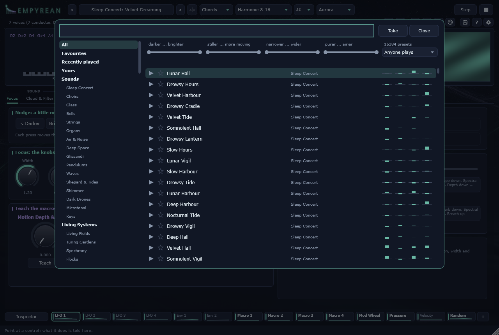

Presets
The bank holds 16384 presets in 256 groups of 64. Sixteen groups of sounds: Sleep Concert, Choirs, Glass, Bells, Strings, Organs, Air & Noise, Deep Space, Glissandi, Pendulums, Waves, Shepard & Tides, Shimmer, Dark Drones, Microtonal and Keys. Sixteen of living systems, each starting from one of those sounds and putting one system in front: Living Fields and Turing Gardens (the living landscape), Synchrony, Flocks, Ripples, Melting Spectra, Spectral Cascades, Resonant Halls (the modal hall), Ghosts & Memory, Strange Attractors, Reservoir Minds, Self-Listening (what it hears), Gravity Wells (the field), Smear & Dispersion, Lattices & Beats and Night Gardens. And sixteen of sleep concerts: Lullabies, Slow Breath, Deep Sleep, Dream Drift, Moonlight, Night Rain, Ocean Sleep, Cradle, Starfield, Hypnagogia, Twilight Choirs, Warm Drones, Snowfall, Forest Night, Slow Tides and Afterglow -- slow to come and to go, darker, with a slow conductor low down and nothing sudden, and moved by modulations made for the night: a breath of five to seven a minute (in Slow Breath the room, the harmonics' pulse and the colour all breathe together), tides of minutes, a smooth wander, chaos over half an hour, the Kuramoto oscillators in step, slow Lenia, the night deepening while the harmony stands (Root Age makes it darker and farther), calming answers to what it hears (louder becomes darker, change stills the shimmer, roughness tunes it purer) and a reservoir with a long memory. And sixteen of visions, each with one of the newest means in front: the animated pictures (Kaleidoscopes, Tunnels, Spirals, Ink & Flow, Feedback Loops, Raindrops, Star Streams, Moire Veils), Stretched Worlds (a stretched spectrum in the tuning made from it), Shifted Metals, Comb Phasers, Barber Poles (a comb and a spiral rising without end), Painted Light, Prisms, Alien Harmony and Dream Machines. And sixteen of swarms and currents: Swarms (phase waves circling), Splinters (the waves broken), Chimeras, Twin Swarms (two groups pulsing in turn), Currents, Vortex Streets and Ink Plumes (the Fluid, from syrup to turbulence, blown by the notes), Islands, Labyrinths and Archipelagos (the separation, the last for the night), Gong Blooms, Bronze Swells and Shimmer Cascades (turbulence), Pressure Pads and Expressive Voices (made for MPE controllers: pressure and slide move each note) and Living Storms (all of them together). And sixteen of halls and orbits: Growing Halls, Eroded Halls, Cathedral Years (a hall that grows over hours, for the night) and Worn Stone (one that wears away), Slow Clocks and Quickened Air (the partials' own time), Gravity Lenses (time bent and the ripple lingering), Lingering Waves, Orbits, Cyclotrons (fast tight circles), Planetaria (slow wide ones, for the night), Magnetic Choirs, Event Horizons, Memory Palaces (the hall and the ghosts), Celestial Mechanics and Living Architecture (all of them together). Where they fit, the presets before took the newest means too -- turbulence in bells and glass, the Fluid in airs and waves, the Islands in some of the sleep concerts, swarms and chimeras in Synchrony, MPE in keys and strings; a growing hall in the resonant halls, organs and some of the sleep concerts, the partials' own time in Smear & Dispersion and Synchrony, the lingering ripple in keys and bells, orbits in Gravity Wells and the starfields -- and kept everything they had. And sixteen of harmonic lives: Overblown Flutes and Breath Registers (Overblow; in the second the register rises and falls with a slow breath), Four Seasons and Turning Years (the seasons, the second for the night), Avalanches and Glacier Calving (rare large slides), Subterranea (a conductor up high and a floor that opens beneath it the longer the harmony stands) and Period Doubling (the subharmonics, pumped by pressure too), Halo Horizons and Aurora Curtains (a halo that travels), Rainfall Grains and Breathing Grains, Breather Chains, Harmonic Ecology, Night Ecology and Wild Harmonics (several of them together). Where they fit, the presets before took these too -- overblowing in organs, subharmonics in bells, gongs and dark drones, avalanches in glass and storms, grains in airs and rains, seasons in warm drones and planetaria, the horizon in deep space, breathers where a ripple runs -- only added: everything they had stays. And sixteen of dreams and phantoms: Phantom Choirs and Inner Voices (the phantom layer -- with headphones), Talbot Carpets and Bloch Tides (the Talbot timbres), Glass Forests, Bamboo Groves, Wind Tubes, Temple Winds and Storm Gardens (the chime field in its wind), Dreaming Rooms and Night Memories (the dream), Premonitions and Breathing In (the premonition), Phantom Gardens, Lucid Dreams and Elsewhere (several of them together). And sixteen of weather and growth: Rain on Water, Tin Roofs (the rain in tune), Forest Rain and Stone Gardens (the rain), Rustling Woods and Pine Winds (the leaves), Seashores, Pebble Beaches and Storm Coasts (the sea), Tam-Tam Halls and Thunder Sheets (the bloom), Swarm Rings and Firefly Swarms (the swarmalators), Slime Veins and Mycelium Nights (the physarum), Weather Gardens (several of them together). And sixteen of rooms and topology: Chapel Air, Stone Halls, Curtained Rooms, Walking Rooms (the listener walking through the standing waves) and Standing Waves (the wave room), Halo Rings, Counter Halos, Edge States (the halo running on through disorder), Still Halos (made trivial) and Halo Chapels, Quantum Harmony, Interference Nights and Tonnetz Walks (the quantum walk), Quantum Halos, Resonant Spaces and Topologies (several of them together). And sixteen of night and illusions: Aeolian Harps and Harp Gardens (the harp in the wind), Distant Storms, Summer Storms and Rolling Thunder, Singing Lakes, Frozen Nights and Thin Ice, Twin Streams, Fusion Choirs and Parting Clouds (the streams), Endless Ritardando and Endless Accelerando (Risset's rhythm), Night Arcs (the real night), Inside the Cloud (for the headset) and Night Weather (several of them together). And sixteen of choruses and mirrors: Cricket Meadows, Katydid Treetops, Frog Ponds and Summer Nights (the night chorus by who calls), Warm Evenings and Cool Nights (its warmth), Answering Choirs and Tuned Choruses, Time Mirrors, Reverse Halls, Mirror Chapels and Converging Halos (the time mirror), Storm Choruses, Lake Nights, Night Concerts and Nocturnes (several of them together). And sixteen of deep floors, for dark ambient: Organ Points (the foundation on the tonic for ever), Pressure Drones, Sub Abysses, Fifth Pillars, Breathing Floors, Cathedral Depths, Abyssal Plains, Black Monoliths, Iron Pedals (bells over an organ point), Tectonic Hum (pressure under distant thunder), Cavern Drones (the wave room), Undertow (Risset's slowing over a pedal), Low Chapels, Night Pressure, Deep Bells and Floors & Storms. And sixteen of stars and gravity: Sun Songs, Red Giants and White Dwarfs (the three stars), Spinning Stars, Ageing Stars and Star Choirs, Accretion Disks, Falling Light and Einstein Rings (the black hole: a quick fall, a slow one, the lens), Mergers and Distant Mergers, Redshift Halls and Receding Light (the sinking hall), Cosmic Floors (a star over an organ point), Quiet Universe (for the night) and Gravity's Choir (several of them together). And sixteen of light and depth: Twinkling Stars and Turbulent Light (scintillation), Hydrogen Choirs, Balmer Bells, Zeeman Fields, Dark Lines and Nebula Glow (the spectral lines), Derelict Hulls, Orbital Tanks, Broken Trusses, Perforated Plates and Thermal Snaps (the wreck), Deep Channels, Ocean Crossings and Whale Roads (the deep channel) and Lost Signals (several of them together). And sixteen of plasma and voice: Whistler Nights, Sferic Storms, Dawn Choruses, Radio Auroras, Plasma Hiss and VLF Receivers (the magnetosphere), Monk Drones, Kargyraa Halls, Giant Throats, Vowel Tides, Abyssal Choirs and Overtone Caves (the throats), Throat & Thunder, Cosmic Chant, Ionosphere and Voices of the Void (several together). Every preset has a floor: a foundation wherever the conductor plays, and Floor's share under it (since 0.22.0, after the bank's bass was measured with the conductor playing). The arrows in the header step through them; a click on the name opens the list by group. Every preset was measured by its loudness -- the loudest three seconds, weighted as the ear weighs them (ITU-R BS.1770, LUFS) -- and brought to the same level, so stepping through them does not jump.
Grown presets: Tools/presets/grow.py lets the map grow itself (MAP-Elites): it keeps the best sound in every cell of the map, mutates those sounds a few knobs at a time, renders and measures the children as the bank was measured, and keeps the ones that are new -- nearer your stars when you have starred any -- as your own presets in Documents/Empyrean/Presets/Grown, levelled like the bank.
Click the preset's name to browse: the bank and your own by name or group, by section, by your stars and the ones played lately, and by how they were measured to sound -- drag the ends of the four bars (darker ... brighter, stiller ... more moving, narrower ... wider, purer ... airier) -- and by who plays (the conductor, or your hands). Each row shows its traits as four small bars; hold its play mark to listen (the sound glides there and back when you let go), double-click or Enter to take it.

Your own presets: the disk in the header saves the sound (Ctrl+S) under its name or a new one, into Documents/Empyrean/Presets; they are listed first, journeys find them by name. A star by the preset's name says that the sound has moved from its preset; a notch on a knob shows where the preset had it, and its right-click menu takes it back -- Back to the preset (the disk's menu) takes everything back.
MIDI program change chooses a preset within the group that bank select (controller 0) names. A preset sets every knob and the matrix; your MIDI-learn bindings stay.
The presets
0 · Sleep Concert
0 Lunar Hall
1 Drowsy Hours
2 Velvet Harbour
3 Drowsy Cradle
4 Velvet Tide
5 Somnolent Hall
6 Drowsy Lantern
7 Slow Hours
8 Lunar Vigil
9 Slow Harbour
10 Drowsy Tide
11 Lunar Harbour
12 Deep Harbour
13 Nocturnal Tide
14 Drowsy Vigil
15 Deep Hall
16 Velvet Hall
17 Somnolent Vigil
18 Lunar Dreaming
19 Lunar Hours
20 Lunar Tide
21 Velvet Hours
22 Somnolent Cradle
23 Hushed Hours
24 Hushed Dreaming
25 Somnolent Tide
26 Drowsy Harbour
27 Deep Hours
28 Hushed Vigil
29 Deep Cradle
30 Deep Lantern
31 Lunar Cradle
32 Somnolent Harbour
33 Slow Tide
34 Hushed Lantern
35 Slow Vigil
36 Nocturnal Harbour
37 Slow Dreaming
38 Somnolent Lantern
39 Nocturnal Cradle
40 Deep Vigil
41 Velvet Cradle
42 Deep Tide
43 Velvet Lantern
44 Slow Hall
45 Nocturnal Hours
46 Hushed Hall
47 Slow Cradle
48 Drowsy Hall
49 Nocturnal Hall
50 Deep Dreaming
51 Nocturnal Dreaming
52 Nocturnal Vigil
53 Hushed Cradle
54 Lunar Lantern
55 Nocturnal Lantern
56 Hushed Tide
57 Somnolent Hours
58 Drowsy Dreaming
59 Hushed Harbour
60 Somnolent Dreaming
61 Velvet Vigil
62 Slow Lantern
63 Velvet Dreaming
1 · Choirs
0 Turning Chant
1 Vowel Choir
2 Cathedral Chant
3 Vowel Litany
4 Hollow Chant
5 Breathing Hymn
6 Cathedral Litany
7 Silent Aria
8 Breathing Voices
9 Turning Choir
10 Pale Hymn
11 Vowel Psalm
12 Vowel Chant
13 Hollow Aria
14 Distant Chorus
15 Pale Litany
16 Pale Psalm
17 Distant Psalm
18 Pale Aria
19 Silent Chorus
20 Silent Hymn
21 Hollow Choir
22 Breathing Litany
23 Cathedral Psalm
24 Pale Chorus
25 Silent Litany
26 Cathedral Choir
27 Vowel Voices
28 Distant Hymn
29 Vowel Hymn
30 Hollow Litany
31 Vowel Chorus
32 Silent Voices
33 Hollow Chorus
34 Turning Litany
35 Distant Chant
36 Pale Choir
37 Hollow Voices
38 Breathing Chorus
39 Turning Psalm
40 Breathing Aria
41 Turning Voices
42 Cathedral Aria
43 Distant Voices
44 Distant Choir
45 Breathing Chant
46 Silent Psalm
47 Silent Choir
48 Cathedral Voices
49 Pale Voices
50 Breathing Psalm
51 Vowel Aria
52 Pale Chant
53 Cathedral Hymn
54 Hollow Hymn
55 Turning Hymn
56 Cathedral Chorus
57 Breathing Choir
58 Distant Litany
59 Turning Aria
60 Hollow Psalm
61 Silent Chant
62 Turning Chorus
63 Distant Aria
2 · Glass
0 Thin Spire
1 Frosted Spire
2 Cut Spire
3 Crystal Facet
4 Lucid Harmonica
5 Cold Facet
6 Frosted Vial
7 Clear Pane
8 Brittle Vial
9 Frosted Glass
10 Thin Glass
11 Brittle Prism
12 Thin Lens
13 Cold Spire
14 Brittle Pane
15 Brittle Spire
16 Brittle Facet
17 Brittle Harmonica
18 Frosted Harmonica
19 Lucid Spire
20 Crystal Vial
21 Clear Harmonica
22 Cut Glass
23 Thin Harmonica
24 Cold Prism
25 Lucid Vial
26 Clear Lens
27 Cold Glass
28 Cold Pane
29 Cut Prism
30 Thin Vial
31 Thin Facet
32 Cut Harmonica
33 Crystal Prism
34 Cold Harmonica
35 Lucid Facet
36 Cut Lens
37 Thin Pane
38 Clear Facet
39 Cold Vial
40 Lucid Glass
41 Crystal Pane
42 Crystal Harmonica
43 Frosted Prism
44 Cut Facet
45 Frosted Facet
46 Lucid Lens
47 Clear Spire
48 Frosted Pane
49 Crystal Glass
50 Cut Pane
51 Brittle Lens
52 Frosted Lens
53 Crystal Spire
54 Crystal Lens
55 Brittle Glass
56 Lucid Pane
57 Cut Vial
58 Thin Prism
59 Clear Glass
60 Clear Prism
61 Clear Vial
62 Lucid Prism
63 Cold Lens
3 · Bells
0 Iron Tower
1 Iron Bowl
2 Far Carillon
3 Temple Toll
4 Temple Carillon
5 Sunken Gong
6 Tolling Tower
7 Iron Toll
8 Temple Gong
9 Iron Bell
10 Tibetan Gong
11 Sunken Chime
12 Struck Carillon
13 Tolling Peal
14 Tibetan Chime
15 Far Bell
16 Bronze Peal
17 Temple Tower
18 Iron Carillon
19 Struck Bowl
20 Tibetan Bowl
21 Struck Toll
22 Iron Gong
23 Tibetan Toll
24 Temple Chime
25 Struck Bell
26 Far Peal
27 Bronze Toll
28 Far Gong
29 Tibetan Tower
30 Temple Bowl
31 Tibetan Peal
32 Temple Bell
33 Bronze Bell
34 Sunken Toll
35 Far Chime
36 Bronze Carillon
37 Sunken Peal
38 Tolling Bell
39 Tolling Chime
40 Bronze Bowl
41 Tolling Carillon
42 Sunken Tower
43 Tibetan Carillon
44 Far Bowl
45 Bronze Tower
46 Tibetan Bell
47 Tolling Gong
48 Sunken Bell
49 Struck Peal
50 Bronze Chime
51 Far Tower
52 Iron Chime
53 Bronze Gong
54 Struck Gong
55 Tolling Bowl
56 Sunken Bowl
57 Struck Chime
58 Struck Tower
59 Iron Peal
60 Temple Peal
61 Far Toll
62 Sunken Carillon
63 Tolling Toll
4 · Strings
0 Sustained Strings
1 Sustained Fibres
2 Sustained Viols
3 Amber Viols
4 Sustained Cellos
5 Amber Ensemble
6 Muted Section
7 Warm Strings
8 Amber Bows
9 Warm Ensemble
10 Silken Cellos
11 Bowed Cellos
12 Long Cellos
13 Silken Ensemble
14 Warm Cellos
15 Silken Bows
16 Warm Bows
17 Long Bows
18 Muted Viols
19 Bowed Fibres
20 Sustained Quartet
21 Warm Viols
22 Sustained Bows
23 Muted Quartet
24 Gliding Ensemble
25 Long Fibres
26 Sustained Section
27 Long Ensemble
28 Long Strings
29 Gliding Fibres
30 Muted Ensemble
31 Sustained Ensemble
32 Warm Section
33 Long Section
34 Bowed Quartet
35 Muted Bows
36 Silken Strings
37 Bowed Viols
38 Amber Quartet
39 Bowed Strings
40 Silken Fibres
41 Amber Strings
42 Bowed Section
43 Warm Fibres
44 Amber Section
45 Silken Viols
46 Gliding Quartet
47 Amber Cellos
48 Bowed Ensemble
49 Gliding Viols
50 Warm Quartet
51 Silken Quartet
52 Amber Fibres
53 Long Viols
54 Silken Section
55 Gliding Strings
56 Muted Strings
57 Gliding Cellos
58 Gliding Section
59 Muted Cellos
60 Muted Fibres
61 Gliding Bows
62 Bowed Bows
63 Long Quartet
5 · Organs
0 Mixture Flute
1 Pedal Principal
2 Ancient Principal
3 Mixture Diapason
4 Open Principal
5 Reed Diapason
6 Pedal Nave
7 Stopped Organ
8 Open Celeste
9 Ancient Nave
10 Stopped Bourdon
11 Ancient Pipes
12 Chapel Organ
13 Chapel Pipes
14 Pedal Organ
15 Open Flute
16 Ancient Bourdon
17 Mixture Bourdon
18 Reed Pipes
19 Reed Organ
20 Stopped Pipes
21 Flue Pipes
22 Mixture Celeste
23 Reed Bourdon
24 Chapel Nave
25 Open Organ
26 Pedal Bourdon
27 Reed Nave
28 Open Bourdon
29 Chapel Celeste
30 Ancient Celeste
31 Flue Diapason
32 Stopped Principal
33 Reed Celeste
34 Flue Organ
35 Stopped Celeste
36 Pedal Pipes
37 Flue Principal
38 Stopped Flute
39 Pedal Celeste
40 Ancient Flute
41 Chapel Principal
42 Pedal Flute
43 Stopped Diapason
44 Reed Principal
45 Flue Nave
46 Flue Bourdon
47 Mixture Nave
48 Stopped Nave
49 Open Nave
50 Reed Flute
51 Ancient Diapason
52 Chapel Flute
53 Flue Celeste
54 Flue Flute
55 Ancient Organ
56 Chapel Bourdon
57 Mixture Organ
58 Open Diapason
59 Chapel Diapason
60 Open Pipes
61 Mixture Pipes
62 Pedal Diapason
63 Mixture Principal
6 · Air & Noise
0 Grain Spray
1 Salt Hiss
2 Rustling Spray
3 Ash Breath
4 Rain Drift
5 Wind Weather
6 Dusty Hiss
7 Rustling Weather
8 Dusty Weather
9 Dusty Spray
10 Grain Veil
11 Wind Hiss
12 Ash Field
13 Grain Weather
14 Rustling Hiss
15 Static Field
16 Rustling Veil
17 Salt Field
18 Salt Drift
19 Rain Mist
20 Salt Veil
21 Salt Weather
22 Rustling Drift
23 Static Drift
24 Static Veil
25 Static Weather
26 Static Mist
27 Ash Spray
28 Ash Weather
29 Grain Hiss
30 Ash Mist
31 Rustling Field
32 Rain Veil
33 Wind Spray
34 Dusty Drift
35 Dusty Field
36 Wind Drift
37 Grain Breath
38 Rain Weather
39 Ash Hiss
40 Dusty Breath
41 Rain Hiss
42 Rain Spray
43 Wind Breath
44 Rustling Breath
45 Wind Mist
46 Salt Spray
47 Static Breath
48 Grain Field
49 Dusty Veil
50 Rain Field
51 Salt Breath
52 Ash Drift
53 Rain Breath
54 Ash Veil
55 Grain Drift
56 Dusty Mist
57 Salt Mist
58 Static Spray
59 Wind Field
60 Rustling Mist
61 Static Hiss
62 Wind Veil
63 Grain Mist
7 · Deep Space
0 Cosmic Drift
1 Dark Nebula
2 Orbital Corona
3 Stellar Abyss
4 Silent Nebula
5 Cosmic Abyss
6 Stellar Drift
7 Silent Abyss
8 Void Corona
9 Dark Corona
10 Cosmic Corona
11 Cosmic Nebula
12 Orbital Abyss
13 Event Expanse
14 Remote Expanse
15 Void Expanse
16 Void Horizon
17 Remote Station
18 Stellar Expanse
19 Silent Horizon
20 Orbital Horizon
21 Remote Nebula
22 Silent Corona
23 Stellar Horizon
24 Silent Station
25 Silent Drift
26 Dark Station
27 Orbital Nebula
28 Cosmic Expanse
29 Void Station
30 Dark Horizon
31 Event Signal
32 Event Station
33 Cosmic Horizon
34 Event Abyss
35 Orbital Drift
36 Void Drift
37 Dark Drift
38 Stellar Nebula
39 Silent Signal
40 Event Horizon
41 Orbital Station
42 Remote Drift
43 Cosmic Station
44 Remote Corona
45 Silent Expanse
46 Stellar Station
47 Remote Signal
48 Dark Expanse
49 Event Nebula
50 Orbital Signal
51 Remote Horizon
52 Dark Abyss
53 Void Signal
54 Void Abyss
55 Event Corona
56 Event Drift
57 Cosmic Signal
58 Void Nebula
59 Dark Signal
60 Remote Abyss
61 Stellar Corona
62 Stellar Signal
63 Orbital Expanse
8 · Glissandi
0 Arriving Birds
1 Gathering Choir
2 Swarming Chord
3 Falling Choir
4 Sliding Birds
5 Bending Birds
6 Bending Glissando
7 Rising Glissando
8 Rising Cloud
9 Sliding Choir
10 Gathering Swarm
11 Swarming Voices
12 Gathering Chord
13 Rising Lights
14 Gathering Cloud
15 Converging Birds
16 Sliding Lights
17 Converging Lights
18 Rising Swarm
19 Bending Lights
20 Swarming Birds
21 Bending Cloud
22 Converging Voices
23 Bending Choir
24 Converging Swarm
25 Rising Chord
26 Arriving Swarm
27 Converging Choir
28 Falling Lights
29 Swarming Choir
30 Converging Chord
31 Bending Chord
32 Arriving Glissando
33 Converging Glissando
34 Sliding Cloud
35 Swarming Swarm
36 Sliding Glissando
37 Rising Voices
38 Falling Swarm
39 Arriving Cloud
40 Arriving Voices
41 Converging Cloud
42 Rising Birds
43 Gathering Glissando
44 Gathering Lights
45 Bending Swarm
46 Falling Glissando
47 Swarming Cloud
48 Gathering Birds
49 Arriving Chord
50 Falling Cloud
51 Bending Voices
52 Sliding Chord
53 Rising Choir
54 Arriving Lights
55 Swarming Lights
56 Sliding Swarm
57 Falling Chord
58 Falling Birds
59 Arriving Choir
60 Sliding Voices
61 Falling Voices
62 Gathering Voices
63 Swarming Glissando
9 · Pendulums
0 Patient Pendulum
1 Patient Weights
2 Pacing Escapement
3 Clock Weights
4 Measured Pendulum
5 Swinging Clocks
6 Measured Gears
7 Pacing Metronome
8 Swinging Cycles
9 Measured Escapement
10 Slow Escapement
11 Measured Metronome
12 Pacing Weights
13 Steady Cycles
14 Swinging Escapement
15 Steady Weights
16 Clock Pendulum
17 Slow Clocks
18 Patient Escapement
19 Pacing Clocks
20 Steady Escapement
21 Turning Weights
22 Measured Orbits
23 Turning Gears
24 Pacing Pendulum
25 Slow Gears
26 Steady Clocks
27 Measured Clocks
28 Turning Escapement
29 Measured Weights
30 Patient Metronome
31 Patient Gears
32 Slow Pendulum
33 Turning Cycles
34 Steady Gears
35 Pacing Orbits
36 Patient Orbits
37 Turning Metronome
38 Swinging Gears
39 Clock Gears
40 Steady Pendulum
41 Steady Orbits
42 Steady Metronome
43 Turning Orbits
44 Slow Metronome
45 Clock Escapement
46 Swinging Weights
47 Swinging Orbits
48 Patient Clocks
49 Slow Orbits
50 Slow Cycles
51 Clock Orbits
52 Clock Metronome
53 Clock Clocks
54 Turning Pendulum
55 Slow Weights
56 Clock Cycles
57 Pacing Gears
58 Turning Clocks
59 Measured Cycles
60 Swinging Metronome
61 Pacing Cycles
62 Swinging Pendulum
63 Patient Cycles
10 · Waves
0 Endless Shore
1 Swelling Current
2 Long Breakers
3 Endless Wake
4 Rising Shore
5 Rolling Shore
6 Endless Swell
7 Climbing Waves
8 Climbing Wake
9 Climbing Breakers
10 Climbing Shore
11 Climbing Current
12 Long Ocean
13 Calm Shore
14 Broken Ocean
15 Rising Swell
16 Rolling Swell
17 Rising Breakers
18 Rolling Surf
19 Long Current
20 Swelling Waves
21 Rolling Breakers
22 Rising Ocean
23 Rising Current
24 Calm Ocean
25 Broken Shore
26 Endless Surf
27 Calm Surf
28 Endless Ocean
29 Swelling Ocean
30 Long Waves
31 Rising Waves
32 Calm Breakers
33 Long Surf
34 Broken Breakers
35 Calm Waves
36 Rolling Waves
37 Rolling Current
38 Broken Swell
39 Long Shore
40 Broken Wake
41 Swelling Wake
42 Swelling Swell
43 Endless Waves
44 Calm Current
45 Broken Current
46 Long Swell
47 Long Wake
48 Rising Surf
49 Calm Swell
50 Broken Waves
51 Rising Wake
52 Rolling Wake
53 Climbing Ocean
54 Calm Wake
55 Endless Breakers
56 Climbing Swell
57 Climbing Surf
58 Endless Current
59 Swelling Breakers
60 Swelling Surf
61 Rolling Ocean
62 Broken Surf
63 Swelling Shore
11 · Shepard & Tides
0 Climbing Ladder
1 Infinite Ladder
2 Climbing Tide
3 Ascending Flood
4 Ascending Moon
5 Circling Tide
6 Ascending Ladder
7 Endless Ebb
8 Tidal Ladder
9 Eternal Moon
10 Circling Ascent
11 Ascending Staircase
12 Infinite Flood
13 Circling Spiral
14 Infinite Staircase
15 Tidal Tide
16 Eternal Ascent
17 Endless Spiral
18 Eternal Ladder
19 Endless Ladder
20 Climbing Flood
21 Tidal Moon
22 Ascending Ebb
23 Climbing Ebb
24 Climbing Staircase
25 Endless Ascent
26 Eternal Flood
27 Circling Moon
28 Tidal Staircase
29 Spiral Flood
30 Ascending Ascent
31 Eternal Tide
32 Endless Staircase
33 Climbing Spiral
34 Circling Ebb
35 Infinite Moon
36 Spiral Ebb
37 Tidal Flood
38 Circling Ladder
39 Spiral Ascent
40 Endless Moon
41 Climbing Moon
42 Eternal Ebb
43 Ascending Tide
44 Circling Flood
45 Spiral Staircase
46 Eternal Spiral
47 Infinite Spiral
48 Spiral Moon
49 Endless Flood
50 Infinite Ascent
51 Infinite Ebb
52 Circling Staircase
53 Infinite Tide
54 Tidal Ascent
55 Ascending Spiral
56 Spiral Tide
57 Spiral Ladder
58 Tidal Spiral
59 Climbing Ascent
60 Spiral Spiral
61 Endless Tide
62 Eternal Staircase
63 Tidal Ebb
12 · Shimmer
0 Trembling Dust
1 Sparkling Haze
2 Dappled Sheen
3 Glowing Aurora
4 Dappled Shimmer
5 Dappled Haze
6 Glinting Halo
7 Bright Dust
8 Sparkling Aurora
9 Silver Sheen
10 Flickering Shimmer
11 Glowing Halo
12 Dappled Halo
13 Glowing Haze
14 Bright Sheen
15 Trembling Light
16 Sparkling Dust
17 Flickering Sheen
18 Flickering Light
19 Glowing Sheen
20 Glinting Haze
21 Trembling Shimmer
22 Dappled Aurora
23 Glinting Aurora
24 Trembling Halo
25 Glinting Dust
26 Glinting Sheen
27 Glowing Shimmer
28 Sparkling Light
29 Dappled Veil
30 Sparkling Halo
31 Glowing Dust
32 Bright Shimmer
33 Flickering Haze
34 Flickering Dust
35 Flickering Veil
36 Sparkling Sheen
37 Glowing Light
38 Silver Shimmer
39 Bright Veil
40 Trembling Sheen
41 Silver Veil
42 Glinting Veil
43 Silver Aurora
44 Flickering Halo
45 Glinting Shimmer
46 Silver Haze
47 Silver Halo
48 Flickering Aurora
49 Glowing Veil
50 Bright Halo
51 Trembling Aurora
52 Trembling Haze
53 Silver Dust
54 Dappled Light
55 Sparkling Shimmer
56 Sparkling Veil
57 Glinting Light
58 Trembling Veil
59 Bright Aurora
60 Silver Light
61 Bright Light
62 Bright Haze
63 Dappled Dust
13 · Dark Drones
0 Sombre Cavern
1 Heavy Drone
2 Black Cavern
3 Low Cavern
4 Slow Monolith
5 Heavy Monolith
6 Low Crypt
7 Heavy Engine
8 Black Basalt
9 Sombre Crypt
10 Buried Engine
11 Sombre Monolith
12 Brooding Drone
13 Buried Basalt
14 Slow Cavern
15 Low Furnace
16 Brooding Cavern
17 Sombre Basalt
18 Sombre Furnace
19 Slow Basalt
20 Subterranean Crypt
21 Heavy Undertow
22 Black Furnace
23 Black Crypt
24 Brooding Engine
25 Low Monolith
26 Black Drone
27 Buried Crypt
28 Subterranean Basalt
29 Buried Undertow
30 Black Engine
31 Buried Monolith
32 Sombre Engine
33 Heavy Cavern
34 Buried Cavern
35 Subterranean Furnace
36 Heavy Furnace
37 Subterranean Engine
38 Subterranean Cavern
39 Sombre Undertow
40 Black Monolith
41 Low Undertow
42 Buried Furnace
43 Subterranean Drone
44 Low Drone
45 Brooding Furnace
46 Heavy Crypt
47 Slow Engine
48 Low Basalt
49 Sombre Drone
50 Low Engine
51 Brooding Basalt
52 Black Undertow
53 Heavy Basalt
54 Brooding Undertow
55 Slow Crypt
56 Slow Furnace
57 Brooding Crypt
58 Subterranean Monolith
59 Slow Undertow
60 Subterranean Undertow
61 Buried Drone
62 Slow Drone
63 Brooding Monolith
14 · Microtonal
0 Eleventh Tuning
1 Eleventh Ratio
2 Tilted Tuning
3 Stretched Comma
4 Seventh Series
5 Tritave Gamelan
6 Eleventh Mode
7 Tilted Series
8 Crooked Gamelan
9 Tilted Lattice
10 Crooked Comma
11 Stretched Lattice
12 Foreign Comma
13 Tritave Scale
14 Tritave Mode
15 Bent Tuning
16 Stretched Ratio
17 Stretched Mode
18 Tilted Gamelan
19 Foreign Tuning
20 Eleventh Series
21 Bent Comma
22 Bent Gamelan
23 Tritave Tuning
24 Tritave Comma
25 Tritave Lattice
26 Tilted Comma
27 Foreign Series
28 Foreign Scale
29 Crooked Scale
30 Stretched Gamelan
31 Seventh Tuning
32 Tritave Series
33 Eleventh Scale
34 Tritave Ratio
35 Tilted Mode
36 Seventh Lattice
37 Tilted Ratio
38 Eleventh Gamelan
39 Seventh Gamelan
40 Bent Series
41 Foreign Gamelan
42 Seventh Comma
43 Foreign Mode
44 Bent Ratio
45 Stretched Series
46 Crooked Series
47 Seventh Mode
48 Crooked Tuning
49 Eleventh Comma
50 Bent Mode
51 Crooked Ratio
52 Seventh Scale
53 Crooked Mode
54 Foreign Lattice
55 Bent Scale
56 Seventh Ratio
57 Eleventh Lattice
58 Bent Lattice
59 Crooked Lattice
60 Stretched Tuning
61 Tilted Scale
62 Foreign Ratio
63 Stretched Scale
15 · Keys
0 Close Notes
1 Felt Chords
2 Soft Notes
3 Felt Fingers
4 Played Fingers
5 Night Touch
6 Night Chords
7 Gentle Piano
8 Played Touch
9 Played Keys
10 Felt Hands
11 Played Chords
12 Close Chords
13 Touched Chords
14 Soft Pad
15 Soft Chords
16 Quiet Chords
17 Soft Touch
18 Night Notes
19 Felt Piano
20 Night Piano
21 Touched Keys
22 Night Fingers
23 Gentle Touch
24 Touched Touch
25 Felt Pad
26 Quiet Fingers
27 Felt Keys
28 Quiet Pad
29 Soft Hands
30 Played Piano
31 Close Keys
32 Gentle Hands
33 Soft Piano
34 Touched Fingers
35 Gentle Chords
36 Felt Touch
37 Played Notes
38 Gentle Keys
39 Touched Pad
40 Quiet Piano
41 Close Piano
42 Soft Fingers
43 Night Pad
44 Soft Keys
45 Gentle Fingers
46 Close Touch
47 Quiet Notes
48 Touched Piano
49 Gentle Notes
50 Close Hands
51 Played Pad
52 Close Pad
53 Touched Hands
54 Quiet Touch
55 Night Hands
56 Touched Notes
57 Gentle Pad
58 Close Fingers
59 Quiet Hands
60 Quiet Keys
61 Played Hands
62 Night Keys
63 Felt Notes
16 · Living Fields
0 Teeming Garden
1 Mossy Lichen
2 Teeming Fern
3 Growing Bloom
4 Mossy Meadow
5 Growing Colony
6 Seeded Garden
7 Budding Bloom
8 Spreading Meadow
9 Spreading Reef
10 Spreading Culture
11 Spreading Colony
12 Verdant Meadow
13 Teeming Culture
14 Spreading Bloom
15 Budding Lichen
16 Spreading Garden
17 Verdant Bloom
18 Budding Culture
19 Verdant Garden
20 Growing Garden
21 Teeming Reef
22 Seeded Colony
23 Growing Meadow
24 Verdant Culture
25 Teeming Meadow
26 Seeded Lichen
27 Mossy Bloom
28 Growing Fern
29 Teeming Colony
30 Creeping Reef
31 Seeded Culture
32 Verdant Fern
33 Mossy Fern
34 Mossy Garden
35 Mossy Culture
36 Mossy Colony
37 Growing Reef
38 Teeming Bloom
39 Spreading Lichen
40 Creeping Culture
41 Seeded Meadow
42 Creeping Fern
43 Budding Colony
44 Creeping Meadow
45 Creeping Garden
46 Budding Reef
47 Creeping Colony
48 Budding Garden
49 Growing Lichen
50 Budding Fern
51 Seeded Bloom
52 Growing Culture
53 Spreading Fern
54 Verdant Lichen
55 Verdant Colony
56 Teeming Lichen
57 Creeping Bloom
58 Seeded Reef
59 Mossy Reef
60 Creeping Lichen
61 Budding Meadow
62 Seeded Fern
63 Verdant Reef
17 · Turing Gardens
0 Patterned Leopard
1 Spotted Leopard
2 Spotted Mitosis
3 Striped Leopard
4 Dappling Pigment
5 Striped Pigment
6 Striped Pattern
7 Coral Morphogen
8 Labyrinth Pattern
9 Patterned Morphogen
10 Spotted Pigment
11 Striped Zebra
12 Striped Mitosis
13 Spotted Pattern
14 Dappling Maze
15 Branching Zebra
16 Labyrinth Maze
17 Coral Zebra
18 Labyrinth Pigment
19 Coral Shell
20 Branching Pigment
21 Patterned Pattern
22 Branching Pattern
23 Labyrinth Shell
24 Branching Mitosis
25 Patterned Maze
26 Spotted Zebra
27 Mottled Shell
28 Mottled Morphogen
29 Striped Shell
30 Striped Morphogen
31 Mottled Maze
32 Mottled Leopard
33 Patterned Pigment
34 Spotted Maze
35 Patterned Mitosis
36 Branching Maze
37 Mottled Zebra
38 Dappling Morphogen
39 Dappling Mitosis
40 Mottled Mitosis
41 Branching Shell
42 Mottled Pigment
43 Coral Maze
44 Coral Pigment
45 Mottled Pattern
46 Patterned Shell
47 Labyrinth Mitosis
48 Branching Leopard
49 Spotted Morphogen
50 Labyrinth Leopard
51 Labyrinth Morphogen
52 Dappling Pattern
53 Dappling Leopard
54 Coral Pattern
55 Dappling Zebra
56 Dappling Shell
57 Spotted Shell
58 Labyrinth Zebra
59 Striped Maze
60 Patterned Zebra
61 Branching Morphogen
62 Coral Leopard
63 Coral Mitosis
18 · Synchrony
0 Pulsing Crickets
1 Pulsing Fireflies
2 Aligned Lanterns
3 Kindred Rowers
4 Gathered Rowers
5 Coupled Tremolo
6 Pulsing Pulses
7 Aligned Fireflies
8 Entrained Hearts
9 Phased Rowers
10 Gathered Hearts
11 Kindred Metronomes
12 Phased Metronomes
13 Pulsing Hearts
14 Coupled Rowers
15 Phased Lanterns
16 Entrained Metronomes
17 Pulsing Metronomes
18 Aligned Tremolo
19 Aligned Rowers
20 Coupled Pulses
21 Entrained Rowers
22 Phased Pulses
23 Entrained Fireflies
24 Locked Fireflies
25 Kindred Fireflies
26 Locked Tremolo
27 Coupled Metronomes
28 Pulsing Lanterns
29 Locked Hearts
30 Entrained Crickets
31 Locked Rowers
32 Phased Hearts
33 Pulsing Tremolo
34 Aligned Pulses
35 Gathered Fireflies
36 Coupled Lanterns
37 Entrained Lanterns
38 Phased Crickets
39 Kindred Pulses
40 Locked Crickets
41 Kindred Tremolo
42 Aligned Hearts
43 Coupled Fireflies
44 Entrained Tremolo
45 Locked Metronomes
46 Coupled Hearts
47 Kindred Lanterns
48 Gathered Pulses
49 Aligned Crickets
50 Locked Lanterns
51 Gathered Tremolo
52 Phased Fireflies
53 Pulsing Rowers
54 Aligned Metronomes
55 Phased Tremolo
56 Locked Pulses
57 Gathered Lanterns
58 Entrained Pulses
59 Gathered Metronomes
60 Coupled Crickets
61 Kindred Crickets
62 Gathered Crickets
63 Kindred Hearts
19 · Flocks
0 Murmuring Starlings
1 Homing Starlings
2 Flocking Shoal
3 Soaring Swifts
4 Scattering Murmuration
5 Banking Swifts
6 Scattering Swallows
7 Darting Herons
8 Homing Herons
9 Banking Geese
10 Soaring Starlings
11 Wheeling Starlings
12 Banking Herons
13 Darting Sparrows
14 Soaring Swallows
15 Soaring Sparrows
16 Flocking Sparrows
17 Soaring Murmuration
18 Wheeling Swifts
19 Flocking Starlings
20 Murmuring Swifts
21 Homing Murmuration
22 Murmuring Swallows
23 Homing Shoal
24 Homing Swallows
25 Wheeling Geese
26 Homing Sparrows
27 Flocking Swallows
28 Scattering Swifts
29 Flocking Geese
30 Banking Murmuration
31 Wheeling Shoal
32 Scattering Herons
33 Murmuring Herons
34 Murmuring Shoal
35 Soaring Geese
36 Scattering Sparrows
37 Darting Starlings
38 Homing Swifts
39 Wheeling Murmuration
40 Murmuring Murmuration
41 Scattering Shoal
42 Banking Sparrows
43 Flocking Swifts
44 Homing Geese
45 Flocking Herons
46 Darting Swallows
47 Banking Starlings
48 Darting Murmuration
49 Darting Geese
50 Scattering Starlings
51 Banking Shoal
52 Darting Shoal
53 Wheeling Sparrows
54 Flocking Murmuration
55 Soaring Shoal
56 Soaring Herons
57 Scattering Geese
58 Wheeling Herons
59 Darting Swifts
60 Murmuring Sparrows
61 Wheeling Swallows
62 Banking Swallows
63 Murmuring Geese
20 · Ripples
0 Concentric Lake
1 Lapping Stones
2 Quivering Puddle
3 Lapping Pond
4 Dropped Puddle
5 Dropped Fountain
6 Concentric Pond
7 Rippling Fountain
8 Dropped Rings
9 Lapping Water
10 Pebbled Lake
11 Lapping Lake
12 Concentric Fountain
13 Plucked Fountain
14 Dropped Water
15 Lapping Fountain
16 Dropped Pond
17 Dropped Stones
18 Skimmed Pond
19 Pebbled Stones
20 Quivering Pond
21 Rippling Basin
22 Dropped Basin
23 Skimmed Stones
24 Skimmed Water
25 Skimmed Basin
26 Plucked Puddle
27 Pebbled Basin
28 Rippling Pond
29 Pebbled Water
30 Concentric Basin
31 Skimmed Puddle
32 Lapping Puddle
33 Plucked Pond
34 Pebbled Rings
35 Rippling Lake
36 Rippling Water
37 Dropped Lake
38 Quivering Fountain
39 Plucked Water
40 Quivering Lake
41 Rippling Stones
42 Pebbled Pond
43 Plucked Basin
44 Rippling Puddle
45 Quivering Stones
46 Concentric Puddle
47 Quivering Basin
48 Quivering Water
49 Skimmed Rings
50 Plucked Stones
51 Concentric Water
52 Concentric Rings
53 Skimmed Fountain
54 Lapping Rings
55 Lapping Basin
56 Concentric Stones
57 Pebbled Puddle
58 Skimmed Lake
59 Plucked Rings
60 Quivering Rings
61 Plucked Lake
62 Rippling Rings
63 Pebbled Fountain
21 · Melting Spectra
0 Fading Frost
1 Molten Snow
2 Thawing Snow
3 Softened Wax
4 Softened Glacier
5 Weeping Candle
6 Liquid Icicles
7 Dissolving Icefield
8 Fading Candle
9 Melting Icicles
10 Melting Snow
11 Liquid Wax
12 Melting Frost
13 Softened Icefield
14 Thawing Frost
15 Thawing Icefield
16 Thawing Wax
17 Fading Icefield
18 Liquid Candle
19 Melting Glacier
20 Molten Glacier
21 Molten Wax
22 Liquid Sugar
23 Melting Candle
24 Dissolving Wax
25 Liquid Icefield
26 Fading Sugar
27 Fading Wax
28 Dissolving Candle
29 Softened Icicles
30 Thawing Candle
31 Molten Icicles
32 Weeping Sugar
33 Weeping Frost
34 Fading Snow
35 Dissolving Icicles
36 Weeping Icicles
37 Dissolving Sugar
38 Weeping Icefield
39 Thawing Sugar
40 Melting Icefield
41 Molten Candle
42 Melting Wax
43 Softened Frost
44 Liquid Snow
45 Liquid Frost
46 Fading Icicles
47 Thawing Glacier
48 Weeping Glacier
49 Dissolving Frost
50 Fading Glacier
51 Melting Sugar
52 Molten Frost
53 Weeping Wax
54 Liquid Glacier
55 Dissolving Glacier
56 Softened Sugar
57 Dissolving Snow
58 Softened Snow
59 Molten Icefield
60 Weeping Snow
61 Thawing Icicles
62 Softened Candle
63 Molten Sugar
22 · Spectral Cascades
0 Echoing Falls
1 Cascading Prisms
2 Repeating Rainbows
3 Tumbling Mirrors
4 Repeating Spectra
5 Refracted Mirrors
6 Tumbling Prisms
7 Tumbling Fountains
8 Splintered Rainbows
9 Repeating Falls
10 Tumbling Spectra
11 Splintered Spectra
12 Cascading Stairs
13 Cascading Steps
14 Mirrored Rainbows
15 Repeating Stairs
16 Mirrored Fountains
17 Repeating Mirrors
18 Mirrored Stairs
19 Echoing Rainbows
20 Fractured Mirrors
21 Tumbling Rainbows
22 Echoing Fountains
23 Splintered Steps
24 Mirrored Spectra
25 Fractured Prisms
26 Splintered Fountains
27 Refracted Spectra
28 Fractured Stairs
29 Repeating Steps
30 Fractured Falls
31 Splintered Prisms
32 Tumbling Stairs
33 Fractured Rainbows
34 Cascading Falls
35 Splintered Falls
36 Mirrored Prisms
37 Mirrored Mirrors
38 Refracted Rainbows
39 Repeating Prisms
40 Splintered Stairs
41 Cascading Mirrors
42 Echoing Spectra
43 Refracted Prisms
44 Fractured Fountains
45 Refracted Steps
46 Echoing Stairs
47 Cascading Fountains
48 Refracted Fountains
49 Splintered Mirrors
50 Echoing Steps
51 Mirrored Steps
52 Cascading Spectra
53 Fractured Steps
54 Mirrored Falls
55 Tumbling Falls
56 Refracted Stairs
57 Fractured Spectra
58 Cascading Rainbows
59 Echoing Mirrors
60 Tumbling Steps
61 Repeating Fountains
62 Refracted Falls
63 Echoing Prisms
23 · Resonant Halls
0 Echoed Cloister
1 Resonant Basilica
2 Echoed Apse
3 Echoed Atrium
4 Resonant Cistern
5 Echoed Rotunda
6 Echoed Vault
7 Vaulted Atrium
8 Ringing Basilica
9 Marble Apse
10 Columned Cistern
11 Hollowed Cloister
12 Resonant Apse
13 Resonant Vault
14 Columned Atrium
15 Painted Rotunda
16 Vaulted Cistern
17 Marble Atrium
18 Painted Apse
19 Resonant Atrium
20 Marble Basilica
21 Marble Cloister
22 Columned Cloister
23 Echoed Cistern
24 Vaulted Apse
25 Columned Chamber
26 Hollowed Cistern
27 Columned Vault
28 Hollowed Rotunda
29 Vaulted Chamber
30 Echoed Basilica
31 Ringing Cloister
32 Ringing Rotunda
33 Ringing Vault
34 Hollowed Apse
35 Vaulted Vault
36 Columned Apse
37 Vaulted Cloister
38 Vaulted Basilica
39 Columned Rotunda
40 Marble Rotunda
41 Resonant Chamber
42 Painted Vault
43 Marble Chamber
44 Columned Basilica
45 Resonant Cloister
46 Ringing Cistern
47 Hollowed Chamber
48 Painted Cistern
49 Hollowed Atrium
50 Ringing Apse
51 Hollowed Basilica
52 Ringing Chamber
53 Painted Basilica
54 Hollowed Vault
55 Marble Cistern
56 Resonant Rotunda
57 Ringing Atrium
58 Painted Atrium
59 Vaulted Rotunda
60 Painted Chamber
61 Painted Cloister
62 Marble Vault
63 Echoed Chamber
24 · Ghosts & Memory
0 Haunted Footsteps
1 Vanished Summers
2 Faded Portraits
3 Spectral Waltz
4 Faded Letters
5 Remembered Letters
6 Haunted Waltz
7 Haunted Afternoons
8 Faded Summers
9 Lingering Letters
10 Recalled Portraits
11 Recalled Letters
12 Recalled Gardens
13 Spectral Afternoons
14 Faded Rooms
15 Spectral Footsteps
16 Remembered Afternoons
17 Spectral Gardens
18 Faded Waltz
19 Recalled Summers
20 Haunted Gardens
21 Former Rooms
22 Remembered Gardens
23 Lingering Afternoons
24 Recalled Rooms
25 Lingering Waltz
26 Remembered Rooms
27 Haunted Portraits
28 Spectral Summers
29 Haunted Summers
30 Remembered Summers
31 Former Gardens
32 Spectral Portraits
33 Vanished Afternoons
34 Remembered Waltz
35 Faded Footsteps
36 Vanished Rooms
37 Vanished Portraits
38 Vanished Footsteps
39 Lingering Summers
40 Haunted Letters
41 Lingering Portraits
42 Vanished Letters
43 Recalled Afternoons
44 Haunted Rooms
45 Former Letters
46 Vanished Waltz
47 Vanished Gardens
48 Former Summers
49 Recalled Waltz
50 Recalled Footsteps
51 Faded Afternoons
52 Spectral Rooms
53 Lingering Gardens
54 Remembered Footsteps
55 Spectral Letters
56 Former Afternoons
57 Former Portraits
58 Former Waltz
59 Faded Gardens
60 Lingering Rooms
61 Former Footsteps
62 Lingering Footsteps
63 Remembered Portraits
25 · Strange Attractors
0 Butterfly Orbit
1 Chaotic Orbit
2 Wandering Manifold
3 Turbulent Trajectory
4 Looping Lorenz
5 Unstable Manifold
6 Wandering Attractor
7 Turbulent Orbit
8 Folded Attractor
9 Butterfly Trajectory
10 Chaotic Roessler
11 Wandering Lorenz
12 Unstable Orbit
13 Butterfly Roessler
14 Unstable Saddle
15 Turbulent Attractor
16 Chaotic Saddle
17 Butterfly Torus
18 Strange Orbit
19 Folded Trajectory
20 Turbulent Saddle
21 Wandering Trajectory
22 Turbulent Lorenz
23 Looping Trajectory
24 Looping Orbit
25 Butterfly Saddle
26 Turbulent Roessler
27 Turbulent Manifold
28 Unstable Lorenz
29 Strange Torus
30 Chaotic Lorenz
31 Looping Manifold
32 Looping Torus
33 Folded Orbit
34 Strange Attractor
35 Wandering Orbit
36 Wandering Torus
37 Strange Trajectory
38 Folded Roessler
39 Wandering Saddle
40 Looping Saddle
41 Wandering Roessler
42 Folded Torus
43 Strange Manifold
44 Looping Attractor
45 Strange Saddle
46 Unstable Torus
47 Folded Lorenz
48 Turbulent Torus
49 Chaotic Attractor
50 Looping Roessler
51 Butterfly Manifold
52 Folded Saddle
53 Unstable Trajectory
54 Butterfly Attractor
55 Chaotic Trajectory
56 Unstable Roessler
57 Unstable Attractor
58 Chaotic Manifold
59 Folded Manifold
60 Chaotic Torus
61 Strange Lorenz
62 Strange Roessler
63 Butterfly Lorenz
26 · Reservoir Minds
0 Musing Mind
1 Dreaming Mind
2 Musing Neurons
3 Neural Thought
4 Pondering Mind
5 Pondering Network
6 Musing Cortex
7 Pondering Cortex
8 Recurrent Neurons
9 Neural Reverie
10 Pondering Neurons
11 Listening Neurons
12 Thinking Mind
13 Thinking Synapse
14 Recurrent Thought
15 Echo-State Neurons
16 Musing Reverie
17 Listening Cortex
18 Dreaming Network
19 Neural Network
20 Dreaming Thought
21 Dreaming Synapse
22 Echo-State Mind
23 Pondering Thought
24 Echo-State Cortex
25 Dreaming Memory
26 Musing Synapse
27 Thinking Thought
28 Thinking Memory
29 Musing Network
30 Recurrent Mind
31 Dreaming Neurons
32 Listening Thought
33 Echo-State Thought
34 Neural Neurons
35 Thinking Network
36 Recurrent Synapse
37 Musing Memory
38 Dreaming Cortex
39 Neural Cortex
40 Listening Synapse
41 Listening Reverie
42 Recurrent Network
43 Pondering Reverie
44 Thinking Reverie
45 Thinking Cortex
46 Neural Mind
47 Recurrent Cortex
48 Pondering Synapse
49 Listening Memory
50 Neural Synapse
51 Recurrent Reverie
52 Echo-State Memory
53 Echo-State Synapse
54 Pondering Memory
55 Neural Memory
56 Dreaming Reverie
57 Listening Network
58 Recurrent Memory
59 Echo-State Network
60 Listening Mind
61 Echo-State Reverie
62 Musing Thought
63 Thinking Neurons
27 · Self-Listening
0 Self-Aware Echo
1 Heeding Reply
2 Self-Aware Witness
3 Reacting Feedback
4 Alert Ear
5 Reacting Mirror
6 Responsive Feedback
7 Answering Reply
8 Heeding Mirror
9 Alert Witness
10 Hearing Reply
11 Hearing Listener
12 Reacting Response
13 Responsive Ear
14 Self-Aware Response
15 Responsive Mirror
16 Hearing Response
17 Reacting Ear
18 Heeding Echo
19 Hearing Feedback
20 Attentive Mirror
21 Self-Aware Feedback
22 Heeding Response
23 Responsive Response
24 Alert Reply
25 Responsive Listener
26 Responsive Echo
27 Responsive Reply
28 Hearing Mirror
29 Reacting Listener
30 Reacting Witness
31 Self-Aware Reply
32 Answering Listener
33 Attentive Echo
34 Attentive Witness
35 Alert Echo
36 Heeding Ear
37 Alert Response
38 Heeding Witness
39 Self-Aware Mirror
40 Self-Aware Listener
41 Self-Aware Ear
42 Answering Response
43 Answering Echo
44 Attentive Reply
45 Hearing Witness
46 Answering Ear
47 Alert Listener
48 Answering Mirror
49 Hearing Ear
50 Heeding Feedback
51 Hearing Echo
52 Reacting Reply
53 Answering Witness
54 Attentive Ear
55 Responsive Witness
56 Heeding Listener
57 Reacting Echo
58 Alert Mirror
59 Answering Feedback
60 Attentive Response
61 Alert Feedback
62 Attentive Listener
63 Attentive Feedback
28 · Gravity Wells
0 Drawn Mass
1 Falling Anchor
2 Falling Pole
3 Drawn Anchor
4 Tethered Centre
5 Tethered Anchor
6 Tethered Core
7 Gravitating Well
8 Sinking Pole
9 Magnetic Magnet
10 Magnetic Lodestone
11 Falling Magnet
12 Falling Mass
13 Pulled Magnet
14 Sinking Core
15 Gravitating Lodestone
16 Pulled Well
17 Tethered Well
18 Falling Well
19 Magnetic Core
20 Drawn Lodestone
21 Orbiting Centre
22 Orbiting Core
23 Sinking Mass
24 Tethered Lodestone
25 Pulled Lodestone
26 Magnetic Pole
27 Orbiting Magnet
28 Orbiting Lodestone
29 Drawn Pole
30 Drawn Magnet
31 Pulled Mass
32 Pulled Core
33 Orbiting Anchor
34 Tethered Pole
35 Pulled Anchor
36 Gravitating Anchor
37 Drawn Centre
38 Gravitating Core
39 Magnetic Centre
40 Gravitating Centre
41 Falling Centre
42 Pulled Pole
43 Gravitating Pole
44 Sinking Magnet
45 Magnetic Mass
46 Magnetic Anchor
47 Gravitating Magnet
48 Sinking Well
49 Gravitating Mass
50 Sinking Centre
51 Orbiting Well
52 Falling Lodestone
53 Drawn Core
54 Orbiting Pole
55 Pulled Centre
56 Tethered Mass
57 Drawn Well
58 Sinking Lodestone
59 Magnetic Well
60 Tethered Magnet
61 Orbiting Mass
62 Falling Core
63 Sinking Anchor
29 · Smear & Dispersion
0 Washed Graphite
1 Smeared Pastel
2 Smudged Graphite
3 Smeared Chalk
4 Dispersed Gouache
5 Blurred Chalk
6 Streaked Charcoal
7 Smudged Watercolour
8 Dispersed Ink
9 Diffuse Watercolour
10 Smeared Graphite
11 Dispersed Graphite
12 Washed Ink
13 Dispersed Sepia
14 Dispersed Watercolour
15 Diffuse Graphite
16 Washed Chalk
17 Bleeding Watercolour
18 Bleeding Charcoal
19 Streaked Gouache
20 Dispersed Pastel
21 Washed Gouache
22 Blurred Pastel
23 Blurred Graphite
24 Diffuse Pastel
25 Diffuse Ink
26 Smeared Charcoal
27 Washed Pastel
28 Washed Charcoal
29 Bleeding Graphite
30 Streaked Graphite
31 Smeared Watercolour
32 Bleeding Pastel
33 Smeared Ink
34 Dispersed Charcoal
35 Smudged Sepia
36 Smeared Sepia
37 Smudged Charcoal
38 Bleeding Sepia
39 Blurred Charcoal
40 Smudged Gouache
41 Washed Watercolour
42 Diffuse Chalk
43 Smudged Chalk
44 Diffuse Gouache
45 Blurred Sepia
46 Blurred Watercolour
47 Smeared Gouache
48 Blurred Gouache
49 Smudged Ink
50 Bleeding Ink
51 Blurred Ink
52 Smudged Pastel
53 Bleeding Chalk
54 Streaked Ink
55 Bleeding Gouache
56 Streaked Pastel
57 Streaked Chalk
58 Diffuse Sepia
59 Dispersed Chalk
60 Streaked Watercolour
61 Washed Sepia
62 Diffuse Charcoal
63 Streaked Sepia
30 · Lattices & Beats
0 Latticed Fabric
1 Latticed Grid
2 Woven Loom
3 Knotted Mesh
4 Gridded Loom
5 Beating Mesh
6 Woven Lattice
7 Interlocking Grid
8 Braided Tapestry
9 Meshed Tapestry
10 Meshed Mesh
11 Gridded Weave
12 Woven Weave
13 Latticed Tapestry
14 Knotted Loom
15 Braided Grid
16 Latticed Lattice
17 Meshed Fabric
18 Gridded Trellis
19 Woven Grid
20 Interlocking Weave
21 Woven Mesh
22 Interlocking Mesh
23 Gridded Tapestry
24 Beating Trellis
25 Latticed Mesh
26 Beating Grid
27 Meshed Loom
28 Knotted Trellis
29 Knotted Fabric
30 Braided Trellis
31 Beating Lattice
32 Interlocking Tapestry
33 Beating Fabric
34 Meshed Weave
35 Knotted Lattice
36 Interlocking Trellis
37 Gridded Fabric
38 Woven Tapestry
39 Meshed Grid
40 Woven Fabric
41 Woven Trellis
42 Knotted Grid
43 Meshed Trellis
44 Braided Loom
45 Gridded Mesh
46 Interlocking Lattice
47 Meshed Lattice
48 Beating Weave
49 Knotted Tapestry
50 Braided Fabric
51 Interlocking Loom
52 Braided Lattice
53 Latticed Weave
54 Gridded Lattice
55 Latticed Loom
56 Beating Loom
57 Braided Mesh
58 Knotted Weave
59 Beating Tapestry
60 Gridded Grid
61 Braided Weave
62 Latticed Trellis
63 Interlocking Fabric
31 · Night Gardens
0 Nightblooming Hedge
1 Owl Grove
2 Nightblooming Grove
3 Starlit Glade
4 Dewy Bower
5 Nightblooming Orchard
6 Midnight Grove
7 Midnight Orchard
8 Moonlit Pergola
9 Owl Orchard
10 Moonlit Grove
11 Moonlit Bower
12 Midnight Glade
13 Dusky Grove
14 Firefly Pergola
15 Firefly Orchard
16 Dewy Arbour
17 Dewy Pergola
18 Dewy Orchard
19 Moonlit Hedge
20 Midnight Arbour
21 Dusky Arbour
22 Firefly Bower
23 Midnight Bower
24 Dewy Glade
25 Starlit Hedge
26 Nightblooming Bower
27 Starlit Arbour
28 Dusky Bower
29 Dusky Hedge
30 Starlit Orchard
31 Nightblooming Arbour
32 Dusky Lawn
33 Midnight Hedge
34 Starlit Lawn
35 Dusky Glade
36 Nightblooming Lawn
37 Owl Lawn
38 Firefly Grove
39 Midnight Lawn
40 Midnight Pergola
41 Nightblooming Pergola
42 Dusky Pergola
43 Moonlit Orchard
44 Nightblooming Glade
45 Dewy Hedge
46 Moonlit Glade
47 Firefly Arbour
48 Owl Arbour
49 Dewy Grove
50 Dewy Lawn
51 Starlit Grove
52 Owl Pergola
53 Dusky Orchard
54 Starlit Bower
55 Owl Glade
56 Owl Bower
57 Firefly Lawn
58 Firefly Glade
59 Starlit Pergola
60 Owl Hedge
61 Moonlit Arbour
62 Firefly Hedge
63 Moonlit Lawn
32 · Lullabies
0 Rocking Blanket
1 Mild Pillow
2 Hushing Hush
3 Tender Lullaby
4 Lilting Rhyme
5 Hushing Pillow
6 Humming Hush
7 Mild Berceuse
8 Humming Rhyme
9 Humming Blanket
10 Hushing Lullaby
11 Cooing Rhyme
12 Lilting Song
13 Cooing Blanket
14 Swaying Rhyme
15 Swaying Song
16 Lilting Berceuse
17 Cooing Hush
18 Lilting Hush
19 Swaying Hush
20 Mild Nursery
21 Mild Blanket
22 Cooing Nursery
23 Cooing Lullaby
24 Rocking Berceuse
25 Swaying Lullaby
26 Hushing Rhyme
27 Tender Rhyme
28 Humming Berceuse
29 Swaying Pillow
30 Swaying Blanket
31 Tender Hush
32 Rocking Hush
33 Hushing Blanket
34 Cooing Song
35 Tender Pillow
36 Mild Hush
37 Tender Blanket
38 Hushing Nursery
39 Mild Rhyme
40 Tender Berceuse
41 Rocking Lullaby
42 Mild Song
43 Tender Song
44 Lilting Lullaby
45 Humming Nursery
46 Humming Lullaby
47 Rocking Song
48 Lilting Blanket
49 Hushing Berceuse
50 Rocking Rhyme
51 Hushing Song
52 Mild Lullaby
53 Cooing Pillow
54 Rocking Nursery
55 Humming Pillow
56 Lilting Pillow
57 Rocking Pillow
58 Lilting Nursery
59 Swaying Nursery
60 Humming Song
61 Tender Nursery
62 Cooing Berceuse
63 Swaying Berceuse
33 · Slow Breath
0 Inhaling Ease
1 Sighing Breath
2 Calming Pause
3 Breathing Exhale
4 Exhaling Exhale
5 Calming Breath
6 Breathing Rhythm
7 Sighing Ease
8 Breathing Breath
9 Easing Exhale
10 Breathing Pulse
11 Exhaling Swell
12 Calming Pulse
13 Sighing Rhythm
14 Exhaling Ease
15 Exhaling Pause
16 Calming Ease
17 Sighing Exhale
18 Resting Exhale
19 Inhaling Lungs
20 Sighing Pause
21 Settling Pause
22 Settling Breath
23 Sighing Lungs
24 Settling Exhale
25 Sighing Swell
26 Calming Swell
27 Exhaling Breath
28 Resting Pause
29 Breathing Swell
30 Easing Lungs
31 Sighing Pulse
32 Breathing Pause
33 Breathing Ease
34 Easing Pause
35 Inhaling Rhythm
36 Calming Exhale
37 Resting Ease
38 Inhaling Swell
39 Settling Lungs
40 Resting Pulse
41 Settling Pulse
42 Inhaling Pause
43 Resting Lungs
44 Settling Swell
45 Easing Ease
46 Inhaling Pulse
47 Exhaling Rhythm
48 Exhaling Lungs
49 Settling Rhythm
50 Resting Breath
51 Inhaling Breath
52 Exhaling Pulse
53 Settling Ease
54 Easing Swell
55 Easing Rhythm
56 Calming Rhythm
57 Easing Breath
58 Inhaling Exhale
59 Calming Lungs
60 Resting Swell
61 Breathing Lungs
62 Easing Pulse
63 Resting Rhythm
34 · Deep Sleep
0 Dormant Hibernation
1 Sunken Slumber
2 Dormant Torpor
3 Sunken Sleep
4 Heavy Sleep
5 Still Stillness
6 Delta Stillness
7 Still Depths
8 Heavy Repose
9 Dormant Depths
10 Dormant Repose
11 Dormant Sleep
12 Delta Repose
13 Weighted Sleep
14 Still Hibernation
15 Unconscious Stillness
16 Unconscious Depths
17 Delta Rest
18 Unconscious Sleep
19 Weighted Repose
20 Sunken Hibernation
21 Unconscious Hibernation
22 Heavy Stillness
23 Delta Sleep
24 Unconscious Slumber
25 Delta Torpor
26 Unconscious Rest
27 Unconscious Torpor
28 Sunken Stillness
29 Still Sleep
30 Dreamless Slumber
31 Dreamless Depths
32 Sunken Rest
33 Weighted Rest
34 Still Rest
35 Weighted Hibernation
36 Heavy Torpor
37 Delta Depths
38 Dreamless Torpor
39 Heavy Slumber
40 Delta Hibernation
41 Dormant Rest
42 Still Repose
43 Dormant Stillness
44 Unconscious Repose
45 Sunken Depths
46 Dreamless Hibernation
47 Heavy Depths
48 Dreamless Sleep
49 Sunken Repose
50 Sunken Torpor
51 Heavy Hibernation
52 Weighted Slumber
53 Still Torpor
54 Weighted Depths
55 Still Slumber
56 Heavy Rest
57 Weighted Torpor
58 Dormant Slumber
59 Dreamless Rest
60 Weighted Stillness
61 Dreamless Stillness
62 Delta Slumber
63 Dreamless Repose
35 · Dream Drift
0 Unmoored Current
1 Weightless Float
2 Floating Feather
3 Hazy Feather
4 Weightless Haze
5 Unmoored Float
6 Hazy Haze
7 Wandering Haze
8 Hazy Reverie
9 Meandering Raft
10 Weightless Reverie
11 Hazy Balloon
12 Drifting Feather
13 Drifting Haze
14 Dozing Float
15 Wandering Raft
16 Dozing Haze
17 Unmoored Balloon
18 Unmoored Dreamscape
19 Floating Current
20 Floating Dreamscape
21 Dozing Balloon
22 Hazy Float
23 Weightless Raft
24 Floating Float
25 Drifting Float
26 Floating Balloon
27 Drifting Current
28 Unmoored Feather
29 Dozing Current
30 Drifting Raft
31 Meandering Float
32 Hazy Current
33 Wandering Feather
34 Meandering Balloon
35 Weightless Balloon
36 Unmoored Raft
37 Wandering Dreamscape
38 Meandering Current
39 Drifting Balloon
40 Weightless Dreamscape
41 Meandering Dreamscape
42 Meandering Feather
43 Weightless Current
44 Hazy Raft
45 Hazy Dreamscape
46 Unmoored Haze
47 Floating Raft
48 Drifting Dreamscape
49 Floating Haze
50 Dozing Reverie
51 Wandering Balloon
52 Meandering Haze
53 Wandering Float
54 Weightless Feather
55 Unmoored Reverie
56 Dozing Dreamscape
57 Drifting Reverie
58 Dozing Raft
59 Dozing Feather
60 Wandering Current
61 Floating Reverie
62 Wandering Reverie
63 Meandering Reverie
36 · Moonlight
0 Waxing Silver
1 Silvered Halo
2 Waxing Beam
3 Gibbous Beam
4 Gibbous Light
5 Pale Silver
6 Moonbeam Silver
7 Lunar Beam
8 Lunar Halo
9 Lunar Glow
10 Waxing Glow
11 Moonbeam Path
12 Gibbous Night
13 Waning Halo
14 Pale Halo
15 Pale Light
16 Lunar Path
17 Crescent Beam
18 Crescent Path
19 Moonbeam Beam
20 Lunar Silver
21 Crescent Night
22 Waxing Night
23 Gibbous Path
24 Waning Reflection
25 Silvered Night
26 Lunar Night
27 Waxing Path
28 Gibbous Silver
29 Crescent Silver
30 Pale Path
31 Waning Beam
32 Pale Reflection
33 Gibbous Halo
34 Moonbeam Night
35 Pale Night
36 Waxing Light
37 Silvered Beam
38 Waning Glow
39 Crescent Reflection
40 Pale Glow
41 Waning Night
42 Lunar Light
43 Moonbeam Glow
44 Crescent Glow
45 Crescent Light
46 Silvered Light
47 Crescent Halo
48 Moonbeam Reflection
49 Moonbeam Light
50 Silvered Glow
51 Pale Beam
52 Lunar Reflection
53 Moonbeam Halo
54 Gibbous Glow
55 Silvered Path
56 Silvered Silver
57 Gibbous Reflection
58 Silvered Reflection
59 Waxing Halo
60 Waning Path
61 Waning Light
62 Waning Silver
63 Waxing Reflection
37 · Night Rain
0 Pattering Window
1 Quiet Drizzle
2 Distant Gutter
3 Quiet Puddles
4 Steady Drizzle
5 Steady Downpour
6 Distant Drizzle
7 Steady Gutter
8 Warm Roof
9 Dripping Window
10 Distant Downpour
11 Misting Downpour
12 Warm Showers
13 Warm Puddles
14 Warm Rain
15 Distant Roof
16 Dripping Drizzle
17 Drizzling Showers
18 Warm Gutter
19 Misting Gutter
20 Drizzling Puddles
21 Steady Window
22 Pattering Downpour
23 Dripping Puddles
24 Warm Downpour
25 Misting Drizzle
26 Dripping Showers
27 Drizzling Window
28 Drizzling Gutter
29 Quiet Showers
30 Pattering Puddles
31 Distant Window
32 Dripping Roof
33 Distant Rain
34 Quiet Downpour
35 Misting Window
36 Misting Rain
37 Quiet Gutter
38 Dripping Rain
39 Misting Puddles
40 Pattering Gutter
41 Steady Roof
42 Warm Drizzle
43 Distant Puddles
44 Distant Showers
45 Drizzling Drizzle
46 Steady Rain
47 Pattering Rain
48 Steady Showers
49 Drizzling Rain
50 Quiet Rain
51 Drizzling Downpour
52 Steady Puddles
53 Misting Roof
54 Warm Window
55 Misting Showers
56 Pattering Drizzle
57 Pattering Roof
58 Pattering Showers
59 Quiet Roof
60 Dripping Downpour
61 Quiet Window
62 Dripping Gutter
63 Drizzling Roof
38 · Ocean Sleep
0 Undulating Swells
1 Seaward Shoreline
2 Seaward Kelp
3 Lulling Shoreline
4 Briny Sea
5 Pelagic Fathoms
6 Rolling Seabed
7 Undulating Fathoms
8 Lulling Kelp
9 Swaying Lagoon
10 Pelagic Shoreline
11 Abyssal Shoreline
12 Seaward Bay
13 Lulling Lagoon
14 Pelagic Swells
15 Abyssal Bay
16 Pelagic Lagoon
17 Lulling Seabed
18 Lulling Sea
19 Swaying Shoreline
20 Abyssal Sea
21 Undulating Sea
22 Seaward Swells
23 Pelagic Kelp
24 Seaward Seabed
25 Rolling Swells
26 Rolling Bay
27 Briny Lagoon
28 Abyssal Lagoon
29 Rolling Kelp
30 Rolling Shoreline
31 Abyssal Seabed
32 Briny Kelp
33 Lulling Bay
34 Rolling Lagoon
35 Swaying Kelp
36 Briny Fathoms
37 Briny Swells
38 Swaying Fathoms
39 Abyssal Swells
40 Seaward Sea
41 Rolling Sea
42 Briny Bay
43 Abyssal Fathoms
44 Seaward Lagoon
45 Undulating Shoreline
46 Swaying Swells
47 Swaying Bay
48 Seaward Fathoms
49 Pelagic Bay
50 Undulating Bay
51 Abyssal Kelp
52 Pelagic Sea
53 Pelagic Seabed
54 Rolling Fathoms
55 Briny Shoreline
56 Undulating Lagoon
57 Briny Seabed
58 Swaying Seabed
59 Undulating Seabed
60 Lulling Swells
61 Swaying Sea
62 Undulating Kelp
63 Lulling Fathoms
39 · Cradle
0 Wrapped Hammock
1 Nested Crib
2 Cradled Nest
3 Nested Arms
4 Snug Crib
5 Soothing Rocker
6 Lulled Hammock
7 Rocked Arms
8 Cradled Shelter
9 Soothing Hammock
10 Cradled Arms
11 Cosy Crib
12 Rocked Hammock
13 Rocked Swing
14 Snug Rocker
15 Wrapped Arms
16 Lulled Crib
17 Nested Hammock
18 Wrapped Nest
19 Soothing Swing
20 Rocked Crib
21 Cradled Hammock
22 Wrapped Shelter
23 Lulled Shelter
24 Lulled Bassinet
25 Lulled Swing
26 Nested Rocker
27 Lulled Arms
28 Cosy Hammock
29 Soothing Nest
30 Wrapped Rocker
31 Soothing Arms
32 Cosy Rocker
33 Wrapped Swing
34 Nested Swing
35 Lulled Rocker
36 Wrapped Crib
37 Cosy Arms
38 Nested Bassinet
39 Soothing Crib
40 Nested Nest
41 Soothing Bassinet
42 Soothing Shelter
43 Cosy Shelter
44 Snug Arms
45 Snug Shelter
46 Rocked Shelter
47 Snug Nest
48 Cradled Bassinet
49 Rocked Bassinet
50 Cosy Swing
51 Cosy Bassinet
52 Cradled Crib
53 Snug Swing
54 Wrapped Bassinet
55 Cosy Nest
56 Snug Hammock
57 Snug Bassinet
58 Cradled Rocker
59 Rocked Nest
60 Rocked Rocker
61 Lulled Nest
62 Cradled Swing
63 Nested Shelter
40 · Starfield
0 Starry Milky Way
1 Galactic Constellation
2 Galactic Firmament
3 Polar Sky
4 Faint Zenith
5 Celestial Milky Way
6 Starry Sky
7 Celestial Sky
8 Galactic Meridian
9 Twinkling Constellation
10 Faraway Constellation
11 Faraway Vault
12 Starry Meridian
13 Starry Firmament
14 Polar Stars
15 Starry Zenith
16 Polar Vault
17 Galactic Milky Way
18 Faraway Meridian
19 Faint Milky Way
20 Celestial Stars
21 Twinkling Meridian
22 Twinkling Sky
23 Faint Constellation
24 Sidereal Meridian
25 Faint Stars
26 Polar Firmament
27 Twinkling Stars
28 Polar Zenith
29 Celestial Firmament
30 Twinkling Firmament
31 Galactic Zenith
32 Galactic Vault
33 Faraway Stars
34 Galactic Sky
35 Starry Vault
36 Sidereal Firmament
37 Sidereal Sky
38 Celestial Constellation
39 Starry Constellation
40 Polar Constellation
41 Polar Milky Way
42 Twinkling Vault
43 Galactic Stars
44 Faraway Sky
45 Faraway Zenith
46 Polar Meridian
47 Faint Vault
48 Sidereal Milky Way
49 Sidereal Vault
50 Celestial Meridian
51 Sidereal Stars
52 Faint Sky
53 Starry Stars
54 Sidereal Constellation
55 Faint Firmament
56 Faint Meridian
57 Sidereal Zenith
58 Faraway Milky Way
59 Twinkling Zenith
60 Faraway Firmament
61 Celestial Vault
62 Twinkling Milky Way
63 Celestial Zenith
41 · Hypnagogia
0 Nodding Edge
1 Drowsing Glimpses
2 Drowsing Doorway
3 Liminal Shapes
4 Vanishing Edge
5 Unfocused Doorway
6 Nodding Shapes
7 Unfocused Murmurs
8 Hypnagogic Images
9 Vanishing Glimpses
10 Twilit Edge
11 Vanishing Doorway
12 Vanishing Images
13 Liminal Visions
14 Vanishing Shapes
15 Liminal Doorway
16 Drowsing Edge
17 Unfocused Shapes
18 Hypnagogic Visions
19 Liminal Edge
20 Twilit Images
21 Liminal Glimpses
22 Drowsing Images
23 Unfocused Images
24 Vanishing Murmurs
25 Half-Asleep Edge
26 Drowsing Murmurs
27 Twilit Visions
28 Half-Asleep Glimpses
29 Vanishing Threshold
30 Hypnagogic Shapes
31 Unfocused Edge
32 Vanishing Visions
33 Hypnagogic Edge
34 Half-Asleep Doorway
35 Half-Asleep Threshold
36 Drowsing Threshold
37 Liminal Images
38 Hypnagogic Glimpses
39 Nodding Visions
40 Drowsing Shapes
41 Twilit Doorway
42 Nodding Glimpses
43 Half-Asleep Shapes
44 Twilit Murmurs
45 Nodding Murmurs
46 Half-Asleep Visions
47 Unfocused Glimpses
48 Drowsing Visions
49 Unfocused Threshold
50 Twilit Threshold
51 Nodding Doorway
52 Twilit Glimpses
53 Hypnagogic Doorway
54 Twilit Shapes
55 Nodding Images
56 Hypnagogic Murmurs
57 Unfocused Visions
58 Half-Asleep Murmurs
59 Hypnagogic Threshold
60 Liminal Threshold
61 Liminal Murmurs
62 Half-Asleep Images
63 Nodding Threshold
42 · Twilight Choirs
0 Vesper Carol
1 Softened Hymn
2 Evening Carol
3 Vesper Hymn
4 Evening Canticle
5 Dimmed Anthem
6 Dimmed Hymn
7 Murmured Canticle
8 Vesper Canticle
9 Compline Canticle
10 Dimmed Choir
11 Faraway Carol
12 Faraway Canticle
13 Softened Carol
14 Evening Choir
15 Evening Chant
16 Murmured Voices
17 Murmured Chant
18 Murmured Psalm
19 Hushed Anthem
20 Faraway Anthem
21 Vesper Anthem
22 Faraway Psalm
23 Hushed Carol
24 Evening Psalm
25 Murmured Hymn
26 Softened Voices
27 Murmured Anthem
28 Vesper Choir
29 Murmured Carol
30 Softened Psalm
31 Dimmed Psalm
32 Faraway Chant
33 Faraway Hymn
34 Evening Anthem
35 Faraway Voices
36 Hushed Voices
37 Dimmed Chant
38 Compline Choir
39 Softened Anthem
40 Vesper Psalm
41 Vesper Voices
42 Compline Voices
43 Hushed Canticle
44 Faraway Choir
45 Hushed Psalm
46 Murmured Choir
47 Compline Psalm
48 Hushed Chant
49 Hushed Hymn
50 Dimmed Carol
51 Evening Hymn
52 Hushed Choir
53 Compline Hymn
54 Dimmed Voices
55 Softened Canticle
56 Compline Chant
57 Softened Choir
58 Compline Anthem
59 Softened Chant
60 Vesper Chant
61 Compline Carol
62 Evening Voices
63 Dimmed Canticle
43 · Warm Drones
0 Embered Bass
1 Mellow Hum
2 Warm Drone
3 Warm Bed
4 Amber Ground
5 Glowing Bass
6 Glowing Pedal
7 Mellow Pedal
8 Velvety Ground
9 Glowing Ground
10 Amber Organ
11 Hearth Ground
12 Velvety Pedal
13 Hearth Drone
14 Amber Drone
15 Mellow Bass
16 Woollen Hum
17 Velvety Bed
18 Mellow Bed
19 Glowing Drone
20 Amber Pedal
21 Warm Bass
22 Woollen Organ
23 Embered Murmur
24 Woollen Bed
25 Warm Murmur
26 Amber Hum
27 Woollen Ground
28 Velvety Bass
29 Embered Ground
30 Warm Hum
31 Hearth Hum
32 Warm Ground
33 Amber Bass
34 Mellow Murmur
35 Velvety Drone
36 Glowing Hum
37 Amber Murmur
38 Embered Hum
39 Amber Bed
40 Embered Organ
41 Embered Bed
42 Woollen Bass
43 Woollen Drone
44 Warm Pedal
45 Mellow Organ
46 Embered Pedal
47 Woollen Pedal
48 Velvety Organ
49 Hearth Pedal
50 Embered Drone
51 Glowing Organ
52 Hearth Bed
53 Mellow Drone
54 Hearth Organ
55 Velvety Murmur
56 Warm Organ
57 Velvety Hum
58 Glowing Murmur
59 Hearth Bass
60 Glowing Bed
61 Woollen Murmur
62 Mellow Ground
63 Hearth Murmur
44 · Snowfall
0 Powdered Snow
1 Snowy Hoarfrost
2 Hushed Flurry
3 Silent Flurry
4 Crystalline Snow
5 Hushed Flakes
6 Falling Blanket
7 Snowy Snow
8 Falling Field
9 Crystalline Flakes
10 Settling Snowfall
11 Hushed Blanket
12 Silent Snow
13 Falling Snowfall
14 Silent Blanket
15 Powdered Flakes
16 Settling Field
17 Powdered Field
18 Silent Crystals
19 Crystalline Blanket
20 White Blanket
21 Settling Crystals
22 Crystalline Hoarfrost
23 Hushed Crystals
24 Powdered Flurry
25 Hushed Snowfall
26 Powdered Hoarfrost
27 Silent Flakes
28 Snowy Field
29 Snowy Blanket
30 Snowy Crystals
31 Falling Hoarfrost
32 Crystalline Snowfall
33 Settling Hoarfrost
34 Hushed Snow
35 White Flakes
36 White Field
37 Silent Snowfall
38 Powdered Snowfall
39 Falling Flurry
40 Settling Flakes
41 Snowy Flurry
42 Powdered Crystals
43 White Crystals
44 Snowy Flakes
45 Settling Snow
46 Silent Field
47 White Hoarfrost
48 Settling Flurry
49 Falling Snow
50 Falling Flakes
51 Hushed Hoarfrost
52 Falling Crystals
53 Snowy Snowfall
54 White Flurry
55 Settling Blanket
56 Crystalline Flurry
57 White Snowfall
58 Crystalline Crystals
59 Hushed Field
60 White Snow
61 Crystalline Field
62 Powdered Blanket
63 Silent Hoarfrost
45 · Forest Night
0 Shadowed Woods
1 Wooded Woods
2 Hollow Thicket
3 Midnight Woods
4 Hollow Woods
5 Silent Undergrowth
6 Ferny Canopy
7 Pine Woods
8 Ferny Forest
9 Silent Thicket
10 Hollow Undergrowth
11 Rustling Woods
12 Ferny Pines
13 Shadowed Clearing
14 Ferny Copse
15 Pine Clearing
16 Midnight Undergrowth
17 Hollow Copse
18 Hollow Canopy
19 Silent Canopy
20 Rustling Clearing
21 Midnight Copse
22 Ferny Woods
23 Silent Copse
24 Wooded Thicket
25 Rustling Forest
26 Ferny Thicket
27 Pine Thicket
28 Rustling Canopy
29 Midnight Forest
30 Wooded Canopy
31 Shadowed Pines
32 Shadowed Copse
33 Ferny Undergrowth
34 Wooded Undergrowth
35 Pine Canopy
36 Silent Clearing
37 Wooded Forest
38 Shadowed Undergrowth
39 Wooded Pines
40 Silent Forest
41 Shadowed Thicket
42 Silent Pines
43 Hollow Clearing
44 Silent Woods
45 Shadowed Canopy
46 Midnight Thicket
47 Rustling Copse
48 Pine Copse
49 Midnight Pines
50 Ferny Clearing
51 Shadowed Forest
52 Hollow Forest
53 Wooded Copse
54 Pine Forest
55 Rustling Undergrowth
56 Rustling Pines
57 Rustling Thicket
58 Pine Undergrowth
59 Pine Pines
60 Hollow Pines
61 Midnight Canopy
62 Midnight Clearing
63 Wooded Clearing
46 · Slow Tides
0 Receding Inlet
1 Flowing Waterline
2 Spring Waterline
3 Spring Flow
4 Receding Mudflats
5 Ebbing Flow
6 Turning Shallows
7 Lunar Ebb
8 Ebbing Waterline
9 Neap Ebb
10 Turning Ebb
11 Neap Inlet
12 Lunar Mudflats
13 Receding Sandbar
14 Lunar Estuary
15 Neap Shallows
16 Receding Estuary
17 Retreating Flow
18 Spring Shallows
19 Retreating Shallows
20 Neap Sandbar
21 Receding Flow
22 Lunar Sandbar
23 Turning Inlet
24 Retreating Waterline
25 Turning Estuary
26 Lunar Waterline
27 Flowing Estuary
28 Spring Mudflats
29 Ebbing Mudflats
30 Ebbing Ebb
31 Retreating Inlet
32 Ebbing Inlet
33 Spring Ebb
34 Flowing Ebb
35 Flowing Inlet
36 Lunar Shallows
37 Neap Flow
38 Neap Estuary
39 Flowing Sandbar
40 Spring Sandbar
41 Receding Shallows
42 Spring Estuary
43 Neap Mudflats
44 Retreating Ebb
45 Lunar Inlet
46 Receding Ebb
47 Ebbing Shallows
48 Flowing Mudflats
49 Turning Flow
50 Lunar Flow
51 Retreating Sandbar
52 Ebbing Estuary
53 Turning Sandbar
54 Flowing Flow
55 Flowing Shallows
56 Turning Waterline
57 Retreating Estuary
58 Receding Waterline
59 Ebbing Sandbar
60 Neap Waterline
61 Turning Mudflats
62 Spring Inlet
63 Retreating Mudflats
47 · Afterglow
0 Lingering Light
1 Rosy Horizon
2 Golden Warmth
3 Embered Evening
4 Fading Dusk
5 Sunset Horizon
6 Rosy Light
7 Golden Glow
8 Dimming Evening
9 Embered Light
10 Dimming Dusk
11 Fading Warmth
12 Embered Embers
13 Rosy Dusk
14 Dimming Embers
15 Golden Dusk
16 Lingering Afterglow
17 Rosy Glow
18 Rosy Afterglow
19 Lingering Glow
20 Dimming Warmth
21 Fading Light
22 Lingering Horizon
23 Last Horizon
24 Sunset Afterglow
25 Fading Embers
26 Lingering Embers
27 Dimming Horizon
28 Sunset Evening
29 Golden Horizon
30 Last Dusk
31 Sunset Embers
32 Dimming Glow
33 Fading Afterglow
34 Last Glow
35 Sunset Light
36 Sunset Glow
37 Last Afterglow
38 Fading Horizon
39 Lingering Warmth
40 Sunset Dusk
41 Dimming Afterglow
42 Rosy Warmth
43 Embered Dusk
44 Last Evening
45 Rosy Evening
46 Dimming Light
47 Last Embers
48 Last Warmth
49 Last Light
50 Lingering Dusk
51 Lingering Evening
52 Golden Afterglow
53 Golden Evening
54 Rosy Embers
55 Fading Evening
56 Golden Light
57 Embered Warmth
58 Embered Afterglow
59 Embered Horizon
60 Sunset Warmth
61 Embered Glow
62 Fading Glow
63 Golden Embers
48 · Kaleidoscopes
0 Symmetric Medallion
1 Faceted Mosaic
2 Radiant Lantern
3 Radiant Facets
4 Hexagonal Medallion
5 Jewelled Kaleidoscope
6 Symmetric Snowflake
7 Symmetric Rosette
8 Hexagonal Mosaic
9 Jewelled Mosaic
10 Radiant Rosette
11 Symmetric Mandala
12 Faceted Medallion
13 Hexagonal Kaleidoscope
14 Jewelled Facets
15 Mirrored Medallion
16 Folded Mandala
17 Faceted Kaleidoscope
18 Folded Lantern
19 Turning Facets
20 Folded Rosette
21 Symmetric Lantern
22 Turning Medallion
23 Faceted Lantern
24 Jewelled Snowflake
25 Mirrored Rosette
26 Symmetric Kaleidoscope
27 Jewelled Rosette
28 Jewelled Lantern
29 Faceted Snowflake
30 Hexagonal Facets
31 Mirrored Lantern
32 Turning Lantern
33 Mirrored Facets
34 Turning Kaleidoscope
35 Jewelled Medallion
36 Radiant Mosaic
37 Symmetric Facets
38 Folded Medallion
39 Hexagonal Lantern
40 Faceted Mandala
41 Radiant Mandala
42 Turning Mosaic
43 Hexagonal Snowflake
44 Hexagonal Rosette
45 Mirrored Kaleidoscope
46 Radiant Kaleidoscope
47 Folded Kaleidoscope
48 Turning Mandala
49 Radiant Snowflake
50 Symmetric Mosaic
51 Radiant Medallion
52 Turning Snowflake
53 Folded Snowflake
54 Turning Rosette
55 Mirrored Mosaic
56 Faceted Facets
57 Folded Mosaic
58 Hexagonal Mandala
59 Folded Facets
60 Mirrored Snowflake
61 Mirrored Mandala
62 Faceted Rosette
63 Jewelled Mandala
49 · Tunnels
0 Boring Burrow
1 Hollow Corridor
2 Curving Conduit
3 Rushing Shaft
4 Rushing Tunnel
5 Curving Shaft
6 Hollow Passage
7 Rushing Corridor
8 Spinning Burrow
9 Boring Tunnel
10 Burrowing Conduit
11 Curving Burrow
12 Spinning Tube
13 Spinning Corridor
14 Boring Passage
15 Spinning Tunnel
16 Endless Shaft
17 Receding Conduit
18 Rushing Wormhole
19 Burrowing Tube
20 Curving Passage
21 Hollow Shaft
22 Curving Wormhole
23 Curving Tube
24 Rushing Tube
25 Boring Corridor
26 Burrowing Tunnel
27 Burrowing Wormhole
28 Hollow Conduit
29 Burrowing Shaft
30 Receding Tunnel
31 Rushing Conduit
32 Endless Burrow
33 Receding Passage
34 Receding Corridor
35 Spinning Wormhole
36 Endless Corridor
37 Receding Shaft
38 Receding Burrow
39 Burrowing Burrow
40 Curving Corridor
41 Rushing Passage
42 Curving Tunnel
43 Hollow Burrow
44 Endless Passage
45 Boring Wormhole
46 Boring Shaft
47 Burrowing Passage
48 Hollow Tube
49 Endless Conduit
50 Endless Wormhole
51 Endless Tunnel
52 Spinning Shaft
53 Boring Tube
54 Receding Wormhole
55 Hollow Tunnel
56 Receding Tube
57 Hollow Wormhole
58 Rushing Burrow
59 Boring Conduit
60 Endless Tube
61 Spinning Conduit
62 Burrowing Corridor
63 Spinning Passage
50 · Spirals
0 Logarithmic Shell
1 Nautilus Coil
2 Droste Shell
3 Coiling Helix
4 Golden Coil
5 Logarithmic Galaxy
6 Coiling Fern
7 Whorled Fern
8 Droste Fern
9 Unwinding Shell
10 Coiling Spiral
11 Winding Shell
12 Unwinding Spiral
13 Coiling Coil
14 Winding Helix
15 Unwinding Whorl
16 Whorled Shell
17 Logarithmic Vortex
18 Droste Helix
19 Unwinding Vortex
20 Winding Galaxy
21 Whorled Helix
22 Golden Vortex
23 Golden Shell
24 Winding Spiral
25 Golden Whorl
26 Nautilus Shell
27 Winding Whorl
28 Winding Fern
29 Nautilus Spiral
30 Unwinding Helix
31 Nautilus Helix
32 Winding Coil
33 Nautilus Vortex
34 Unwinding Coil
35 Golden Galaxy
36 Droste Galaxy
37 Droste Whorl
38 Logarithmic Spiral
39 Whorled Galaxy
40 Golden Fern
41 Coiling Galaxy
42 Golden Spiral
43 Logarithmic Fern
44 Whorled Spiral
45 Nautilus Galaxy
46 Unwinding Fern
47 Nautilus Whorl
48 Logarithmic Whorl
49 Whorled Whorl
50 Coiling Vortex
51 Logarithmic Helix
52 Droste Coil
53 Winding Vortex
54 Coiling Whorl
55 Coiling Shell
56 Logarithmic Coil
57 Unwinding Galaxy
58 Droste Vortex
59 Whorled Coil
60 Whorled Vortex
61 Nautilus Fern
62 Droste Spiral
63 Golden Helix
51 · Ink & Flow
0 Swirling Silk
1 Flowing Currents
2 Streaming Currents
3 Pooling Marble
4 Seeping Dye
5 Eddying Plumes
6 Streaming Smoke
7 Seeping Silk
8 Curling Currents
9 Pooling Plumes
10 Drifting Currents
11 Drifting Plumes
12 Streaming Eddies
13 Swirling Smoke
14 Curling Silk
15 Streaming Dye
16 Curling Ink
17 Seeping Eddies
18 Streaming Silk
19 Seeping Currents
20 Pooling Smoke
21 Drifting Marble
22 Swirling Dye
23 Seeping Marble
24 Drifting Ink
25 Eddying Dye
26 Swirling Marble
27 Streaming Plumes
28 Eddying Eddies
29 Flowing Plumes
30 Eddying Silk
31 Flowing Smoke
32 Pooling Eddies
33 Drifting Eddies
34 Eddying Smoke
35 Drifting Dye
36 Flowing Marble
37 Eddying Marble
38 Curling Smoke
39 Eddying Ink
40 Drifting Silk
41 Flowing Dye
42 Eddying Currents
43 Pooling Currents
44 Curling Marble
45 Curling Eddies
46 Flowing Silk
47 Seeping Smoke
48 Flowing Eddies
49 Seeping Plumes
50 Pooling Dye
51 Drifting Smoke
52 Swirling Eddies
53 Swirling Ink
54 Curling Dye
55 Streaming Ink
56 Flowing Ink
57 Pooling Ink
58 Seeping Ink
59 Curling Plumes
60 Streaming Marble
61 Swirling Currents
62 Pooling Silk
63 Swirling Plumes
52 · Feedback Loops
0 Recursive Regress
1 Recursive Iteration
2 Folding Repetition
3 Nested Abyss
4 Returning Loop
5 Fractal Repetition
6 Self-Similar Recursion
7 Folding Abyss
8 Iterated Echoes
9 Self-Similar Repetition
10 Nested Loop
11 Fractal Iteration
12 Regressing Abyss
13 Recursive Recursion
14 Regressing Echoes
15 Iterated Repetition
16 Returning Cascade
17 Returning Echoes
18 Nested Repetition
19 Regressing Recursion
20 Nested Regress
21 Regressing Regress
22 Folding Cascade
23 Recursive Cascade
24 Recursive Repetition
25 Nested Iteration
26 Iterated Regress
27 Fractal Regress
28 Self-Similar Abyss
29 Nested Cascade
30 Folding Regress
31 Returning Regress
32 Returning Abyss
33 Returning Recursion
34 Iterated Recursion
35 Regressing Iteration
36 Recursive Abyss
37 Iterated Iteration
38 Self-Similar Echoes
39 Folding Echoes
40 Folding Iteration
41 Fractal Recursion
42 Fractal Cascade
43 Regressing Repetition
44 Nested Recursion
45 Regressing Cascade
46 Self-Similar Iteration
47 Fractal Loop
48 Nested Echoes
49 Returning Repetition
50 Folding Loop
51 Iterated Cascade
52 Folding Recursion
53 Recursive Loop
54 Self-Similar Loop
55 Iterated Abyss
56 Fractal Abyss
57 Fractal Echoes
58 Iterated Loop
59 Self-Similar Regress
60 Recursive Echoes
61 Returning Iteration
62 Regressing Loop
63 Self-Similar Cascade
53 · Raindrops
0 Spattering Beads
1 Spattering Splash
2 Beading Droplets
3 Splashing Raindrops
4 Tapping Splash
5 Spattering Pond
6 Trickling Ripples
7 Rainy Raindrops
8 Spattering Ripples
9 Beading Beads
10 Tapping Ripples
11 Trickling Droplets
12 Tapping Beads
13 Beading Rings
14 Wet Raindrops
15 Rainy Ripples
16 Splashing Splash
17 Splashing Pond
18 Tapping Droplets
19 Glistening Splash
20 Glistening Ripples
21 Glistening Dew
22 Rainy Droplets
23 Tapping Raindrops
24 Glistening Beads
25 Splashing Beads
26 Glistening Pond
27 Tapping Pond
28 Trickling Pond
29 Rainy Splash
30 Wet Beads
31 Beading Ripples
32 Rainy Dew
33 Glistening Droplets
34 Trickling Raindrops
35 Trickling Rings
36 Rainy Rings
37 Beading Pond
38 Splashing Ripples
39 Tapping Dew
40 Tapping Rings
41 Spattering Droplets
42 Spattering Raindrops
43 Splashing Dew
44 Wet Rings
45 Beading Splash
46 Splashing Droplets
47 Rainy Beads
48 Beading Raindrops
49 Glistening Raindrops
50 Splashing Rings
51 Trickling Splash
52 Glistening Rings
53 Rainy Pond
54 Spattering Dew
55 Beading Dew
56 Wet Dew
57 Wet Droplets
58 Trickling Beads
59 Wet Ripples
60 Wet Pond
61 Spattering Rings
62 Trickling Dew
63 Wet Splash
54 · Star Streams
0 Stellar Trails
1 Shooting Stars
2 Hyperspace Starlight
3 Stellar Stardust
4 Streaming Trails
5 Hyperspace Comets
6 Interstellar Lightspeed
7 Hyperspace Lightspeed
8 Comet Comets
9 Rushing Starlight
10 Streaming Photons
11 Warping Stars
12 Stellar Stars
13 Interstellar Stardust
14 Interstellar Meteors
15 Rushing Lightspeed
16 Comet Starlight
17 Streaming Meteors
18 Comet Trails
19 Streaming Starlight
20 Warping Photons
21 Comet Meteors
22 Stellar Lightspeed
23 Rushing Meteors
24 Rushing Photons
25 Comet Stars
26 Warping Meteors
27 Shooting Photons
28 Stellar Starlight
29 Interstellar Starlight
30 Shooting Trails
31 Shooting Meteors
32 Hyperspace Stars
33 Warping Starlight
34 Rushing Trails
35 Streaming Comets
36 Streaming Stardust
37 Hyperspace Photons
38 Rushing Stars
39 Rushing Comets
40 Hyperspace Trails
41 Interstellar Photons
42 Warping Comets
43 Comet Stardust
44 Warping Stardust
45 Streaming Lightspeed
46 Shooting Stardust
47 Hyperspace Meteors
48 Comet Photons
49 Interstellar Comets
50 Stellar Comets
51 Rushing Stardust
52 Hyperspace Stardust
53 Warping Lightspeed
54 Interstellar Trails
55 Comet Lightspeed
56 Shooting Lightspeed
57 Shooting Starlight
58 Stellar Meteors
59 Streaming Stars
60 Interstellar Stars
61 Stellar Photons
62 Shooting Comets
63 Warping Trails
55 · Moire Veils
0 Silken Tulle
1 Interfering Screen
2 Gauzy Gauze
3 Sheer Tulle
4 Overlaid Organza
5 Interfering Veil
6 Overlaid Screen
7 Overlaid Tulle
8 Shimmering Tulle
9 Interfering Moire
10 Overlaid Veil
11 Layered Curtain
12 Layered Moire
13 Interfering Tulle
14 Rippled Moire
15 Rippled Gauze
16 Sheer Screen
17 Gauzy Curtain
18 Shimmering Mesh
19 Shimmering Curtain
20 Sheer Organza
21 Interfering Curtain
22 Interfering Gauze
23 Shimmering Gauze
24 Gauzy Organza
25 Sheer Moire
26 Silken Moire
27 Interfering Organza
28 Rippled Curtain
29 Gauzy Mesh
30 Rippled Mesh
31 Rippled Veil
32 Overlaid Curtain
33 Rippled Screen
34 Silken Screen
35 Shimmering Veil
36 Layered Tulle
37 Silken Curtain
38 Gauzy Veil
39 Shimmering Moire
40 Silken Gauze
41 Gauzy Moire
42 Overlaid Moire
43 Layered Screen
44 Overlaid Gauze
45 Gauzy Screen
46 Silken Mesh
47 Layered Gauze
48 Sheer Gauze
49 Sheer Mesh
50 Silken Veil
51 Layered Organza
52 Layered Mesh
53 Layered Veil
54 Sheer Curtain
55 Rippled Tulle
56 Rippled Organza
57 Shimmering Screen
58 Sheer Veil
59 Gauzy Tulle
60 Silken Organza
61 Overlaid Mesh
62 Interfering Mesh
63 Shimmering Organza
56 · Stretched Worlds
0 Distended Planet
1 Warped World
2 Elongated Continent
3 Warped Horizon
4 Otherworldly World
5 Alien Planet
6 Tensile Spectrum
7 Elastic Planet
8 Alien World
9 Warped Harmony
10 Strange World
11 Otherworldly Realm
12 Otherworldly Planet
13 Alien Horizon
14 Distended Octave
15 Elongated Harmony
16 Tensile Octave
17 Warped Octave
18 Tensile World
19 Otherworldly Spectrum
20 Alien Harmony
21 Elastic Realm
22 Strange Realm
23 Elongated Planet
24 Tensile Horizon
25 Strange Harmony
26 Strange Continent
27 Elongated Horizon
28 Elastic Harmony
29 Tensile Harmony
30 Tensile Planet
31 Warped Continent
32 Elongated World
33 Alien Octave
34 Distended Realm
35 Alien Realm
36 Strange Planet
37 Elongated Octave
38 Distended Harmony
39 Strange Horizon
40 Elastic Horizon
41 Elastic Octave
42 Tensile Realm
43 Distended Horizon
44 Elongated Spectrum
45 Elastic Spectrum
46 Strange Octave
47 Elongated Realm
48 Elastic World
49 Strange Spectrum
50 Distended World
51 Otherworldly Harmony
52 Distended Spectrum
53 Tensile Continent
54 Distended Continent
55 Elastic Continent
56 Alien Spectrum
57 Warped Realm
58 Alien Continent
59 Otherworldly Octave
60 Otherworldly Horizon
61 Otherworldly Continent
62 Warped Planet
63 Warped Spectrum
57 · Shifted Metals
0 Shifted Gong
1 Brazen Anvil
2 Metallic Wire
3 Ringing Girder
4 Clanging Gong
5 Steel Anvil
6 Shifted Wire
7 Tinny Wire
8 Clanging Girder
9 Metallic Anvil
10 Brazen Gong
11 Metallic Plate
12 Clanging Anvil
13 Steel Metal
14 Chrome Gong
15 Metallic Gong
16 Brazen Chime
17 Steel Wire
18 Steel Gong
19 Ringing Gong
20 Tinny Plate
21 Metallic Chime
22 Brazen Girder
23 Ringing Plate
24 Steel Plate
25 Tinny Girder
26 Brazen Metal
27 Tinny Chime
28 Tinny Metal
29 Ringing Chime
30 Clanging Metal
31 Metallic Metal
32 Chrome Metal
33 Ringing Wire
34 Chrome Plate
35 Shifted Plate
36 Shifted Girder
37 Shifted Anvil
38 Tinny Cymbal
39 Steel Girder
40 Steel Cymbal
41 Chrome Anvil
42 Tinny Anvil
43 Metallic Girder
44 Shifted Chime
45 Chrome Girder
46 Brazen Cymbal
47 Brazen Plate
48 Clanging Wire
49 Tinny Gong
50 Chrome Cymbal
51 Shifted Cymbal
52 Clanging Cymbal
53 Chrome Wire
54 Shifted Metal
55 Ringing Metal
56 Clanging Chime
57 Brazen Wire
58 Chrome Chime
59 Metallic Cymbal
60 Steel Chime
61 Ringing Cymbal
62 Clanging Plate
63 Ringing Anvil
58 · Comb Phasers
0 Sweeping Phaser
1 Combed Swirl
2 Whooshing Phaser
3 Notched Jet
4 Notched Wash
5 Phasing Notch
6 Sweeping Notch
7 Flanged Phaser
8 Flanged Comb
9 Swirled Jet
10 Whooshing Notch
11 Whooshing Comb
12 Flanged Sweep
13 Combed Flanger
14 Swirled Flanger
15 Filtered Notch
16 Notched Phaser
17 Combed Wash
18 Notched Flanger
19 Whooshing Sweep
20 Filtered Wash
21 Phasing Phaser
22 Sweeping Comb
23 Whooshing Swirl
24 Notched Swirl
25 Filtered Flanger
26 Filtered Swirl
27 Notched Notch
28 Flanged Swirl
29 Combed Notch
30 Swirled Wash
31 Sweeping Sweep
32 Notched Sweep
33 Swirled Phaser
34 Phasing Comb
35 Sweeping Jet
36 Notched Comb
37 Whooshing Jet
38 Filtered Jet
39 Filtered Comb
40 Combed Jet
41 Flanged Wash
42 Sweeping Wash
43 Whooshing Flanger
44 Filtered Phaser
45 Swirled Comb
46 Phasing Wash
47 Flanged Notch
48 Sweeping Swirl
49 Flanged Jet
50 Phasing Flanger
51 Phasing Sweep
52 Phasing Jet
53 Filtered Sweep
54 Combed Comb
55 Sweeping Flanger
56 Whooshing Wash
57 Swirled Notch
58 Phasing Swirl
59 Flanged Flanger
60 Combed Sweep
61 Combed Phaser
62 Swirled Sweep
63 Swirled Swirl
59 · Barber Poles
0 Circling Paradox
1 Ever-Rising Stair
2 Circling Descent
3 Ever-Rising Ascension
4 Perpetual Paradox
5 Unending Helix
6 Ever-Rising Helix
7 Escalating Pole
8 Unending Descent
9 Ever-Falling Climb
10 Barber Descent
11 Ever-Falling Stair
12 Revolving Climb
13 Unending Illusion
14 Perpetual Pole
15 Escalating Illusion
16 Circling Illusion
17 Barber Pole
18 Ever-Falling Illusion
19 Circling Ascension
20 Perpetual Illusion
21 Escalating Paradox
22 Ever-Rising Climb
23 Unending Ascension
24 Revolving Pole
25 Ever-Falling Pole
26 Ever-Falling Paradox
27 Ever-Falling Descent
28 Unending Paradox
29 Unending Stair
30 Unending Climb
31 Circling Helix
32 Revolving Ascension
33 Revolving Illusion
34 Barber Ascension
35 Perpetual Stair
36 Circling Stair
37 Circling Pole
38 Revolving Descent
39 Ever-Falling Helix
40 Barber Stair
41 Barber Helix
42 Revolving Stair
43 Barber Climb
44 Ever-Rising Descent
45 Escalating Climb
46 Perpetual Ascension
47 Escalating Ascension
48 Revolving Helix
49 Unending Pole
50 Perpetual Helix
51 Perpetual Climb
52 Perpetual Descent
53 Escalating Stair
54 Escalating Helix
55 Escalating Descent
56 Circling Climb
57 Ever-Rising Pole
58 Barber Illusion
59 Ever-Falling Ascension
60 Revolving Paradox
61 Barber Paradox
62 Ever-Rising Paradox
63 Ever-Rising Illusion
60 · Painted Light
0 Painted Glass
1 Gilded Lantern
2 Tinted Icon
3 Painted Light
4 Luminous Fresco
5 Luminous Canvas
6 Pastel Canvas
7 Pastel Panel
8 Painted Panel
9 Glazed Panel
10 Washed Fresco
11 Gilded Canvas
12 Washed Glass
13 Tinted Lantern
14 Luminous Glass
15 Brushed Lantern
16 Gilded Glass
17 Luminous Icon
18 Glazed Glass
19 Washed Panel
20 Washed Icon
21 Tinted Glass
22 Washed Window
23 Washed Canvas
24 Luminous Lantern
25 Painted Window
26 Pastel Window
27 Tinted Light
28 Tinted Window
29 Gilded Light
30 Brushed Window
31 Glazed Window
32 Gilded Window
33 Glazed Light
34 Glazed Fresco
35 Pastel Lantern
36 Pastel Glass
37 Brushed Panel
38 Luminous Light
39 Brushed Icon
40 Washed Light
41 Tinted Fresco
42 Pastel Light
43 Gilded Icon
44 Pastel Icon
45 Tinted Canvas
46 Glazed Icon
47 Gilded Panel
48 Painted Lantern
49 Gilded Fresco
50 Glazed Lantern
51 Brushed Fresco
52 Tinted Panel
53 Luminous Window
54 Painted Icon
55 Pastel Fresco
56 Brushed Canvas
57 Brushed Light
58 Luminous Panel
59 Glazed Canvas
60 Painted Fresco
61 Painted Canvas
62 Brushed Glass
63 Washed Lantern
61 · Prisms
0 Prismatic Rays
1 Rainbowed Shards
2 Chromatic Beams
3 Angled Shards
4 Beaming Bands
5 Chromatic Shards
6 Bent Lights
7 Angled Lights
8 Angled Rays
9 Splitting Rays
10 Refracting Colours
11 Prismatic Lights
12 Angled Prisms
13 Angled Colours
14 Beaming Prisms
15 Rainbowed Rays
16 Angled Spectrum
17 Rainbowed Lights
18 Beaming Shards
19 Bent Rays
20 Rainbowed Spectrum
21 Refracting Bands
22 Beaming Colours
23 Refracting Rays
24 Splitting Bands
25 Rainbowed Bands
26 Bent Prisms
27 Refracting Shards
28 Prismatic Spectrum
29 Refracting Beams
30 Angled Beams
31 Bent Colours
32 Bent Spectrum
33 Refracting Spectrum
34 Refracting Lights
35 Beaming Spectrum
36 Splitting Prisms
37 Prismatic Beams
38 Rainbowed Colours
39 Rainbowed Prisms
40 Chromatic Colours
41 Prismatic Bands
42 Prismatic Colours
43 Angled Bands
44 Beaming Lights
45 Chromatic Bands
46 Bent Shards
47 Splitting Spectrum
48 Beaming Rays
49 Splitting Beams
50 Chromatic Lights
51 Chromatic Rays
52 Bent Beams
53 Splitting Lights
54 Bent Bands
55 Chromatic Spectrum
56 Prismatic Prisms
57 Prismatic Shards
58 Beaming Beams
59 Splitting Shards
60 Chromatic Prisms
61 Refracting Prisms
62 Splitting Colours
63 Rainbowed Beams
62 · Alien Harmony
0 Uncanny Choir
1 Uncanny Song
2 Exotic Chord
3 Unearthly Concord
4 Extraterrestrial Choir
5 Extraterrestrial Anthem
6 Exotic Anthem
7 Extraterrestrial Hymn
8 Unearthly Song
9 Foreign Harmony
10 Extraterrestrial Chord
11 Extraterrestrial Consonance
12 Uncanny Harmony
13 Outlandish Harmony
14 Foreign Hymn
15 Xenial Chord
16 Extraterrestrial Song
17 Uncanny Consonance
18 Martian Anthem
19 Exotic Choir
20 Exotic Concord
21 Foreign Anthem
22 Martian Consonance
23 Martian Concord
24 Unearthly Anthem
25 Extraterrestrial Harmony
26 Outlandish Concord
27 Unearthly Harmony
28 Martian Choir
29 Xenial Consonance
30 Foreign Choir
31 Exotic Hymn
32 Foreign Chord
33 Exotic Song
34 Martian Song
35 Xenial Harmony
36 Xenial Concord
37 Unearthly Hymn
38 Outlandish Hymn
39 Foreign Consonance
40 Martian Chord
41 Uncanny Concord
42 Unearthly Choir
43 Foreign Song
44 Uncanny Chord
45 Outlandish Consonance
46 Unearthly Chord
47 Uncanny Hymn
48 Xenial Song
49 Outlandish Anthem
50 Xenial Hymn
51 Outlandish Choir
52 Outlandish Chord
53 Unearthly Consonance
54 Martian Hymn
55 Xenial Choir
56 Exotic Harmony
57 Uncanny Anthem
58 Xenial Anthem
59 Exotic Consonance
60 Martian Harmony
61 Foreign Concord
62 Outlandish Song
63 Extraterrestrial Concord
63 · Dream Machines
0 Somnambulant Loom
1 Whirring Apparatus
2 Humming Engine
3 Somnambulant Device
4 Dreaming Apparatus
5 Humming Machine
6 Mechanical Automaton
7 Humming Automaton
8 Electric Device
9 Clockwork Device
10 Lucid Machine
11 Dreaming Machine
12 Whirring Automaton
13 Electric Engine
14 Electric Loom
15 Whirring Contraption
16 Somnambulant Machine
17 Whirring Machine
18 Electric Automaton
19 Lucid Engine
20 Clockwork Loom
21 Clockwork Automaton
22 Mechanical Contraption
23 Clockwork Apparatus
24 Mechanical Device
25 Whirring Loom
26 Clockwork Machine
27 Dreaming Contraption
28 Dreaming Engine
29 Humming Apparatus
30 Dreaming Loom
31 Whirring Device
32 Mechanical Engine
33 Humming Device
34 Electric Apparatus
35 Whirring Orrery
36 Clockwork Contraption
37 Dreaming Device
38 Dreaming Automaton
39 Lucid Device
40 Dreaming Orrery
41 Humming Loom
42 Somnambulant Apparatus
43 Lucid Apparatus
44 Mechanical Machine
45 Humming Contraption
46 Somnambulant Engine
47 Humming Orrery
48 Lucid Loom
49 Clockwork Orrery
50 Mechanical Orrery
51 Mechanical Apparatus
52 Lucid Contraption
53 Lucid Orrery
54 Electric Contraption
55 Somnambulant Contraption
56 Electric Machine
57 Somnambulant Orrery
58 Electric Orrery
59 Somnambulant Automaton
60 Lucid Automaton
61 Mechanical Loom
62 Clockwork Engine
63 Whirring Engine
64 · Swarms
0 Pirouetting Roundel
1 Careering Swarm
2 Gyrating Gyre
3 Rotating Starling Ring
4 Pirouetting Swarm
5 Coursing Gyre
6 Looping Merry-Go-Round
7 Careering Gyre
8 Rotating Roundel
9 Careering Starling Ring
10 Gyrating Starling Ring
11 Wheeling Maelstrom
12 Careering Maelstrom
13 Wheeling Merry-Go-Round
14 Gyrating Swarm
15 Gyrating Merry-Go-Round
16 Coursing Maelstrom
17 Wheeling Gyre
18 Careering Whirligig
19 Coursing Merry-Go-Round
20 Pirouetting Gyre
21 Spiralling Carousel
22 Careering Merry-Go-Round
23 Spiralling Gyre
24 Rotating Merry-Go-Round
25 Looping Whirligig
26 Wheeling Swarm
27 Coursing Whirligig
28 Spiralling Roundel
29 Coursing Starling Ring
30 Pirouetting Whirligig
31 Coursing Swarm
32 Careering Carousel
33 Looping Gyre
34 Spiralling Maelstrom
35 Looping Roundel
36 Rotating Maelstrom
37 Looping Carousel
38 Pirouetting Merry-Go-Round
39 Wheeling Whirligig
40 Looping Maelstrom
41 Rotating Gyre
42 Pirouetting Carousel
43 Coursing Carousel
44 Gyrating Carousel
45 Spiralling Swarm
46 Rotating Carousel
47 Wheeling Roundel
48 Spiralling Whirligig
49 Coursing Roundel
50 Looping Swarm
51 Wheeling Carousel
52 Careering Roundel
53 Gyrating Roundel
54 Looping Starling Ring
55 Rotating Swarm
56 Gyrating Whirligig
57 Spiralling Merry-Go-Round
58 Rotating Whirligig
59 Pirouetting Maelstrom
60 Wheeling Starling Ring
61 Gyrating Maelstrom
62 Pirouetting Starling Ring
63 Spiralling Starling Ring
65 · Splinters
0 Parted Phases
1 Splintered Splinters
2 Sundered Facets
3 Fissured Circles
4 Parted Shoals
5 Cleft Facets
6 Splintered Shards of Light
7 Shattered Splinters
8 Sundered Splinters
9 Parted Circles
10 Cleft Arcs
11 Severed Circles
12 Sundered Arcs
13 Shattered Facets
14 Parted Splinters
15 Cleft Shoals
16 Splintered Shoals
17 Splintered Phases
18 Riven Shoals
19 Cleft Phases
20 Riven Fragments
21 Fissured Phases
22 Fissured Fragments
23 Parted Fragments
24 Splintered Circles
25 Fissured Facets
26 Riven Circles
27 Fissured Splinters
28 Cleft Circles
29 Severed Fragments
30 Severed Phases
31 Riven Phases
32 Riven Splinters
33 Riven Shards of Light
34 Sundered Shoals
35 Splintered Facets
36 Splintered Arcs
37 Riven Facets
38 Parted Arcs
39 Shattered Shoals
40 Sundered Circles
41 Shattered Circles
42 Fissured Shards of Light
43 Cleft Fragments
44 Severed Shoals
45 Sundered Phases
46 Riven Arcs
47 Sundered Fragments
48 Severed Arcs
49 Shattered Phases
50 Cleft Splinters
51 Severed Splinters
52 Parted Facets
53 Cleft Shards of Light
54 Shattered Arcs
55 Splintered Fragments
56 Parted Shards of Light
57 Shattered Fragments
58 Fissured Shoals
59 Sundered Shards of Light
60 Fissured Arcs
61 Severed Facets
62 Severed Shards of Light
63 Shattered Shards of Light
66 · Chimeras
0 Janus Mirage
1 Uneven Mosaic
2 Partial Centaur
3 Uneven Mirage
4 Partial Mosaic
5 Half-Lit Mosaic
6 Janus Sphinx
7 Ambivalent Hybrid
8 Janus Hybrid
9 Patchwork Mirage
10 Two-Faced Griffin
11 Patchwork Sphinx
12 Twofold Chimera
13 Patchwork Griffin
14 Janus Griffin
15 Two-Faced Hybrid
16 Two-Faced Kernel
17 Ambivalent Mosaic
18 Patchwork Centaur
19 Twofold Sphinx
20 Half-Lit Centaur
21 Twofold Kernel
22 Uneven Sphinx
23 Twofold Mosaic
24 Janus Chimera
25 Two-Faced Mosaic
26 Half-Lit Griffin
27 Uneven Chimera
28 Half-Lit Sphinx
29 Twofold Griffin
30 Half-Lit Hybrid
31 Ambivalent Chimera
32 Ambivalent Sphinx
33 Janus Mosaic
34 Half-Lit Kernel
35 Half-Lit Chimera
36 Twofold Centaur
37 Two-Faced Chimera
38 Twofold Mirage
39 Uneven Kernel
40 Janus Centaur
41 Patchwork Chimera
42 Two-Faced Centaur
43 Uneven Centaur
44 Two-Faced Sphinx
45 Ambivalent Griffin
46 Patchwork Mosaic
47 Patchwork Kernel
48 Half-Lit Mirage
49 Twofold Hybrid
50 Partial Griffin
51 Two-Faced Mirage
52 Partial Mirage
53 Ambivalent Mirage
54 Janus Kernel
55 Partial Kernel
56 Partial Chimera
57 Ambivalent Kernel
58 Uneven Hybrid
59 Partial Sphinx
60 Uneven Griffin
61 Ambivalent Centaur
62 Partial Hybrid
63 Patchwork Hybrid
67 · Twin Swarms
0 Antiphonal Signals
1 Opposed Semaphores
2 Opposed Beacons
3 Doubled Torches
4 Answering Semaphores
5 Alternating Lamps
6 Reciprocal Signals
7 Reciprocal Semaphores
8 Reciprocal Pendants
9 Answering Signals
10 Opposed Lamps
11 Paired Pendants
12 Doubled Semaphores
13 Antiphonal Beacons
14 Twin Beacons
15 Opposed Lanterns
16 Opposed Calls
17 Paired Signals
18 Doubled Calls
19 Paired Calls
20 Answering Calls
21 Alternating Signals
22 Answering Pendants
23 Antiphonal Torches
24 Paired Semaphores
25 Doubled Signals
26 Twin Torches
27 Twin Lamps
28 Twin Semaphores
29 Doubled Lamps
30 Antiphonal Lanterns
31 Reciprocal Beacons
32 Paired Torches
33 Alternating Pendants
34 Opposed Signals
35 Opposed Torches
36 Twin Calls
37 Reciprocal Lanterns
38 Reciprocal Calls
39 Twin Pendants
40 Answering Lanterns
41 Twin Lanterns
42 Doubled Beacons
43 Opposed Pendants
44 Doubled Lanterns
45 Answering Torches
46 Alternating Calls
47 Reciprocal Torches
48 Alternating Lanterns
49 Paired Lanterns
50 Antiphonal Semaphores
51 Paired Beacons
52 Answering Beacons
53 Alternating Torches
54 Alternating Semaphores
55 Antiphonal Calls
56 Answering Lamps
57 Doubled Pendants
58 Antiphonal Lamps
59 Paired Lamps
60 Alternating Beacons
61 Reciprocal Lamps
62 Antiphonal Pendants
63 Twin Signals
68 · Currents
0 Viscous Stream
1 Oozing Trickle
2 Treacly Rivulet
3 Unhurried Stream
4 Languid Rivulet
5 Honeyed Stream
6 Unhurried Ooze
7 Viscous Rivulet
8 Viscous Current
9 Unhurried Runnel
10 Oozing Seep
11 Slow-Moving Ooze
12 Slow-Moving Stream
13 Honeyed Seep
14 Syrupy Stream
15 Treacly Stream
16 Languid Current
17 Unhurried Eddy
18 Languid Seep
19 Viscous Runnel
20 Honeyed Trickle
21 Slow-Moving Runnel
22 Treacly Trickle
23 Syrupy Runnel
24 Languid Stream
25 Honeyed Current
26 Honeyed Ooze
27 Slow-Moving Trickle
28 Syrupy Ooze
29 Unhurried Seep
30 Oozing Eddy
31 Slow-Moving Rivulet
32 Languid Ooze
33 Unhurried Trickle
34 Oozing Current
35 Oozing Runnel
36 Honeyed Runnel
37 Treacly Eddy
38 Oozing Stream
39 Treacly Ooze
40 Viscous Trickle
41 Syrupy Seep
42 Honeyed Eddy
43 Slow-Moving Seep
44 Viscous Seep
45 Syrupy Rivulet
46 Viscous Ooze
47 Syrupy Eddy
48 Unhurried Current
49 Oozing Ooze
50 Treacly Current
51 Syrupy Current
52 Oozing Rivulet
53 Viscous Eddy
54 Slow-Moving Eddy
55 Treacly Runnel
56 Languid Runnel
57 Syrupy Trickle
58 Treacly Seep
59 Slow-Moving Current
60 Languid Eddy
61 Honeyed Rivulet
62 Languid Trickle
63 Unhurried Rivulet
69 · Vortex Streets
0 Seething Overfall
1 Seething Whirlpool
2 Churning Street
3 Tumbling Wash
4 Churning Race
5 Seething Vortices
6 Boiling Vortices
7 Roiling Wash
8 Seething Torrent
9 Racing Wash
10 Churning Vortices
11 Restless Torrent
12 Restless Street
13 Seething Rapids
14 Boiling Wash
15 Swirling Wash
16 Racing Rapids
17 Roiling Vortices
18 Seething Street
19 Tumbling Street
20 Swirling Rapids
21 Tumbling Overfall
22 Racing Whirlpool
23 Roiling Race
24 Churning Wash
25 Seething Race
26 Roiling Torrent
27 Boiling Race
28 Tumbling Torrent
29 Restless Whirlpool
30 Restless Rapids
31 Restless Vortices
32 Seething Wash
33 Swirling Overfall
34 Restless Overfall
35 Racing Overfall
36 Boiling Torrent
37 Tumbling Vortices
38 Tumbling Race
39 Tumbling Whirlpool
40 Churning Torrent
41 Boiling Street
42 Roiling Overfall
43 Racing Street
44 Churning Rapids
45 Boiling Whirlpool
46 Racing Torrent
47 Swirling Race
48 Boiling Rapids
49 Roiling Whirlpool
50 Tumbling Rapids
51 Swirling Whirlpool
52 Roiling Rapids
53 Swirling Street
54 Churning Overfall
55 Churning Whirlpool
56 Boiling Overfall
57 Racing Vortices
58 Racing Race
59 Swirling Torrent
60 Swirling Vortices
61 Roiling Street
62 Restless Wash
63 Restless Race
70 · Ink Plumes
0 Indigo Wisp
1 Wafting Sepia Cloud
2 Inked Pall
3 Wafting Tendril
4 Inky Plume
5 Indigo Tendril
6 Billowing Pall
7 Trailing Cloudlet
8 Indigo Cloudlet
9 Indigo Smoke Ring
10 Trailing Sepia Cloud
11 Smoky Sepia Cloud
12 Plumed Tendril
13 Billowing Tendril
14 Billowing Sepia Cloud
15 Indigo Pall
16 Inky Sepia Cloud
17 Inky Tendril
18 Trailing Wisp
19 Inked Tendril
20 Trailing Pall
21 Billowing Cloudlet
22 Wafting Plume
23 Indigo Inkdrop
24 Plumed Pall
25 Plumed Wisp
26 Smoky Cloudlet
27 Smoky Inkdrop
28 Wafting Wisp
29 Smoky Pall
30 Inked Cloudlet
31 Wafting Cloudlet
32 Billowing Smoke Ring
33 Trailing Tendril
34 Wafting Pall
35 Smoky Plume
36 Inked Wisp
37 Plumed Plume
38 Inky Inkdrop
39 Plumed Sepia Cloud
40 Trailing Plume
41 Billowing Wisp
42 Inky Wisp
43 Wafting Inkdrop
44 Inked Smoke Ring
45 Inky Pall
46 Inky Cloudlet
47 Billowing Inkdrop
48 Indigo Plume
49 Smoky Wisp
50 Billowing Plume
51 Plumed Smoke Ring
52 Inked Inkdrop
53 Smoky Tendril
54 Plumed Inkdrop
55 Plumed Cloudlet
56 Inky Smoke Ring
57 Indigo Sepia Cloud
58 Wafting Smoke Ring
59 Inked Plume
60 Smoky Smoke Ring
61 Inked Sepia Cloud
62 Trailing Smoke Ring
63 Trailing Inkdrop
71 · Islands
0 Settling Isles
1 Settling Skerries
2 Floating Isles
3 Floating Holms
4 Ripening Holms
5 Settling Islands
6 Pooling Sandbanks
7 Gathering Skerries
8 Pooling Continents
9 Merging Continents
10 Joining Atolls
11 Merging Isles
12 Merging Skerries
13 Merging Islands
14 Pooling Reefs
15 Coalescing Atolls
16 Coalescing Reefs
17 Floating Islands
18 Pooling Holms
19 Ripening Reefs
20 Merging Reefs
21 Floating Sandbanks
22 Joining Continents
23 Joining Sandbanks
24 Settling Atolls
25 Settling Reefs
26 Floating Continents
27 Gathering Continents
28 Gathering Holms
29 Settling Holms
30 Ripening Isles
31 Joining Reefs
32 Coalescing Isles
33 Merging Atolls
34 Coalescing Skerries
35 Joining Islands
36 Floating Skerries
37 Coalescing Sandbanks
38 Coalescing Continents
39 Gathering Islands
40 Gathering Isles
41 Pooling Islands
42 Joining Skerries
43 Merging Sandbanks
44 Pooling Skerries
45 Coalescing Islands
46 Ripening Islands
47 Pooling Atolls
48 Ripening Atolls
49 Coalescing Holms
50 Ripening Sandbanks
51 Gathering Sandbanks
52 Ripening Continents
53 Gathering Reefs
54 Ripening Skerries
55 Pooling Isles
56 Joining Holms
57 Gathering Atolls
58 Joining Isles
59 Floating Atolls
60 Settling Continents
61 Floating Reefs
62 Settling Sandbanks
63 Merging Holms
72 · Labyrinths
0 Intricate Warren
1 Serpentine Warren
2 Serpentine Channels
3 Meandering Corridors
4 Mazy Labyrinth
5 Winding Labyrinth
6 Veined Fretwork
7 Veined Maze
8 Meandering Pathways
9 Intricate Pathways
10 Coiled Channels
11 Veined Channels
12 Veined Pathways
13 Winding Pathways
14 Mazy Pathways
15 Meandering Fretwork
16 Winding Tracery
17 Intricate Tracery
18 Coiled Labyrinth
19 Meandering Labyrinth
20 Mazy Warren
21 Tangled Tracery
22 Veined Labyrinth
23 Intricate Channels
24 Serpentine Pathways
25 Serpentine Fretwork
26 Winding Channels
27 Tangled Channels
28 Meandering Maze
29 Intricate Corridors
30 Winding Warren
31 Mazy Corridors
32 Meandering Channels
33 Coiled Corridors
34 Coiled Fretwork
35 Serpentine Tracery
36 Veined Tracery
37 Tangled Fretwork
38 Mazy Tracery
39 Intricate Maze
40 Serpentine Labyrinth
41 Serpentine Corridors
42 Mazy Maze
43 Intricate Fretwork
44 Coiled Warren
45 Tangled Warren
46 Meandering Warren
47 Coiled Tracery
48 Veined Corridors
49 Coiled Pathways
50 Tangled Pathways
51 Winding Corridors
52 Mazy Channels
53 Tangled Corridors
54 Winding Fretwork
55 Intricate Labyrinth
56 Mazy Fretwork
57 Serpentine Maze
58 Tangled Maze
59 Coiled Maze
60 Meandering Tracery
61 Winding Maze
62 Tangled Labyrinth
63 Veined Warren
73 · Archipelagos
0 Hazy Inlet
1 Lulled Lagoon
2 Hazy Lagoon
3 Tranquil Estuary
4 Tranquil Shallows
5 Shrouded Cove
6 Dim Archipelago
7 Tranquil Archipelago
8 Slumbering Mooring
9 Dim Inlet
10 Hazy Cove
11 Misted Archipelago
12 Hazy Archipelago
13 Hazy Mooring
14 Misted Haven
15 Shrouded Haven
16 Lulled Haven
17 Slumbering Archipelago
18 Slumbering Lagoon
19 Lulled Cove
20 Dim Cove
21 Shrouded Mooring
22 Tranquil Haven
23 Dim Estuary
24 Misted Estuary
25 Shrouded Shallows
26 Dim Haven
27 Misted Inlet
28 Slumbering Estuary
29 Becalmed Shallows
30 Hazy Shallows
31 Slumbering Cove
32 Tranquil Lagoon
33 Misted Mooring
34 Becalmed Estuary
35 Lulled Inlet
36 Lulled Mooring
37 Lulled Estuary
38 Lulled Shallows
39 Becalmed Cove
40 Dim Lagoon
41 Misted Lagoon
42 Tranquil Inlet
43 Lulled Archipelago
44 Tranquil Cove
45 Becalmed Mooring
46 Becalmed Lagoon
47 Shrouded Estuary
48 Misted Cove
49 Misted Shallows
50 Hazy Haven
51 Hazy Estuary
52 Becalmed Haven
53 Dim Shallows
54 Slumbering Inlet
55 Slumbering Haven
56 Becalmed Inlet
57 Shrouded Archipelago
58 Slumbering Shallows
59 Dim Mooring
60 Tranquil Mooring
61 Becalmed Archipelago
62 Shrouded Inlet
63 Shrouded Lagoon
74 · Gong Blooms
0 Thundering Disc
1 Shivering Tympan
2 Resounding Cymbal
3 Swelling Plate
4 Swelling Tam-Tam
5 Blooming Gong
6 Swelling Cymbal
7 Thundering Cymbal
8 Bursting Gong
9 Thundering Tam-Tam
10 Flaring Cymbal
11 Blooming Tam-Tam
12 Thundering Plate
13 Bursting Disc
14 Flaring Tam-Tam
15 Thundering Gong
16 Swelling Tympan
17 Shivering Plate
18 Flaring Tympan
19 Thundering Shield
20 Shivering Shield
21 Resounding Shield
22 Swelling Gong
23 Blooming Cymbal
24 Flaring Sheet
25 Bursting Shield
26 Blooming Tympan
27 Swelling Disc
28 Kindled Tympan
29 Thundering Tympan
30 Kindled Plate
31 Bursting Tam-Tam
32 Resounding Disc
33 Flaring Shield
34 Blooming Plate
35 Kindled Shield
36 Shivering Disc
37 Resounding Plate
38 Bursting Sheet
39 Bursting Tympan
40 Swelling Sheet
41 Kindled Disc
42 Kindled Tam-Tam
43 Flaring Plate
44 Shivering Tam-Tam
45 Kindled Gong
46 Resounding Tam-Tam
47 Bursting Cymbal
48 Resounding Sheet
49 Kindled Cymbal
50 Blooming Sheet
51 Thundering Sheet
52 Shivering Cymbal
53 Shivering Gong
54 Kindled Sheet
55 Blooming Shield
56 Flaring Gong
57 Bursting Plate
58 Shivering Sheet
59 Resounding Tympan
60 Blooming Disc
61 Flaring Disc
62 Swelling Shield
63 Resounding Gong
75 · Bronze Swells
0 Burnished Surge
1 Tawny Heave
2 Patinated Swell
3 Coppery Tidewater
4 Brazen Upwelling
5 Rusted Crescendo
6 Auric Tidewater
7 Burnished Groundswell
8 Gilded Swell
9 Patinated Tidewater
10 Auric Surge
11 Brazen Tidewater
12 Patinated Crescendo
13 Patinated Surge
14 Patinated Billow
15 Coppery Surge
16 Gilded Surge
17 Burnished Billow
18 Auric Swell
19 Auric Upwelling
20 Gilded Heave
21 Coppery Billow
22 Rusted Surge
23 Rusted Heave
24 Gilded Groundswell
25 Coppery Groundswell
26 Tawny Swell
27 Auric Crescendo
28 Tawny Surge
29 Gilded Upwelling
30 Tawny Upwelling
31 Rusted Billow
32 Tawny Billow
33 Brazen Surge
34 Coppery Upwelling
35 Brazen Groundswell
36 Auric Groundswell
37 Burnished Heave
38 Tawny Crescendo
39 Patinated Upwelling
40 Rusted Groundswell
41 Patinated Heave
42 Burnished Tidewater
43 Burnished Swell
44 Tawny Groundswell
45 Brazen Billow
46 Auric Billow
47 Brazen Swell
48 Tawny Tidewater
49 Gilded Billow
50 Gilded Tidewater
51 Rusted Upwelling
52 Burnished Upwelling
53 Brazen Crescendo
54 Coppery Heave
55 Coppery Crescendo
56 Auric Heave
57 Burnished Crescendo
58 Coppery Swell
59 Rusted Swell
60 Patinated Groundswell
61 Brazen Heave
62 Gilded Crescendo
63 Rusted Tidewater
76 · Shimmer Cascades
0 Spilling Sequins
1 Sparkling Droplets
2 Sifting Spray
3 Dripping Cascade
4 Showering Motes
5 Glittering Sequins
6 Showering Sequins
7 Glittering Spangles
8 Sparkling Glitter
9 Glittering Spray
10 Dripping Glitter
11 Showering Glitter
12 Showering Spray
13 Sifting Droplets
14 Dripping Spray
15 Twinkling Cascade
16 Sifting Motes
17 Glittering Droplets
18 Sparkling Spangles
19 Twinkling Glitter
20 Sifting Fountain
21 Raining Spangles
22 Raining Droplets
23 Spilling Droplets
24 Sifting Spangles
25 Sifting Cascade
26 Showering Fountain
27 Twinkling Fountain
28 Sparkling Cascade
29 Spilling Spray
30 Dripping Droplets
31 Twinkling Spangles
32 Dripping Fountain
33 Raining Spray
34 Raining Glitter
35 Glittering Glitter
36 Sparkling Sequins
37 Raining Sequins
38 Spilling Fountain
39 Sparkling Fountain
40 Dripping Sequins
41 Spilling Spangles
42 Showering Spangles
43 Showering Droplets
44 Sparkling Motes
45 Glittering Motes
46 Twinkling Motes
47 Spilling Glitter
48 Twinkling Droplets
49 Glittering Cascade
50 Raining Cascade
51 Twinkling Spray
52 Raining Fountain
53 Sifting Glitter
54 Dripping Spangles
55 Dripping Motes
56 Showering Cascade
57 Twinkling Sequins
58 Raining Motes
59 Spilling Cascade
60 Sifting Sequins
61 Sparkling Spray
62 Glittering Fountain
63 Spilling Motes
77 · Pressure Pads
0 Tender Contact
1 Caressed Pressure
2 Pushing Fingertips
3 Weighted Felt
4 Pushing Felt
5 Leaning Cushion
6 Pressed Felt
7 Pushing Palm
8 Tender Palm
9 Weighted Hands
10 Weighted Pressure
11 Weighted Cushion
12 Caressed Felt
13 Firm Palm
14 Tender Pad
15 Firm Pad
16 Caressed Fingertips
17 Held Pad
18 Caressed Pad
19 Tender Fingertips
20 Firm Pressure
21 Pressed Pad
22 Leaning Palm
23 Held Palm
24 Tender Cushion
25 Held Fingertips
26 Pressed Cushion
27 Firm Fingertips
28 Pushing Pressure
29 Tender Hands
30 Caressed Palm
31 Pressed Pressure
32 Pressed Fingertips
33 Weighted Contact
34 Pressed Palm
35 Caressed Cushion
36 Held Felt
37 Leaning Hands
38 Held Cushion
39 Weighted Pad
40 Firm Hands
41 Pushing Pad
42 Firm Felt
43 Pushing Contact
44 Pushing Cushion
45 Weighted Fingertips
46 Weighted Palm
47 Pressed Hands
48 Tender Felt
49 Leaning Contact
50 Leaning Pad
51 Caressed Hands
52 Leaning Pressure
53 Pushing Hands
54 Leaning Felt
55 Held Pressure
56 Firm Contact
57 Leaning Fingertips
58 Tender Pressure
59 Firm Cushion
60 Held Contact
61 Held Hands
62 Caressed Contact
63 Pressed Contact
78 · Expressive Voices
0 Warbling Lilt
1 Singing Lament
2 Warbling Voice
3 Crooning Cantus
4 Keening Lilt
5 Pleading Cantilena
6 Keening Song
7 Pleading Lament
8 Crooning Solo
9 Singing Lilt
10 Pleading Voice
11 Warbling Song
12 Pleading Lilt
13 Pleading Solo
14 Singing Voice
15 Yearning Lilt
16 Crooning Lament
17 Keening Solo
18 Pleading Plea
19 Keening Cantilena
20 Calling Lament
21 Calling Plea
22 Calling Lilt
23 Pleading Cantus
24 Crooning Cantilena
25 Crooning Plea
26 Warbling Plea
27 Sighing Lament
28 Crooning Lilt
29 Sighing Song
30 Singing Song
31 Pleading Song
32 Sighing Cantilena
33 Keening Lament
34 Calling Cantilena
35 Keening Plea
36 Crooning Song
37 Calling Solo
38 Singing Plea
39 Yearning Plea
40 Crooning Voice
41 Yearning Cantus
42 Singing Cantilena
43 Sighing Cantus
44 Keening Voice
45 Yearning Song
46 Sighing Plea
47 Sighing Lilt
48 Calling Cantus
49 Warbling Solo
50 Keening Cantus
51 Warbling Lament
52 Yearning Lament
53 Singing Solo
54 Warbling Cantus
55 Yearning Cantilena
56 Calling Voice
57 Singing Cantus
58 Calling Song
59 Warbling Cantilena
60 Yearning Voice
61 Yearning Solo
62 Sighing Voice
63 Sighing Solo
79 · Living Storms
0 Charged Cloudburst
1 Charged Monsoon
2 Storming Thunderhead
3 Gusting Front
4 Wind-Torn Gale
5 Gusting Thunderhead
6 Charged Thunderhead
7 Brooding Cloudburst
8 Charged Cyclone
9 Charged Storm
10 Tempestuous Front
11 Charged Tempest
12 Wind-Torn Storm
13 Storming Gale
14 Thunderous Storm
15 Charged Gale
16 Gusting Tempest
17 Wind-Torn Front
18 Tempestuous Monsoon
19 Squalling Gale
20 Brooding Front
21 Squalling Tempest
22 Tempestuous Cyclone
23 Storming Tempest
24 Wind-Torn Monsoon
25 Squalling Cloudburst
26 Brooding Thunderhead
27 Gusting Gale
28 Tempestuous Tempest
29 Squalling Storm
30 Gusting Storm
31 Thunderous Cyclone
32 Gusting Cyclone
33 Thunderous Tempest
34 Storming Monsoon
35 Storming Front
36 Storming Storm
37 Thunderous Gale
38 Storming Cloudburst
39 Tempestuous Cloudburst
40 Tempestuous Thunderhead
41 Gusting Cloudburst
42 Tempestuous Storm
43 Thunderous Front
44 Wind-Torn Tempest
45 Squalling Monsoon
46 Squalling Front
47 Wind-Torn Cloudburst
48 Gusting Monsoon
49 Squalling Cyclone
50 Thunderous Monsoon
51 Squalling Thunderhead
52 Wind-Torn Cyclone
53 Brooding Cyclone
54 Thunderous Thunderhead
55 Brooding Storm
56 Wind-Torn Thunderhead
57 Thunderous Cloudburst
58 Brooding Gale
59 Tempestuous Gale
60 Charged Front
61 Brooding Tempest
62 Storming Cyclone
63 Brooding Monsoon
80 · Growing Halls
0 Deepening Transept
1 Maturing Chancel
2 Widening Cloister
3 Deepening Chancel
4 Maturing Transept
5 Awakening Gallery
6 Growing Cloister
7 Deepening Rotunda
8 Growing Atrium
9 Widening Transept
10 Ripening Atrium
11 Growing Transept
12 Widening Gallery
13 Deepening Nave
14 Maturing Rotunda
15 Burgeoning Cloister
16 Awakening Nave
17 Ripening Cloister
18 Deepening Cloister
19 Deepening Gallery
20 Maturing Gallery
21 Ripening Nave
22 Widening Hall
23 Awakening Hall
24 Maturing Nave
25 Growing Hall
26 Maturing Hall
27 Ripening Rotunda
28 Burgeoning Hall
29 Burgeoning Gallery
30 Maturing Atrium
31 Awakening Rotunda
32 Awakening Transept
33 Unfurling Rotunda
34 Ripening Gallery
35 Widening Nave
36 Widening Chancel
37 Burgeoning Rotunda
38 Growing Rotunda
39 Growing Nave
40 Unfurling Cloister
41 Deepening Atrium
42 Unfurling Atrium
43 Awakening Chancel
44 Maturing Cloister
45 Widening Rotunda
46 Burgeoning Atrium
47 Unfurling Gallery
48 Ripening Transept
49 Unfurling Nave
50 Growing Gallery
51 Awakening Cloister
52 Burgeoning Transept
53 Burgeoning Chancel
54 Unfurling Chancel
55 Ripening Chancel
56 Deepening Hall
57 Ripening Hall
58 Growing Chancel
59 Burgeoning Nave
60 Unfurling Hall
61 Widening Atrium
62 Awakening Atrium
63 Unfurling Transept
81 · Eroded Halls
0 Wasted Colonnade
1 Wind-Scoured Undercroft
2 Thinned Colonnade
3 Thinned Ruin
4 Sandblown Colonnade
5 Wasted Apse
6 Wind-Scoured Colonnade
7 Eroded Apse
8 Wasted Ruin
9 Crumbling Portico
10 Wasted Portico
11 Crumbling Colonnade
12 Eroded Portico
13 Weathered Portico
14 Eroded Colonnade
15 Wind-Scoured Crypt
16 Worn Apse
17 Eroded Ambulatory
18 Crumbling Undercroft
19 Worn Colonnade
20 Sandblown Portico
21 Thinned Ambulatory
22 Weathered Colonnade
23 Weathered Crypt
24 Wasted Ambulatory
25 Crumbling Ambulatory
26 Wind-Scoured Ambulatory
27 Thinned Crypt
28 Eroded Ruin
29 Eroded Crypt
30 Sandblown Crypt
31 Worn Undercroft
32 Wind-Scoured Apse
33 Worn Ruin
34 Wind-Scoured Arcade
35 Crumbling Arcade
36 Wasted Arcade
37 Sandblown Arcade
38 Crumbling Ruin
39 Weathered Ruin
40 Thinned Portico
41 Worn Arcade
42 Wind-Scoured Ruin
43 Weathered Ambulatory
44 Thinned Arcade
45 Crumbling Crypt
46 Sandblown Apse
47 Eroded Arcade
48 Wasted Undercroft
49 Weathered Arcade
50 Weathered Apse
51 Worn Ambulatory
52 Worn Portico
53 Wind-Scoured Portico
54 Crumbling Apse
55 Weathered Undercroft
56 Sandblown Undercroft
57 Eroded Undercroft
58 Sandblown Ambulatory
59 Sandblown Ruin
60 Thinned Apse
61 Worn Crypt
62 Wasted Crypt
63 Thinned Undercroft
82 · Cathedral Years
0 Enduring Basilica
1 Ageless Basilica
2 Ageless Chapel
3 Enduring Vault
4 Patient Abbey
5 Venerable Minster
6 Timeless Dome
7 Ageless Abbey
8 Centuried Dome
9 Centuried Abbey
10 Abiding Abbey
11 Ageless Sanctuary
12 Ancient Sanctuary
13 Ancient Vault
14 Centuried Chapel
15 Venerable Vault
16 Timeless Vault
17 Enduring Minster
18 Timeless Chapel
19 Ageless Dome
20 Venerable Sanctuary
21 Patient Minster
22 Enduring Sanctuary
23 Abiding Basilica
24 Ageless Vault
25 Ancient Basilica
26 Patient Basilica
27 Patient Vault
28 Timeless Basilica
29 Abiding Dome
30 Centuried Minster
31 Timeless Sanctuary
32 Abiding Minster
33 Centuried Sanctuary
34 Abiding Chapel
35 Venerable Cathedral
36 Venerable Basilica
37 Timeless Abbey
38 Ancient Dome
39 Venerable Abbey
40 Centuried Vault
41 Centuried Cathedral
42 Patient Sanctuary
43 Enduring Abbey
44 Ageless Cathedral
45 Patient Dome
46 Timeless Minster
47 Ancient Cathedral
48 Timeless Cathedral
49 Abiding Cathedral
50 Enduring Cathedral
51 Ancient Chapel
52 Ancient Abbey
53 Abiding Vault
54 Venerable Dome
55 Centuried Basilica
56 Patient Chapel
57 Venerable Chapel
58 Ancient Minster
59 Abiding Sanctuary
60 Ageless Minster
61 Enduring Chapel
62 Enduring Dome
63 Patient Cathedral
83 · Worn Stone
0 Rainworn Stone
1 Lichened Stone
2 Footworn Step
3 Smoothed Flagstone
4 Mossed Plinth
5 Footworn Flagstone
6 Rounded Step
7 Footworn Threshold
8 Rainworn Plinth
9 Polished Flagstone
10 Smoothed Plinth
11 Mossed Flagstone
12 Softened Threshold
13 Smoothed Cornerstone
14 Polished Plinth
15 Lichened Threshold
16 Footworn Pillar
17 Mossed Cornerstone
18 Mossed Stone
19 Rounded Stone
20 Polished Stone
21 Lichened Pillar
22 Footworn Plinth
23 Rainworn Lintel
24 Mossed Lintel
25 Footworn Stone
26 Smoothed Stone
27 Smoothed Step
28 Smoothed Threshold
29 Rounded Lintel
30 Softened Step
31 Rainworn Cornerstone
32 Softened Stone
33 Lichened Flagstone
34 Polished Step
35 Rainworn Pillar
36 Polished Pillar
37 Polished Cornerstone
38 Softened Pillar
39 Mossed Threshold
40 Rounded Cornerstone
41 Smoothed Lintel
42 Footworn Lintel
43 Rainworn Step
44 Softened Lintel
45 Mossed Pillar
46 Softened Cornerstone
47 Lichened Cornerstone
48 Lichened Plinth
49 Footworn Cornerstone
50 Smoothed Pillar
51 Rounded Flagstone
52 Rainworn Threshold
53 Lichened Lintel
54 Rainworn Flagstone
55 Lichened Step
56 Polished Threshold
57 Polished Lintel
58 Rounded Pillar
59 Mossed Step
60 Rounded Plinth
61 Softened Plinth
62 Rounded Threshold
63 Softened Flagstone
84 · Slow Clocks
0 Stretched Hour
1 Tarrying Sundial
2 Tarrying Metronome
3 Stretched Escapement
4 Dilated Clock
5 Elongated Clock
6 Lagging Hour
7 Lagging Clock
8 Unhastened Metronome
9 Tarrying Dial
10 Tarrying Chronometer
11 Dilated Hour
12 Drowsing Clock
13 Lagging Chronometer
14 Unhastened Dial
15 Lengthened Chronometer
16 Dilated Hourglass
17 Drowsing Hour
18 Tarrying Clock
19 Dilated Metronome
20 Drowsing Sundial
21 Unhastened Escapement
22 Dilated Dial
23 Elongated Sundial
24 Unhastened Clock
25 Elongated Dial
26 Stretched Metronome
27 Lagging Sundial
28 Lagging Hourglass
29 Lengthened Hour
30 Elongated Chronometer
31 Lagging Metronome
32 Stretched Dial
33 Dilated Escapement
34 Unhastened Chronometer
35 Stretched Clock
36 Stretched Hourglass
37 Drowsing Chronometer
38 Lagging Dial
39 Drowsing Dial
40 Lengthened Sundial
41 Lengthened Clock
42 Lengthened Dial
43 Lagging Escapement
44 Tarrying Hour
45 Elongated Escapement
46 Tarrying Escapement
47 Lengthened Metronome
48 Lengthened Escapement
49 Elongated Metronome
50 Elongated Hour
51 Unhastened Hour
52 Dilated Sundial
53 Stretched Chronometer
54 Unhastened Hourglass
55 Lengthened Hourglass
56 Stretched Sundial
57 Drowsing Metronome
58 Elongated Hourglass
59 Drowsing Hourglass
60 Drowsing Escapement
61 Tarrying Hourglass
62 Unhastened Sundial
63 Dilated Chronometer
85 · Quickened Air
0 Fleet Sough
1 Hastened Air
2 Brisk Sough
3 Quickened Breeze
4 Darting Zephyr
5 Brisk Draught
6 Darting Updraft
7 Fleet Zephyr
8 Skittering Zephyr
9 Nimble Zephyr
10 Flickering Draught
11 Brisk Whirl
12 Darting Whirl
13 Hastened Whirl
14 Fleet Breeze
15 Skittering Sough
16 Flickering Sough
17 Brisk Air
18 Fleet Whirl
19 Nimble Air
20 Quickened Zephyr
21 Brisk Breeze
22 Fleet Updraft
23 Hastened Updraft
24 Nimble Draught
25 Brisk Flurry
26 Skittering Flurry
27 Flickering Flurry
28 Darting Air
29 Flickering Updraft
30 Flickering Whirl
31 Nimble Breeze
32 Darting Flurry
33 Skittering Whirl
34 Skittering Air
35 Skittering Breeze
36 Hastened Zephyr
37 Nimble Updraft
38 Brisk Zephyr
39 Flickering Zephyr
40 Darting Breeze
41 Hastened Flurry
42 Darting Sough
43 Flickering Air
44 Nimble Sough
45 Flickering Breeze
46 Skittering Updraft
47 Hastened Draught
48 Hastened Sough
49 Darting Draught
50 Fleet Flurry
51 Fleet Air
52 Fleet Draught
53 Skittering Draught
54 Quickened Air
55 Quickened Draught
56 Quickened Updraft
57 Quickened Flurry
58 Hastened Breeze
59 Brisk Updraft
60 Quickened Whirl
61 Quickened Sough
62 Nimble Flurry
63 Nimble Whirl
86 · Gravity Lenses
0 Lensed Arc
1 Warped Caustic
2 Arced Glory
3 Magnified Caustic
4 Warped Lens
5 Magnified Mirage
6 Lensed Caustic
7 Refracted Glory
8 Arced Arc
9 Arced Lens
10 Warped Halo
11 Warped Glory
12 Bent Lens
13 Bent Arc
14 Focused Lens
15 Magnified Halo
16 Arced Corona
17 Refracted Lens
18 Lensed Halo
19 Refracted Halo
20 Arced Ring of Light
21 Lensed Mirage
22 Magnified Corona
23 Curved Halo
24 Refracted Caustic
25 Curved Lens
26 Lensed Glory
27 Focused Arc
28 Bent Halo
29 Magnified Glory
30 Warped Ring of Light
31 Focused Mirage
32 Arced Caustic
33 Refracted Ring of Light
34 Curved Ring of Light
35 Focused Glory
36 Curved Corona
37 Lensed Lens
38 Refracted Corona
39 Bent Caustic
40 Focused Ring of Light
41 Curved Caustic
42 Bent Ring of Light
43 Lensed Ring of Light
44 Lensed Corona
45 Arced Halo
46 Curved Glory
47 Bent Mirage
48 Magnified Ring of Light
49 Focused Halo
50 Arced Mirage
51 Refracted Arc
52 Bent Corona
53 Warped Arc
54 Curved Mirage
55 Focused Caustic
56 Refracted Mirage
57 Warped Corona
58 Curved Arc
59 Bent Glory
60 Focused Corona
61 Magnified Arc
62 Warped Mirage
63 Magnified Lens
87 · Lingering Waves
0 Dawdling Wave
1 Pooling Undulation
2 Lingering Swell
3 Trapped Wave
4 Stilled Swell
5 Gathered Swell
6 Stilled Ripple
7 Loitering Billow
8 Gathered Roller
9 Lingering Roller
10 Lingering Surge
11 Pooling Wave
12 Gathered Billow
13 Gathered Surge
14 Pooling Surge
15 Trapped Wavelet
16 Stilled Wavelet
17 Stilled Wave
18 Lingering Billow
19 Stilled Undulation
20 Lingering Wavelet
21 Lingering Undulation
22 Lulled Billow
23 Lulled Roller
24 Trapped Surge
25 Trapped Ripple
26 Trapped Swell
27 Loitering Surge
28 Stilled Billow
29 Dawdling Undulation
30 Loitering Ripple
31 Stilled Surge
32 Lingering Wave
33 Loitering Wave
34 Pooling Roller
35 Gathered Wave
36 Trapped Billow
37 Dawdling Surge
38 Pooling Ripple
39 Lulled Swell
40 Lulled Undulation
41 Trapped Undulation
42 Trapped Roller
43 Pooling Swell
44 Lulled Surge
45 Lulled Wavelet
46 Pooling Billow
47 Gathered Ripple
48 Stilled Roller
49 Loitering Wavelet
50 Dawdling Billow
51 Gathered Wavelet
52 Dawdling Wavelet
53 Pooling Wavelet
54 Dawdling Ripple
55 Lulled Wave
56 Loitering Undulation
57 Gathered Undulation
58 Lingering Ripple
59 Loitering Roller
60 Loitering Swell
61 Dawdling Roller
62 Dawdling Swell
63 Lulled Ripple
88 · Orbits
0 Revolving Apogee
1 Satellite Ring
2 Rounding Apogee
3 Orbiting Orbit
4 Precessing Apogee
5 Orbiting Path
6 Rounding Ring
7 Circling Circuit
8 Orbiting Circuit
9 Orbiting Perihelion
10 Ringed Apogee
11 Revolving Perihelion
12 Ringed Perihelion
13 Circling Ring
14 Satellite Epicycle
15 Rounding Circuit
16 Revolving Ellipse
17 Circling Path
18 Circling Perihelion
19 Ringed Path
20 Encircling Ring
21 Precessing Epicycle
22 Precessing Path
23 Orbiting Apogee
24 Encircling Ellipse
25 Precessing Circuit
26 Encircling Apogee
27 Ringed Ring
28 Rounding Epicycle
29 Precessing Ring
30 Rounding Path
31 Satellite Perihelion
32 Rounding Orbit
33 Rounding Ellipse
34 Precessing Ellipse
35 Encircling Circuit
36 Encircling Epicycle
37 Circling Apogee
38 Encircling Orbit
39 Ringed Orbit
40 Satellite Orbit
41 Encircling Path
42 Satellite Ellipse
43 Satellite Path
44 Orbiting Ellipse
45 Orbiting Epicycle
46 Circling Ellipse
47 Precessing Orbit
48 Circling Epicycle
49 Revolving Path
50 Orbiting Ring
51 Ringed Ellipse
52 Rounding Perihelion
53 Satellite Circuit
54 Revolving Circuit
55 Ringed Epicycle
56 Precessing Perihelion
57 Revolving Orbit
58 Revolving Epicycle
59 Circling Orbit
60 Satellite Apogee
61 Encircling Perihelion
62 Revolving Ring
63 Ringed Circuit
89 · Cyclotrons
0 Accelerated Coil
1 Polar Cyclotron
2 Gyral Cyclotron
3 Polar Dynamo
4 Whirring Spindle
5 Ionised Gyrator
6 Magnetic Helix
7 Spinning Helix
8 Gyral Ion
9 Electrified Spindle
10 Accelerated Ion
11 Ionised Spindle
12 Ionised Ion
13 Whirring Coil
14 Electrified Cyclotron
15 Spinning Ion
16 Electrified Gyrator
17 Spinning Coil
18 Spinning Gyrator
19 Spinning Spindle
20 Whirring Helix
21 Electrified Coil
22 Spinning Dynamo
23 Spinning Cyclotron
24 Gyral Coil
25 Ionised Particle
26 Accelerated Spindle
27 Magnetic Particle
28 Electrified Particle
29 Magnetic Gyrator
30 Gyral Particle
31 Whirring Dynamo
32 Ionised Dynamo
33 Polar Spindle
34 Gyral Dynamo
35 Whirring Cyclotron
36 Ionised Helix
37 Electrified Dynamo
38 Magnetic Cyclotron
39 Magnetic Dynamo
40 Accelerated Dynamo
41 Accelerated Helix
42 Accelerated Gyrator
43 Ionised Coil
44 Electrified Ion
45 Polar Gyrator
46 Gyral Spindle
47 Polar Helix
48 Polar Particle
49 Magnetic Spindle
50 Accelerated Particle
51 Polar Ion
52 Magnetic Ion
53 Polar Coil
54 Magnetic Coil
55 Ionised Cyclotron
56 Spinning Particle
57 Whirring Ion
58 Whirring Gyrator
59 Gyral Helix
60 Gyral Gyrator
61 Whirring Particle
62 Electrified Helix
63 Accelerated Cyclotron
90 · Planetaria
0 Heavenly Planetarium
1 Sidereal Comet
2 Heavenly Sphere
3 Planetary Comet
4 Astral Moon
5 Starlit Solstice
6 Heavenly Equinox
7 Celestial Planetarium
8 Celestial Equinox
9 Nightbound Planetarium
10 Sidereal Planetarium
11 Heavenly Planet
12 Nightbound Planet
13 Starlit Orrery
14 Zodiacal Moon
15 Heavenly Moon
16 Astral Planetarium
17 Starlit Sphere
18 Nightbound Sphere
19 Sidereal Solstice
20 Nightbound Equinox
21 Starlit Planetarium
22 Zodiacal Planetarium
23 Planetary Planetarium
24 Nightbound Solstice
25 Celestial Moon
26 Zodiacal Planet
27 Sidereal Moon
28 Zodiacal Comet
29 Astral Planet
30 Nightbound Comet
31 Planetary Sphere
32 Zodiacal Equinox
33 Celestial Orrery
34 Planetary Orrery
35 Sidereal Sphere
36 Zodiacal Sphere
37 Sidereal Planet
38 Planetary Planet
39 Astral Comet
40 Starlit Comet
41 Astral Orrery
42 Astral Sphere
43 Heavenly Comet
44 Celestial Solstice
45 Astral Solstice
46 Starlit Planet
47 Zodiacal Orrery
48 Nightbound Moon
49 Planetary Moon
50 Planetary Equinox
51 Zodiacal Solstice
52 Celestial Sphere
53 Heavenly Solstice
54 Celestial Comet
55 Astral Equinox
56 Starlit Equinox
57 Celestial Planet
58 Sidereal Equinox
59 Starlit Moon
60 Planetary Solstice
61 Heavenly Orrery
62 Sidereal Orrery
63 Nightbound Orrery
91 · Magnetic Choirs
0 Attracted Antiphon
1 Aligned Chorale
2 Drawn Choir
3 Swaying Choir
4 Attracted Motet
5 Magnetised Antiphon
6 Lodestone Chant
7 Magnetised Psalm
8 Aligned Antiphon
9 Lodestone Vesper
10 Magnetised Choir
11 Polarised Psalm
12 Magnetised Chant
13 Attracted Chorale
14 Tugged Vesper
15 Lodestone Psalm
16 Magnetised Canticle
17 Magnetised Vesper
18 Tugged Chorale
19 Lodestone Chorale
20 Swaying Chorale
21 Polarised Antiphon
22 Attracted Chant
23 Polarised Choir
24 Swaying Antiphon
25 Attracted Vesper
26 Magnetised Chorale
27 Lodestone Canticle
28 Drawn Vesper
29 Polarised Motet
30 Tugged Choir
31 Aligned Motet
32 Drawn Psalm
33 Polarised Canticle
34 Lodestone Motet
35 Polarised Chorale
36 Attracted Choir
37 Drawn Antiphon
38 Magnetised Motet
39 Polarised Vesper
40 Drawn Chant
41 Lodestone Choir
42 Aligned Choir
43 Aligned Chant
44 Drawn Motet
45 Attracted Canticle
46 Aligned Vesper
47 Tugged Motet
48 Attracted Psalm
49 Swaying Vesper
50 Aligned Psalm
51 Aligned Canticle
52 Tugged Chant
53 Drawn Canticle
54 Lodestone Antiphon
55 Tugged Psalm
56 Swaying Psalm
57 Drawn Chorale
58 Tugged Antiphon
59 Polarised Chant
60 Swaying Canticle
61 Swaying Motet
62 Swaying Chant
63 Tugged Canticle
92 · Event Horizons
0 Infinite Horizon
1 Unending Singularity
2 Boundless Rim
3 Unending Abyss
4 Dark-Bound Rim
5 Fathomless Horizon
6 Infinite Singularity
7 Suspended Rim
8 Infinite Abyss
9 Eternal Edge
10 Dark-Bound Brink
11 Boundless Event
12 Suspended Threshold
13 Suspended Brink
14 Boundless Abyss
15 Frozen Abyss
16 Frozen Event
17 Fathomless Event
18 Eternal Event
19 Eternal Rim
20 Infinite Brink
21 Eternal Brink
22 Fathomless Singularity
23 Frozen Horizon
24 Dark-Bound Horizon
25 Fathomless Threshold
26 Boundless Singularity
27 Unending Brink
28 Boundless Brink
29 Eternal Horizon
30 Boundless Edge
31 Eternal Singularity
32 Dark-Bound Singularity
33 Suspended Singularity
34 Suspended Abyss
35 Unending Horizon
36 Frozen Edge
37 Infinite Rim
38 Boundless Horizon
39 Infinite Edge
40 Frozen Brink
41 Suspended Event
42 Dark-Bound Threshold
43 Fathomless Brink
44 Dark-Bound Abyss
45 Dark-Bound Edge
46 Eternal Threshold
47 Frozen Threshold
48 Fathomless Edge
49 Dark-Bound Event
50 Unending Edge
51 Infinite Threshold
52 Boundless Threshold
53 Infinite Event
54 Unending Threshold
55 Fathomless Rim
56 Suspended Edge
57 Fathomless Abyss
58 Eternal Abyss
59 Unending Rim
60 Frozen Singularity
61 Frozen Rim
62 Suspended Horizon
63 Unending Event
93 · Memory Palaces
0 Remembered Mansion
1 Remembered Room
2 Remembered Corridor
3 Recalled Library
4 Recalled Gallery
5 Familiar Gallery
6 Treasured Gallery
7 Remembered Gallery
8 Storied Room
9 Treasured Archive
10 Treasured Corridor
11 Kept Mansion
12 Kept Chamber
13 Haunted Room
14 Treasured Room
15 Unforgotten Mansion
16 Kept Palace
17 Unforgotten Corridor
18 Unforgotten Palace
19 Haunted Library
20 Treasured Palace
21 Haunted Corridor
22 Remembered Library
23 Familiar Library
24 Familiar Palace
25 Unforgotten Chamber
26 Kept Gallery
27 Familiar Room
28 Unforgotten Archive
29 Storied Mansion
30 Remembered Chamber
31 Storied Palace
32 Haunted Chamber
33 Familiar Corridor
34 Unforgotten Gallery
35 Haunted Archive
36 Recalled Archive
37 Haunted Palace
38 Recalled Palace
39 Storied Library
40 Recalled Chamber
41 Haunted Gallery
42 Unforgotten Library
43 Recalled Mansion
44 Unforgotten Room
45 Kept Library
46 Remembered Archive
47 Familiar Archive
48 Recalled Corridor
49 Storied Chamber
50 Storied Corridor
51 Storied Archive
52 Treasured Mansion
53 Remembered Palace
54 Familiar Mansion
55 Treasured Library
56 Recalled Room
57 Haunted Mansion
58 Familiar Chamber
59 Kept Archive
60 Treasured Chamber
61 Storied Gallery
62 Kept Room
63 Kept Corridor
94 · Celestial Mechanics
0 Elliptic Ephemeris
1 Orbital Conjunction
2 Tidal Conjunction
3 Tidal Occultation
4 Orbital Transit
5 Gravitating Syzygy
6 Gravitating Conjunction
7 Elliptic Occultation
8 Orbital Occultation
9 Gravitating Occultation
10 Periodic Syzygy
11 Precise Mechanics
12 Gravitating Mechanics
13 Periodic Transit
14 Harmonic Syzygy
15 Periodic Mechanics
16 Gravitating Almanac
17 Precise Ephemeris
18 Orbital Syzygy
19 Precise Conjunction
20 Clockwork Occultation
21 Precise Occultation
22 Precise Eclipse
23 Precise Syzygy
24 Tidal Eclipse
25 Tidal Mechanics
26 Clockwork Mechanics
27 Periodic Conjunction
28 Gravitating Transit
29 Periodic Almanac
30 Clockwork Syzygy
31 Clockwork Almanac
32 Elliptic Transit
33 Orbital Almanac
34 Clockwork Conjunction
35 Gravitating Eclipse
36 Orbital Eclipse
37 Precise Almanac
38 Harmonic Transit
39 Harmonic Ephemeris
40 Clockwork Eclipse
41 Tidal Ephemeris
42 Elliptic Mechanics
43 Precise Transit
44 Elliptic Eclipse
45 Tidal Syzygy
46 Harmonic Mechanics
47 Orbital Ephemeris
48 Harmonic Eclipse
49 Elliptic Almanac
50 Harmonic Conjunction
51 Tidal Transit
52 Elliptic Syzygy
53 Gravitating Ephemeris
54 Clockwork Ephemeris
55 Periodic Ephemeris
56 Orbital Mechanics
57 Elliptic Conjunction
58 Periodic Occultation
59 Tidal Almanac
60 Clockwork Transit
61 Periodic Eclipse
62 Harmonic Almanac
63 Harmonic Occultation
95 · Living Architecture
0 Living Citadel
1 Organic Tower
2 Evolving Spire
3 Evolving Citadel
4 Unfolding Architecture
5 Living Edifice
6 Sentient Tower
7 Living Pavilion
8 Shifting Citadel
9 Shifting Architecture
10 Growing Bastion
11 Organic Architecture
12 Living Architecture
13 Evolving Bastion
14 Organic Pavilion
15 Growing Citadel
16 Organic Spire
17 Evolving Structure
18 Living Spire
19 Unfolding Structure
20 Sentient Structure
21 Evolving Architecture
22 Breathing Architecture
23 Unfolding Spire
24 Living Structure
25 Growing Structure
26 Living Tower
27 Growing Tower
28 Evolving Edifice
29 Breathing Structure
30 Organic Citadel
31 Growing Pavilion
32 Sentient Edifice
33 Shifting Bastion
34 Unfolding Bastion
35 Sentient Citadel
36 Growing Edifice
37 Evolving Tower
38 Organic Edifice
39 Breathing Spire
40 Organic Structure
41 Unfolding Tower
42 Unfolding Pavilion
43 Breathing Pavilion
44 Growing Spire
45 Breathing Edifice
46 Shifting Pavilion
47 Growing Architecture
48 Shifting Spire
49 Sentient Pavilion
50 Unfolding Edifice
51 Shifting Edifice
52 Evolving Pavilion
53 Sentient Architecture
54 Breathing Tower
55 Sentient Spire
56 Shifting Structure
57 Sentient Bastion
58 Breathing Bastion
59 Living Bastion
60 Organic Bastion
61 Breathing Citadel
62 Unfolding Citadel
63 Shifting Tower
96 · Overblown Flutes
0 Whistling Fife
1 Airy Ney
2 Reedy Shakuhachi
3 Whistling Panpipe
4 Piping Shakuhachi
5 Breathy Flute
6 Windblown Panpipe
7 Fluttering Flute
8 Whistling Recorder
9 Reedy Panpipe
10 Breathy Ney
11 Reedy Fife
12 Fluttering Recorder
13 Whistling Shakuhachi
14 Airy Recorder
15 Windblown Shakuhachi
16 Overblown Pipe
17 Piping Flute
18 Breathy Fife
19 Piping Recorder
20 Whistling Ney
21 Windblown Pipe
22 Breathy Ocarina
23 Piping Ney
24 Piping Pipe
25 Whistling Flute
26 Breathy Panpipe
27 Fluttering Ocarina
28 Fluttering Panpipe
29 Whistling Pipe
30 Overblown Fife
31 Fluttering Pipe
32 Fluttering Ney
33 Windblown Recorder
34 Overblown Ney
35 Overblown Shakuhachi
36 Windblown Ocarina
37 Airy Panpipe
38 Overblown Ocarina
39 Piping Panpipe
40 Reedy Pipe
41 Breathy Pipe
42 Reedy Recorder
43 Airy Flute
44 Airy Pipe
45 Piping Fife
46 Breathy Recorder
47 Piping Ocarina
48 Windblown Flute
49 Reedy Flute
50 Breathy Shakuhachi
51 Windblown Ney
52 Airy Ocarina
53 Overblown Flute
54 Fluttering Shakuhachi
55 Fluttering Fife
56 Overblown Recorder
57 Windblown Fife
58 Reedy Ocarina
59 Reedy Ney
60 Overblown Panpipe
61 Airy Shakuhachi
62 Airy Fife
63 Whistling Ocarina
97 · Breath Registers
0 Inhaled Bellows
1 Billowing Bellows
2 Exhaled Register
3 Inhaled Ventil
4 Billowing Wind Line
5 Swelling Tremulant
6 Lungful Tremulant
7 Lungful Tracker
8 Billowing Tremulant
9 Bellowed Pallet
10 Billowing Tracker
11 Inhaled Register
12 Lungful Bellows
13 Exhaled Wind Line
14 Sighing Pallet
15 Sighing Register
16 Rising Register
17 Rising Tremulant
18 Rising Pallet
19 Sighing Wind Line
20 Exhaled Ventil
21 Billowing Register
22 Billowing Windchest
23 Swelling Pallet
24 Bellowed Tremulant
25 Billowing Pallet
26 Swelling Windchest
27 Exhaled Windchest
28 Rising Ventil
29 Lungful Windchest
30 Lungful Ventil
31 Rising Wind Line
32 Swelling Tracker
33 Billowing Ventil
34 Rising Windchest
35 Bellowed Windchest
36 Inhaled Pallet
37 Lungful Wind Line
38 Rising Tracker
39 Sighing Windchest
40 Swelling Register
41 Swelling Bellows
42 Bellowed Tracker
43 Bellowed Bellows
44 Exhaled Bellows
45 Lungful Register
46 Bellowed Wind Line
47 Exhaled Pallet
48 Swelling Wind Line
49 Sighing Bellows
50 Bellowed Ventil
51 Inhaled Tremulant
52 Bellowed Register
53 Lungful Pallet
54 Inhaled Wind Line
55 Inhaled Windchest
56 Sighing Ventil
57 Exhaled Tracker
58 Inhaled Tracker
59 Exhaled Tremulant
60 Sighing Tracker
61 Sighing Tremulant
62 Rising Bellows
63 Swelling Ventil
98 · Four Seasons
0 Budding Orchard
1 Seasonal Harvest
2 Seasonal Pasture
3 Estival Frost
4 Vernal Frost
5 Budding Blossom
6 Seasonal Thaw
7 Budding Harvest
8 Equinoctial Pasture
9 Vernal Season
10 Estival Thaw
11 Seasonal Frost
12 Estival Season
13 Budding Thaw
14 Hibernal Thaw
15 Seasonal Fallow
16 Ripening Orchard
17 Equinoctial Fallow
18 Hibernal Fallow
19 Hibernal Frost
20 Vernal Orchard
21 Autumnal Harvest
22 Hibernal Orchard
23 Autumnal Orchard
24 Equinoctial Season
25 Vernal Blossom
26 Estival Fallow
27 Vernal Thaw
28 Ripening Fallow
29 Budding Pasture
30 Equinoctial Blossom
31 Vernal Harvest
32 Seasonal Blossom
33 Estival Orchard
34 Hibernal Harvest
35 Seasonal Orchard
36 Budding Frost
37 Estival Harvest
38 Hibernal Pasture
39 Estival Blossom
40 Ripening Thaw
41 Autumnal Fallow
42 Ripening Blossom
43 Autumnal Frost
44 Ripening Pasture
45 Budding Season
46 Equinoctial Orchard
47 Autumnal Thaw
48 Vernal Pasture
49 Hibernal Season
50 Seasonal Season
51 Vernal Fallow
52 Ripening Season
53 Ripening Frost
54 Estival Pasture
55 Hibernal Blossom
56 Budding Fallow
57 Equinoctial Thaw
58 Equinoctial Frost
59 Autumnal Blossom
60 Ripening Harvest
61 Equinoctial Harvest
62 Autumnal Season
63 Autumnal Pasture
99 · Turning Years
0 Perennial Almanack
1 Returning Year
2 Returning Almanack
3 Recurring Calendar
4 Yearlong Almanack
5 Returning Rotation
6 Unceasing Round
7 Yearlong Round
8 Unceasing Cycle
9 Unceasing Revolution
10 Yearlong Revolution
11 Recurring Cycle
12 Evergreen Revolution
13 Annual Year
14 Evergreen Rotation
15 Unceasing Calendar
16 Perennial Round
17 Perennial Year
18 Annual Almanack
19 Cyclic Year
20 Perennial Solar Wheel
21 Unceasing Year
22 Returning Cycle
23 Perennial Rotation
24 Unceasing Rotation
25 Cyclic Round
26 Recurring Year
27 Cyclic Rotation
28 Annual Cycle
29 Evergreen Calendar
30 Evergreen Round
31 Returning Round
32 Evergreen Almanack
33 Annual Solar Wheel
34 Cyclic Almanack
35 Annual Rotation
36 Cyclic Cycle
37 Returning Solar Wheel
38 Evergreen Year
39 Recurring Round
40 Cyclic Solar Wheel
41 Annual Round
42 Recurring Almanack
43 Recurring Solar Wheel
44 Cyclic Revolution
45 Cyclic Calendar
46 Perennial Cycle
47 Yearlong Cycle
48 Yearlong Year
49 Returning Revolution
50 Returning Calendar
51 Perennial Calendar
52 Evergreen Solar Wheel
53 Perennial Revolution
54 Recurring Rotation
55 Recurring Revolution
56 Annual Calendar
57 Yearlong Rotation
58 Yearlong Solar Wheel
59 Unceasing Almanack
60 Yearlong Calendar
61 Evergreen Cycle
62 Annual Revolution
63 Unceasing Solar Wheel
100 · Avalanches
0 Slumping Talus
1 Slumping Snowslide
2 Slumping Avalanche
3 Shearing Scree
4 Cascading Talus
5 Tumbling Snowslide
6 Tumbling Rockfall
7 Toppling Snowslide
8 Cascading Landslip
9 Sliding Couloir
10 Sliding Scree
11 Rushing Avalanche
12 Cascading Scree
13 Toppling Landslip
14 Slumping Landslip
15 Rushing Couloir
16 Cascading Moraine
17 Sliding Avalanche
18 Thundering Moraine
19 Sliding Moraine
20 Tumbling Talus
21 Cascading Snowslide
22 Thundering Landslip
23 Cascading Avalanche
24 Tumbling Scree
25 Thundering Rockfall
26 Shearing Talus
27 Toppling Moraine
28 Sliding Landslip
29 Sliding Talus
30 Toppling Rockfall
31 Shearing Landslip
32 Rushing Scree
33 Slumping Moraine
34 Cascading Rockfall
35 Rushing Snowslide
36 Cascading Couloir
37 Rushing Rockfall
38 Rushing Moraine
39 Tumbling Couloir
40 Thundering Talus
41 Slumping Couloir
42 Shearing Moraine
43 Slumping Scree
44 Rushing Landslip
45 Toppling Scree
46 Thundering Snowslide
47 Toppling Couloir
48 Thundering Couloir
49 Toppling Talus
50 Tumbling Landslip
51 Thundering Scree
52 Shearing Couloir
53 Slumping Rockfall
54 Sliding Rockfall
55 Tumbling Avalanche
56 Shearing Rockfall
57 Shearing Avalanche
58 Thundering Avalanche
59 Shearing Snowslide
60 Tumbling Moraine
61 Toppling Avalanche
62 Rushing Talus
63 Sliding Snowslide
101 · Glacier Calving
0 Splitting Crevasse
1 Splitting Ice Shelf
2 Booming Crevasse
3 Booming Serac
4 Groaning Glacier
5 Drifting Serac
6 Fracturing Icefall
7 Creaking Icefield
8 Creaking Glacier
9 Creaking Floe
10 Booming Icefield
11 Groaning Ice Shelf
12 Calving Floe
13 Fracturing Serac
14 Splitting Icefield
15 Fracturing Ice Shelf
16 Fracturing Icefield
17 Cracking Serac
18 Calving Berg
19 Splitting Floe
20 Booming Glacier
21 Splitting Berg
22 Calving Glacier
23 Calving Serac
24 Fracturing Floe
25 Cracking Glacier
26 Calving Icefield
27 Splitting Glacier
28 Drifting Berg
29 Drifting Icefall
30 Creaking Berg
31 Calving Icefall
32 Fracturing Berg
33 Booming Ice Shelf
34 Cracking Berg
35 Cracking Floe
36 Calving Crevasse
37 Creaking Crevasse
38 Groaning Berg
39 Fracturing Crevasse
40 Drifting Crevasse
41 Cracking Ice Shelf
42 Creaking Icefall
43 Cracking Icefall
44 Booming Icefall
45 Calving Ice Shelf
46 Creaking Serac
47 Groaning Icefield
48 Booming Floe
49 Splitting Icefall
50 Drifting Icefield
51 Cracking Icefield
52 Drifting Ice Shelf
53 Fracturing Glacier
54 Cracking Crevasse
55 Drifting Glacier
56 Groaning Icefall
57 Groaning Serac
58 Groaning Crevasse
59 Groaning Floe
60 Creaking Ice Shelf
61 Splitting Serac
62 Booming Berg
63 Drifting Floe
102 · Subterranea
0 Nether Floor
1 Cavernous Keep
2 Bedrock Keep
3 Chthonic Mineshaft
4 Buried Catacomb
5 Buried Hypogeum
6 Bedrock Aquifer
7 Nether Catacomb
8 Cavernous Hypogeum
9 Bedrock Floor
10 Underground Root Cellar
11 Cavernous Root Cellar
12 Subterranean Floor
13 Buried Root Cellar
14 Chthonic Root Cellar
15 Subterranean Aquifer
16 Cavernous Aquifer
17 Underground Catacomb
18 Subterranean Hypogeum
19 Underground Keep
20 Underground Aquifer
21 Buried Mineshaft
22 Nether Mineshaft
23 Hidden Floor
24 Chthonic Grotto
25 Cavernous Mineshaft
26 Buried Floor
27 Underground Hypogeum
28 Chthonic Catacomb
29 Chthonic Aquifer
30 Hidden Root Cellar
31 Subterranean Grotto
32 Subterranean Catacomb
33 Nether Aquifer
34 Subterranean Root Cellar
35 Hidden Mineshaft
36 Hidden Catacomb
37 Subterranean Keep
38 Chthonic Hypogeum
39 Subterranean Mineshaft
40 Buried Keep
41 Cavernous Catacomb
42 Buried Aquifer
43 Nether Grotto
44 Nether Keep
45 Bedrock Grotto
46 Cavernous Floor
47 Hidden Aquifer
48 Bedrock Catacomb
49 Chthonic Keep
50 Cavernous Grotto
51 Hidden Grotto
52 Underground Mineshaft
53 Underground Grotto
54 Hidden Keep
55 Buried Grotto
56 Nether Hypogeum
57 Hidden Hypogeum
58 Chthonic Floor
59 Nether Root Cellar
60 Bedrock Mineshaft
61 Bedrock Hypogeum
62 Underground Floor
63 Bedrock Root Cellar
103 · Period Doubling
0 Branching Faraday
1 Split Faraday
2 Parametric Fork
3 Bifurcating Octave Below
4 Bifurcating Bifurcation
5 Cascaded Octave Below
6 Doubled Subharmonic
7 Split Ladder
8 Branching Fork
9 Doubled Feigenbaum
10 Split Period
11 Bifurcating Faraday
12 Parametric Ladder
13 Halved Ladder
14 Branching Subharmonic
15 Branching Bifurcation
16 Split Feigenbaum
17 Halved Octave Below
18 Forking Period
19 Split Octave Below
20 Forking Faraday
21 Cascaded Faraday
22 Doubled Bifurcation
23 Bifurcating Feigenbaum
24 Halved Subharmonic
25 Halved Period
26 Parametric Feigenbaum
27 Bifurcating Fork
28 Cascaded Subharmonic
29 Halved Fork
30 Doubled Faraday
31 Forking Bifurcation
32 Cascaded Feigenbaum
33 Halved Bifurcation
34 Cascaded Ladder
35 Branching Octave Below
36 Branching Feigenbaum
37 Parametric Bifurcation
38 Bifurcating Ladder
39 Doubled Period
40 Forking Ladder
41 Halved Faraday
42 Branching Ladder
43 Bifurcating Period
44 Split Fork
45 Bifurcating Subharmonic
46 Parametric Period
47 Forking Fork
48 Branching Period
49 Forking Octave Below
50 Parametric Octave Below
51 Doubled Fork
52 Parametric Faraday
53 Halved Feigenbaum
54 Doubled Ladder
55 Parametric Subharmonic
56 Cascaded Period
57 Doubled Octave Below
58 Split Subharmonic
59 Forking Feigenbaum
60 Cascaded Bifurcation
61 Forking Subharmonic
62 Cascaded Fork
63 Split Bifurcation
104 · Halo Horizons
0 Compressed Firmament
1 Converging Boundary
2 Gathering Nimbus
3 Converging Skyline
4 Crowded Firmament
5 Asymptotic Aureole
6 Asymptotic Firmament
7 Approaching Vanishing Point
8 Converging Nimbus
9 Converging Firmament
10 Brimming Vanishing Point
11 Asymptotic Limit
12 Compressed Nimbus
13 Approaching Boundary
14 Brimming Aureole
15 Asymptotic Asymptote
16 Haloed Limit
17 Compressed Aureole
18 Converging Vanishing Point
19 Asymptotic Skyline
20 Crowded Aureole
21 Crowded Asymptote
22 Approaching Firmament
23 Asymptotic Nimbus
24 Converging Limit
25 Crowded Limit
26 Approaching Limit
27 Haloed Firmament
28 Haloed Vanishing Point
29 Brimming Firmament
30 Brimming Skyline
31 Approaching Nimbus
32 Crowded Vanishing Point
33 Asymptotic Vanishing Point
34 Crowded Nimbus
35 Brimming Nimbus
36 Brimming Limit
37 Asymptotic Boundary
38 Gathering Vanishing Point
39 Haloed Asymptote
40 Gathering Firmament
41 Haloed Aureole
42 Approaching Asymptote
43 Compressed Asymptote
44 Gathering Limit
45 Brimming Asymptote
46 Haloed Skyline
47 Converging Aureole
48 Compressed Vanishing Point
49 Converging Asymptote
50 Crowded Boundary
51 Compressed Skyline
52 Approaching Aureole
53 Compressed Limit
54 Crowded Skyline
55 Haloed Boundary
56 Gathering Boundary
57 Brimming Boundary
58 Gathering Skyline
59 Haloed Nimbus
60 Gathering Aureole
61 Compressed Boundary
62 Gathering Asymptote
63 Approaching Skyline
105 · Aurora Curtains
0 Draped Corona Band
1 Rippling Drapery
2 Hanging Corona Band
3 Glimmering Corona Band
4 Unfurled Streamer
5 Wavering Corona Band
6 Wavering Ribbon
7 Draped Curtain
8 Rippling Ribbon
9 Hanging Ribbon
10 Hanging Banner
11 Draped Streamer
12 Glimmering Arc of Light
13 Hanging Streamer
14 Northern Arc of Light
15 Wavering Arc of Light
16 Northern Banner
17 Hanging Curtain
18 Glimmering Veil
19 Draped Drapery
20 Northern Ribbon
21 Unfurled Corona Band
22 Folding Curtain
23 Folding Corona Band
24 Rippling Corona Band
25 Northern Corona Band
26 Unfurled Arc of Light
27 Wavering Veil
28 Glimmering Curtain
29 Northern Streamer
30 Northern Drapery
31 Hanging Drapery
32 Glimmering Drapery
33 Glimmering Streamer
34 Draped Banner
35 Rippling Banner
36 Rippling Streamer
37 Unfurled Banner
38 Folding Streamer
39 Folding Ribbon
40 Glimmering Ribbon
41 Unfurled Veil
42 Hanging Arc of Light
43 Unfurled Ribbon
44 Unfurled Curtain
45 Draped Arc of Light
46 Rippling Veil
47 Folding Banner
48 Rippling Arc of Light
49 Glimmering Banner
50 Rippling Curtain
51 Northern Curtain
52 Folding Arc of Light
53 Folding Drapery
54 Draped Ribbon
55 Folding Veil
56 Draped Veil
57 Wavering Curtain
58 Wavering Banner
59 Unfurled Drapery
60 Northern Veil
61 Hanging Veil
62 Wavering Streamer
63 Wavering Drapery
106 · Rainfall Grains
0 Dripping Droplet
1 Pelting Hail
2 Misting Shower
3 Dappled Spatter
4 Sprinkled Spatter
5 Dappled Droplet
6 Misting Hail
7 Spattering Rainfall
8 Pelting Sleet
9 Drizzling Hail
10 Pattering Sprinkle
11 Pelting Shower
12 Misting Spatter
13 Pattering Sleet
14 Dripping Rainfall
15 Spattering Shower
16 Spattering Mizzle
17 Spattering Hail
18 Drizzling Shower
19 Misting Sprinkle
20 Sprinkled Rainfall
21 Misting Mizzle
22 Pattering Shower
23 Spattering Sprinkle
24 Dripping Sprinkle
25 Dappled Rainfall
26 Misting Droplet
27 Pelting Sprinkle
28 Sprinkled Sprinkle
29 Misting Rainfall
30 Drizzling Rainfall
31 Sprinkled Droplet
32 Dappled Hail
33 Misting Sleet
34 Drizzling Sleet
35 Spattering Spatter
36 Sprinkled Sleet
37 Dappled Sprinkle
38 Pelting Rainfall
39 Drizzling Sprinkle
40 Dappled Shower
41 Pelting Spatter
42 Dripping Mizzle
43 Sprinkled Mizzle
44 Dripping Spatter
45 Dripping Hail
46 Sprinkled Hail
47 Drizzling Spatter
48 Pelting Droplet
49 Pattering Mizzle
50 Spattering Sleet
51 Drizzling Mizzle
52 Pattering Droplet
53 Pattering Spatter
54 Dappled Mizzle
55 Pattering Rainfall
56 Sprinkled Shower
57 Drizzling Droplet
58 Dripping Shower
59 Pelting Mizzle
60 Pattering Hail
61 Spattering Droplet
62 Dripping Sleet
63 Dappled Sleet
107 · Breathing Grains
0 Sifted Sand
1 Powdered Sand
2 Granular Seed
3 Milled Seed
4 Sanded Flour
5 Grained Spore
6 Milled Spore
7 Milled Sand
8 Grained Dust Cloud
9 Dusted Silt
10 Grained Flour
11 Dusted Grain
12 Seeded Dust Cloud
13 Dusted Flour
14 Sanded Dust Cloud
15 Seeded Silt
16 Milled Grain
17 Granular Pollen
18 Milled Flour
19 Sifted Spore
20 Dusted Sand
21 Seeded Pollen
22 Dusted Spore
23 Grained Silt
24 Powdered Silt
25 Seeded Grain
26 Seeded Flour
27 Sanded Spore
28 Powdered Grain
29 Powdered Flour
30 Granular Dust Cloud
31 Seeded Spore
32 Seeded Sand
33 Powdered Spore
34 Grained Sand
35 Granular Sand
36 Sanded Pollen
37 Granular Flour
38 Sifted Flour
39 Granular Spore
40 Dusted Pollen
41 Seeded Seed
42 Powdered Dust Cloud
43 Milled Dust Cloud
44 Dusted Seed
45 Grained Pollen
46 Sifted Seed
47 Sanded Seed
48 Grained Grain
49 Sanded Grain
50 Powdered Pollen
51 Milled Silt
52 Sifted Grain
53 Sifted Dust Cloud
54 Granular Grain
55 Granular Silt
56 Dusted Dust Cloud
57 Grained Seed
58 Sanded Sand
59 Milled Pollen
60 Sanded Silt
61 Sifted Silt
62 Powdered Seed
63 Sifted Pollen
108 · Breather Chains
0 Beating Pulse
1 Throbbing Pulse
2 Beating Lantern Chain
3 Lilting Soliton
4 Pulsing Breather
5 Lilting Kink
6 Heaving Kink
7 Heaving Hump
8 Throbbing Bead
9 Rocking Hump
10 Pulsing Soliton
11 Lilting Pulse
12 Nodding Breather
13 Rocking Bead
14 Pulsing Hump
15 Swaying Bead
16 Heaving Breather
17 Heaving Lantern Chain
18 Lilting Lantern Chain
19 Pulsing Pendulum Chain
20 Pulsing Kink
21 Lilting Breather
22 Swaying Kink
23 Beating Pendulum Chain
24 Nodding Bead
25 Rocking Kink
26 Rocking Soliton
27 Nodding Hump
28 Pulsing Bead
29 Throbbing Soliton
30 Beating Soliton
31 Throbbing Lantern Chain
32 Rocking Lantern Chain
33 Nodding Lantern Chain
34 Heaving Pendulum Chain
35 Beating Hump
36 Beating Breather
37 Heaving Soliton
38 Nodding Pendulum Chain
39 Throbbing Hump
40 Swaying Pulse
41 Swaying Pendulum Chain
42 Swaying Soliton
43 Swaying Lantern Chain
44 Throbbing Pendulum Chain
45 Pulsing Lantern Chain
46 Throbbing Breather
47 Lilting Bead
48 Nodding Soliton
49 Nodding Kink
50 Pulsing Pulse
51 Beating Bead
52 Throbbing Kink
53 Lilting Hump
54 Rocking Pendulum Chain
55 Swaying Hump
56 Heaving Pulse
57 Rocking Pulse
58 Beating Kink
59 Lilting Pendulum Chain
60 Nodding Pulse
61 Swaying Breather
62 Rocking Breather
63 Heaving Bead
109 · Harmonic Ecology
0 Foraging Meadowland
1 Ecological Meadowland
2 Teeming Habitat
3 Foraging Habitat
4 Thriving Niche
5 Competing Meadowland
6 Symbiotic Meadowland
7 Teeming Commons
8 Feral Niche
9 Foraging Ecology
10 Competing Ecology
11 Teeming Niche
12 Grazing Habitat
13 Thriving Ecology
14 Competing Food Web
15 Ecological Habitat
16 Ecological Ecology
17 Thriving Meadowland
18 Ecological Commons
19 Competing Niche
20 Competing Habitat
21 Feral Ecology
22 Foraging Ecosystem
23 Teeming Ecology
24 Symbiotic Ecosystem
25 Thriving Commons
26 Foraging Commons
27 Feral Biome
28 Feral Habitat
29 Competing Biome
30 Grazing Commons
31 Grazing Ecosystem
32 Foraging Biome
33 Grazing Ecology
34 Teeming Meadowland
35 Ecological Food Web
36 Feral Ecosystem
37 Competing Ecosystem
38 Symbiotic Niche
39 Thriving Habitat
40 Symbiotic Commons
41 Thriving Food Web
42 Thriving Biome
43 Grazing Biome
44 Ecological Biome
45 Foraging Niche
46 Competing Commons
47 Foraging Food Web
48 Ecological Ecosystem
49 Symbiotic Habitat
50 Symbiotic Biome
51 Symbiotic Food Web
52 Teeming Food Web
53 Grazing Meadowland
54 Feral Food Web
55 Feral Commons
56 Teeming Biome
57 Teeming Ecosystem
58 Grazing Food Web
59 Symbiotic Ecology
60 Thriving Ecosystem
61 Ecological Niche
62 Grazing Niche
63 Feral Meadowland
110 · Night Ecology
0 Moonlit Spinney
1 Dusky Brake
2 Sleeping Hollow
3 Whispering Spinney
4 Sleeping Moor
5 Dew-Laden Brake
6 Shadowed Heath
7 Whispering Marsh
8 Sleeping Spinney
9 Nocturne Moor
10 Sleeping Heath
11 Moonlit Moor
12 Whispering Bog
13 Sleeping Marsh
14 Shadowed Moor
15 Shadowed Fen
16 Shadowed Brake
17 Moonlit Heath
18 Dusky Spinney
19 Owlish Hollow
20 Whispering Hollow
21 Dew-Laden Marsh
22 Dusky Bog
23 Moonlit Hollow
24 Dew-Laden Bog
25 Dusky Hollow
26 Nocturne Fen
27 Dusky Heath
28 Dew-Laden Heath
29 Moonlit Marsh
30 Moonlit Fen
31 Nocturne Bog
32 Sleeping Fen
33 Owlish Spinney
34 Moonlit Bog
35 Dusky Moor
36 Owlish Brake
37 Nocturne Hollow
38 Whispering Moor
39 Owlish Marsh
40 Dew-Laden Moor
41 Shadowed Bog
42 Nocturne Heath
43 Shadowed Hollow
44 Nocturne Spinney
45 Whispering Heath
46 Whispering Brake
47 Owlish Fen
48 Dusky Marsh
49 Owlish Moor
50 Dew-Laden Fen
51 Sleeping Bog
52 Owlish Bog
53 Dew-Laden Hollow
54 Whispering Fen
55 Dusky Fen
56 Owlish Heath
57 Shadowed Spinney
58 Nocturne Marsh
59 Nocturne Brake
60 Dew-Laden Spinney
61 Shadowed Marsh
62 Moonlit Brake
63 Sleeping Brake
111 · Wild Harmonics
0 Blustering Whirlwind
1 Feverish Whirlwind
2 Restless Whirlwind
3 Restless Overtones
4 Ragged Squall
5 Feverish Cyclone
6 Unruly Harmonics
7 Feverish Maelstrom
8 Ragged Spectra
9 Ragged Maelstrom
10 Restless Partials
11 Unruly Cyclone
12 Storm-Torn Whirlwind
13 Storm-Torn Spectra
14 Untamed Partials
15 Wild Overtones
16 Restless Harmonics
17 Ragged Overtones
18 Ragged Partials
19 Wild Whirlwind
20 Blustering Cyclone
21 Untamed Maelstrom
22 Wild Harmonics
23 Wild Cyclone
24 Storm-Torn Partials
25 Untamed Whirlwind
26 Wild Spectra
27 Storm-Torn Overtones
28 Blustering Squall
29 Feverish Spectra
30 Storm-Torn Squall
31 Restless Squall
32 Untamed Harmonics
33 Untamed Squall
34 Unruly Spectra
35 Feverish Squall
36 Unruly Partials
37 Restless Maelstrom
38 Feverish Overtones
39 Wild Partials
40 Unruly Overtones
41 Ragged Cyclone
42 Storm-Torn Cyclone
43 Blustering Harmonics
44 Feverish Partials
45 Feverish Harmonics
46 Wild Maelstrom
47 Blustering Spectra
48 Blustering Partials
49 Unruly Squall
50 Storm-Torn Maelstrom
51 Ragged Whirlwind
52 Untamed Spectra
53 Storm-Torn Harmonics
54 Blustering Maelstrom
55 Wild Squall
56 Restless Cyclone
57 Unruly Whirlwind
58 Untamed Overtones
59 Blustering Overtones
60 Ragged Harmonics
61 Unruly Maelstrom
62 Untamed Cyclone
63 Restless Spectra
112 · Phantom Choirs
0 Implied Choir
1 Concealed Anthem
2 Inward Madrigal
3 Implied Anthem
4 Mindborne Choir
5 Mindborne Plainsong
6 Unheard Requiem
7 Concealed Requiem
8 Ghostly Anthem
9 Phantom Madrigal
10 Phantom Requiem
11 Mindborne Requiem
12 Soundless Madrigal
13 Ghostly Requiem
14 Soundless Requiem
15 Unheard Madrigal
16 Mindborne Compline
17 Ghostly Compline
18 Inward Lauds
19 Concealed Compline
20 Inward Plainsong
21 Mindborne Anthem
22 Ghostly Cantor
23 Phantom Compline
24 Implied Requiem
25 Unheard Compline
26 Ghostly Lauds
27 Unheard Lauds
28 Concealed Madrigal
29 Soundless Anthem
30 Phantom Choir
31 Concealed Lauds
32 Soundless Cantor
33 Unheard Cantor
34 Soundless Compline
35 Inward Cantor
36 Ghostly Plainsong
37 Inward Anthem
38 Mindborne Cantor
39 Ghostly Choir
40 Phantom Cantor
41 Unheard Plainsong
42 Implied Cantor
43 Unheard Choir
44 Soundless Lauds
45 Mindborne Madrigal
46 Phantom Lauds
47 Concealed Choir
48 Inward Compline
49 Unheard Anthem
50 Implied Madrigal
51 Inward Requiem
52 Implied Compline
53 Mindborne Lauds
54 Implied Lauds
55 Implied Plainsong
56 Ghostly Madrigal
57 Phantom Anthem
58 Concealed Cantor
59 Soundless Choir
60 Soundless Plainsong
61 Inward Choir
62 Phantom Plainsong
63 Concealed Plainsong
113 · Inner Voices
0 Inner Refrain
1 Whispered Descant
2 Murmured Lilt
3 Secret Cadence
4 Murmured Melody
5 Imagined Strain
6 Whispered Tune
7 Imagined Tune
8 Private Lilt
9 Imagined Refrain
10 Imagined Descant
11 Unspoken Descant
12 Quiet Tune
13 Imagined Cadence
14 Murmured Cadence
15 Murmured Descant
16 Whispered Cadence
17 Secret Descant
18 Private Refrain
19 Imagined Lilt
20 Murmured Voice
21 Inner Voice
22 Murmured Tune
23 Unspoken Melody
24 Secret Refrain
25 Whispered Melody
26 Murmured Strain
27 Quiet Cadence
28 Whispered Strain
29 Private Voice
30 Unspoken Lilt
31 Imagined Melody
32 Whispered Voice
33 Quiet Descant
34 Imagined Voice
35 Private Strain
36 Secret Voice
37 Secret Lilt
38 Private Tune
39 Inner Cadence
40 Unspoken Strain
41 Quiet Melody
42 Secret Tune
43 Murmured Refrain
44 Unspoken Cadence
45 Inner Lilt
46 Unspoken Voice
47 Quiet Strain
48 Secret Strain
49 Private Cadence
50 Unspoken Refrain
51 Unspoken Tune
52 Quiet Refrain
53 Private Melody
54 Whispered Refrain
55 Inner Melody
56 Quiet Voice
57 Inner Descant
58 Secret Melody
59 Quiet Lilt
60 Inner Tune
61 Whispered Lilt
62 Private Descant
63 Inner Strain
114 · Talbot Carpets
0 Tapestried Carpet
1 Jacquard Rug
2 Twilled Kilim
3 Embroidered Rug
4 Jacquard Carpet
5 Tessellated Loom
6 Tessellated Brocade
7 Patterned Carpet
8 Twilled Tapestry
9 Tapestried Kilim
10 Patterned Kilim
11 Twilled Weave
12 Tessellated Tapestry
13 Jacquard Brocade
14 Patterned Tapestry
15 Interlaced Rug
16 Tapestried Tapestry
17 Twilled Mosaic
18 Jacquard Mosaic
19 Fractal Loom
20 Embroidered Tapestry
21 Twilled Carpet
22 Tapestried Loom
23 Embroidered Weave
24 Jacquard Weave
25 Patterned Mosaic
26 Tessellated Rug
27 Jacquard Kilim
28 Twilled Loom
29 Fractal Weave
30 Jacquard Loom
31 Tessellated Weave
32 Fractal Brocade
33 Tapestried Rug
34 Tapestried Weave
35 Patterned Brocade
36 Interlaced Mosaic
37 Fractal Tapestry
38 Fractal Rug
39 Twilled Rug
40 Embroidered Brocade
41 Embroidered Carpet
42 Fractal Carpet
43 Interlaced Weave
44 Fractal Kilim
45 Fractal Mosaic
46 Embroidered Kilim
47 Interlaced Kilim
48 Patterned Rug
49 Interlaced Brocade
50 Interlaced Carpet
51 Twilled Brocade
52 Jacquard Tapestry
53 Patterned Weave
54 Tapestried Brocade
55 Tessellated Kilim
56 Interlaced Tapestry
57 Tessellated Mosaic
58 Embroidered Loom
59 Tapestried Mosaic
60 Interlaced Loom
61 Embroidered Mosaic
62 Patterned Loom
63 Tessellated Carpet
115 · Bloch Tides
0 Periodic Tide
1 Ebbing Current
2 Waning Neap
3 Waning Ascent
4 Ebbing Tide
5 Ebbing Spring Tide
6 Waxing Ascent
7 Periodic Spring Tide
8 Periodic Neap
9 Recoiling Crest
10 Upwelling Swell
11 Waning Tide
12 Waning Spring Tide
13 Ebbing Swell
14 Rebounding Current
15 Oscillating Current
16 Rebounding Ladder
17 Periodic Ascent
18 Recoiling Ladder
19 Periodic Crest
20 Recoiling Tide
21 Oscillating Tide
22 Recoiling Current
23 Ebbing Neap
24 Waxing Ladder
25 Rebounding Neap
26 Waning Crest
27 Oscillating Swell
28 Rebounding Crest
29 Rebounding Swell
30 Oscillating Neap
31 Recoiling Neap
32 Waning Swell
33 Periodic Current
34 Oscillating Ascent
35 Periodic Swell
36 Upwelling Tide
37 Rebounding Tide
38 Oscillating Spring Tide
39 Ebbing Crest
40 Waxing Current
41 Upwelling Neap
42 Upwelling Ladder
43 Rebounding Ascent
44 Waning Ladder
45 Recoiling Swell
46 Upwelling Spring Tide
47 Recoiling Ascent
48 Waxing Swell
49 Upwelling Ascent
50 Oscillating Ladder
51 Upwelling Current
52 Ebbing Ladder
53 Waxing Crest
54 Waning Current
55 Waxing Neap
56 Periodic Ladder
57 Waxing Tide
58 Waxing Spring Tide
59 Rebounding Spring Tide
60 Recoiling Spring Tide
61 Oscillating Crest
62 Ebbing Ascent
63 Upwelling Crest
116 · Glass Forests
0 Tinkling Canopy
1 Crystalline Glade
2 Chiming Coppice
3 Glinting Woodland
4 Crystalline Bower
5 Glassy Woodland
6 Icy Coppice
7 Glinting Thicket
8 Ringing Forest
9 Tinkling Coppice
10 Glinting Grove
11 Chiming Woodland
12 Glassy Thicket
13 Ringing Bower
14 Silvered Woodland
15 Silvered Thicket
16 Crystalline Canopy
17 Chiming Grove
18 Tinkling Grove
19 Glinting Forest
20 Glinting Canopy
21 Crystalline Woodland
22 Tinkling Thicket
23 Tinkling Bower
24 Ringing Glade
25 Glassy Coppice
26 Chiming Canopy
27 Crystalline Thicket
28 Icy Thicket
29 Crystalline Coppice
30 Tinkling Glade
31 Chiming Bower
32 Glinting Bower
33 Icy Glade
34 Glassy Canopy
35 Silvered Glade
36 Glinting Glade
37 Glinting Coppice
38 Silvered Canopy
39 Tinkling Forest
40 Ringing Grove
41 Glassy Glade
42 Icy Forest
43 Ringing Canopy
44 Silvered Bower
45 Chiming Forest
46 Ringing Woodland
47 Icy Woodland
48 Glassy Grove
49 Silvered Forest
50 Chiming Thicket
51 Icy Bower
52 Silvered Coppice
53 Ringing Thicket
54 Silvered Grove
55 Crystalline Forest
56 Icy Canopy
57 Crystalline Grove
58 Glassy Bower
59 Glassy Forest
60 Icy Grove
61 Chiming Glade
62 Tinkling Woodland
63 Ringing Coppice
117 · Bamboo Groves
0 Rustling Bamboo Grove
1 Knocking Culm
2 Hollow Bamboo
3 Hollow Reedbed
4 Rustling Stalk
5 Rustling Clump
6 Rustling Bamboo
7 Wooden Bamboo
8 Hollow Culm
9 Green Shoot
10 Clacking Cane
11 Green Cane
12 Tapping Stalk
13 Green Stalk
14 Tapping Bamboo
15 Knocking Cane
16 Rustling Culm
17 Green Bamboo
18 Tapping Culm
19 Bending Shoot
20 Clacking Clump
21 Bending Cane
22 Wooden Bamboo Grove
23 Tapping Clump
24 Clacking Culm
25 Knocking Bamboo Grove
26 Knocking Reedbed
27 Tapping Shoot
28 Knocking Stalk
29 Hollow Cane
30 Wooden Culm
31 Hollow Bamboo Grove
32 Tapping Bamboo Grove
33 Bending Reedbed
34 Wooden Reedbed
35 Green Clump
36 Wooden Clump
37 Hollow Clump
38 Hollow Shoot
39 Bending Clump
40 Knocking Bamboo
41 Knocking Shoot
42 Clacking Bamboo
43 Wooden Stalk
44 Rustling Shoot
45 Knocking Clump
46 Bending Bamboo Grove
47 Green Bamboo Grove
48 Rustling Cane
49 Clacking Reedbed
50 Wooden Shoot
51 Bending Bamboo
52 Green Culm
53 Clacking Bamboo Grove
54 Wooden Cane
55 Tapping Cane
56 Clacking Shoot
57 Bending Culm
58 Rustling Reedbed
59 Clacking Stalk
60 Bending Stalk
61 Hollow Stalk
62 Green Reedbed
63 Tapping Reedbed
118 · Wind Tubes
0 Brass Wind Chime
1 Nickel Rods
2 Brass Rods
3 Tin Wind Chime
4 Pewter Spindles
5 Steel Tubes
6 Silver Spindles
7 Copper Wind Chime
8 Steel Wind Chime
9 Copper Spindles
10 Brass Columns
11 Steel Chimes
12 Brass Bars
13 Nickel Chimes
14 Tin Tubes
15 Silver Tubes
16 Copper Columns
17 Silver Chimes
18 Pewter Tubes
19 Nickel Bars
20 Copper Pipes
21 Steel Rods
22 Tin Columns
23 Brass Pipes
24 Pewter Rods
25 Tin Pipes
26 Silver Columns
27 Steel Spindles
28 Nickel Wind Chime
29 Nickel Tubes
30 Pewter Columns
31 Nickel Columns
32 Aluminium Bars
33 Copper Rods
34 Aluminium Spindles
35 Silver Pipes
36 Aluminium Tubes
37 Copper Tubes
38 Steel Columns
39 Silver Wind Chime
40 Copper Chimes
41 Steel Bars
42 Steel Pipes
43 Tin Spindles
44 Brass Tubes
45 Silver Bars
46 Tin Bars
47 Aluminium Chimes
48 Aluminium Columns
49 Pewter Wind Chime
50 Brass Spindles
51 Pewter Chimes
52 Aluminium Pipes
53 Silver Rods
54 Tin Chimes
55 Brass Chimes
56 Pewter Pipes
57 Aluminium Rods
58 Aluminium Wind Chime
59 Tin Rods
60 Nickel Spindles
61 Pewter Bars
62 Nickel Pipes
63 Copper Bars
119 · Temple Winds
0 Mountain Air Bells
1 Zen Gust
2 Cloistered Winds
3 Cloistered Eaves
4 Cloistered Hand Bells
5 Prayer Hand Bells
6 Prayer Air Bells
7 Pagoda Eaves
8 Stupa Air Bells
9 Cloistered Air Bells
10 Stupa Breeze
11 Monastery Bells
12 Shrine Air Bells
13 Stupa Wind Bells
14 Pagoda Bells
15 Monastery Winds
16 Zen Bells
17 Cloistered Breeze
18 Mountain Winds
19 Zen Eaves
20 Mountain Wind Bells
21 Monastery Wind Bells
22 Pagoda Breeze
23 Mountain Hand Bells
24 Stupa Hand Bells
25 Mountain Breeze
26 Zen Breeze
27 Monastery Eaves
28 Pagoda Winds
29 Mountain Bells
30 Cloistered Bells
31 Shrine Bells
32 Stupa Winds
33 Shrine Hand Bells
34 Pagoda Gust
35 Prayer Winds
36 Pagoda Wind Bells
37 Monastery Air Bells
38 Zen Hand Bells
39 Zen Wind Bells
40 Cloistered Wind Bells
41 Mountain Gust
42 Stupa Bells
43 Zen Air Bells
44 Pagoda Hand Bells
45 Monastery Gust
46 Cloistered Gust
47 Pagoda Air Bells
48 Prayer Wind Bells
49 Zen Winds
50 Shrine Gust
51 Prayer Breeze
52 Monastery Hand Bells
53 Prayer Bells
54 Mountain Eaves
55 Shrine Wind Bells
56 Shrine Breeze
57 Monastery Breeze
58 Prayer Gust
59 Shrine Winds
60 Prayer Eaves
61 Stupa Eaves
62 Stupa Gust
63 Shrine Eaves
120 · Storm Gardens
0 Tempestuous Walled Garden
1 Buffeted Shrubbery
2 Buffeted Walled Garden
3 Thrashing Allotment
4 Stormy Allotment
5 Squalling Walled Garden
6 Thrashing Hedge
7 Wild-Wind Garden
8 Gale-Blown Hedge
9 Lashing Terrace
10 Lashing Shrubbery
11 Stormy Walled Garden
12 Tempestuous Orchard
13 Tempestuous Terrace
14 Wild-Wind Hedge
15 Thrashing Orchard
16 Buffeted Arbour
17 Thrashing Walled Garden
18 Lashing Orchard
19 Buffeted Hedge
20 Tempestuous Garden
21 Stormy Shrubbery
22 Gale-Blown Orchard
23 Wild-Wind Orchard
24 Gale-Blown Walled Garden
25 Buffeted Garden
26 Stormy Arbour
27 Lashing Walled Garden
28 Gale-Blown Shrubbery
29 Thrashing Arbour
30 Stormy Terrace
31 Wild-Wind Arbour
32 Lashing Garden
33 Squalling Orchard
34 Buffeted Allotment
35 Thrashing Terrace
36 Stormy Hedge
37 Squalling Allotment
38 Gale-Blown Allotment
39 Squalling Garden
40 Wild-Wind Allotment
41 Thrashing Shrubbery
42 Wild-Wind Terrace
43 Gale-Blown Arbour
44 Lashing Hedge
45 Gale-Blown Garden
46 Thrashing Garden
47 Tempestuous Allotment
48 Tempestuous Arbour
49 Buffeted Terrace
50 Squalling Hedge
51 Lashing Allotment
52 Lashing Arbour
53 Tempestuous Shrubbery
54 Squalling Terrace
55 Wild-Wind Shrubbery
56 Buffeted Orchard
57 Gale-Blown Terrace
58 Wild-Wind Walled Garden
59 Squalling Arbour
60 Stormy Garden
61 Stormy Orchard
62 Tempestuous Hedge
63 Squalling Shrubbery
121 · Dreaming Rooms
0 Sleepwalking Parlour
1 Drowsing Nursery
2 Sleepwalking Nursery
3 Musing Parlour
4 Daydreaming Attic
5 Daydreaming Landing
6 Dreaming Study
7 Wandering Parlour
8 Sleepwalking Attic
9 Wandering Nursery
10 Sleepwalking Stairwell
11 Daydreaming Nursery
12 Somnambulant Landing
13 Wandering Study
14 Daydreaming Bedchamber
15 Daydreaming Room
16 Reverie Room
17 Sleepwalking Study
18 Dreaming Attic
19 Somnambulant Bedchamber
20 Reverie Stairwell
21 Musing Bedchamber
22 Wandering Stairwell
23 Wandering Room
24 Somnambulant Study
25 Reverie Landing
26 Drowsing Room
27 Wandering Landing
28 Musing Nursery
29 Somnambulant Nursery
30 Musing Attic
31 Drowsing Stairwell
32 Reverie Nursery
33 Dreaming Room
34 Somnambulant Attic
35 Drowsing Bedchamber
36 Reverie Parlour
37 Wandering Attic
38 Musing Landing
39 Sleepwalking Landing
40 Daydreaming Stairwell
41 Drowsing Parlour
42 Reverie Bedchamber
43 Somnambulant Stairwell
44 Drowsing Study
45 Dreaming Bedchamber
46 Dreaming Landing
47 Dreaming Parlour
48 Musing Study
49 Sleepwalking Room
50 Drowsing Landing
51 Wandering Bedchamber
52 Reverie Study
53 Dreaming Nursery
54 Musing Room
55 Drowsing Attic
56 Daydreaming Parlour
57 Musing Stairwell
58 Reverie Attic
59 Dreaming Stairwell
60 Somnambulant Parlour
61 Daydreaming Study
62 Somnambulant Room
63 Sleepwalking Bedchamber
122 · Night Memories
0 Former Childhood
1 Lost Childhood
2 Former Winter
3 Lost Summer
4 Old Winter
5 Former Evening
6 Former Photograph
7 Vanished Winter
8 Vanished Night
9 Vanished Lullaby
10 Bygone Evening
11 Half-Remembered Evening
12 Bygone Photograph
13 Old Lullaby
14 Half-Remembered Childhood
15 Faded Night
16 Forgotten Lullaby
17 Bygone Lullaby
18 Former Summer
19 Lost Evening
20 Half-Remembered Photograph
21 Bygone Winter
22 Vanished Summer
23 Forgotten Photograph
24 Half-Remembered Night
25 Lost Night
26 Forgotten Evening
27 Faded Letter
28 Forgotten Winter
29 Forgotten Night
30 Former Letter
31 Bygone Summer
32 Half-Remembered Letter
33 Old Night
34 Vanished Evening
35 Half-Remembered Lullaby
36 Old Evening
37 Old Letter
38 Faded Summer
39 Faded Childhood
40 Half-Remembered Winter
41 Old Summer
42 Bygone Letter
43 Faded Photograph
44 Lost Photograph
45 Forgotten Letter
46 Forgotten Childhood
47 Faded Winter
48 Former Lullaby
49 Half-Remembered Summer
50 Faded Lullaby
51 Faded Evening
52 Old Childhood
53 Vanished Childhood
54 Vanished Photograph
55 Lost Lullaby
56 Lost Letter
57 Bygone Childhood
58 Bygone Night
59 Former Night
60 Forgotten Summer
61 Vanished Letter
62 Old Photograph
63 Lost Winter
123 · Premonitions
0 Heralded Premonition
1 Impending Premonition
2 Foretold Harbinger
3 Awaited Presage
4 Imminent Omen
5 Expected Prelude
6 Imminent Prelude
7 Awaited Augury
8 Awaited Omen
9 Foreseen Augury
10 Foreseen Presage
11 Foretold Foretaste
12 Impending Presage
13 Oncoming Portent
14 Heralded Harbinger
15 Expected Premonition
16 Imminent Augury
17 Foretold Omen
18 Expected Augury
19 Foreseen Harbinger
20 Awaited Portent
21 Foreseen Prelude
22 Oncoming Foretaste
23 Imminent Premonition
24 Imminent Foretaste
25 Imminent Harbinger
26 Heralded Foretaste
27 Impending Prelude
28 Foretold Premonition
29 Expected Omen
30 Foretold Presage
31 Oncoming Premonition
32 Impending Omen
33 Heralded Prelude
34 Oncoming Omen
35 Foreseen Omen
36 Oncoming Augury
37 Foretold Augury
38 Oncoming Harbinger
39 Impending Augury
40 Awaited Foretaste
41 Imminent Portent
42 Heralded Augury
43 Impending Foretaste
44 Awaited Prelude
45 Foretold Prelude
46 Imminent Presage
47 Expected Portent
48 Oncoming Presage
49 Foretold Portent
50 Foreseen Foretaste
51 Heralded Presage
52 Impending Portent
53 Heralded Portent
54 Oncoming Prelude
55 Foreseen Portent
56 Expected Foretaste
57 Heralded Omen
58 Foreseen Premonition
59 Expected Harbinger
60 Awaited Premonition
61 Expected Presage
62 Impending Harbinger
63 Awaited Harbinger
124 · Breathing In
0 Indrawn Sigh
1 Held Stillness
2 Drawing Pause
3 Welling Pause
4 Welling Intake
5 Mounting Intake
6 Building Intake
7 Indrawn Anticipation
8 Gathered Anticipation
9 Deepening Sigh
10 Gathered Stillness
11 Drawing Sigh
12 Deepening Inhalation
13 Building Anticipation
14 Gathered Inhalation
15 Deepening Anticipation
16 Building Pause
17 Deepening Breath
18 Welling Stillness
19 Indrawn Inhalation
20 Deepening Hush
21 Welling Breath
22 Building Stillness
23 Drawing Stillness
24 Gathered Hush
25 Indrawn Hush
26 Mounting Inhalation
27 Mounting Anticipation
28 Deepening Intake
29 Drawing Breath
30 Held Sigh
31 Gathered Breath
32 Indrawn Intake
33 Gathered Sigh
34 Held Hush
35 Held Breath
36 Held Anticipation
37 Mounting Hush
38 Mounting Pause
39 Building Breath
40 Welling Sigh
41 Deepening Stillness
42 Welling Inhalation
43 Drawing Anticipation
44 Building Sigh
45 Mounting Sigh
46 Drawing Inhalation
47 Welling Hush
48 Indrawn Breath
49 Held Inhalation
50 Mounting Stillness
51 Building Hush
52 Gathered Intake
53 Drawing Intake
54 Indrawn Stillness
55 Held Intake
56 Deepening Pause
57 Drawing Hush
58 Mounting Breath
59 Held Pause
60 Gathered Pause
61 Building Inhalation
62 Welling Anticipation
63 Indrawn Pause
125 · Phantom Gardens
0 Wisp Bower
1 Ghost Pergola
2 Phantasmal Pergola
3 Spectral Lawn
4 Eerie Arbour
5 Spectral Arbour
6 Ghost Lawn
7 Wisp Fountain
8 Wraith Arbour
9 Wraith Garden
10 Phantasmal Garden
11 Phantasmal Fountain
12 Wraith Trellis
13 Shade Arbour
14 Fey Arbour
15 Fey Bower
16 Ghost Maze
17 Eerie Pergola
18 Shade Garden
19 Wraith Maze
20 Wisp Lawn
21 Eerie Bower
22 Eerie Lawn
23 Wraith Bower
24 Ghost Bower
25 Shade Lawn
26 Fey Lawn
27 Wisp Maze
28 Spectral Bower
29 Wisp Trellis
30 Shade Maze
31 Phantasmal Maze
32 Phantasmal Bower
33 Spectral Pergola
34 Spectral Trellis
35 Ghost Trellis
36 Fey Fountain
37 Shade Bower
38 Spectral Maze
39 Wisp Pergola
40 Fey Maze
41 Phantasmal Lawn
42 Shade Trellis
43 Ghost Arbour
44 Spectral Garden
45 Wraith Lawn
46 Fey Trellis
47 Eerie Garden
48 Wisp Arbour
49 Ghost Garden
50 Phantasmal Trellis
51 Ghost Fountain
52 Eerie Maze
53 Eerie Fountain
54 Fey Garden
55 Shade Pergola
56 Phantasmal Arbour
57 Spectral Fountain
58 Eerie Trellis
59 Fey Pergola
60 Shade Fountain
61 Wraith Fountain
62 Wisp Garden
63 Wraith Pergola
126 · Lucid Dreams
0 Lucid Somnium
1 Luminous Vision
2 Aware Trance
3 Clear-Eyed Reverie
4 Clear-Eyed Dream
5 Clear-Eyed Oneiros
6 Vivid Dream
7 Aware Somnium
8 Wakeful Dream
9 Lucid Dream
10 Lucid Daydream
11 Clear-Eyed Trance
12 Transparent Daydream
13 Wakeful Vision
14 Clear-Eyed Daydream
15 Transparent Somnium
16 Luminous Daydream
17 Lucid Trance
18 Waking Somnium
19 Wakeful Somnium
20 Vivid Vision
21 Waking Trance
22 Transparent Trance
23 Lucid Oneiros
24 Lucid Reverie
25 Clear-Eyed Somnium
26 Transparent Vision
27 Clear-Eyed Rapture
28 Waking Rapture
29 Vivid Somnium
30 Aware Daydream
31 Vivid Daydream
32 Luminous Oneiros
33 Vivid Oneiros
34 Transparent Oneiros
35 Aware Vision
36 Luminous Reverie
37 Aware Oneiros
38 Vivid Trance
39 Wakeful Oneiros
40 Waking Vision
41 Waking Daydream
42 Luminous Trance
43 Waking Dream
44 Aware Dream
45 Wakeful Daydream
46 Luminous Dream
47 Luminous Somnium
48 Transparent Rapture
49 Aware Reverie
50 Luminous Rapture
51 Transparent Dream
52 Waking Reverie
53 Wakeful Reverie
54 Transparent Reverie
55 Wakeful Rapture
56 Aware Rapture
57 Vivid Rapture
58 Wakeful Trance
59 Clear-Eyed Vision
60 Lucid Vision
61 Waking Oneiros
62 Lucid Rapture
63 Vivid Reverie
127 · Elsewhere
0 Beyond Island
1 Unmapped Shore
2 Uncharted Shore
3 Elsewhere Valley
4 Elsewhere Island
5 Uncharted Realm
6 Uncharted Valley
7 Remote Valley
8 Elsewhere Realm
9 Unmapped Country
10 Further Island
11 Remote Province
12 Further Hinterland
13 Elsewhere Hinterland
14 Beyond Province
15 Uncharted Coast
16 Elsewhere Country
17 Liminal Shore
18 Further Country
19 Elsewhere Province
20 Unmapped Coast
21 Further Province
22 Unmapped Province
23 Remote Shore
24 Further Valley
25 Faraway Shore
26 Unmapped Hinterland
27 Faraway Valley
28 Liminal Hinterland
29 Unmapped Realm
30 Beyond Realm
31 Liminal Island
32 Uncharted Island
33 Unmapped Island
34 Beyond Shore
35 Further Realm
36 Faraway Island
37 Liminal Realm
38 Faraway Hinterland
39 Further Coast
40 Remote Country
41 Liminal Country
42 Remote Island
43 Liminal Coast
44 Beyond Valley
45 Uncharted Country
46 Beyond Hinterland
47 Uncharted Province
48 Beyond Coast
49 Remote Coast
50 Elsewhere Shore
51 Faraway Coast
52 Unmapped Valley
53 Faraway Realm
54 Remote Hinterland
55 Liminal Province
56 Liminal Valley
57 Remote Realm
58 Beyond Country
59 Faraway Province
60 Elsewhere Coast
61 Further Shore
62 Faraway Country
63 Uncharted Hinterland
128 · Rain on Water
0 Spattered Basin
1 Pattering Tarn
2 Brimming Rain Barrel
3 Dripping Basin
4 Puddled Lake
5 Plinking Millpond
6 Puddled Tarn
7 Dripping Tarn
8 Puddled Millpond
9 Pattering Mere
10 Brimming Millpond
11 Dripping Lake
12 Pattering Basin
13 Spattered Mere
14 Dripping Mere
15 Dimpled Pool
16 Brimming Basin
17 Plinking Rain Barrel
18 Brimming Mere
19 Rippled Basin
20 Rippled Rain Barrel
21 Rippled Lake
22 Spattered Tarn
23 Rippled Tarn
24 Spattered Rain Barrel
25 Plinking Basin
26 Pattering Millpond
27 Pattering Lake
28 Rippled Pool
29 Spattered Lake
30 Dripping Millpond
31 Brimming Lake
32 Brimming Pond
33 Spattered Pool
34 Puddled Pond
35 Dripping Pool
36 Dimpled Rain Barrel
37 Dimpled Tarn
38 Spattered Pond
39 Brimming Tarn
40 Puddled Mere
41 Rippled Millpond
42 Dimpled Basin
43 Dimpled Lake
44 Dripping Pond
45 Brimming Pool
46 Plinking Lake
47 Pattering Rain Barrel
48 Plinking Pond
49 Dimpled Millpond
50 Puddled Rain Barrel
51 Plinking Pool
52 Dimpled Pond
53 Rippled Pond
54 Dimpled Mere
55 Plinking Mere
56 Plinking Tarn
57 Puddled Basin
58 Spattered Millpond
59 Dripping Rain Barrel
60 Rippled Mere
61 Pattering Pond
62 Puddled Pool
63 Pattering Pool
129 · Tin Roofs
0 Galvanised Barn
1 Rusted Lean-To
2 Galvanised Porch
3 Rattling Awning
4 Corrugated Shack
5 Drumming Roof
6 Pinging Porch
7 Drumming Shed
8 Leaky Barn
9 Rattling Shed
10 Corrugated Gutter
11 Leaky Shed
12 Drumming Shack
13 Corrugated Barn
14 Galvanised Roof
15 Galvanised Lean-To
16 Ringing Tin Porch
17 Rusted Roof
18 Corrugated Shed
19 Drumming Barn
20 Galvanised Shed
21 Rusted Awning
22 Rusted Porch
23 Leaky Gutter
24 Pinging Gutter
25 Galvanised Shack
26 Leaky Lean-To
27 Rusted Gutter
28 Rusted Shed
29 Leaky Awning
30 Rattling Gutter
31 Ringing Tin Roof
32 Rattling Barn
33 Ringing Tin Shack
34 Corrugated Porch
35 Galvanised Gutter
36 Pinging Barn
37 Corrugated Roof
38 Drumming Porch
39 Drumming Gutter
40 Rattling Porch
41 Ringing Tin Awning
42 Pinging Shed
43 Pinging Awning
44 Corrugated Lean-To
45 Leaky Shack
46 Pinging Roof
47 Ringing Tin Gutter
48 Leaky Roof
49 Galvanised Awning
50 Ringing Tin Lean-To
51 Rusted Barn
52 Rattling Roof
53 Ringing Tin Shed
54 Drumming Lean-To
55 Rattling Shack
56 Corrugated Awning
57 Leaky Porch
58 Pinging Lean-To
59 Rusted Shack
60 Rattling Lean-To
61 Pinging Shack
62 Drumming Awning
63 Ringing Tin Barn
130 · Forest Rain
0 Leafy Greenwood
1 Fern Greenwood
2 Fern Rainforest
3 Mossy Fernbrake
4 Drenched Cloudforest
5 Drenched Fernbrake
6 Sodden Cloudforest
7 Fern Understory
8 Misty Cloudforest
9 Fern Cloudforest
10 Leafy Cloudforest
11 Sodden Holt
12 Misty Wildwood
13 Verdant Holt
14 Fern Copse
15 Verdant Wildwood
16 Verdant Rainforest
17 Dewy Greenwood
18 Dewy Understory
19 Misty Copse
20 Dewy Holt
21 Sodden Understory
22 Mossy Rainforest
23 Leafy Wildwood
24 Fern Holt
25 Sodden Greenwood
26 Mossy Cloudforest
27 Verdant Greenwood
28 Mossy Greenwood
29 Sodden Rainforest
30 Mossy Copse
31 Leafy Holt
32 Misty Holt
33 Leafy Copse
34 Leafy Rainforest
35 Misty Rainforest
36 Drenched Rainforest
37 Mossy Wildwood
38 Dewy Rainforest
39 Verdant Cloudforest
40 Misty Fernbrake
41 Drenched Greenwood
42 Mossy Holt
43 Fern Fernbrake
44 Drenched Understory
45 Dewy Wildwood
46 Dewy Cloudforest
47 Dewy Copse
48 Dewy Fernbrake
49 Leafy Understory
50 Misty Understory
51 Drenched Wildwood
52 Sodden Wildwood
53 Mossy Understory
54 Sodden Copse
55 Verdant Fernbrake
56 Misty Greenwood
57 Verdant Understory
58 Leafy Fernbrake
59 Sodden Fernbrake
60 Verdant Copse
61 Fern Wildwood
62 Drenched Copse
63 Drenched Holt
131 · Stone Gardens
0 Granite Stones
1 Raked Steps
2 Basalt Cloister
3 Weathered Courtyard
4 Gravelled Courtyard
5 Zen Steps
6 Gravelled Steps
7 Zen Courtyard
8 Weathered Steps
9 Weathered Cloister
10 Slate Path
11 Granite Rockery
12 Slate Terrace
13 Gravelled Path
14 Raked Rockery
15 Weathered Path
16 Zen Terrace
17 Gravelled Terrace
18 Mossed Steps
19 Granite Garden
20 Raked Stones
21 Mossed Path
22 Raked Path
23 Zen Garden
24 Mossed Cloister
25 Zen Cloister
26 Granite Terrace
27 Basalt Steps
28 Granite Cloister
29 Granite Courtyard
30 Weathered Terrace
31 Slate Stones
32 Mossed Garden
33 Weathered Stones
34 Basalt Garden
35 Weathered Rockery
36 Basalt Path
37 Gravelled Rockery
38 Zen Path
39 Raked Terrace
40 Zen Stones
41 Slate Courtyard
42 Slate Cloister
43 Zen Rockery
44 Mossed Courtyard
45 Basalt Rockery
46 Basalt Terrace
47 Basalt Courtyard
48 Slate Steps
49 Granite Path
50 Gravelled Garden
51 Slate Rockery
52 Granite Steps
53 Weathered Garden
54 Mossed Stones
55 Mossed Rockery
56 Raked Courtyard
57 Slate Garden
58 Gravelled Stones
59 Basalt Stones
60 Raked Cloister
61 Gravelled Cloister
62 Mossed Terrace
63 Raked Garden
132 · Rustling Woods
0 Shivering Limes
1 Sighing Birches
2 Swaying Elms
3 Shivering Poplars
4 Whispering Birches
5 Rustling Poplars
6 Murmuring Oaks
7 Fluttering Poplars
8 Swaying Oaks
9 Sighing Maples
10 Stirring Poplars
11 Swaying Beeches
12 Murmuring Beeches
13 Sighing Beeches
14 Whispering Limes
15 Stirring Birches
16 Stirring Beeches
17 Murmuring Limes
18 Whispering Elms
19 Sighing Limes
20 Shivering Birches
21 Sighing Oaks
22 Swaying Poplars
23 Whispering Maples
24 Murmuring Birches
25 Sighing Elms
26 Whispering Beeches
27 Shivering Beeches
28 Whispering Oaks
29 Rustling Elms
30 Rustling Beeches
31 Murmuring Maples
32 Whispering Poplars
33 Shivering Elms
34 Murmuring Elms
35 Swaying Aspens
36 Rustling Birches
37 Fluttering Birches
38 Murmuring Poplars
39 Fluttering Beeches
40 Stirring Aspens
41 Swaying Birches
42 Shivering Oaks
43 Shivering Maples
44 Stirring Oaks
45 Rustling Oaks
46 Rustling Limes
47 Fluttering Maples
48 Fluttering Oaks
49 Stirring Limes
50 Stirring Maples
51 Fluttering Aspens
52 Rustling Aspens
53 Shivering Aspens
54 Whispering Aspens
55 Sighing Poplars
56 Sighing Aspens
57 Murmuring Aspens
58 Stirring Elms
59 Fluttering Elms
60 Fluttering Limes
61 Swaying Limes
62 Rustling Maples
63 Swaying Maples
133 · Pine Winds
0 Northern Cedars
1 Highland Pines
2 Evergreen Hemlocks
3 Resinous Larches
4 Evergreen Firs
5 Northern Conifers
6 Needled Hemlocks
7 Highland Pinewood
8 Highland Spruces
9 Needled Pinewood
10 Boreal Pinewood
11 Northern Pinewood
12 Taiga Hemlocks
13 Resinous Cedars
14 Alpine Pinewood
15 Resinous Spruces
16 Taiga Conifers
17 Boreal Pines
18 Needled Conifers
19 Highland Hemlocks
20 Resinous Hemlocks
21 Resinous Pinewood
22 Needled Pines
23 Alpine Firs
24 Northern Pines
25 Boreal Firs
26 Highland Conifers
27 Taiga Firs
28 Alpine Larches
29 Alpine Conifers
30 Taiga Pinewood
31 Taiga Pines
32 Evergreen Larches
33 Highland Cedars
34 Needled Spruces
35 Needled Larches
36 Taiga Cedars
37 Evergreen Spruces
38 Boreal Spruces
39 Highland Larches
40 Alpine Spruces
41 Evergreen Conifers
42 Northern Larches
43 Boreal Conifers
44 Resinous Firs
45 Resinous Conifers
46 Evergreen Pines
47 Resinous Pines
48 Needled Firs
49 Alpine Cedars
50 Northern Spruces
51 Boreal Hemlocks
52 Taiga Spruces
53 Evergreen Pinewood
54 Alpine Hemlocks
55 Boreal Larches
56 Alpine Pines
57 Northern Firs
58 Needled Cedars
59 Taiga Larches
60 Northern Hemlocks
61 Highland Firs
62 Evergreen Cedars
63 Boreal Cedars
134 · Seashores
0 Breaking Beach
1 Salt Shore
2 Coastal Bay
3 Dune Surf
4 Coastal Machair
5 Sandy Shallows
6 Salt Cove
7 Sea-Washed Beach
8 Coastal Shallows
9 Sea-Washed Shore
10 Dune Shallows
11 Breaking Machair
12 Sandy Strand
13 Salt Strand
14 Shoreline Surf
15 Sea-Washed Surf
16 Tidal Shallows
17 Coastal Cove
18 Shoreline Shallows
19 Dune Strand
20 Sandy Shore
21 Tidal Cove
22 Shoreline Machair
23 Tidal Strand
24 Shoreline Shore
25 Sandy Bay
26 Salt Machair
27 Salt Bay
28 Sandy Beach
29 Dune Bay
30 Salt Beach
31 Shoreline Beach
32 Dune Shore
33 Shoreline Bay
34 Sandy Surf
35 Coastal Surf
36 Sea-Washed Shallows
37 Shoreline Strand
38 Coastal Beach
39 Sea-Washed Cove
40 Tidal Shore
41 Coastal Strand
42 Dune Beach
43 Breaking Surf
44 Breaking Cove
45 Shoreline Cove
46 Breaking Strand
47 Tidal Machair
48 Sandy Cove
49 Salt Shallows
50 Coastal Shore
51 Breaking Shore
52 Dune Machair
53 Tidal Bay
54 Tidal Beach
55 Breaking Bay
56 Sea-Washed Strand
57 Breaking Shallows
58 Salt Surf
59 Sea-Washed Machair
60 Tidal Surf
61 Sea-Washed Bay
62 Dune Cove
63 Sandy Machair
135 · Pebble Beaches
0 Clattering Foreshore
1 Rolling Spit
2 Rounded Cobbles
3 Tumbling Sandbar
4 Washing Spit
5 Tumbling Spit
6 Rolling Shingle Beach
7 Tumbling Shingle
8 Rolling Pebbles
9 Tumbling Foreshore
10 Rounded Sandbar
11 Rolling Sandbar
12 Washing Foreshore
13 Rounded Spit
14 Grinding Pebbles
15 Grinding Strandline
16 Clattering Spit
17 Tumbling Cobbles
18 Washing Strandline
19 Clattering Cobbles
20 Washing Sandbar
21 Clattering Shingle Beach
22 Clattering Strandline
23 Washing Cobbles
24 Washing Shingle Beach
25 Rolling Strandline
26 Grinding Sandbar
27 Hissing Shingle
28 Hissing Cobbles
29 Grinding Shingle Beach
30 Clattering Pebbles
31 Clattering Sandbar
32 Hissing Shingle Beach
33 Polished Spit
34 Rounded Foreshore
35 Rounded Strandline
36 Washing Pebbles
37 Grinding Cobbles
38 Rounded Shingle
39 Polished Sandbar
40 Hissing Sandbar
41 Polished Shingle Beach
42 Hissing Foreshore
43 Hissing Spit
44 Washing Shingle
45 Hissing Strandline
46 Polished Pebbles
47 Grinding Shingle
48 Hissing Pebbles
49 Polished Strandline
50 Rolling Shingle
51 Tumbling Strandline
52 Grinding Foreshore
53 Clattering Shingle
54 Polished Shingle
55 Rounded Shingle Beach
56 Grinding Spit
57 Rounded Pebbles
58 Rolling Foreshore
59 Polished Cobbles
60 Polished Foreshore
61 Tumbling Shingle Beach
62 Tumbling Pebbles
63 Rolling Cobbles
136 · Storm Coasts
0 Stormy Reef
1 Thundering Lighthouse
2 Thundering Headland
3 Windswept Lighthouse
4 Windswept Headland
5 Windswept Cape
6 Windswept Coast
7 Gale Headland
8 Gale Cape
9 Raging Point
10 Gale Coast
11 Gale Skerries
12 Raging Reef
13 Raging Coast
14 Stormy Coast
15 Windswept Reef
16 Thundering Reef
17 Battered Cape
18 Gale Lighthouse
19 Battered Point
20 Thundering Cape
21 Raging Cape
22 Thundering Cliffs
23 Raging Skerries
24 Howling Cape
25 Stormy Point
26 Gale Point
27 Howling Coast
28 Windswept Point
29 Battered Headland
30 Battered Lighthouse
31 Stormy Headland
32 Battered Reef
33 Gale Reef
34 Raging Headland
35 Untamed Headland
36 Battered Skerries
37 Untamed Point
38 Windswept Skerries
39 Howling Reef
40 Raging Cliffs
41 Battered Cliffs
42 Untamed Reef
43 Untamed Coast
44 Howling Lighthouse
45 Gale Cliffs
46 Untamed Lighthouse
47 Howling Skerries
48 Thundering Coast
49 Raging Lighthouse
50 Battered Coast
51 Windswept Cliffs
52 Thundering Skerries
53 Stormy Lighthouse
54 Thundering Point
55 Stormy Skerries
56 Howling Headland
57 Howling Cliffs
58 Untamed Cape
59 Howling Point
60 Untamed Skerries
61 Untamed Cliffs
62 Stormy Cliffs
63 Stormy Cape
137 · Tam-Tam Halls
0 Hammered Bell Plate
1 Burnished Peking Gong
2 Burnished Chau Gong
3 Resounding Bell Plate
4 Hammered Tam-Tam Hall
5 Shimmering Chau Gong
6 Burnished Bell Plate
7 Resounding Wind Gong
8 Shimmering Peking Gong
9 Gonglike Peking Gong
10 Sounding Chau Gong
11 Opera Wind Gong
12 Resounding Bronze Mirror
13 Sounding Bronze Mirror
14 Burnished Gong Hall
15 Gonglike Bronze Mirror
16 Gonglike Bronze Sheet
17 Flowering Bronze Sheet
18 Sounding Peking Gong
19 Shimmering Bronze Sheet
20 Hammered Bronze Sheet
21 Gonglike Bell Plate
22 Opera Gong Hall
23 Opera Chau Gong
24 Sounding Wind Gong
25 Flowering Peking Gong
26 Resounding Gong Hall
27 Flowering Gong Hall
28 Sounding Tam-Tam Hall
29 Shimmering Bell Plate
30 Hammered Bronze Mirror
31 Opera Bell Plate
32 Sounding Gong Hall
33 Resounding Bronze Sheet
34 Shimmering Gong Hall
35 Gonglike Gong Hall
36 Resounding Peking Gong
37 Gonglike Wind Gong
38 Opera Bronze Mirror
39 Hammered Wind Gong
40 Flowering Bronze Mirror
41 Opera Bronze Sheet
42 Gonglike Chau Gong
43 Burnished Bronze Sheet
44 Flowering Tam-Tam Hall
45 Hammered Gong Hall
46 Burnished Tam-Tam Hall
47 Flowering Bell Plate
48 Shimmering Bronze Mirror
49 Opera Tam-Tam Hall
50 Shimmering Wind Gong
51 Sounding Bell Plate
52 Burnished Bronze Mirror
53 Shimmering Tam-Tam Hall
54 Resounding Tam-Tam Hall
55 Sounding Bronze Sheet
56 Hammered Chau Gong
57 Flowering Wind Gong
58 Resounding Chau Gong
59 Hammered Peking Gong
60 Gonglike Tam-Tam Hall
61 Flowering Chau Gong
62 Burnished Wind Gong
63 Opera Peking Gong
138 · Thunder Sheets
0 Vast Thunderhead
1 Roaring Peal
2 Growling Thunderhead
3 Heavy Thunderclap
4 Booming Rumble
5 Heavy Peal
6 Roaring Rumble
7 Vast Thunderclap
8 Heavy Thunder
9 Heavy Squall Line
10 Sullen Peal
11 Looming Thunderhead
12 Booming Thunderclap
13 Sullen Stormcloud
14 Roaring Squall Line
15 Looming Squall Line
16 Growling Stormcloud
17 Vast Thunder
18 Vast Squall Line
19 Mighty Thunderclap
20 Growling Peal
21 Roaring Thundersheet
22 Heavy Thundersheet
23 Growling Rumble
24 Growling Thunderclap
25 Mighty Rumble
26 Looming Rumble
27 Looming Thundersheet
28 Roaring Thunderhead
29 Sullen Rumble
30 Booming Stormcloud
31 Mighty Thunderhead
32 Mighty Thundersheet
33 Growling Thunder
34 Booming Peal
35 Looming Thunder
36 Roaring Thunderclap
37 Sullen Thunderclap
38 Sullen Thundersheet
39 Booming Thunderhead
40 Roaring Thunder
41 Booming Thunder
42 Mighty Peal
43 Booming Thundersheet
44 Vast Thundersheet
45 Looming Thunderclap
46 Sullen Squall Line
47 Booming Squall Line
48 Mighty Squall Line
49 Heavy Thunderhead
50 Mighty Stormcloud
51 Heavy Stormcloud
52 Sullen Thunderhead
53 Growling Squall Line
54 Mighty Thunder
55 Roaring Stormcloud
56 Looming Peal
57 Sullen Thunder
58 Looming Stormcloud
59 Heavy Rumble
60 Vast Rumble
61 Vast Stormcloud
62 Growling Thundersheet
63 Vast Peal
139 · Swarm Rings
0 Gyring Round Dance
1 Vortical Round Dance
2 Gyring Circle
3 Haloed Corona
4 Haloed Merry-Go-Round
5 Spinning Whirl
6 Orbiting Circle
7 Circling Corona
8 Revolving Round Dance
9 Orbiting Wheel
10 Eddying Wheel
11 Eddying Corona
12 Circling Wheel
13 Spinning Circle
14 Revolving Circle
15 Spinning Merry-Go-Round
16 Spinning Corona
17 Vortical Corona
18 Eddying Circle
19 Eddying Rondeau
20 Spinning Wheel
21 Gyring Corona
22 Revolving Merry-Go-Round
23 Gyring Ringlet
24 Circling Circle
25 Orbiting Whirl
26 Gyring Merry-Go-Round
27 Circling Round Dance
28 Haloed Ringlet
29 Circling Whirl
30 Gyring Rondeau
31 Gyring Whirl
32 Vortical Wheel
33 Haloed Round Dance
34 Orbiting Rondeau
35 Eddying Round Dance
36 Gyring Wheel
37 Vortical Rondeau
38 Revolving Ringlet
39 Vortical Circle
40 Eddying Ringlet
41 Vortical Whirl
42 Revolving Rondeau
43 Vortical Merry-Go-Round
44 Circling Ringlet
45 Haloed Whirl
46 Vortical Ringlet
47 Revolving Whirl
48 Orbiting Round Dance
49 Spinning Ringlet
50 Eddying Whirl
51 Spinning Rondeau
52 Spinning Round Dance
53 Haloed Wheel
54 Circling Rondeau
55 Revolving Wheel
56 Orbiting Merry-Go-Round
57 Circling Merry-Go-Round
58 Eddying Merry-Go-Round
59 Haloed Circle
60 Haloed Rondeau
61 Orbiting Ringlet
62 Revolving Corona
63 Orbiting Corona
140 · Firefly Swarms
0 Glowing Hedgerow
1 Flickering Paddock
2 Blinking Hedgerow
3 Blinking Dusk
4 Blinking Summer Night
5 Luminous Lantern Cloud
6 Twinkling Summer Night
7 Firefly Swarm
8 Sparking Paddock
9 Glowing Marsh
10 Glowing Dusk
11 Blinking Lantern Cloud
12 Sparking Meadow
13 Firefly Paddock
14 Pulsing Paddock
15 Firefly Meadow
16 Firefly Lantern Cloud
17 Glowing Summer Night
18 Luminous Dusk
19 Firefly Dusk
20 Pulsing Hedgerow
21 Sparking Marsh
22 Pulsing Dusk
23 Twinkling Lantern Cloud
24 Glowing Lantern Cloud
25 Firefly Hedgerow
26 Sparking Lantern Cloud
27 Luminous Marsh
28 Pulsing Marsh
29 Flickering Marsh
30 Flickering Swarm
31 Glowing Paddock
32 Blinking Swarm
33 Pulsing Summer Night
34 Flickering Summer Night
35 Sparking Swarm
36 Twinkling Marsh
37 Sparking Hedgerow
38 Pulsing Meadow
39 Flickering Hedgerow
40 Luminous Paddock
41 Twinkling Swarm
42 Firefly Marsh
43 Blinking Paddock
44 Glowing Swarm
45 Flickering Dusk
46 Twinkling Paddock
47 Flickering Meadow
48 Twinkling Meadow
49 Luminous Swarm
50 Luminous Meadow
51 Firefly Summer Night
52 Glowing Meadow
53 Twinkling Hedgerow
54 Blinking Marsh
55 Sparking Summer Night
56 Blinking Meadow
57 Pulsing Swarm
58 Pulsing Lantern Cloud
59 Luminous Hedgerow
60 Sparking Dusk
61 Flickering Lantern Cloud
62 Luminous Summer Night
63 Twinkling Dusk
141 · Slime Veins
0 Creeping Pathways
1 Threaded Pathways
2 Branching Tendrils
3 Golden Plasmodium
4 Questing Tendrils
5 Reticulate Pathways
6 Spreading Pathways
7 Creeping Tendrils
8 Spreading Network
9 Golden Network
10 Reticulate Veins
11 Threaded Tendrils
12 Questing Mould
13 Foraging Mould
14 Creeping Web
15 Spreading Mould
16 Branching Network
17 Branching Veins
18 Spreading Plasmodium
19 Creeping Filaments
20 Threaded Web
21 Creeping Plasmodium
22 Branching Mould
23 Questing Veins
24 Branching Pathways
25 Questing Pathways
26 Reticulate Mould
27 Creeping Mould
28 Threaded Filaments
29 Creeping Veins
30 Golden Veins
31 Reticulate Network
32 Golden Web
33 Threaded Veins
34 Threaded Network
35 Foraging Network
36 Golden Filaments
37 Reticulate Web
38 Foraging Tendrils
39 Spreading Veins
40 Threaded Plasmodium
41 Questing Plasmodium
42 Foraging Pathways
43 Questing Network
44 Threaded Mould
45 Golden Mould
46 Foraging Filaments
47 Reticulate Plasmodium
48 Spreading Web
49 Foraging Veins
50 Reticulate Tendrils
51 Questing Filaments
52 Golden Pathways
53 Questing Web
54 Spreading Filaments
55 Foraging Web
56 Reticulate Filaments
57 Branching Plasmodium
58 Spreading Tendrils
59 Branching Web
60 Golden Tendrils
61 Branching Filaments
62 Creeping Network
63 Foraging Plasmodium
142 · Mycelium Nights
0 Midnight Hyphae
1 Mossbound Hyphae
2 Damp Forest Floor
3 Rooted Forest Floor
4 Earthen Loam
5 Underground Hyphae
6 Underground Spores
7 Underground Mushroom Ring
8 Earthen Spores
9 Hidden Spores
10 Damp Loam
11 Midnight Mycelium
12 Rooted Mycelium
13 Damp Leaf Litter
14 Midnight Loam
15 Earthen Leaf Litter
16 Damp Mushroom Ring
17 Slow-Growing Mushroom Ring
18 Hidden Forest Floor
19 Underground Root Web
20 Midnight Leaf Litter
21 Mossbound Loam
22 Hidden Mycelium
23 Rooted Leaf Litter
24 Mossbound Mushroom Ring
25 Midnight Forest Floor
26 Damp Hyphae
27 Mossbound Leaf Litter
28 Hidden Root Web
29 Mossbound Mycelium
30 Rooted Spores
31 Hidden Mushroom Ring
32 Mossbound Forest Floor
33 Earthen Mushroom Ring
34 Underground Forest Floor
35 Midnight Root Web
36 Mossbound Spores
37 Rooted Loam
38 Rooted Mushroom Ring
39 Hidden Loam
40 Slow-Growing Spores
41 Earthen Mycelium
42 Damp Root Web
43 Midnight Mushroom Ring
44 Slow-Growing Root Web
45 Rooted Hyphae
46 Damp Mycelium
47 Mossbound Root Web
48 Hidden Leaf Litter
49 Hidden Hyphae
50 Slow-Growing Leaf Litter
51 Earthen Forest Floor
52 Earthen Hyphae
53 Underground Leaf Litter
54 Slow-Growing Mycelium
55 Earthen Root Web
56 Midnight Spores
57 Slow-Growing Loam
58 Damp Spores
59 Slow-Growing Forest Floor
60 Rooted Root Web
61 Underground Loam
62 Slow-Growing Hyphae
63 Underground Mycelium
143 · Weather Gardens
0 Fair Climate
1 Fitful Weather
2 Changing Outlook
3 Clearing Climate
4 Brewing Weather Front
5 Unsettled Weather Front
6 Brewing Weather
7 Fitful Turn of Weather
8 Brewing Spell
9 Fickle Climate
10 Fitful Spell
11 Unsettled Turn of Weather
12 Clearing Skies
13 Fitful Forecast
14 Clearing Turn of Weather
15 Changing Spell
16 Changing Skies
17 Passing Turn of Weather
18 Fitful Outlook
19 Brewing Skies
20 Clearing Spell
21 Fair Weather Front
22 Passing Spell
23 Fickle Skies
24 Fair Outlook
25 Fickle Turn of Weather
26 Fickle Weather
27 Fair Weather
28 Passing Weather Front
29 Passing Climate
30 Fickle Weather Front
31 Brewing Climate
32 Unsettled Outlook
33 Clearing Weather Front
34 Fitful Climate
35 Unsettled Forecast
36 Fickle Forecast
37 Changing Turn of Weather
38 Unsettled Skies
39 Clearing Outlook
40 Changing Climate
41 Unsettled Spell
42 Fickle Spell
43 Changing Forecast
44 Fair Spell
45 Fitful Weather Front
46 Unsettled Climate
47 Changing Weather Front
48 Fair Skies
49 Brewing Forecast
50 Clearing Weather
51 Passing Skies
52 Changing Weather
53 Clearing Forecast
54 Passing Outlook
55 Passing Weather
56 Fitful Skies
57 Passing Forecast
58 Fair Forecast
59 Fickle Outlook
60 Brewing Turn of Weather
61 Brewing Outlook
62 Fair Turn of Weather
63 Unsettled Weather
144 · Chapel Air
0 Whitewashed Chancel
1 Candlelit Sacristy
2 Lady Nave
3 Sanctified Apse
4 Whitewashed Apse
5 Candlelit Chapel
6 Whitewashed Oratory
7 Whitewashed Transept
8 Sanctified Chancel
9 Vespered Transept
10 Romanesque Sacristy
11 Chantry Chapel
12 Sanctified Chapel
13 Romanesque Nave
14 Chantry Apse
15 Votive Apse
16 Votive Crypt
17 Lady Transept
18 Romanesque Crypt
19 Vespered Sacristy
20 Vespered Apse
21 Lady Apse
22 Sanctified Sacristy
23 Sanctified Nave
24 Chantry Oratory
25 Chantry Transept
26 Lady Crypt
27 Candlelit Oratory
28 Sanctified Crypt
29 Vespered Crypt
30 Sanctified Oratory
31 Candlelit Crypt
32 Votive Chancel
33 Romanesque Chapel
34 Vespered Chancel
35 Candlelit Nave
36 Lady Oratory
37 Candlelit Apse
38 Chantry Nave
39 Votive Chapel
40 Votive Transept
41 Chantry Chancel
42 Romanesque Chancel
43 Votive Oratory
44 Chantry Sacristy
45 Votive Nave
46 Votive Sacristy
47 Vespered Oratory
48 Romanesque Apse
49 Candlelit Transept
50 Whitewashed Sacristy
51 Whitewashed Nave
52 Candlelit Chancel
53 Vespered Chapel
54 Romanesque Oratory
55 Lady Chapel
56 Vespered Nave
57 Whitewashed Chapel
58 Chantry Crypt
59 Whitewashed Crypt
60 Lady Sacristy
61 Sanctified Transept
62 Romanesque Transept
63 Lady Chancel
145 · Stone Halls
0 Arched Hall
1 Echoing Undercroft
2 Echoing Atrium
3 Colonnaded Basilica
4 Echoing Great Hall
5 Limestone Great Hall
6 Echoing Hypostyle
7 Colonnaded Hypostyle
8 Flagstone Great Hall
9 Colonnaded Great Hall
10 Cavernous Gallery
11 Echoing Hall
12 Colonnaded Hall
13 Flagstone Atrium
14 Arched Hypostyle
15 Colonnaded Atrium
16 Cavernous Great Hall
17 Cavernous Undercroft
18 Pillared Gallery
19 Limestone Gallery
20 Pillared Basilica
21 Flagstone Basilica
22 Cavernous Hypostyle
23 Flagstone Hall
24 Pillared Great Hall
25 Pillared Undercroft
26 Flagstone Rotunda
27 Travertine Hall
28 Travertine Undercroft
29 Arched Gallery
30 Arched Rotunda
31 Travertine Gallery
32 Arched Basilica
33 Arched Undercroft
34 Limestone Basilica
35 Flagstone Undercroft
36 Echoing Basilica
37 Arched Atrium
38 Limestone Atrium
39 Cavernous Hall
40 Flagstone Hypostyle
41 Cavernous Basilica
42 Limestone Hall
43 Travertine Great Hall
44 Arched Great Hall
45 Travertine Basilica
46 Pillared Hall
47 Echoing Gallery
48 Travertine Atrium
49 Echoing Rotunda
50 Travertine Rotunda
51 Cavernous Atrium
52 Limestone Hypostyle
53 Limestone Rotunda
54 Pillared Atrium
55 Colonnaded Rotunda
56 Limestone Undercroft
57 Cavernous Rotunda
58 Colonnaded Gallery
59 Pillared Hypostyle
60 Colonnaded Undercroft
61 Pillared Rotunda
62 Travertine Hypostyle
63 Flagstone Gallery
146 · Curtained Rooms
0 Quilted Drawing Room
1 Felted Parlour
2 Velvet-Hung Library
3 Velvet-Hung Salon
4 Upholstered Parlour
5 Velvet-Hung Den
6 Draped Library
7 Carpeted Drawing Room
8 Velvet-Hung Parlour
9 Felted Salon
10 Curtained Den
11 Felted Boudoir
12 Draped Den
13 Upholstered Salon
14 Quilted Bedchamber
15 Carpeted Study
16 Felted Bedchamber
17 Tapestry-Hung Drawing Room
18 Upholstered Bedchamber
19 Tapestry-Hung Library
20 Draped Drawing Room
21 Upholstered Boudoir
22 Felted Study
23 Carpeted Boudoir
24 Velvet-Hung Boudoir
25 Quilted Parlour
26 Draped Salon
27 Felted Drawing Room
28 Felted Library
29 Felted Den
30 Draped Study
31 Velvet-Hung Study
32 Upholstered Den
33 Curtained Parlour
34 Quilted Boudoir
35 Velvet-Hung Bedchamber
36 Curtained Drawing Room
37 Curtained Boudoir
38 Carpeted Bedchamber
39 Curtained Library
40 Velvet-Hung Drawing Room
41 Draped Bedchamber
42 Carpeted Parlour
43 Quilted Study
44 Upholstered Study
45 Tapestry-Hung Study
46 Curtained Salon
47 Tapestry-Hung Bedchamber
48 Carpeted Library
49 Carpeted Salon
50 Tapestry-Hung Den
51 Draped Boudoir
52 Curtained Study
53 Quilted Salon
54 Tapestry-Hung Parlour
55 Upholstered Drawing Room
56 Tapestry-Hung Salon
57 Carpeted Den
58 Upholstered Library
59 Curtained Bedchamber
60 Quilted Den
61 Tapestry-Hung Boudoir
62 Quilted Library
63 Draped Parlour
147 · Walking Rooms
0 Ambling Arcade
1 Pacing Walkway
2 Sauntering Hallway
3 Strolling Corridor
4 Pacing Ambulatory
5 Roaming Loggia
6 Roaming Passage
7 Ambling Ambulatory
8 Drifting Walkway
9 Ambling Hallway
10 Wandering Ambulatory
11 Roaming Concourse
12 Drifting Hallway
13 Drifting Ambulatory
14 Promenading Passage
15 Strolling Ambulatory
16 Ambling Loggia
17 Strolling Loggia
18 Wandering Arcade
19 Pacing Passage
20 Pacing Hallway
21 Sauntering Passage
22 Wandering Passage
23 Sauntering Arcade
24 Drifting Loggia
25 Sauntering Loggia
26 Roaming Arcade
27 Pacing Corridor
28 Sauntering Concourse
29 Promenading Loggia
30 Roaming Walkway
31 Wandering Corridor
32 Strolling Walkway
33 Promenading Walkway
34 Roaming Corridor
35 Wandering Walkway
36 Drifting Corridor
37 Pacing Loggia
38 Pacing Arcade
39 Wandering Loggia
40 Wandering Concourse
41 Promenading Hallway
42 Ambling Walkway
43 Promenading Concourse
44 Pacing Concourse
45 Promenading Corridor
46 Strolling Arcade
47 Roaming Hallway
48 Sauntering Ambulatory
49 Drifting Concourse
50 Promenading Arcade
51 Drifting Passage
52 Drifting Arcade
53 Ambling Concourse
54 Sauntering Corridor
55 Sauntering Walkway
56 Ambling Passage
57 Wandering Hallway
58 Strolling Concourse
59 Ambling Corridor
60 Strolling Passage
61 Promenading Ambulatory
62 Roaming Ambulatory
63 Strolling Hallway
148 · Standing Waves
0 Humming Boom
1 Modal Room Mode
2 Nodal Boom
3 Standing Flutter
4 Antinodal Node
5 Stationary Waveguide
6 Modal Mode
7 Resonant Node
8 Antinodal Wave
9 Nodal Antinode
10 Antinodal Boom
11 Stationary Mode
12 Standing Room Mode
13 Droning Node
14 Antinodal Mode
15 Resonant Room Mode
16 Stationary Boom
17 Droning Waveguide
18 Standing Wave
19 Stationary Flutter
20 Humming Wave
21 Humming Waveguide
22 Humming Mode
23 Standing Boom
24 Modal Antinode
25 Antinodal Antinode
26 Resonant Antinode
27 Stationary Antinode
28 Modal Node
29 Standing Waveguide
30 Droning Boom
31 Nodal Room Mode
32 Resonant Wave
33 Modal Waveguide
34 Antinodal Waveguide
35 Nodal Flutter
36 Humming Flutter
37 Resonant Waveguide
38 Nodal Waveguide
39 Humming Node
40 Nodal Mode
41 Standing Node
42 Droning Flutter
43 Modal Flutter
44 Antinodal Flutter
45 Standing Antinode
46 Standing Mode
47 Humming Antinode
48 Stationary Room Mode
49 Droning Antinode
50 Humming Room Mode
51 Resonant Flutter
52 Droning Room Mode
53 Modal Boom
54 Resonant Mode
55 Stationary Wave
56 Droning Mode
57 Nodal Wave
58 Modal Wave
59 Stationary Node
60 Nodal Node
61 Antinodal Room Mode
62 Resonant Boom
63 Droning Wave
149 · Halo Rings
0 Circulating Annulus
1 Rimward Ring
2 Protected Girdle
3 One-Way Girdle
4 Girding Circuit
5 Topological Girdle
6 Circulating Loop
7 Edge-Bound Ring
8 Rimward Circuit
9 Edge-Bound Halo
10 Protected Circuit
11 Topological Perimeter
12 Circulating Circuit
13 Chiral Loop
14 Rimward Perimeter
15 Rimward Annulus
16 Girding Loop
17 One-Way Halo
18 Girding Ring
19 One-Way Rim
20 Rimward Halo
21 Circulating Halo
22 Girding Girdle
23 Topological Rim
24 Topological Loop
25 Chiral Girdle
26 Circulating Rim
27 Protected Rim
28 Protected Ring
29 Rimward Loop
30 Protected Perimeter
31 Topological Halo
32 Edge-Bound Circuit
33 Chiral Perimeter
34 Edge-Bound Girdle
35 Chiral Annulus
36 Chiral Circuit
37 Girding Perimeter
38 Girding Halo
39 Protected Halo
40 Girding Rim
41 Chiral Halo
42 One-Way Loop
43 Topological Ring
44 One-Way Circuit
45 Edge-Bound Loop
46 Protected Annulus
47 Edge-Bound Rim
48 Protected Loop
49 Chiral Ring
50 Chiral Rim
51 Circulating Girdle
52 Circulating Ring
53 Topological Annulus
54 Topological Circuit
55 Rimward Rim
56 One-Way Ring
57 Rimward Girdle
58 Edge-Bound Perimeter
59 Girding Annulus
60 One-Way Annulus
61 One-Way Perimeter
62 Circulating Perimeter
63 Edge-Bound Annulus
150 · Counter Halos
0 Sunwise Round
1 Backward Rotation
2 Mirrored Round
3 Mirrored Spiral
4 Counterwise Circle
5 Backward Round
6 Mirrored Gyre
7 Retrograde Turning
8 Widdershins Spiral
9 Contrary Turning
10 Reversed Turning
11 Sunwise Spiral
12 Counterwise Rotation
13 Contrary Gyre
14 Reversed Rotation
15 Retrograde Round
16 Retrograde Rotation
17 Backward Spiral
18 Counterwise Orbit
19 Backward Turning
20 Sunwise Gyre
21 Backward Circle
22 Widdershins Turning
23 Reversed Orbit
24 Counterwise Gyre
25 Backward Gyre
26 Widdershins Orbit
27 Widdershins Round
28 Contrary Halo
29 Reversed Round
30 Mirrored Orbit
31 Widdershins Circle
32 Contrary Rotation
33 Reversed Gyre
34 Backward Halo
35 Mirrored Circle
36 Widdershins Halo
37 Sunwise Orbit
38 Reversed Spiral
39 Contrary Spiral
40 Mirrored Turning
41 Retrograde Halo
42 Retrograde Gyre
43 Sunwise Rotation
44 Backward Orbit
45 Sunwise Circle
46 Mirrored Rotation
47 Mirrored Halo
48 Reversed Halo
49 Contrary Circle
50 Widdershins Gyre
51 Sunwise Halo
52 Contrary Orbit
53 Retrograde Orbit
54 Retrograde Spiral
55 Counterwise Round
56 Counterwise Halo
57 Contrary Round
58 Counterwise Turning
59 Widdershins Rotation
60 Counterwise Spiral
61 Reversed Circle
62 Retrograde Circle
63 Sunwise Turning
151 · Edge States
0 Unbroken Brink
1 Steadfast Brink
2 Robust Brink
3 Resilient Margin
4 Persistent Border
5 Unwavering Brink
6 Unwavering Verge
7 Robust Margin
8 Unscattered Shoreline
9 Steadfast Shoreline
10 Unscattered Boundary
11 Persistent Shoreline
12 Robust Shoreline
13 Unbroken Frontier
14 Steadfast Border
15 Undeterred Boundary
16 Unscattered Frontier
17 Robust Frontier
18 Robust Boundary
19 Persistent Margin
20 Resilient Frontier
21 Unwavering Edge
22 Resilient Edge
23 Steadfast Margin
24 Steadfast Boundary
25 Undeterred Brink
26 Persistent Frontier
27 Unscattered Verge
28 Unwavering Margin
29 Unscattered Edge
30 Unscattered Brink
31 Unbroken Verge
32 Persistent Edge
33 Robust Verge
34 Resilient Verge
35 Resilient Brink
36 Undeterred Border
37 Unbroken Shoreline
38 Steadfast Frontier
39 Persistent Verge
40 Unbroken Border
41 Undeterred Verge
42 Robust Border
43 Persistent Boundary
44 Unbroken Margin
45 Undeterred Shoreline
46 Undeterred Edge
47 Unwavering Border
48 Resilient Boundary
49 Unwavering Boundary
50 Resilient Shoreline
51 Unwavering Shoreline
52 Undeterred Frontier
53 Unbroken Edge
54 Robust Edge
55 Unscattered Border
56 Steadfast Edge
57 Undeterred Margin
58 Resilient Border
59 Persistent Brink
60 Unscattered Margin
61 Unwavering Frontier
62 Steadfast Verge
63 Unbroken Boundary
152 · Still Halos
0 Anchored Aura
1 Settled Aura
2 Insulating Glory
3 Anchored Aureole
4 Trivial Glow
5 Anchored Halo
6 Anchored Gloriole
7 Trivial Aureole
8 Settled Aureole
9 Pinned Crown
10 Localized Halo
11 Anchored Crown
12 Settled Crown
13 Insulating Halo
14 Pinned Glow
15 Trivial Glory
16 Pinned Glory
17 Gapped Aura
18 Pinned Aura
19 Gapped Nimbus
20 Stationed Glow
21 Localized Aureole
22 Stationed Gloriole
23 Pinned Aureole
24 Stationed Crown
25 Pinned Halo
26 Trivial Halo
27 Gapped Gloriole
28 Pinned Nimbus
29 Settled Glory
30 Anchored Nimbus
31 Insulating Gloriole
32 Insulating Crown
33 Insulating Aura
34 Insulating Aureole
35 Localized Crown
36 Insulating Glow
37 Gapped Aureole
38 Trivial Gloriole
39 Localized Glow
40 Trivial Crown
41 Anchored Glow
42 Gapped Glow
43 Gapped Crown
44 Trivial Aura
45 Settled Glow
46 Gapped Halo
47 Stationed Nimbus
48 Stationed Aureole
49 Stationed Aura
50 Localized Glory
51 Localized Nimbus
52 Stationed Glory
53 Localized Gloriole
54 Settled Gloriole
55 Pinned Gloriole
56 Settled Halo
57 Stationed Halo
58 Anchored Glory
59 Trivial Nimbus
60 Localized Aura
61 Gapped Glory
62 Settled Nimbus
63 Insulating Nimbus
153 · Halo Chapels
0 Haloed Sanctum
1 Haloed Shrine
2 Shining Shrine
3 Nimbed Reliquary
4 Glorified Shrine
5 Radiant Chapel
6 Gilded Tabernacle
7 Shining Chapel
8 Shining Font
9 Glorified Chapel
10 Haloed Tabernacle
11 Glorified Font
12 Radiant Tabernacle
13 Nimbed Sanctum
14 Radiant Baptistery
15 Haloed Reliquary
16 Lambent Shrine
17 Radiant Reliquary
18 Radiant Shrine
19 Lambent Font
20 Illumined Reliquary
21 Gilded Reliquary
22 Illumined Tabernacle
23 Illumined Font
24 Glorified Altar
25 Nimbed Font
26 Gilded Shrine
27 Lambent Reliquary
28 Gilded Sanctum
29 Illumined Shrine
30 Lambent Tabernacle
31 Haloed Altar
32 Lambent Chapel
33 Shining Sanctum
34 Illumined Sanctum
35 Glorified Reliquary
36 Illumined Chapel
37 Radiant Font
38 Nimbed Tabernacle
39 Gilded Baptistery
40 Lambent Sanctum
41 Glorified Baptistery
42 Illumined Baptistery
43 Gilded Font
44 Illumined Altar
45 Haloed Chapel
46 Haloed Font
47 Shining Reliquary
48 Nimbed Chapel
49 Nimbed Baptistery
50 Haloed Baptistery
51 Glorified Sanctum
52 Radiant Altar
53 Gilded Altar
54 Shining Baptistery
55 Nimbed Shrine
56 Lambent Altar
57 Shining Altar
58 Nimbed Altar
59 Shining Tabernacle
60 Glorified Tabernacle
61 Lambent Baptistery
62 Radiant Sanctum
63 Gilded Chapel
154 · Quantum Harmony
0 Quantum Key
1 Observed Cadence
2 Entangled Chord
3 Uncertain Harmony
4 Superposed Modulation
5 Coherent Mode Shift
6 Quantum Progression
7 Entangled Key
8 Uncertain Modulation
9 Entangled Progression
10 Observed Harmony
11 Collapsing Cadence
12 Superposed Chord
13 Entangled Modulation
14 Quantum Mode Shift
15 Probable Tonic
16 Observed Mode Shift
17 Superposed Progression
18 Observed Tonic
19 Quantum Harmony
20 Observed Progression
21 Observed Key
22 Entangled Mode Shift
23 Uncertain Key
24 Probable Key
25 Superposed Key
26 Collapsing Chord
27 Coherent Harmony
28 Coherent Key
29 Entangled Cadence
30 Coherent Cadence
31 Entangled Tonic
32 Superposed Harmony
33 Coherent Tonic
34 Superposed Tonic
35 Probable Progression
36 Coherent Chord
37 Probable Modulation
38 Collapsing Progression
39 Collapsing Modulation
40 Collapsing Harmony
41 Uncertain Progression
42 Quantum Chord
43 Probable Chord
44 Uncertain Tonic
45 Collapsing Mode Shift
46 Probable Mode Shift
47 Probable Harmony
48 Superposed Cadence
49 Superposed Mode Shift
50 Coherent Modulation
51 Entangled Harmony
52 Uncertain Chord
53 Quantum Cadence
54 Uncertain Mode Shift
55 Observed Chord
56 Collapsing Tonic
57 Uncertain Cadence
58 Coherent Progression
59 Probable Cadence
60 Observed Modulation
61 Collapsing Key
62 Quantum Tonic
63 Quantum Modulation
155 · Interference Nights
0 Interfering Darkness
1 Wave-Borne Midnight
2 Superposing Night
3 Phased Darkness
4 Superposing Vigil
5 Coherent-Night Small Hours
6 Overlapping Vigil
7 Wave-Borne Small Hours
8 Overlapping Eventide
9 Phased Nocturne
10 Interfering Small Hours
11 Overlapping Nightfall
12 Superposing Small Hours
13 Phased Nightfall
14 Coherent-Night Night
15 Interfering Night
16 Fringed Vigil
17 Phased Vigil
18 Overlapping Night
19 Overlapping Darkness
20 Superposing Nightfall
21 Coherent-Night Eventide
22 Wave-Borne Nocturne
23 Fringed Eventide
24 Interfering Nightfall
25 Phased Eventide
26 Superposing Eventide
27 Interfering Eventide
28 Wave-Borne Night
29 Diffracted Night
30 Fringed Small Hours
31 Diffracted Midnight
32 Coherent-Night Nightfall
33 Fringed Nightfall
34 Fringed Darkness
35 Coherent-Night Nocturne
36 Fringed Night
37 Phased Midnight
38 Superposing Midnight
39 Overlapping Midnight
40 Diffracted Nocturne
41 Diffracted Vigil
42 Coherent-Night Vigil
43 Overlapping Nocturne
44 Phased Small Hours
45 Wave-Borne Vigil
46 Fringed Nocturne
47 Diffracted Small Hours
48 Diffracted Nightfall
49 Superposing Darkness
50 Superposing Nocturne
51 Coherent-Night Darkness
52 Wave-Borne Darkness
53 Interfering Midnight
54 Interfering Nocturne
55 Interfering Vigil
56 Diffracted Eventide
57 Diffracted Darkness
58 Fringed Midnight
59 Coherent-Night Midnight
60 Wave-Borne Nightfall
61 Wave-Borne Eventide
62 Overlapping Small Hours
63 Phased Night
156 · Tonnetz Walks
0 Fifth-Wise Walk
1 Tonnetz Trail
2 Neo-Riemannian Trail
3 Neo-Riemannian Wayfaring
4 Fifth-Wise Path
5 Lattice Walk
6 Euler Journey
7 Lattice Ramble
8 Riemannian Circuit Walk
9 Lattice Trail
10 Fifth-Wise Wayfaring
11 Fifth-Wise Trail
12 Third-Wise Path
13 Lattice Route
14 Tonnetz Path
15 Euler Trail
16 Triadic Wayfaring
17 Tonnetz Walk
18 Neo-Riemannian Path
19 Euler Route
20 Fifth-Wise Circuit Walk
21 Euler Ramble
22 Triadic Ramble
23 Fifth-Wise Journey
24 Riemannian Ramble
25 Neo-Riemannian Ramble
26 Neo-Riemannian Circuit Walk
27 Tonnetz Wayfaring
28 Triadic Path
29 Riemannian Walk
30 Tonnetz Journey
31 Lattice Circuit Walk
32 Tonnetz Route
33 Third-Wise Walk
34 Euler Path
35 Euler Circuit Walk
36 Euler Walk
37 Fifth-Wise Ramble
38 Euler Wayfaring
39 Riemannian Wayfaring
40 Third-Wise Ramble
41 Fifth-Wise Route
42 Neo-Riemannian Walk
43 Third-Wise Wayfaring
44 Lattice Journey
45 Riemannian Path
46 Third-Wise Trail
47 Triadic Route
48 Lattice Path
49 Triadic Circuit Walk
50 Tonnetz Ramble
51 Riemannian Route
52 Neo-Riemannian Route
53 Riemannian Journey
54 Neo-Riemannian Journey
55 Third-Wise Circuit Walk
56 Tonnetz Circuit Walk
57 Third-Wise Route
58 Triadic Trail
59 Triadic Journey
60 Lattice Wayfaring
61 Third-Wise Journey
62 Triadic Walk
63 Riemannian Trail
157 · Quantum Halos
0 Hilbert Ring State
1 Hilbert Band
2 Probabilistic Orbital
3 Spinor Chern Ring
4 Probabilistic Band
5 Spinor Orbital
6 Spinor Ring State
7 Spinor Bound State
8 Quantized Spin Ring
9 Hilbert Chern Ring
10 Eigen Spin Ring
11 Dirac Chern Ring
12 Quantized Chern Ring
13 Dirac Orbital
14 Eigen Chern Ring
15 Eigen Bound State
16 Uncertain-Rim Edge Mode
17 Quantized Ring State
18 Hilbert Halo
19 Planck Orbital
20 Quantized Edge Mode
21 Quantized Orbital
22 Eigen Orbital
23 Spinor Halo
24 Quantized Halo
25 Dirac Spin Ring
26 Dirac Halo
27 Hilbert Bound State
28 Dirac Edge Mode
29 Spinor Spin Ring
30 Dirac Bound State
31 Planck Spin Ring
32 Uncertain-Rim Halo
33 Eigen Edge Mode
34 Hilbert Orbital
35 Spinor Edge Mode
36 Uncertain-Rim Chern Ring
37 Probabilistic Chern Ring
38 Eigen Ring State
39 Uncertain-Rim Bound State
40 Uncertain-Rim Ring State
41 Probabilistic Ring State
42 Eigen Halo
43 Probabilistic Halo
44 Quantized Band
45 Dirac Band
46 Probabilistic Bound State
47 Quantized Bound State
48 Planck Halo
49 Probabilistic Edge Mode
50 Dirac Ring State
51 Planck Bound State
52 Uncertain-Rim Orbital
53 Uncertain-Rim Band
54 Planck Band
55 Eigen Band
56 Hilbert Spin Ring
57 Spinor Band
58 Planck Chern Ring
59 Uncertain-Rim Spin Ring
60 Probabilistic Spin Ring
61 Planck Edge Mode
62 Hilbert Edge Mode
63 Planck Ring State
158 · Resonant Spaces
0 Plangent Rotunda Space
1 Resounding Vault
2 Resounding Chamber
3 Sonorous Dome
4 Vibrant Space
5 Echoic Chamber
6 Plangent Dome
7 Booming Chamber
8 Booming Cistern
9 Plangent Tank
10 Reverberant Rotunda Space
11 Vibrant Tank
12 Echoic Vault
13 Booming Dome
14 Booming Silo
15 Plangent Vault
16 Resounding Cistern
17 Vibrant Dome
18 Booming Tank
19 Sonorous Space
20 Plangent Chamber
21 Sonorous Tank
22 Vibrant Silo
23 Reverberant Tank
24 Sonorous Chamber
25 Booming Space
26 Resounding Tank
27 Reverberant Cistern
28 Sonorous Vault
29 Echoic Rotunda Space
30 Plangent Cistern
31 Ringing-Stone Silo
32 Reverberant Vault
33 Vibrant Chamber
34 Echoic Cistern
35 Reverberant Space
36 Ringing-Stone Space
37 Plangent Space
38 Booming Vault
39 Booming Rotunda Space
40 Resounding Dome
41 Ringing-Stone Cistern
42 Echoic Silo
43 Echoic Tank
44 Reverberant Chamber
45 Reverberant Dome
46 Vibrant Cistern
47 Ringing-Stone Rotunda Space
48 Sonorous Rotunda Space
49 Resounding Rotunda Space
50 Resounding Space
51 Plangent Silo
52 Ringing-Stone Tank
53 Sonorous Cistern
54 Ringing-Stone Vault
55 Vibrant Rotunda Space
56 Reverberant Silo
57 Echoic Space
58 Ringing-Stone Dome
59 Ringing-Stone Chamber
60 Vibrant Vault
61 Echoic Dome
62 Resounding Silo
63 Sonorous Silo
159 · Topologies
0 Woven-Space Lattice
1 Linked Fabric
2 Inverted Continuum
3 Inverted Surface
4 Coiled Topology
5 Woven-Space Torus
6 Knotted-Space Fabric
7 Inverted Space-Time
8 Coiled Continuum
9 Twisted Topology
10 Knotted-Space Continuum
11 Twisted Space-Time
12 Plaited Lattice
13 Linked Topology
14 Plaited Surface
15 Plaited Manifold
16 Coiled Torus
17 Linked Continuum
18 Inverted Manifold
19 Wound Topology
20 Twisted Lattice
21 Plaited Fabric
22 Woven-Space Surface
23 Linked Space-Time
24 Wound Lattice
25 Inverted Torus
26 Knotted-Space Space-Time
27 Coiled Space-Time
28 Twisted Torus
29 Twisted Fabric
30 Coiled Fabric
31 Coiled Lattice
32 Wound Torus
33 Inverted Topology
34 Woven-Space Space-Time
35 Wound Continuum
36 Linked Lattice
37 Plaited Space-Time
38 Knotted-Space Surface
39 Inverted Fabric
40 Wound Manifold
41 Plaited Torus
42 Woven-Space Fabric
43 Linked Surface
44 Wound Surface
45 Twisted Continuum
46 Knotted-Space Topology
47 Knotted-Space Torus
48 Wound Space-Time
49 Knotted-Space Manifold
50 Twisted Surface
51 Plaited Topology
52 Twisted Manifold
53 Linked Torus
54 Plaited Continuum
55 Wound Fabric
56 Inverted Lattice
57 Coiled Manifold
58 Knotted-Space Lattice
59 Woven-Space Continuum
60 Coiled Surface
61 Linked Manifold
62 Woven-Space Manifold
63 Woven-Space Topology
160 · Aeolian Harps
0 Windblown Strings
1 Zephyr Kithara
2 Sighing Harp
3 Gale-Tuned Lyre
4 Aeolian Strings
5 Windblown Wind Harp
6 Sighing Wind Harp
7 Zephyr Strings
8 Breath-Strung Harp
9 Breath-Strung Strings
10 Breath-Strung Sounding Board
11 Sighing Zither
12 Aeolian Psaltery
13 Moaning Psaltery
14 Aeolian Zither
15 Breath-Strung Wind Harp
16 Sighing Strings
17 Aeolian Wind Harp
18 Wind-Sung Kithara
19 Sighing Psaltery
20 Moaning Lyre
21 Wind-Sung Sounding Board
22 Windblown Lyre
23 Zephyr Zither
24 Zephyr Sounding Board
25 Windblown Harp
26 Zephyr Harp
27 Zephyr Lyre
28 Gale-Tuned Zither
29 Wind-Sung Zither
30 Sighing Sounding Board
31 Aeolian Kithara
32 Sighing Lyre
33 Moaning Harp
34 Zephyr Wind Harp
35 Gale-Tuned Strings
36 Breath-Strung Psaltery
37 Gale-Tuned Kithara
38 Wind-Sung Psaltery
39 Aeolian Sounding Board
40 Gale-Tuned Wind Harp
41 Aeolian Lyre
42 Windblown Kithara
43 Gale-Tuned Harp
44 Wind-Sung Strings
45 Wind-Sung Wind Harp
46 Moaning Sounding Board
47 Moaning Kithara
48 Gale-Tuned Sounding Board
49 Zephyr Psaltery
50 Windblown Psaltery
51 Windblown Zither
52 Aeolian Harp
53 Sighing Kithara
54 Moaning Wind Harp
55 Moaning Strings
56 Gale-Tuned Psaltery
57 Wind-Sung Lyre
58 Breath-Strung Kithara
59 Breath-Strung Lyre
60 Breath-Strung Zither
61 Windblown Sounding Board
62 Moaning Zither
63 Wind-Sung Harp
161 · Harp Gardens
0 Veranda Lyre
1 Casement Trellis
2 Dormer Arbour
3 Dormer Lyre
4 Balcony Trellis
5 Dormer Strings
6 Balcony Bower
7 Veranda Harp
8 Balcony Strings
9 Dormer Trellis
10 Belvedere Lyre
11 Attic Sill
12 Attic Arbour
13 Dormer Sill
14 Veranda Bower
15 Gable Lyre
16 Attic Lyre
17 Balcony Garden
18 Gable Harp
19 Window Sill
20 Belvedere Trellis
21 Belvedere Arbour
22 Dormer Harp
23 Casement Harp
24 Gable Arbour
25 Window Arbour
26 Casement Bower
27 Gable Sill
28 Belvedere Sill
29 Belvedere Harp
30 Window Harp
31 Gable Trellis
32 Casement Garden
33 Balcony Lyre
34 Window Garden
35 Veranda Sill
36 Veranda Strings
37 Belvedere Strings
38 Attic Garden
39 Window Strings
40 Veranda Garden
41 Casement Lyre
42 Casement Sill
43 Attic Harp
44 Gable Strings
45 Veranda Trellis
46 Window Trellis
47 Veranda Arbour
48 Gable Bower
49 Attic Trellis
50 Dormer Garden
51 Balcony Arbour
52 Casement Arbour
53 Attic Strings
54 Window Bower
55 Balcony Harp
56 Gable Garden
57 Belvedere Garden
58 Balcony Sill
59 Casement Strings
60 Belvedere Bower
61 Window Lyre
62 Attic Bower
63 Dormer Bower
162 · Distant Storms
0 Faint Squall
1 Muffled Rumble
2 Horizon Rumble
3 Horizon Squall
4 Faint Weather
5 Remote Squall
6 Gathering Cloudbank
7 Hushed Thunder
8 Hushed Storm
9 Far-Off Thunder
10 Hushed Weather
11 Remote Cloudbank
12 Gathering Weather
13 Horizon Tempest
14 Remote Front
15 Remote Tempest
16 Distant Front
17 Faint Front
18 Distant Storm
19 Muffled Squall
20 Horizon Thunder
21 Muffled Tempest
22 Distant Squall
23 Far-Off Tempest
24 Faint Rumble
25 Muffled Front
26 Faint Thunder
27 Muffled Cloudbank
28 Muffled Weather
29 Distant Tempest
30 Faint Tempest
31 Muffled Thunder
32 Far-Off Squall
33 Horizon Cloudbank
34 Gathering Storm
35 Remote Storm
36 Gathering Squall
37 Muffled Storm
38 Horizon Front
39 Remote Thunder
40 Far-Off Rumble
41 Remote Weather
42 Distant Weather
43 Hushed Tempest
44 Hushed Cloudbank
45 Horizon Weather
46 Far-Off Storm
47 Far-Off Front
48 Hushed Rumble
49 Hushed Front
50 Faint Cloudbank
51 Far-Off Weather
52 Faint Storm
53 Gathering Rumble
54 Horizon Storm
55 Far-Off Cloudbank
56 Distant Cloudbank
57 Hushed Squall
58 Remote Rumble
59 Distant Thunder
60 Gathering Tempest
61 Distant Rumble
62 Gathering Thunder
63 Gathering Front
163 · Summer Storms
0 Sultry Downpour
1 August Deluge
2 Heavy-Air Deluge
3 August Downpour
4 Heavy-Air Downpour
5 Close Storm
6 Torrid Evening Storm
7 Close Downpour
8 Close Evening Storm
9 Midsummer Evening Storm
10 Midsummer Cloudburst
11 August Rainstorm
12 Torrid Shower
13 Midsummer Storm
14 Sultry Rainstorm
15 Heavy-Air Evening Storm
16 Close Deluge
17 Torrid Downpour
18 Humid Thunderstorm
19 Humid Downpour
20 Sultry Cloudburst
21 Torrid Thunderstorm
22 Heavy-Air Storm
23 Summer Rainstorm
24 Midsummer Shower
25 Sultry Storm
26 August Evening Storm
27 Midsummer Deluge
28 Summer Deluge
29 Summer Downpour
30 Close Rainstorm
31 Heavy-Air Shower
32 Sultry Deluge
33 Heavy-Air Rainstorm
34 Close Shower
35 Humid Storm
36 Humid Cloudburst
37 Sultry Evening Storm
38 Midsummer Thunderstorm
39 Humid Rainstorm
40 Midsummer Rainstorm
41 Humid Deluge
42 Heavy-Air Cloudburst
43 Midsummer Downpour
44 Torrid Storm
45 Close Cloudburst
46 Summer Cloudburst
47 Heavy-Air Thunderstorm
48 Torrid Deluge
49 Torrid Cloudburst
50 Humid Evening Storm
51 August Storm
52 Close Thunderstorm
53 August Cloudburst
54 Sultry Thunderstorm
55 Summer Storm
56 Summer Shower
57 Humid Shower
58 Summer Thunderstorm
59 August Shower
60 Torrid Rainstorm
61 August Thunderstorm
62 Sultry Shower
63 Summer Evening Storm
164 · Rolling Thunder
0 Rumbling Echo
1 Valley Peal
2 Reverberating Thunderroll
3 Grumbling Thunderroll
4 Hillside Thunderroll
5 Reverberating Peal
6 Mountain Thunderroll
7 Valley Thunderroll
8 Long Thunderroll
9 Reverberating Drumroll
10 Valley Roll
11 Long Echo
12 Valley Thunder
13 Grumbling Boom
14 Reverberating Boom
15 Hillside Echo
16 Grumbling Peal
17 Mountain Rumble
18 Mountain Peal
19 Reverberating Roll
20 Rolling Echo
21 Hillside Drumroll
22 Rolling Peal
23 Long Peal
24 Mountain Boom
25 Rumbling Roll
26 Hillside Thunder
27 Long Boom
28 Rolling Thunderroll
29 Valley Boom
30 Long Drumroll
31 Grumbling Drumroll
32 Valley Echo
33 Rolling Rumble
34 Long Roll
35 Grumbling Rumble
36 Rolling Roll
37 Valley Rumble
38 Rumbling Rumble
39 Long Rumble
40 Hillside Rumble
41 Mountain Roll
42 Hillside Boom
43 Reverberating Rumble
44 Rolling Boom
45 Mountain Thunder
46 Hillside Peal
47 Long Thunder
48 Mountain Echo
49 Mountain Drumroll
50 Grumbling Thunder
51 Valley Drumroll
52 Rumbling Boom
53 Rumbling Thunder
54 Hillside Roll
55 Rumbling Thunderroll
56 Rolling Thunder
57 Grumbling Roll
58 Rolling Drumroll
59 Reverberating Thunder
60 Rumbling Peal
61 Reverberating Echo
62 Rumbling Drumroll
63 Grumbling Echo
165 · Singing Lakes
0 Humming Mere
1 Crystal Lake
2 Whistling Lagoon
3 Chirping Pond
4 Crystal Mere
5 Whistling Mere
6 Singing Tarn
7 Singing Loch
8 Chirping Lake
9 Lasering Tarn
10 Crystal Pond
11 Lasering Floe
12 Humming Lagoon
13 Whistling Loch
14 Ringing Ice
15 Lasering Mere
16 Singing Pond
17 Whistling Lake
18 Humming Ice
19 Chirping Floe
20 Chirping Tarn
21 Ringing Lagoon
22 Singing Lagoon
23 Whistling Pond
24 Lasering Ice
25 Singing Floe
26 Lasering Loch
27 Crystal Lagoon
28 Chirping Loch
29 Frozen Pond
30 Ringing Floe
31 Ringing Tarn
32 Chirping Ice
33 Whistling Tarn
34 Singing Mere
35 Frozen Tarn
36 Frozen Loch
37 Whistling Floe
38 Chirping Lagoon
39 Ringing Mere
40 Humming Loch
41 Humming Tarn
42 Humming Lake
43 Crystal Tarn
44 Whistling Ice
45 Humming Floe
46 Frozen Mere
47 Frozen Lake
48 Singing Ice
49 Crystal Ice
50 Lasering Lagoon
51 Lasering Lake
52 Crystal Floe
53 Frozen Lagoon
54 Singing Lake
55 Crystal Loch
56 Frozen Floe
57 Ringing Loch
58 Lasering Pond
59 Frozen Ice
60 Ringing Lake
61 Humming Pond
62 Chirping Mere
63 Ringing Pond
166 · Frozen Nights
0 Hoarfrost Starlight
1 Icebound Starlight
2 Wintry Darkness
3 Frosty Moonset
4 Polar Starlight
5 Glacial Small Hours
6 Bitter Night
7 Glacial Darkness
8 Polar Night
9 Arctic Moonset
10 Glacial Midnight
11 Glacial Solstice
12 Bitter Darkness
13 Arctic Darkness
14 Polar Solstice
15 Icebound Twilight
16 Glacial Starlight
17 Arctic Night
18 Wintry Starlight
19 Wintry Solstice
20 Hoarfrost Small Hours
21 Arctic Twilight
22 Frosty Solstice
23 Hoarfrost Midnight
24 Polar Darkness
25 Wintry Midnight
26 Frosty Darkness
27 Frosty Night
28 Wintry Night
29 Icebound Small Hours
30 Polar Small Hours
31 Glacial Night
32 Frosty Twilight
33 Glacial Twilight
34 Bitter Moonset
35 Hoarfrost Darkness
36 Bitter Starlight
37 Wintry Small Hours
38 Wintry Moonset
39 Hoarfrost Twilight
40 Wintry Twilight
41 Icebound Midnight
42 Bitter Midnight
43 Hoarfrost Night
44 Icebound Night
45 Polar Moonset
46 Bitter Twilight
47 Hoarfrost Moonset
48 Icebound Solstice
49 Bitter Solstice
50 Polar Midnight
51 Arctic Solstice
52 Icebound Darkness
53 Glacial Moonset
54 Frosty Starlight
55 Arctic Small Hours
56 Bitter Small Hours
57 Arctic Starlight
58 Polar Twilight
59 Frosty Midnight
60 Arctic Midnight
61 Hoarfrost Solstice
62 Icebound Moonset
63 Frosty Small Hours
167 · Thin Ice
0 Shining Glaze
1 Shining Skin
2 Taut Rime
3 Brittle Glaze
4 Taut Veneer
5 Thin Shelf
6 Black Sheet
7 Shining Shelf
8 New Rime
9 Black Rime
10 Shining Sheet
11 Thin Skin
12 Thin Veneer
13 Black Crust
14 New Skin
15 Taut Crust
16 Clear Crust
17 Shining Rime
18 Glass Glaze
19 Glass Skin
20 Clear Ice
21 Black Veneer
22 Shining Veneer
23 Brittle Sheet
24 Glass Rime
25 Shining Ice
26 Black Skin
27 Clear Sheet
28 Clear Shelf
29 New Shelf
30 Glass Ice
31 Black Ice
32 Clear Rime
33 Taut Sheet
34 Thin Rime
35 Brittle Ice
36 New Sheet
37 New Glaze
38 Brittle Crust
39 Brittle Skin
40 Glass Shelf
41 New Ice
42 Thin Ice
43 Black Glaze
44 Brittle Shelf
45 Clear Glaze
46 Taut Glaze
47 Brittle Rime
48 Glass Sheet
49 Taut Ice
50 Clear Veneer
51 New Veneer
52 Thin Sheet
53 Clear Skin
54 Thin Glaze
55 New Crust
56 Brittle Veneer
57 Shining Crust
58 Black Shelf
59 Taut Skin
60 Thin Crust
61 Taut Shelf
62 Glass Veneer
63 Glass Crust
168 · Twin Streams
0 Split Choirs
1 Parted Rivers
2 Doubled Tones
3 Double Lines
4 Divided Voices
5 Doubled Currents
6 Parted Threads
7 Double Voices
8 Doubled Lines
9 Forked Choirs
10 Parted Voices
11 Doubled Threads
12 Divided Currents
13 Doubled Voices
14 Paired Rivers
15 Double Threads
16 Parted Streams
17 Paired Tones
18 Parted Tones
19 Twin Choirs
20 Doubled Rivers
21 Twin Currents
22 Split Threads
23 Twin Lines
24 Forked Currents
25 Paired Choirs
26 Forked Streams
27 Doubled Streams
28 Twin Rivers
29 Double Currents
30 Parted Lines
31 Divided Tones
32 Forked Tones
33 Parted Currents
34 Paired Threads
35 Twin Threads
36 Double Streams
37 Twin Voices
38 Paired Currents
39 Double Rivers
40 Doubled Choirs
41 Forked Lines
42 Split Tones
43 Twin Tones
44 Forked Rivers
45 Split Streams
46 Paired Lines
47 Divided Streams
48 Paired Voices
49 Split Voices
50 Paired Streams
51 Twin Streams
52 Parted Choirs
53 Divided Choirs
54 Double Tones
55 Divided Threads
56 Forked Voices
57 Split Currents
58 Split Rivers
59 Divided Lines
60 Forked Threads
61 Split Lines
62 Divided Rivers
63 Double Choirs
169 · Fusion Choirs
0 United Consort
1 Merged Consort
2 Blended Cantus
3 Blended Choir
4 Joined Ensemble
5 Merged Ensemble
6 United Cantus
7 Fused Choir
8 Fused Cantus
9 Bound Schola
10 Merged Schola
11 Joined Cantus
12 United Chant
13 Joined Chant
14 Welded Choir
15 Welded Cantus
16 Joined Voices
17 Merged Choir
18 Melded Chorus
19 Joined Consort
20 Welded Consort
21 Blended Chant
22 Bound Cantus
23 Fused Chant
24 United Schola
25 Bound Choir
26 Blended Ensemble
27 Melded Cantus
28 Joined Chorus
29 Fused Voices
30 Joined Choir
31 Melded Ensemble
32 Melded Voices
33 Melded Consort
34 Merged Voices
35 Fused Consort
36 Welded Chant
37 United Voices
38 Welded Ensemble
39 Blended Voices
40 Blended Chorus
41 Melded Choir
42 Bound Voices
43 Welded Voices
44 Joined Schola
45 Melded Schola
46 Merged Cantus
47 Welded Chorus
48 Bound Chant
49 Fused Ensemble
50 United Ensemble
51 Bound Chorus
52 Merged Chorus
53 Bound Ensemble
54 United Chorus
55 Blended Schola
56 Melded Chant
57 Merged Chant
58 Blended Consort
59 Welded Schola
60 Fused Schola
61 Bound Consort
62 United Choir
63 Fused Chorus
170 · Parting Clouds
0 Splitting Nimbus
1 Dissolving Haze
2 Dissolving Nimbus
3 Unweaving Cloud
4 Splitting Haze
5 Unweaving Nimbus
6 Parting Vapour
7 Fraying Mist
8 Dissolving Veil
9 Dissolving Cloud
10 Unweaving Fog
11 Separating Mist
12 Unweaving Cirrus
13 Separating Fog
14 Separating Cloud
15 Dissolving Cirrus
16 Separating Vapour
17 Splitting Mist
18 Unweaving Veil
19 Unravelling Mist
20 Unravelling Haze
21 Dissolving Fog
22 Parting Cloud
23 Dissolving Mist
24 Scattering Haze
25 Parting Haze
26 Scattering Nimbus
27 Parting Veil
28 Unravelling Vapour
29 Splitting Cloud
30 Scattering Vapour
31 Scattering Cirrus
32 Separating Nimbus
33 Unweaving Vapour
34 Parting Nimbus
35 Separating Veil
36 Parting Mist
37 Unravelling Cirrus
38 Splitting Fog
39 Fraying Cirrus
40 Fraying Vapour
41 Separating Haze
42 Scattering Fog
43 Splitting Cirrus
44 Splitting Vapour
45 Fraying Veil
46 Splitting Veil
47 Unweaving Mist
48 Fraying Fog
49 Dissolving Vapour
50 Scattering Cloud
51 Separating Cirrus
52 Unravelling Fog
53 Unweaving Haze
54 Fraying Nimbus
55 Scattering Veil
56 Scattering Mist
57 Fraying Cloud
58 Parting Fog
59 Fraying Haze
60 Unravelling Nimbus
61 Unravelling Cloud
62 Unravelling Veil
63 Parting Cirrus
171 · Endless Ritardando
0 Unending Slowing
1 Perpetual Dwindling
2 Boundless Slowing
3 Endless Easing
4 Eternal Dwindling
5 Ever-Slowing Dwindling
6 Perpetual Settling
7 Perpetual Slowing
8 Ceaseless Dwindling
9 Endless Dwindling
10 Unending Dwindling
11 Unending Easing
12 Infinite Dwindling
13 Ceaseless Easing
14 Perpetual Ritardando
15 Eternal Easing
16 Endless Lullaby
17 Unending Settling
18 Ever-Slowing Ritardando
19 Perpetual Wane
20 Infinite Ritardando
21 Boundless Easing
22 Endless Unwinding
23 Unending Lullaby
24 Ever-Slowing Unwinding
25 Perpetual Lullaby
26 Boundless Unwinding
27 Boundless Ritardando
28 Eternal Lullaby
29 Ceaseless Settling
30 Infinite Wane
31 Eternal Wane
32 Boundless Wane
33 Boundless Settling
34 Endless Wane
35 Unending Wane
36 Ceaseless Ritardando
37 Eternal Settling
38 Perpetual Easing
39 Boundless Lullaby
40 Infinite Slowing
41 Ever-Slowing Slowing
42 Eternal Slowing
43 Endless Settling
44 Perpetual Unwinding
45 Unending Ritardando
46 Ever-Slowing Easing
47 Ever-Slowing Lullaby
48 Ever-Slowing Settling
49 Infinite Unwinding
50 Unending Unwinding
51 Infinite Settling
52 Ceaseless Unwinding
53 Infinite Lullaby
54 Endless Ritardando
55 Boundless Dwindling
56 Eternal Unwinding
57 Ceaseless Lullaby
58 Endless Slowing
59 Infinite Easing
60 Ceaseless Slowing
61 Eternal Ritardando
62 Ever-Slowing Wane
63 Ceaseless Wane
172 · Endless Accelerando
0 Climbing Rush
1 Rising Stride
2 Rising Accelerando
3 Quickening Pulse
4 Climbing Run
5 Mounting Rush
6 Climbing Gallop
7 Gathering-Pace Heartbeat
8 Climbing Stride
9 Hastening Heartbeat
10 Rising Gallop
11 Gathering-Pace Flight
12 Hastening Gallop
13 Gathering-Pace Gallop
14 Hastening Accelerando
15 Gathering-Pace Rush
16 Racing Run
17 Quickening Run
18 Gathering-Pace Pulse
19 Hastening Rush
20 Quickening Accelerando
21 Hastening Run
22 Gathering-Pace Accelerando
23 Spiralling Stride
24 Hastening Flight
25 Mounting Flight
26 Racing Pulse
27 Climbing Flight
28 Racing Flight
29 Hastening Stride
30 Mounting Run
31 Climbing Accelerando
32 Quickening Stride
33 Mounting Heartbeat
34 Spiralling Run
35 Mounting Accelerando
36 Racing Heartbeat
37 Quickening Heartbeat
38 Rising Rush
39 Climbing Pulse
40 Spiralling Accelerando
41 Mounting Pulse
42 Mounting Gallop
43 Mounting Stride
44 Racing Accelerando
45 Rising Flight
46 Gathering-Pace Run
47 Rising Pulse
48 Quickening Gallop
49 Gathering-Pace Stride
50 Rising Run
51 Racing Stride
52 Spiralling Heartbeat
53 Spiralling Pulse
54 Spiralling Flight
55 Quickening Rush
56 Racing Rush
57 Rising Heartbeat
58 Racing Gallop
59 Quickening Flight
60 Hastening Pulse
61 Climbing Heartbeat
62 Spiralling Rush
63 Spiralling Gallop
173 · Night Arcs
0 Vesper Curve
1 Moonrise Curve
2 Dusk Turn
3 Owl-Light Arc
4 Nightfall Curve
5 Gloaming Watch
6 Gloaming Sweep
7 Starrise Passage
8 Gloaming Arc
9 Vesper Passage
10 Moonrise Turn
11 Nightfall Hour
12 Late Sweep
13 Vesper Sweep
14 Vesper Hour
15 Vesper Turn
16 Owl-Light Watch
17 Vesper Watch
18 Late Turn
19 Dusk Curve
20 Dusk Hour
21 Gloaming Curve
22 Vesper Bow
23 Dusk Sweep
24 Owl-Light Bow
25 Starrise Arc
26 Nightfall Bow
27 Starrise Hour
28 Late Hour
29 Dusk Watch
30 Nightfall Sweep
31 Starrise Turn
32 Moonrise Watch
33 Late Watch
34 Nightfall Watch
35 Gloaming Hour
36 Owl-Light Turn
37 Gloaming Passage
38 Owl-Light Sweep
39 Dusk Bow
40 Owl-Light Passage
41 Starrise Watch
42 Moonrise Arc
43 Owl-Light Curve
44 Moonrise Sweep
45 Late Curve
46 Starrise Sweep
47 Dusk Passage
48 Gloaming Turn
49 Nightfall Arc
50 Late Bow
51 Moonrise Hour
52 Dusk Arc
53 Owl-Light Hour
54 Gloaming Bow
55 Nightfall Passage
56 Late Arc
57 Late Passage
58 Moonrise Passage
59 Vesper Arc
60 Moonrise Bow
61 Nightfall Turn
62 Starrise Bow
63 Starrise Curve
174 · Inside the Cloud
0 Engulfing Presence
1 Inner Space
2 Embracing Aura
3 Encircling Dome
4 Inward Aura
5 Inward Cloud
6 Engulfing Field
7 Immersed Cloud
8 Immersed Sphere
9 Inner Dome
10 Immersed Space
11 Inner Presence
12 Embracing Field
13 Encircling Presence
14 Embracing Dome
15 Embracing Presence
16 Inward Field
17 Surrounding Sphere
18 Encircling Sphere
19 Enveloping Dome
20 Engulfing Dome
21 Inner Cloud
22 Enveloping Atmosphere
23 Immersed Atmosphere
24 Inner Aura
25 Inward Atmosphere
26 Engulfing Sphere
27 Surrounding Aura
28 Immersed Presence
29 Inward Dome
30 Surrounding Space
31 Encircling Atmosphere
32 Surrounding Atmosphere
33 Enveloping Cloud
34 Engulfing Space
35 Encircling Aura
36 Inward Sphere
37 Inner Atmosphere
38 Encircling Space
39 Immersed Field
40 Immersed Dome
41 Enveloping Presence
42 Embracing Space
43 Encircling Cloud
44 Enveloping Field
45 Engulfing Cloud
46 Embracing Sphere
47 Surrounding Cloud
48 Engulfing Atmosphere
49 Embracing Atmosphere
50 Inward Presence
51 Inner Sphere
52 Enveloping Aura
53 Surrounding Field
54 Immersed Aura
55 Inner Field
56 Enveloping Sphere
57 Engulfing Aura
58 Embracing Cloud
59 Inward Space
60 Encircling Field
61 Enveloping Space
62 Surrounding Dome
63 Surrounding Presence
175 · Night Weather
0 Nocturnal Frost
1 Owl-Hour Squall
2 Midnight Weather
3 Moonless Weather
4 Wakeful Storm
5 Moonless Gust
6 Moonless Tempest
7 Owl-Hour Storm
8 Wakeful Gust
9 Moonless Squall
10 Midnight Squall
11 Midnight Rime
12 Moonless Rime
13 Owl-Hour Wind
14 Moonless Storm
15 Wakeful Squall
16 Moonless Frost
17 Dark-Hour Squall
18 Sleepless Tempest
19 Sleepless Gust
20 Starless Rime
21 Nocturnal Storm
22 Midnight Tempest
23 Sleepless Storm
24 Midnight Storm
25 Dark-Hour Storm
26 Wakeful Frost
27 Sleepless Squall
28 Nocturnal Gust
29 Owl-Hour Gust
30 Midnight Wind
31 Dark-Hour Gust
32 Sleepless Frost
33 Dark-Hour Wind
34 Nocturnal Tempest
35 Nocturnal Squall
36 Owl-Hour Rime
37 Starless Storm
38 Owl-Hour Frost
39 Wakeful Weather
40 Nocturnal Wind
41 Sleepless Rime
42 Wakeful Rime
43 Sleepless Weather
44 Dark-Hour Rime
45 Starless Weather
46 Owl-Hour Weather
47 Wakeful Wind
48 Midnight Frost
49 Dark-Hour Frost
50 Starless Wind
51 Starless Tempest
52 Dark-Hour Tempest
53 Nocturnal Rime
54 Starless Frost
55 Midnight Gust
56 Nocturnal Weather
57 Moonless Wind
58 Dark-Hour Weather
59 Starless Squall
60 Starless Gust
61 Wakeful Tempest
62 Sleepless Wind
63 Owl-Hour Tempest
176 · Cricket Meadows
0 Meadowsweet Meadow
1 Fescue Hayloft
2 Trilling Paddock
3 Chirring Paddock
4 Hayfield Pasture
5 Fescue Glade
6 Meadowsweet Field
7 Hayfield Verge
8 Trilling Glade
9 Meadowsweet Pasture
10 Clover Paddock
11 Clover Meadow
12 Grassy Paddock
13 Grassy Field
14 Clover Lea
15 Trilling Field
16 Chirring Field
17 Clover Hayloft
18 Clover Verge
19 Fiddling Lea
20 Grassy Pasture
21 Trilling Lea
22 Chirring Meadow
23 Chirring Lea
24 Meadowsweet Hayloft
25 Clover Glade
26 Trilling Meadow
27 Hayfield Field
28 Chirring Pasture
29 Fiddling Verge
30 Chirring Verge
31 Hayfield Lea
32 Fiddling Paddock
33 Fiddling Glade
34 Grassy Verge
35 Trilling Hayloft
36 Meadowsweet Verge
37 Hayfield Meadow
38 Fescue Paddock
39 Meadowsweet Glade
40 Grassy Glade
41 Fescue Pasture
42 Fiddling Pasture
43 Fescue Field
44 Chirring Glade
45 Hayfield Hayloft
46 Hayfield Paddock
47 Clover Pasture
48 Hayfield Glade
49 Fescue Verge
50 Fescue Meadow
51 Grassy Lea
52 Meadowsweet Lea
53 Grassy Meadow
54 Trilling Pasture
55 Fiddling Hayloft
56 Trilling Verge
57 Fiddling Field
58 Fescue Lea
59 Meadowsweet Paddock
60 Chirring Hayloft
61 Clover Field
62 Fiddling Meadow
63 Grassy Hayloft
177 · Katydid Treetops
0 Rasping Branches
1 High-Bough Foliage
2 Lofty Canopy
3 Sawing Crowns
4 Canopied Boughs
5 Rasping Foliage
6 Canopied Treetops
7 High-Bough Crowns
8 Lofty Foliage
9 Leafy-Crowned Foliage
10 Sawing Canopy
11 Arboreal Crowns
12 Overhead Limbs
13 High-Bough Bower
14 Sawing Limbs
15 Overhead Branches
16 Arboreal Bower
17 Leafy-Crowned Crowns
18 Leafy-Crowned Canopy
19 Sawing Bower
20 High-Bough Treetops
21 Canopied Branches
22 Rasping Crowns
23 Overhead Foliage
24 High-Bough Branches
25 Rasping Limbs
26 Canopied Bower
27 Sawing Branches
28 Arboreal Foliage
29 Lofty Limbs
30 Rasping Bower
31 Overhead Bower
32 Canopied Foliage
33 Sawing Treetops
34 Canopied Crowns
35 Overhead Canopy
36 Leafy-Crowned Limbs
37 Lofty Treetops
38 High-Bough Limbs
39 High-Bough Boughs
40 Arboreal Limbs
41 Canopied Limbs
42 Sawing Foliage
43 Arboreal Treetops
44 Overhead Treetops
45 Rasping Canopy
46 Lofty Branches
47 Leafy-Crowned Treetops
48 Rasping Boughs
49 Leafy-Crowned Branches
50 Overhead Boughs
51 Arboreal Canopy
52 Leafy-Crowned Boughs
53 Lofty Crowns
54 Lofty Boughs
55 Arboreal Boughs
56 Leafy-Crowned Bower
57 High-Bough Canopy
58 Rasping Treetops
59 Lofty Bower
60 Arboreal Branches
61 Sawing Boughs
62 Canopied Canopy
63 Overhead Crowns
178 · Frog Ponds
0 Peeping Mire
1 Marshy Oxbow
2 Lily Oxbow
3 Duckweed Mire
4 Croaking Bog
5 Reedy Fen
6 Marshy Marsh
7 Peeping Fen
8 Marshy Backwater
9 Marshy Pond
10 Duckweed Bog
11 Croaking Fen
12 Boggy Pond
13 Croaking Marsh
14 Croaking Pond
15 Bellowing Oxbow
16 Lily Mire
17 Boggy Marsh
18 Bellowing Fen
19 Reedy Mire
20 Boggy Backwater
21 Croaking Backwater
22 Reedy Oxbow
23 Marshy Mire
24 Lily Bog
25 Marshy Fen
26 Boggy Fen
27 Boggy Oxbow
28 Peeping Oxbow
29 Bellowing Backwater
30 Peeping Slough
31 Bellowing Bog
32 Lily Fen
33 Boggy Bog
34 Marshy Slough
35 Duckweed Backwater
36 Peeping Marsh
37 Croaking Oxbow
38 Reedy Marsh
39 Boggy Mire
40 Duckweed Marsh
41 Marshy Bog
42 Lily Pond
43 Peeping Backwater
44 Reedy Pond
45 Duckweed Fen
46 Duckweed Slough
47 Bellowing Slough
48 Croaking Slough
49 Croaking Mire
50 Peeping Bog
51 Lily Backwater
52 Reedy Slough
53 Reedy Backwater
54 Duckweed Pond
55 Lily Slough
56 Peeping Pond
57 Boggy Slough
58 Reedy Bog
59 Bellowing Pond
60 Bellowing Marsh
61 Lily Marsh
62 Bellowing Mire
63 Duckweed Oxbow
179 · Summer Nights
0 Teeming Midsummer
1 Murmurous Harvest Night
2 Starry Summer Night
3 Humming Harvest Night
4 Balmy Midsummer
5 Balmy July Night
6 Velvet Harvest Night
7 Murmurous Solstice Night
8 Velvet Summer Night
9 Balmy Summer Night
10 Humming Solstice Night
11 Velvet Solstice Night
12 Fragrant Harvest Night
13 Balmy Firefly Night
14 Murmurous Summer Night
15 Fragrant Dog Days
16 Fragrant Solstice Night
17 Teeming Solstice Night
18 Velvet Dog Days
19 Fragrant Midsummer
20 Balmy Dog Days
21 Lush Summer Night
22 Lush Dog Days
23 Teeming July Night
24 Starry Dog Days
25 Murmurous Firefly Night
26 Balmy Solstice Night
27 Teeming Dog Days
28 Murmurous Dog Days
29 Fragrant Summer Night
30 Humming July Night
31 Lush Harvest Night
32 Starry Midsummer
33 Teeming Long Evening
34 Starry Long Evening
35 Velvet Long Evening
36 Humming Midsummer
37 Lush Firefly Night
38 Teeming Harvest Night
39 Lush July Night
40 Murmurous Midsummer
41 Starry Solstice Night
42 Murmurous July Night
43 Humming Dog Days
44 Velvet Firefly Night
45 Starry Harvest Night
46 Lush Long Evening
47 Teeming Firefly Night
48 Lush Midsummer
49 Teeming Summer Night
50 Humming Long Evening
51 Fragrant Firefly Night
52 Starry July Night
53 Humming Summer Night
54 Starry Firefly Night
55 Fragrant Long Evening
56 Humming Firefly Night
57 Velvet Midsummer
58 Murmurous Long Evening
59 Fragrant July Night
60 Velvet July Night
61 Lush Solstice Night
62 Balmy Long Evening
63 Balmy Harvest Night
180 · Warm Evenings
0 Honeyed Lamplight
1 Tepid Gloaming Hour
2 Loitering Afterglow Hour
3 Honeyed Twilight Hour
4 Mild Twilight Hour
5 Tepid Evening
6 Amber Sundown
7 Honeyed Sundown
8 Loitering Eventide
9 Amber Afterglow Hour
10 Sun-Warmed Gloaming Hour
11 Late-Summer Dusk
12 Mild Afterglow Hour
13 Loitering Evening
14 Warm Evening
15 Amber Twilight Hour
16 Amber Eventide
17 Warm Sundown
18 Loitering Gloaming Hour
19 Mild Lamplight
20 Warm Gloaming Hour
21 Sun-Warmed Eventide
22 Honeyed Afterglow Hour
23 Warm Dusk
24 Tepid Twilight Hour
25 Sun-Warmed Evening
26 Mild Sundown
27 Late-Summer Sundown
28 Honeyed Eventide
29 Tepid Lamplight
30 Honeyed Evening
31 Late-Summer Gloaming Hour
32 Amber Lamplight
33 Warm Eventide
34 Loitering Sundown
35 Sun-Warmed Lamplight
36 Loitering Lamplight
37 Amber Evening
38 Loitering Dusk
39 Late-Summer Lamplight
40 Warm Twilight Hour
41 Warm Afterglow Hour
42 Late-Summer Eventide
43 Honeyed Gloaming Hour
44 Tepid Afterglow Hour
45 Late-Summer Evening
46 Mild Eventide
47 Sun-Warmed Sundown
48 Sun-Warmed Twilight Hour
49 Tepid Dusk
50 Late-Summer Afterglow Hour
51 Loitering Twilight Hour
52 Mild Dusk
53 Mild Gloaming Hour
54 Warm Lamplight
55 Tepid Eventide
56 Mild Evening
57 Amber Gloaming Hour
58 Sun-Warmed Afterglow Hour
59 Sun-Warmed Dusk
60 Late-Summer Twilight Hour
61 Amber Dusk
62 Tepid Sundown
63 Honeyed Dusk
181 · Cool Nights
0 Autumnal Hollow
1 September Night
2 Chill Dale
3 Cool Lowland
4 Slowing Vale
5 Dewfall Hollow
6 Misted Lowland
7 Autumnal Lowland
8 Misted Hollow
9 Autumnal Night
10 Fading Wold
11 Fading Night
12 Fading Coomb
13 Cool Dale
14 September Wold
15 Chill Vale
16 Autumnal Vale
17 Autumnal Dewfall
18 Slowing Night
19 Misted Dewfall
20 Cool Wold
21 Cool Coomb
22 Misted Vale
23 Misted Dale
24 Dewfall Lowland
25 September Lowland
26 Autumnal Wold
27 September Dewfall
28 Dewfall Night
29 Chill Coomb
30 September Coomb
31 Cool Night
32 September Vale
33 Chill Night
34 Dewfall Coomb
35 Autumnal Coomb
36 Chill Dewfall
37 Slowing Dewfall
38 Cool Dewfall
39 Autumnal Dale
40 Chill Hollow
41 Chill Wold
42 September Dale
43 Fading Vale
44 Misted Coomb
45 Dewfall Dewfall
46 Slowing Lowland
47 September Hollow
48 Dewfall Dale
49 Slowing Dale
50 Slowing Coomb
51 Fading Hollow
52 Slowing Wold
53 Fading Dewfall
54 Misted Night
55 Cool Hollow
56 Misted Wold
57 Dewfall Vale
58 Fading Dale
59 Chill Lowland
60 Slowing Hollow
61 Dewfall Wold
62 Cool Vale
63 Fading Lowland
182 · Answering Choirs
0 Answering Choir
1 Responding Gathering
2 Call-And-Answer Host
3 Echoing Assembly
4 Calling Congregation
5 Antiphonal Congregation
6 Antiphonal Multitude
7 Alternating Choir
8 Antiphonal Choir
9 Synchronous Choir
10 Synchronous Throng
11 Echoing Throng
12 Synchronous Multitude
13 Responding Throng
14 Synchronous Host
15 Antiphonal Assembly
16 Synchronous Congregation
17 Synchronous Gathering
18 Answering Congregation
19 Call-And-Answer Gathering
20 Call-And-Answer Congregation
21 Echoing Multitude
22 Echoing Congregation
23 Synchronous Assembly
24 Calling Throng
25 Alternating Gathering
26 Alternating Host
27 Echoing Choir
28 Responding Congregation
29 Responding Multitude
30 Calling Chorus
31 Answering Gathering
32 Answering Chorus
33 Echoing Gathering
34 Antiphonal Gathering
35 Antiphonal Throng
36 Call-And-Answer Choir
37 Calling Gathering
38 Alternating Congregation
39 Responding Host
40 Alternating Chorus
41 Answering Multitude
42 Calling Multitude
43 Responding Chorus
44 Alternating Throng
45 Answering Throng
46 Antiphonal Chorus
47 Synchronous Chorus
48 Antiphonal Host
49 Call-And-Answer Throng
50 Calling Assembly
51 Call-And-Answer Assembly
52 Responding Assembly
53 Echoing Chorus
54 Alternating Assembly
55 Calling Choir
56 Calling Host
57 Call-And-Answer Multitude
58 Responding Choir
59 Answering Host
60 Call-And-Answer Chorus
61 Answering Assembly
62 Alternating Multitude
63 Echoing Host
183 · Tuned Choruses
0 Harmonious Singers
1 Accorded Chorus
2 Attuned Chorus
3 Tuned Peepers
4 Attuned Peepers
5 Consonant Fiddlers
6 Pitched Chorus
7 Tuned Crickets
8 Pitched Pipers
9 Chiming Crickets
10 Consonant Crickets
11 Keyed Callers
12 Chiming Callers
13 Consonant Pipers
14 Consonant Singers
15 Accorded Pipers
16 Pitched Chirpers
17 Consonant Chorus
18 Attuned Pipers
19 Accorded Crickets
20 Chiming Fiddlers
21 Consonant Callers
22 Tuned Chorus
23 Attuned Crickets
24 Harmonious Peepers
25 Harmonious Crickets
26 Attuned Fiddlers
27 Chiming Chorus
28 Accorded Peepers
29 Keyed Crickets
30 Pitched Callers
31 Attuned Callers
32 Accorded Chirpers
33 Harmonious Chirpers
34 Harmonious Pipers
35 Accorded Singers
36 Keyed Pipers
37 Chiming Singers
38 Pitched Crickets
39 Chiming Pipers
40 Harmonious Chorus
41 Pitched Peepers
42 Pitched Fiddlers
43 Tuned Singers
44 Attuned Singers
45 Consonant Peepers
46 Keyed Peepers
47 Accorded Fiddlers
48 Keyed Singers
49 Harmonious Callers
50 Tuned Chirpers
51 Tuned Fiddlers
52 Harmonious Fiddlers
53 Tuned Pipers
54 Attuned Chirpers
55 Keyed Chorus
56 Consonant Chirpers
57 Pitched Singers
58 Chiming Peepers
59 Accorded Callers
60 Keyed Fiddlers
61 Tuned Callers
62 Chiming Chirpers
63 Keyed Chirpers
184 · Time Mirrors
0 Recursive Return
1 Reversed Return
2 Retracing Looking-Glass
3 Recursive Reflection
4 Recursive Recall
5 Rewound Recall
6 Retracing Rewind
7 Retracing Mirror
8 Returning Return
9 Backward Mirror
10 Time-Turned Retrace
11 Reversed Looking-Glass
12 Mirrored Reflection
13 Recursive Mirror
14 Retracing Recall
15 Rewound Echo Glass
16 Mirrored Return
17 Rewound Mirror
18 Returning Echo Glass
19 Retracing Reflection
20 Time-Turned Return
21 Rewound Reflection
22 Returning Recall
23 Reversed Retrace
24 Time-Turned Recall
25 Backward Echo Glass
26 Rewound Looking-Glass
27 Mirrored Mirror
28 Time-Turned Reflection
29 Mirrored Recall
30 Time-Turned Echo Glass
31 Returning Looking-Glass
32 Recursive Looking-Glass
33 Reversed Echo Glass
34 Returning Mirror
35 Returning Rewind
36 Rewound Return
37 Mirrored Echo Glass
38 Mirrored Retrace
39 Mirrored Rewind
40 Backward Return
41 Returning Reflection
42 Backward Retrace
43 Reversed Recall
44 Retracing Return
45 Recursive Rewind
46 Backward Reflection
47 Backward Looking-Glass
48 Returning Retrace
49 Retracing Echo Glass
50 Reversed Mirror
51 Backward Recall
52 Recursive Retrace
53 Retracing Retrace
54 Recursive Echo Glass
55 Rewound Retrace
56 Reversed Rewind
57 Mirrored Looking-Glass
58 Backward Rewind
59 Time-Turned Looking-Glass
60 Rewound Rewind
61 Reversed Reflection
62 Time-Turned Mirror
63 Time-Turned Rewind
185 · Reverse Halls
0 Drawing-In Great Room
1 Ingathering Dome Hall
2 Converging Dome Hall
3 Collapsing Hall
4 Collapsing Cupola
5 Collapsing Dome Hall
6 Drawing-In Concourse Hall
7 Ingathering Concourse Hall
8 Converging Cupola
9 Inward Hall
10 Collapsing Concourse Hall
11 Infolding Concourse Hall
12 Imploding Nave
13 Gathering-In Hall
14 Gathering-In Concourse Hall
15 Imploding Cathedral
16 Converging Great Room
17 Inward Vault
18 Collapsing Cathedral
19 Ingathering Nave
20 Ingathering Vault
21 Ingathering Hall
22 Imploding Great Room
23 Inward Dome Hall
24 Infolding Cupola
25 Imploding Vault
26 Gathering-In Cupola
27 Drawing-In Cathedral
28 Gathering-In Cathedral
29 Inward Cathedral
30 Drawing-In Cupola
31 Ingathering Cupola
32 Ingathering Great Room
33 Imploding Dome Hall
34 Gathering-In Dome Hall
35 Collapsing Great Room
36 Drawing-In Vault
37 Gathering-In Nave
38 Converging Nave
39 Imploding Hall
40 Converging Hall
41 Converging Vault
42 Inward Concourse Hall
43 Inward Nave
44 Converging Cathedral
45 Gathering-In Great Room
46 Collapsing Vault
47 Infolding Hall
48 Infolding Great Room
49 Ingathering Cathedral
50 Imploding Concourse Hall
51 Imploding Cupola
52 Infolding Cathedral
53 Infolding Dome Hall
54 Infolding Vault
55 Drawing-In Nave
56 Gathering-In Vault
57 Collapsing Nave
58 Drawing-In Dome Hall
59 Converging Concourse Hall
60 Infolding Nave
61 Inward Great Room
62 Inward Cupola
63 Drawing-In Hall
186 · Mirror Chapels
0 Specular Retreat
1 Quicksilver Shrine
2 Glassed Chapel
3 Polished Oratory
4 Mercurial Chapel
5 Polished Sanctuary
6 Silvered Oratory
7 Polished Shrine
8 Specular Shrine
9 Gleaming-Glass Shrine
10 Gleaming-Glass Sanctuary
11 Glassed Alcove
12 Polished Cell
13 Glassed Hermitage
14 Specular Sanctuary
15 Polished Alcove
16 Burnished-Glass Shrine
17 Silvered Retreat
18 Burnished-Glass Alcove
19 Silvered Alcove
20 Mercurial Cell
21 Silvered Hermitage
22 Polished Chapel
23 Glassed Shrine
24 Silvered Sanctuary
25 Quicksilver Cell
26 Quicksilver Retreat
27 Burnished-Glass Sanctuary
28 Gleaming-Glass Cell
29 Mercurial Shrine
30 Silvered Chapel
31 Polished Hermitage
32 Mercurial Retreat
33 Burnished-Glass Cell
34 Glassed Sanctuary
35 Specular Alcove
36 Quicksilver Sanctuary
37 Gleaming-Glass Hermitage
38 Quicksilver Hermitage
39 Glassed Oratory
40 Mercurial Oratory
41 Gleaming-Glass Retreat
42 Quicksilver Alcove
43 Quicksilver Chapel
44 Specular Hermitage
45 Silvered Cell
46 Mercurial Alcove
47 Mercurial Sanctuary
48 Gleaming-Glass Oratory
49 Specular Chapel
50 Burnished-Glass Retreat
51 Polished Retreat
52 Burnished-Glass Chapel
53 Specular Cell
54 Silvered Shrine
55 Mercurial Hermitage
56 Gleaming-Glass Alcove
57 Glassed Retreat
58 Gleaming-Glass Chapel
59 Burnished-Glass Hermitage
60 Glassed Cell
61 Burnished-Glass Oratory
62 Quicksilver Oratory
63 Specular Oratory
187 · Converging Halos
0 Converging Ring
1 Homing Crown
2 Focusing Garland
3 Tightening Ring
4 Converging Round
5 Closing Halo
6 Narrowing Wreath
7 Centripetal Halo
8 Converging Halo
9 Tightening Circle
10 Tightening Wreath
11 Homing Garland
12 Homing Circle
13 Converging Corona
14 Centripetal Round
15 Focusing Ring
16 Closing Garland
17 Converging Circle
18 Spiralling-In Crown
19 Centripetal Ring
20 Closing Round
21 Narrowing Ring
22 Tightening Crown
23 Closing Corona
24 Homing Corona
25 Homing Halo
26 Narrowing Circle
27 Spiralling-In Round
28 Spiralling-In Halo
29 Tightening Halo
30 Spiralling-In Circle
31 Narrowing Garland
32 Spiralling-In Ring
33 Focusing Circle
34 Converging Garland
35 Focusing Halo
36 Tightening Garland
37 Spiralling-In Corona
38 Focusing Crown
39 Homing Wreath
40 Focusing Wreath
41 Closing Circle
42 Narrowing Corona
43 Closing Crown
44 Converging Wreath
45 Centripetal Wreath
46 Spiralling-In Wreath
47 Focusing Round
48 Spiralling-In Garland
49 Narrowing Crown
50 Centripetal Circle
51 Narrowing Round
52 Tightening Corona
53 Converging Crown
54 Centripetal Crown
55 Narrowing Halo
56 Tightening Round
57 Closing Wreath
58 Centripetal Garland
59 Homing Round
60 Focusing Corona
61 Centripetal Corona
62 Homing Ring
63 Closing Ring
188 · Storm Choruses
0 Wet Rainpool
1 Teeming-Rain Rill
2 Teeming-Rain Swamp
3 Thunderous Rainpool
4 Teeming-Rain Lowmarsh
5 Downpour Ditch
6 Thunderous Lowmarsh
7 Teeming-Rain Chorus
8 Stormlit Swamp
9 Wet Swamp
10 Sodden Bog
11 Thunderous Swamp
12 Teeming-Rain Puddle
13 Rain-Loud Swamp
14 Wet Bog
15 Downpour Bog
16 Downpour Puddle
17 Downpour Swamp
18 Squally Ditch
19 Rain-Loud Ditch
20 Squally Swamp
21 Squally Puddle
22 Thunderous Chorus
23 Wet Rill
24 Rain-Loud Chorus
25 Wet Chorus
26 Squally Bog
27 Sodden Ditch
28 Thunderous Bog
29 Downpour Chorus
30 Stormlit Puddle
31 Sodden Chorus
32 Rain-Loud Rill
33 Thunderous Ditch
34 Squally Rainpool
35 Rain-Loud Rainpool
36 Wet Puddle
37 Thunderous Rill
38 Downpour Rainpool
39 Downpour Lowmarsh
40 Rain-Loud Lowmarsh
41 Stormlit Rainpool
42 Downpour Rill
43 Sodden Puddle
44 Wet Ditch
45 Squally Chorus
46 Wet Lowmarsh
47 Squally Lowmarsh
48 Rain-Loud Puddle
49 Sodden Rainpool
50 Squally Rill
51 Teeming-Rain Ditch
52 Teeming-Rain Bog
53 Stormlit Ditch
54 Teeming-Rain Rainpool
55 Sodden Swamp
56 Stormlit Bog
57 Thunderous Puddle
58 Sodden Rill
59 Sodden Lowmarsh
60 Stormlit Lowmarsh
61 Stormlit Chorus
62 Stormlit Rill
63 Rain-Loud Bog
189 · Lake Nights
0 Moonlit Pier
1 Glassy Bay Night
2 Moonlit Inlet
3 Lapping Pier
4 Moonlit Waterside
5 Lakeside Jetty
6 Moonlit Mere Shore
7 Silver Waterside
8 Glassy Lagoon Night
9 Silver Jetty
10 Lakeside Lakeshore
11 Glassy Jetty
12 Rippling Bay Night
13 Shoreline-Night Lagoon Night
14 Silver Bay Night
15 Lakeside Mere Shore
16 Rippling Inlet
17 Shoreline-Night Bay Night
18 Rippling Lagoon Night
19 Glassy Pier
20 Glassy Lakeshore
21 Still-Water Pier
22 Lapping Inlet
23 Silver Lagoon Night
24 Shoreline-Night Jetty
25 Lakeside Bay Night
26 Rippling Pier
27 Lakeside Inlet
28 Shoreline-Night Inlet
29 Lakeside Waterside
30 Lakeside Pier
31 Still-Water Jetty
32 Rippling Waterside
33 Still-Water Waterside
34 Silver Mere Shore
35 Lapping Jetty
36 Lapping Lagoon Night
37 Lakeside Lagoon Night
38 Still-Water Bay Night
39 Glassy Waterside
40 Silver Lakeshore
41 Rippling Lakeshore
42 Moonlit Lagoon Night
43 Shoreline-Night Lakeshore
44 Still-Water Mere Shore
45 Moonlit Lakeshore
46 Glassy Mere Shore
47 Shoreline-Night Waterside
48 Lapping Bay Night
49 Moonlit Jetty
50 Shoreline-Night Mere Shore
51 Lapping Mere Shore
52 Still-Water Lagoon Night
53 Shoreline-Night Pier
54 Still-Water Inlet
55 Moonlit Bay Night
56 Rippling Jetty
57 Rippling Mere Shore
58 Lapping Lakeshore
59 Silver Inlet
60 Silver Pier
61 Lapping Waterside
62 Still-Water Lakeshore
63 Glassy Inlet
190 · Night Concerts
0 Dreaming-Night Evensong
1 Twilit Matins
2 Nocturnal Vigil Song
3 Moon-Hung Soiree
4 Moon-Hung Night Music
5 Twilit Serenade
6 Dark-Bright Evensong
7 Nocturnal Concert
8 Twilit Recital
9 Twilit Night Music
10 Serenading Vigil Song
11 Dark-Bright Recital
12 Night-Long Recital
13 Dark-Bright Soiree
14 Nocturnal Serenade
15 Moon-Hung Matins
16 Dark-Bright Night Music
17 Night-Long Vigil Song
18 Owl-Watched Recital
19 Dreaming-Night Concert
20 Serenading Serenade
21 Nocturnal Night Music
22 Moon-Hung Vigil Song
23 Night-Long Evensong
24 Dreaming-Night Matins
25 Serenading Evensong
26 Twilit Evensong
27 Owl-Watched Vigil Song
28 Twilit Concert
29 Owl-Watched Soiree
30 Nocturnal Evensong
31 Night-Long Concert
32 Serenading Matins
33 Serenading Soiree
34 Dark-Bright Matins
35 Owl-Watched Night Music
36 Night-Long Soiree
37 Nocturnal Matins
38 Dreaming-Night Vigil Song
39 Night-Long Matins
40 Serenading Concert
41 Owl-Watched Concert
42 Twilit Soiree
43 Owl-Watched Evensong
44 Dark-Bright Serenade
45 Serenading Recital
46 Owl-Watched Matins
47 Dreaming-Night Soiree
48 Serenading Night Music
49 Twilit Vigil Song
50 Dark-Bright Concert
51 Night-Long Serenade
52 Moon-Hung Evensong
53 Dark-Bright Vigil Song
54 Owl-Watched Serenade
55 Dreaming-Night Night Music
56 Night-Long Night Music
57 Nocturnal Soiree
58 Dreaming-Night Recital
59 Nocturnal Recital
60 Moon-Hung Recital
61 Moon-Hung Serenade
62 Moon-Hung Concert
63 Dreaming-Night Serenade
191 · Nocturnes
0 Coal Dark Hymn
1 Midnight-Blue Notturno
2 Indigo Lullaby Night
3 Velvet-Dark Small-Hours Air
4 Midnight-Blue Night Canticle
5 Obsidian Small-Hours Air
6 Midnight-Blue Night Piece
7 Raven Night Piece
8 Coal Night Piece
9 Velvet-Dark Night Piece
10 Obsidian Notturno
11 Raven Dark Hymn
12 Indigo Notturno
13 Raven Nocturne
14 Velvet-Dark Notturno
15 Ink Night Song
16 Midnight-Blue Night Song
17 Ink Nocturne
18 Coal Lullaby Night
19 Indigo Dark Hymn
20 Coal Night Song
21 Ink Night Piece
22 Coal Small-Hours Air
23 Sable Nocturne
24 Indigo Small-Hours Air
25 Indigo Night Piece
26 Coal Nocturne
27 Raven Lullaby Night
28 Velvet-Dark Dark Hymn
29 Sable Dark Hymn
30 Coal Night Canticle
31 Sable Night Canticle
32 Obsidian Dark Hymn
33 Obsidian Nocturne
34 Velvet-Dark Night Song
35 Midnight-Blue Lullaby Night
36 Ink Dark Hymn
37 Sable Lullaby Night
38 Midnight-Blue Small-Hours Air
39 Raven Notturno
40 Sable Notturno
41 Midnight-Blue Nocturne
42 Ink Night Canticle
43 Raven Small-Hours Air
44 Obsidian Night Canticle
45 Sable Small-Hours Air
46 Ink Small-Hours Air
47 Obsidian Lullaby Night
48 Sable Night Piece
49 Indigo Night Canticle
50 Indigo Night Song
51 Indigo Nocturne
52 Midnight-Blue Dark Hymn
53 Obsidian Night Piece
54 Velvet-Dark Nocturne
55 Velvet-Dark Night Canticle
56 Velvet-Dark Lullaby Night
57 Raven Night Canticle
58 Sable Night Song
59 Obsidian Night Song
60 Ink Lullaby Night
61 Ink Notturno
62 Coal Notturno
63 Raven Night Song
192 · Organ Points
0 Moored Diapason
1 Unmoving Pedalboard
2 Steadfast Pedalboard
3 Grounded Bourdon
4 Pedal-Held Subbass
5 Anchored Bourdon
6 Founded Diapason
7 Pedal-Held Bourdon
8 Pedal-Held Contra Bourdon
9 Founded Pedalboard
10 Grounded Subbass
11 Grounded Pedalboard
12 Moored Contra Bourdon
13 Tonic Diapason
14 Grounded Contra Bourdon
15 Moored Pipe Chamber
16 Steadfast Pipe Chamber
17 Tonic Bourdon
18 Founded Swell Box
19 Steadfast Contra Bourdon
20 Moored Swell Box
21 Founded Bourdon
22 Steadfast Diapason
23 Founded Contra Bourdon
24 Tonic Pipe Chamber
25 Pedal-Held Swell Box
26 Unmoving Diapason
27 Anchored Pedalboard
28 Moored Pedalboard
29 Anchored Open Wood
30 Anchored Subbass
31 Tonic Subbass
32 Unmoving Subbass
33 Pedal-Held Diapason
34 Unmoving Contra Bourdon
35 Moored Open Wood
36 Steadfast Subbass
37 Steadfast Swell Box
38 Grounded Diapason
39 Pedal-Held Pipe Chamber
40 Pedal-Held Pedalboard
41 Grounded Swell Box
42 Unmoving Open Wood
43 Anchored Swell Box
44 Pedal-Held Open Wood
45 Unmoving Swell Box
46 Moored Bourdon
47 Steadfast Open Wood
48 Grounded Open Wood
49 Moored Subbass
50 Anchored Pipe Chamber
51 Founded Subbass
52 Steadfast Bourdon
53 Founded Open Wood
54 Anchored Diapason
55 Tonic Pedalboard
56 Tonic Swell Box
57 Founded Pipe Chamber
58 Grounded Pipe Chamber
59 Unmoving Bourdon
60 Unmoving Pipe Chamber
61 Tonic Open Wood
62 Tonic Contra Bourdon
63 Anchored Contra Bourdon
193 · Pressure Drones
0 Heaving Ballast
1 Weighted Diving Bell
2 Pressing Diving Bell
3 Throbbing Bathysphere
4 Throbbing Caisson
5 Throbbing Sump
6 Labouring Pressure Hull
7 Throbbing Bulkhead
8 Heaving Bulkhead
9 Labouring Diving Bell
10 Throbbing Ballast
11 Low-Pulsing Bulkhead
12 Compressed Diving Bell
13 Bearing Ballast
14 Bearing Bulkhead
15 Heaving Pressure Hull
16 Compressed Caisson
17 Pressing Ballast
18 Pressing Depth Gauge
19 Weighted Bulkhead
20 Heaving Diving Bell
21 Labouring Depth Gauge
22 Pressing Caisson
23 Bearing Diving Bell
24 Weighted Sump
25 Throbbing Pressure Hull
26 Pressing Pressure Hull
27 Compressed Bulkhead
28 Low-Pulsing Depth Gauge
29 Compressed Depth Gauge
30 Low-Pulsing Pressure Hull
31 Low-Pulsing Diving Bell
32 Weighted Caisson
33 Labouring Ballast
34 Weighted Pressure Hull
35 Low-Pulsing Ballast
36 Throbbing Diving Bell
37 Low-Pulsing Caisson
38 Compressed Ballast
39 Bearing Caisson
40 Weighted Bathysphere
41 Compressed Sump
42 Pressing Bulkhead
43 Compressed Pressure Hull
44 Low-Pulsing Sump
45 Compressed Bathysphere
46 Heaving Sump
47 Throbbing Depth Gauge
48 Pressing Bathysphere
49 Heaving Bathysphere
50 Weighted Depth Gauge
51 Heaving Depth Gauge
52 Pressing Sump
53 Low-Pulsing Bathysphere
54 Labouring Bathysphere
55 Weighted Ballast
56 Labouring Caisson
57 Labouring Bulkhead
58 Bearing Depth Gauge
59 Heaving Caisson
60 Bearing Pressure Hull
61 Bearing Bathysphere
62 Bearing Sump
63 Labouring Sump
194 · Sub Abysses
0 Unlit Gulf
1 Plunging Pit
2 Unlit Deep
3 Bottomless Trench
4 Hadal Trench
5 Benthic Gulf
6 Unlit Pit
7 Abyssal Chasm
8 Plunging Hadal Zone
9 Bottomless Deep
10 Unlit Chasm
11 Hadal Deep
12 Sunken Chasm
13 Unsounded Gulf
14 Unlit Hadal Zone
15 Plunging Gulf
16 Abyssal Pit
17 Abyssal Deep
18 Bottomless Hadal Zone
19 Sunken Deep
20 Abyssal Abyss
21 Plunging Abyss
22 Hadal Sinkhole
23 Abyssal Gulf
24 Benthic Trench
25 Abyssal Sinkhole
26 Benthic Sinkhole
27 Hadal Hadal Zone
28 Plunging Trench
29 Sunken Trench
30 Hadal Abyss
31 Sunken Pit
32 Plunging Chasm
33 Unlit Sinkhole
34 Benthic Chasm
35 Hadal Gulf
36 Sunken Gulf
37 Abyssal Hadal Zone
38 Sunken Hadal Zone
39 Bottomless Gulf
40 Abyssal Trench
41 Unsounded Chasm
42 Hadal Pit
43 Unsounded Deep
44 Benthic Deep
45 Plunging Sinkhole
46 Unsounded Hadal Zone
47 Benthic Hadal Zone
48 Sunken Sinkhole
49 Benthic Abyss
50 Unlit Abyss
51 Plunging Deep
52 Benthic Pit
53 Unsounded Sinkhole
54 Bottomless Sinkhole
55 Sunken Abyss
56 Unsounded Abyss
57 Unsounded Trench
58 Bottomless Abyss
59 Unsounded Pit
60 Bottomless Chasm
61 Bottomless Pit
62 Hadal Chasm
63 Unlit Trench
195 · Fifth Pillars
0 Monumental Plinth
1 Fifth-Built Architrave
2 Load-Bearing Plinth
3 Plinthed Plinth
4 Columned Buttress
5 Load-Bearing Buttress
6 Plinthed Obelisk
7 Plinthed Pylon
8 Plinthed Pier
9 Fifth-Built Obelisk
10 Hewn Colonnade
11 Monumental Pylon
12 Columned Pier
13 Upright Pillar
14 Upright Pylon
15 Load-Bearing Colonnade
16 Columned Colonnade
17 Hewn Plinth
18 Plinthed Colonnade
19 Hewn Pier
20 Fifth-Built Pylon
21 Columned Architrave
22 Fifth-Built Plinth
23 Twin-Pillared Pier
24 Upright Colonnade
25 Twin-Pillared Architrave
26 Fifth-Built Pier
27 Hewn Pylon
28 Fifth-Built Pillar
29 Columned Obelisk
30 Twin-Pillared Buttress
31 Plinthed Architrave
32 Monumental Obelisk
33 Monumental Buttress
34 Upright Obelisk
35 Twin-Pillared Plinth
36 Upright Buttress
37 Fifth-Built Buttress
38 Columned Pylon
39 Load-Bearing Pylon
40 Hewn Obelisk
41 Monumental Colonnade
42 Hewn Pillar
43 Twin-Pillared Colonnade
44 Hewn Architrave
45 Plinthed Pillar
46 Monumental Pillar
47 Load-Bearing Obelisk
48 Plinthed Buttress
49 Monumental Architrave
50 Twin-Pillared Obelisk
51 Columned Pillar
52 Monumental Pier
53 Upright Plinth
54 Load-Bearing Architrave
55 Upright Pier
56 Hewn Buttress
57 Twin-Pillared Pylon
58 Columned Plinth
59 Load-Bearing Pillar
60 Twin-Pillared Pillar
61 Fifth-Built Colonnade
62 Upright Architrave
63 Load-Bearing Pier
196 · Breathing Floors
0 Inhaling Groundswell
1 Deep-Sighing Hearthstone
2 Breathing Bedrock
3 Deep-Sighing Groundswell
4 Inhaling Seabed
5 Tidal Undercroft
6 Slow-Heaving Foundation Stone
7 Exhaling Floorboard
8 Deep-Sighing Undercroft
9 Rising-Falling Foundation Stone
10 Slow-Heaving Seabed
11 Rising-Falling Seabed
12 Breathing Hearthstone
13 Deep-Sighing Lowland Floor
14 Rising-Falling Groundswell
15 Inhaling Lowland Floor
16 Rising-Falling Hearthstone
17 Tidal Bedrock
18 Deep-Sighing Bedrock
19 Exhaling Groundswell
20 Slow-Heaving Floorboard
21 Inhaling Bedrock
22 Exhaling Lowland Floor
23 Lung-Slow Undercroft
24 Lung-Slow Seabed
25 Lung-Slow Hearthstone
26 Rising-Falling Undercroft
27 Slow-Heaving Bedrock
28 Rising-Falling Lowland Floor
29 Breathing Foundation Stone
30 Slow-Heaving Groundswell
31 Exhaling Seabed
32 Inhaling Undercroft
33 Deep-Sighing Seabed
34 Tidal Foundation Stone
35 Inhaling Floorboard
36 Slow-Heaving Undercroft
37 Tidal Seabed
38 Breathing Seabed
39 Breathing Groundswell
40 Slow-Heaving Lowland Floor
41 Rising-Falling Floorboard
42 Lung-Slow Lowland Floor
43 Breathing Floorboard
44 Deep-Sighing Floorboard
45 Tidal Groundswell
46 Exhaling Undercroft
47 Breathing Lowland Floor
48 Deep-Sighing Foundation Stone
49 Rising-Falling Bedrock
50 Lung-Slow Bedrock
51 Exhaling Foundation Stone
52 Lung-Slow Floorboard
53 Lung-Slow Groundswell
54 Inhaling Foundation Stone
55 Breathing Undercroft
56 Slow-Heaving Hearthstone
57 Tidal Hearthstone
58 Lung-Slow Foundation Stone
59 Exhaling Bedrock
60 Exhaling Hearthstone
61 Inhaling Hearthstone
62 Tidal Floorboard
63 Tidal Lowland Floor
197 · Cathedral Depths
0 Crypt-Cold Ossuary
1 Apsidal Vault Below
2 Transept-Wide Catacomb
3 Cloistered Ossuary
4 Transept-Wide Reliquary
5 Transept-Wide Sepulchre
6 Vaulted Ossuary
7 Nave-Deep Ossuary
8 Crypt-Cold Vault Below
9 Basilican Chancel
10 Basilican Crypt
11 Cloistered Crypt
12 Vaulted Chancel
13 Basilican Reliquary
14 Crypt-Cold Chancel
15 Apsidal Reliquary
16 Transept-Wide Vault Below
17 Nave-Deep Crypt
18 Cloistered Chancel
19 Cloistered Reliquary
20 Basilican Sepulchre
21 Apsidal Catacomb
22 Choir-Deep Crypt
23 Transept-Wide Chancel
24 Choir-Deep Chancel
25 Cloistered Sepulchre
26 Crypt-Cold Sepulchre
27 Vaulted Vault Below
28 Nave-Deep Nave
29 Transept-Wide Crypt
30 Vaulted Crypt
31 Basilican Ossuary
32 Apsidal Chancel
33 Apsidal Crypt
34 Choir-Deep Vault Below
35 Nave-Deep Reliquary
36 Apsidal Sepulchre
37 Choir-Deep Nave
38 Vaulted Catacomb
39 Apsidal Ossuary
40 Nave-Deep Catacomb
41 Choir-Deep Ossuary
42 Basilican Catacomb
43 Choir-Deep Sepulchre
44 Transept-Wide Ossuary
45 Vaulted Reliquary
46 Cloistered Vault Below
47 Crypt-Cold Crypt
48 Vaulted Nave
49 Basilican Nave
50 Basilican Vault Below
51 Cloistered Nave
52 Transept-Wide Nave
53 Choir-Deep Catacomb
54 Choir-Deep Reliquary
55 Cloistered Catacomb
56 Nave-Deep Vault Below
57 Nave-Deep Sepulchre
58 Crypt-Cold Nave
59 Nave-Deep Chancel
60 Vaulted Sepulchre
61 Crypt-Cold Reliquary
62 Apsidal Nave
63 Crypt-Cold Catacomb
198 · Abyssal Plains
0 Silted Plain
1 Lightless Nodule Field
2 Manganese Basin
3 Cold-Seep Seafloor
4 Ooze-Laid Silt Bed
5 Ooze-Laid Nodule Field
6 Silted Basin
7 Pelagic Plain
8 Ooze-Laid Basin
9 Still-Water Basin
10 Manganese Abyssal Flat
11 Lightless Abyssal Flat
12 Silted Seafloor
13 Sediment Basin
14 Silted Ooze
15 Manganese Mud Flat
16 Manganese Nodule Field
17 Still-Water Silt Bed
18 Sediment Abyssal Flat
19 Still-Water Plain
20 Sediment Mud Flat
21 Lightless Ooze
22 Sediment Nodule Field
23 Manganese Ooze
24 Pelagic Abyssal Flat
25 Manganese Seafloor
26 Still-Water Nodule Field
27 Silted Mud Flat
28 Lightless Silt Bed
29 Cold-Seep Silt Bed
30 Still-Water Abyssal Flat
31 Pelagic Ooze
32 Pelagic Seafloor
33 Silted Nodule Field
34 Pelagic Mud Flat
35 Cold-Seep Basin
36 Pelagic Nodule Field
37 Pelagic Silt Bed
38 Sediment Ooze
39 Lightless Plain
40 Ooze-Laid Mud Flat
41 Lightless Basin
42 Cold-Seep Nodule Field
43 Still-Water Mud Flat
44 Pelagic Basin
45 Manganese Silt Bed
46 Cold-Seep Plain
47 Ooze-Laid Abyssal Flat
48 Still-Water Seafloor
49 Silted Abyssal Flat
50 Silted Silt Bed
51 Still-Water Ooze
52 Sediment Silt Bed
53 Ooze-Laid Ooze
54 Lightless Mud Flat
55 Sediment Seafloor
56 Ooze-Laid Plain
57 Cold-Seep Abyssal Flat
58 Cold-Seep Mud Flat
59 Lightless Seafloor
60 Ooze-Laid Seafloor
61 Sediment Plain
62 Cold-Seep Ooze
63 Manganese Plain
199 · Black Monoliths
0 Obsidian-Black Menhir
1 Pitch Megalith
2 Lightless-Black Slab
3 Basalt Megalith
4 Monolithic Standing Stone
5 Basalt Dolmen
6 Pitch Menhir
7 Jet Menhir
8 Obsidian-Black Stele
9 Basalt Menhir
10 Obsidian-Black Megalith
11 Graphite Stele
12 Graphite Cairn
13 Graphite Standing Stone
14 Onyx Standing Stone
15 Onyx Stele
16 Graphite Megalith
17 Lightless-Black Dolmen
18 Monolithic Cairn
19 Monolithic Monolith
20 Jet Monolith
21 Jet Dolmen
22 Obsidian-Black Cairn
23 Graphite Slab
24 Obsidian-Black Slab
25 Monolithic Dolmen
26 Pitch Slab
27 Jet Megalith
28 Lightless-Black Standing Stone
29 Jet Cairn
30 Lightless-Black Stele
31 Monolithic Slab
32 Lightless-Black Cairn
33 Graphite Menhir
34 Pitch Dolmen
35 Jet Standing Stone
36 Monolithic Megalith
37 Basalt Slab
38 Jet Slab
39 Onyx Megalith
40 Graphite Monolith
41 Onyx Monolith
42 Pitch Monolith
43 Lightless-Black Menhir
44 Onyx Dolmen
45 Basalt Monolith
46 Onyx Cairn
47 Graphite Dolmen
48 Onyx Menhir
49 Onyx Slab
50 Pitch Cairn
51 Obsidian-Black Monolith
52 Pitch Standing Stone
53 Lightless-Black Megalith
54 Obsidian-Black Standing Stone
55 Basalt Standing Stone
56 Jet Stele
57 Monolithic Menhir
58 Obsidian-Black Dolmen
59 Monolithic Stele
60 Basalt Cairn
61 Pitch Stele
62 Lightless-Black Monolith
63 Basalt Stele
200 · Iron Pedals
0 Smelted Foundry
1 Forged Foundry
2 Cast-Iron Girder
3 Hammered Girder
4 Hammered Rail
5 Riveted Rail
6 Riveted Anvil Floor
7 Wrought Girder
8 Hammered Boiler
9 Forged Girder
10 Wrought Furnace
11 Rusted Crucible
12 Iron Crucible
13 Smelted Crucible
14 Wrought Crucible
15 Cast-Iron Crucible
16 Cast-Iron Rivet Hall
17 Smelted Anvil Floor
18 Cast-Iron Furnace
19 Cast-Iron Foundry
20 Smelted Girder
21 Riveted Crucible
22 Iron Girder
23 Rusted Boiler
24 Rusted Rail
25 Forged Anvil Floor
26 Iron Rivet Hall
27 Wrought Foundry
28 Riveted Rivet Hall
29 Cast-Iron Boiler
30 Smelted Rail
31 Rusted Anvil Floor
32 Wrought Boiler
33 Forged Boiler
34 Iron Boiler
35 Hammered Furnace
36 Forged Furnace
37 Riveted Boiler
38 Smelted Boiler
39 Rusted Girder
40 Forged Crucible
41 Rusted Foundry
42 Hammered Crucible
43 Iron Anvil Floor
44 Hammered Foundry
45 Wrought Rivet Hall
46 Rusted Furnace
47 Smelted Furnace
48 Hammered Rivet Hall
49 Wrought Anvil Floor
50 Forged Rail
51 Forged Rivet Hall
52 Iron Foundry
53 Cast-Iron Anvil Floor
54 Riveted Furnace
55 Wrought Rail
56 Iron Rail
57 Riveted Girder
58 Riveted Foundry
59 Hammered Anvil Floor
60 Iron Furnace
61 Cast-Iron Rail
62 Smelted Rivet Hall
63 Rusted Rivet Hall
201 · Tectonic Hum
0 Faulted Rift
1 Tectonic Fault
2 Shifting Subduction
3 Quaking Graben
4 Shifting Plate
5 Tectonic Subduction
6 Quaking Plate
7 Seismic Magma Chamber
8 Tectonic Graben
9 Grinding Magma Chamber
10 Rifting Subduction
11 Quaking Fault
12 Grinding Subduction
13 Shifting Mantle
14 Faulted Crust
15 Subducting Subduction
16 Rifting Plate
17 Grinding Crust
18 Tectonic Mantle
19 Faulted Magma Chamber
20 Shifting Rift
21 Quaking Crust
22 Shifting Fault
23 Grinding Fault
24 Grinding Rift
25 Grinding Plate
26 Rifting Mantle
27 Rifting Fault
28 Quaking Subduction
29 Tectonic Crust
30 Rifting Crust
31 Subducting Crust
32 Seismic Graben
33 Seismic Crust
34 Rifting Magma Chamber
35 Grinding Mantle
36 Rifting Rift
37 Tectonic Rift
38 Shifting Magma Chamber
39 Shifting Graben
40 Faulted Graben
41 Quaking Mantle
42 Rifting Graben
43 Subducting Graben
44 Seismic Plate
45 Subducting Plate
46 Shifting Crust
47 Seismic Rift
48 Grinding Graben
49 Subducting Fault
50 Subducting Rift
51 Seismic Subduction
52 Faulted Mantle
53 Subducting Mantle
54 Tectonic Magma Chamber
55 Quaking Rift
56 Faulted Plate
57 Tectonic Plate
58 Faulted Subduction
59 Quaking Magma Chamber
60 Seismic Fault
61 Subducting Magma Chamber
62 Seismic Mantle
63 Faulted Fault
202 · Cavern Drones
0 Karst Sump Pool
1 Limestone Sinter Pool
2 Subterrene Chamber
3 Hollow Speleothem
4 Subterrene Grotto
5 Stalactite Sinter Pool
6 Limestone Grotto
7 Dripping Sinter Pool
8 Deep-Echoing Cavern
9 Stalactite Flowstone
10 Stalactite Grotto
11 Deep-Echoing Grotto
12 Limestone Cave Hall
13 Karst Grotto
14 Grotto-Deep Cavern
15 Karst Chamber
16 Dripping Cavern
17 Stalactite Speleothem
18 Grotto-Deep Speleothem
19 Hollow Cave Hall
20 Dripping Chamber
21 Grotto-Deep Grotto
22 Stalactite Cavern
23 Hollow Cavern
24 Subterrene Speleothem
25 Hollow Flowstone
26 Deep-Echoing Cave Hall
27 Deep-Echoing Speleothem
28 Subterrene Cave Hall
29 Limestone Flowstone
30 Karst Flowstone
31 Karst Cave Hall
32 Dripping Flowstone
33 Limestone Sump Pool
34 Hollow Sump Pool
35 Deep-Echoing Sinter Pool
36 Subterrene Flowstone
37 Hollow Chamber
38 Karst Speleothem
39 Subterrene Sinter Pool
40 Dripping Grotto
41 Limestone Speleothem
42 Karst Cavern
43 Dripping Sump Pool
44 Grotto-Deep Sinter Pool
45 Deep-Echoing Chamber
46 Grotto-Deep Flowstone
47 Dripping Cave Hall
48 Hollow Grotto
49 Deep-Echoing Flowstone
50 Subterrene Cavern
51 Stalactite Chamber
52 Stalactite Cave Hall
53 Stalactite Sump Pool
54 Grotto-Deep Sump Pool
55 Subterrene Sump Pool
56 Dripping Speleothem
57 Karst Sinter Pool
58 Deep-Echoing Sump Pool
59 Limestone Cavern
60 Grotto-Deep Cave Hall
61 Grotto-Deep Chamber
62 Limestone Chamber
63 Hollow Sinter Pool
203 · Undertow
0 Receding Outflow
1 Ebbing Riptide
2 Rip-Current Riptide
3 Ebbing Drawback
4 Sinking Backflow
5 Ebbing Undertow
6 Receding Ebb Current
7 Ebbing Backflow
8 Pulling Ebb Current
9 Pulling Undertow
10 Sinking Outflow
11 Ebbing Ebb Current
12 Backwash Backflow
13 Backwash Sink
14 Rip-Current Undercurrent
15 Seaward Outflow
16 Ebbing Outflow
17 Seaward Riptide
18 Sinking Riptide
19 Dragging Undercurrent
20 Seaward Undertow
21 Backwash Riptide
22 Seaward Backflow
23 Sinking Ebb Current
24 Seaward Drawback
25 Backwash Undercurrent
26 Backwash Ebb Current
27 Pulling Outflow
28 Pulling Drawback
29 Dragging Riptide
30 Receding Riptide
31 Rip-Current Drawback
32 Ebbing Undercurrent
33 Sinking Drawback
34 Dragging Sink
35 Rip-Current Backflow
36 Ebbing Sink
37 Seaward Ebb Current
38 Backwash Undertow
39 Dragging Outflow
40 Seaward Undercurrent
41 Dragging Backflow
42 Pulling Undercurrent
43 Sinking Undercurrent
44 Rip-Current Sink
45 Dragging Undertow
46 Receding Undercurrent
47 Sinking Sink
48 Pulling Sink
49 Dragging Ebb Current
50 Receding Drawback
51 Rip-Current Undertow
52 Backwash Outflow
53 Seaward Sink
54 Rip-Current Ebb Current
55 Backwash Drawback
56 Sinking Undertow
57 Pulling Backflow
58 Receding Backflow
59 Receding Undertow
60 Rip-Current Outflow
61 Dragging Drawback
62 Receding Sink
63 Pulling Riptide
204 · Low Chapels
0 Hushed-Stone Chantry
1 Candle-Dim Vestry
2 Hushed-Stone Cell
3 Plainsong Sanctuary
4 Candle-Dim Shrine
5 Candle-Dim Chantry
6 Plainsong Oratory
7 Vesper Cell
8 Compline Shrine
9 Compline Cell
10 Lantern-Lit Chantry
11 Nocturn Cell
12 Nocturn Shrine
13 Low-Vaulted Chapel
14 Lantern-Lit Hermitage
15 Low-Vaulted Sanctuary
16 Lantern-Lit Shrine
17 Vesper Chapel
18 Vesper Hermitage
19 Candle-Dim Sanctuary
20 Candle-Dim Cell
21 Compline Oratory
22 Low-Vaulted Vestry
23 Vesper Vestry
24 Vesper Chantry
25 Hushed-Stone Shrine
26 Plainsong Chapel
27 Compline Chantry
28 Nocturn Vestry
29 Plainsong Cell
30 Hushed-Stone Chapel
31 Plainsong Shrine
32 Low-Vaulted Shrine
33 Nocturn Oratory
34 Plainsong Vestry
35 Hushed-Stone Vestry
36 Compline Hermitage
37 Compline Sanctuary
38 Lantern-Lit Vestry
39 Nocturn Chantry
40 Lantern-Lit Oratory
41 Hushed-Stone Sanctuary
42 Low-Vaulted Oratory
43 Nocturn Sanctuary
44 Lantern-Lit Chapel
45 Lantern-Lit Sanctuary
46 Low-Vaulted Chantry
47 Plainsong Hermitage
48 Low-Vaulted Hermitage
49 Nocturn Hermitage
50 Compline Vestry
51 Vesper Shrine
52 Nocturn Chapel
53 Hushed-Stone Oratory
54 Candle-Dim Oratory
55 Vesper Sanctuary
56 Lantern-Lit Cell
57 Candle-Dim Hermitage
58 Low-Vaulted Cell
59 Hushed-Stone Hermitage
60 Plainsong Chantry
61 Candle-Dim Chapel
62 Vesper Oratory
63 Compline Chapel
205 · Night Pressure
0 Blackout Gravity
1 Overcast Weight
2 Moonless Density
3 Lights-Out Load
4 Witching-Hour Burden
5 Small-Hours Density
6 Moonless Pressure
7 Witching-Hour Heaviness
8 Deep-Night Weight
9 Witching-Hour Pressure
10 Starless Gravity
11 Small-Hours Pressure
12 Witching-Hour Load
13 Overcast Mass
14 Moonless Weight
15 Starless Density
16 Overcast Pressure
17 Starless Mass
18 Deep-Night Gravity
19 Witching-Hour Density
20 Blackout Heaviness
21 Moonless Mass
22 Deep-Night Load
23 Small-Hours Weight
24 Overcast Burden
25 Small-Hours Gravity
26 Small-Hours Mass
27 Starless Load
28 Overcast Gravity
29 Blackout Load
30 Lights-Out Weight
31 Moonless Gravity
32 Moonless Load
33 Starless Burden
34 Starless Weight
35 Overcast Density
36 Lights-Out Density
37 Overcast Heaviness
38 Lights-Out Gravity
39 Deep-Night Heaviness
40 Blackout Pressure
41 Starless Heaviness
42 Deep-Night Density
43 Witching-Hour Weight
44 Lights-Out Heaviness
45 Small-Hours Burden
46 Moonless Burden
47 Starless Pressure
48 Small-Hours Load
49 Blackout Mass
50 Small-Hours Heaviness
51 Witching-Hour Gravity
52 Blackout Burden
53 Moonless Heaviness
54 Overcast Load
55 Blackout Density
56 Lights-Out Pressure
57 Lights-Out Mass
58 Blackout Weight
59 Lights-Out Burden
60 Deep-Night Mass
61 Witching-Hour Mass
62 Deep-Night Pressure
63 Deep-Night Burden
206 · Deep Bells
0 Bourdon-Struck Bell Pit
1 Leaden Bell Pit
2 Slow-Tolled Bell
3 Lowered Carillon
4 Grave Knell
5 Slow-Tolled Carillon
6 Drowned Passing Bell
7 Muffled Tenor Bell
8 Bourdon-Struck Tenor Bell
9 Underwater Bell
10 Slow-Tolled Knell
11 Drowned Bell
12 Leaden Carillon
13 Grave Bell Pit
14 Bourdon-Struck Bell Chamber
15 Slow-Tolled Great Bell
16 Underwater Passing Bell
17 Leaden Bell
18 Lowered Bell Chamber
19 Lowered Great Bell
20 Drowned Bell Chamber
21 Drowned Knell
22 Underwater Knell
23 Grave Great Bell
24 Drowned Carillon
25 Grave Passing Bell
26 Grave Bell Chamber
27 Muffled Passing Bell
28 Lowered Knell
29 Underwater Carillon
30 Lowered Bell
31 Grave Carillon
32 Underwater Bell Pit
33 Bourdon-Struck Carillon
34 Slow-Tolled Tenor Bell
35 Underwater Great Bell
36 Bourdon-Struck Knell
37 Underwater Bell Chamber
38 Lowered Tenor Bell
39 Grave Tenor Bell
40 Leaden Passing Bell
41 Muffled Bell Chamber
42 Drowned Great Bell
43 Bourdon-Struck Passing Bell
44 Lowered Bell Pit
45 Muffled Bell
46 Muffled Carillon
47 Underwater Tenor Bell
48 Bourdon-Struck Bell
49 Slow-Tolled Bell Chamber
50 Leaden Knell
51 Slow-Tolled Passing Bell
52 Muffled Knell
53 Slow-Tolled Bell Pit
54 Drowned Tenor Bell
55 Grave Bell
56 Drowned Bell Pit
57 Leaden Great Bell
58 Leaden Bell Chamber
59 Muffled Great Bell
60 Muffled Bell Pit
61 Lowered Passing Bell
62 Leaden Tenor Bell
63 Bourdon-Struck Great Bell
207 · Floors & Storms
0 Storm-Floored Low Front
1 Squall-Pressed Rain Cellar
2 Cloudburst Storm Cellar
3 Rain-Weighted Rain Cellar
4 Squall-Pressed Storm Cellar
5 Downpour Thunder Vault
6 Rain-Weighted Squall Line
7 Downpour Undercloud
8 Gale-Grounded Squall Line
9 Tempest-Deep Low Front
10 Gale-Grounded Storm Cellar
11 Downpour Squall Line
12 Thunder-Founded Undercloud
13 Storm-Floored Storm Cellar
14 Gale-Grounded Groundstorm
15 Rain-Weighted Groundstorm
16 Squall-Pressed Low Front
17 Tempest-Deep Undercloud
18 Tempest-Deep Rain Cellar
19 Cloudburst Squall Line
20 Squall-Pressed Groundstorm
21 Gale-Grounded Low Front
22 Tempest-Deep Storm Cellar
23 Cloudburst Storm Floor
24 Squall-Pressed Storm Floor
25 Thunder-Founded Squall Line
26 Rain-Weighted Storm Cellar
27 Rain-Weighted Thunder Vault
28 Storm-Floored Undercloud
29 Gale-Grounded Rain Cellar
30 Cloudburst Groundstorm
31 Tempest-Deep Storm Floor
32 Thunder-Founded Storm Floor
33 Gale-Grounded Thunder Vault
34 Tempest-Deep Squall Line
35 Rain-Weighted Low Front
36 Downpour Storm Floor
37 Downpour Groundstorm
38 Thunder-Founded Rain Cellar
39 Gale-Grounded Undercloud
40 Cloudburst Undercloud
41 Tempest-Deep Groundstorm
42 Downpour Rain Cellar
43 Downpour Storm Cellar
44 Storm-Floored Groundstorm
45 Rain-Weighted Undercloud
46 Storm-Floored Storm Floor
47 Thunder-Founded Groundstorm
48 Cloudburst Rain Cellar
49 Storm-Floored Thunder Vault
50 Thunder-Founded Low Front
51 Squall-Pressed Squall Line
52 Thunder-Founded Thunder Vault
53 Rain-Weighted Storm Floor
54 Squall-Pressed Undercloud
55 Squall-Pressed Thunder Vault
56 Tempest-Deep Thunder Vault
57 Storm-Floored Squall Line
58 Thunder-Founded Storm Cellar
59 Cloudburst Low Front
60 Gale-Grounded Storm Floor
61 Cloudburst Thunder Vault
62 Downpour Low Front
63 Storm-Floored Rain Cellar
208 · Sun Songs
0 Coronal Granule
1 Solar Limb
2 Granular Corona
3 Solar Granule
4 Photospheric Solar Wind
5 Solar Solar Wind
6 Helioseismic Prominence
7 Granular Sunspot
8 Coronal Sunspot
9 Helioseismic Limb
10 Chromatic Photosphere
11 Sunlit Prominence
12 Photospheric Sun
13 Sunlit Solar Wind
14 Coronal Solar Wind
15 Golden-Disk Sun
16 Photospheric Corona
17 Photospheric Limb
18 Golden-Disk Sunspot
19 Solar Photosphere
20 Chromatic Limb
21 Helioseismic Granule
22 Sunlit Corona
23 Photospheric Photosphere
24 Golden-Disk Granule
25 Solar Prominence
26 Sunlit Sunspot
27 Chromatic Sun
28 Coronal Photosphere
29 Sunlit Granule
30 Chromatic Sunspot
31 Chromatic Prominence
32 Helioseismic Sun
33 Helioseismic Photosphere
34 Granular Sun
35 Granular Limb
36 Granular Granule
37 Solar Sunspot
38 Chromatic Granule
39 Chromatic Corona
40 Golden-Disk Prominence
41 Photospheric Granule
42 Photospheric Prominence
43 Golden-Disk Corona
44 Solar Corona
45 Granular Prominence
46 Helioseismic Corona
47 Granular Solar Wind
48 Sunlit Limb
49 Golden-Disk Photosphere
50 Coronal Corona
51 Photospheric Sunspot
52 Solar Sun
53 Golden-Disk Limb
54 Coronal Limb
55 Sunlit Sun
56 Granular Photosphere
57 Chromatic Solar Wind
58 Coronal Prominence
59 Golden-Disk Solar Wind
60 Coronal Sun
61 Sunlit Photosphere
62 Helioseismic Solar Wind
63 Helioseismic Sunspot
209 · Red Giants
0 Convective Betelgeuse
1 Tired Envelope
2 Tired Mira
3 Crimson Envelope
4 Ember-Red Red Clump
5 Swollen Giant
6 Swollen Helium Core
7 Crimson Aldebaran
8 Late-Life Red Clump
9 Late-Life Helium Core
10 Dimming Betelgeuse
11 Ember-Red Helium Core
12 Swollen Envelope
13 Convective Red Clump
14 Late-Life Envelope
15 Crimson Arcturus
16 Tired Arcturus
17 Late-Life Mira
18 Dimming Red Clump
19 Swollen Aldebaran
20 Crimson Betelgeuse
21 Bloated Giant
22 Crimson Red Clump
23 Bloated Red Clump
24 Late-Life Betelgeuse
25 Ember-Red Betelgeuse
26 Dimming Helium Core
27 Swollen Betelgeuse
28 Bloated Envelope
29 Convective Helium Core
30 Tired Giant
31 Dimming Mira
32 Crimson Helium Core
33 Convective Aldebaran
34 Convective Arcturus
35 Late-Life Arcturus
36 Ember-Red Mira
37 Tired Helium Core
38 Convective Envelope
39 Crimson Giant
40 Tired Aldebaran
41 Tired Red Clump
42 Swollen Mira
43 Crimson Mira
44 Ember-Red Aldebaran
45 Convective Mira
46 Dimming Aldebaran
47 Dimming Envelope
48 Ember-Red Envelope
49 Dimming Arcturus
50 Swollen Arcturus
51 Convective Giant
52 Ember-Red Arcturus
53 Bloated Betelgeuse
54 Late-Life Giant
55 Bloated Mira
56 Tired Betelgeuse
57 Dimming Giant
58 Ember-Red Giant
59 Bloated Arcturus
60 Late-Life Aldebaran
61 Bloated Aldebaran
62 Bloated Helium Core
63 Swollen Red Clump
210 · White Dwarfs
0 Cooling Dwarf
1 Dense Carbon Core
2 Degenerate Sirius B
3 Cooling Cinder
4 Ash-White Dwarf
5 Dense Diamond Core
6 Degenerate Diamond Core
7 Ash-White Ember Star
8 Dense Ice Star
9 Crystallising Sirius B
10 Dense Ember Star
11 Compact Dwarf
12 Pulsating Remnant
13 Crystallising Remnant
14 Compact Remnant
15 Crystallising Ice Star
16 Crystallising Ember Star
17 Compact Cinder
18 Crystallising Diamond Core
19 Ash-White Ice Star
20 Pulsating Ember Star
21 Ash-White Diamond Core
22 Compact Sirius B
23 Faint Diamond Core
24 Dense Dwarf
25 Faint Remnant
26 Cooling Remnant
27 Faint Carbon Core
28 Ash-White Cinder
29 Faint Ember Star
30 Crystallising Dwarf
31 Dense Cinder
32 Pulsating Carbon Core
33 Degenerate Dwarf
34 Pulsating Cinder
35 Degenerate Remnant
36 Degenerate Ice Star
37 Degenerate Cinder
38 Compact Carbon Core
39 Cooling Diamond Core
40 Compact Ice Star
41 Compact Ember Star
42 Dense Sirius B
43 Ash-White Carbon Core
44 Faint Sirius B
45 Ash-White Sirius B
46 Pulsating Ice Star
47 Faint Cinder
48 Compact Diamond Core
49 Ash-White Remnant
50 Degenerate Carbon Core
51 Cooling Ice Star
52 Pulsating Dwarf
53 Pulsating Diamond Core
54 Cooling Sirius B
55 Pulsating Sirius B
56 Crystallising Carbon Core
57 Cooling Ember Star
58 Dense Remnant
59 Cooling Carbon Core
60 Faint Ice Star
61 Crystallising Cinder
62 Faint Dwarf
63 Degenerate Ember Star
211 · Spinning Stars
0 Gyring Top Star
1 Rotating Regulus
2 Flattened Spin Star
3 Oblate Altair
4 Spun Spin Star
5 Flattened Top Star
6 Whirling Altair
7 Fast-Turning Wheel Star
8 Fast-Turning Rotator
9 Pirouetting Vega
10 Rotating Top Star
11 Fast-Turning Top Star
12 Pirouetting Achernar
13 Flattened Altair
14 Gyring Achernar
15 Whirling Rotator
16 Spun Altair
17 Fast-Turning Vega
18 Whirling Vega
19 Rotating Wheel Star
20 Flattened Vega
21 Fast-Turning Achernar
22 Oblate Top Star
23 Oblate Regulus
24 Gyring Spin Star
25 Pirouetting Rotator
26 Pirouetting Regulus
27 Gyring Altair
28 Whirling Achernar
29 Spun Wheel Star
30 Whirling Regulus
31 Oblate Vega
32 Fast-Turning Spin Star
33 Rotating Rotator
34 Gyring Vega
35 Rotating Altair
36 Flattened Achernar
37 Rotating Spin Star
38 Pirouetting Top Star
39 Rotating Achernar
40 Oblate Wheel Star
41 Gyring Rotator
42 Spun Vega
43 Oblate Spin Star
44 Rotating Vega
45 Gyring Wheel Star
46 Flattened Rotator
47 Pirouetting Spin Star
48 Spun Top Star
49 Whirling Spin Star
50 Gyring Regulus
51 Spun Regulus
52 Fast-Turning Altair
53 Whirling Wheel Star
54 Whirling Top Star
55 Oblate Achernar
56 Spun Achernar
57 Spun Rotator
58 Pirouetting Wheel Star
59 Flattened Regulus
60 Flattened Wheel Star
61 Oblate Rotator
62 Pirouetting Altair
63 Fast-Turning Regulus
212 · Ageing Stars
0 Venerable Star
1 Waning Old Sun
2 Old-Light Evening Star
3 Slow-Burning Last Hydrogen
4 Waning Last Hydrogen
5 Grey-Haired Old Flame
6 Elder Star
7 Long-Lived Star
8 Long-Lived Elder Light
9 Ageing Evening Star
10 Elder Elder Light
11 Grey-Haired Old Sun
12 Ageing Last Hydrogen
13 Elder Ancient Fire
14 Venerable Last Hydrogen
15 Old-Light Last Hydrogen
16 Elder Late Burn
17 Long-Lived Last Hydrogen
18 Long-Lived Old Sun
19 Slow-Burning Late Burn
20 Long-Lived Ancient Fire
21 Waning Ancient Fire
22 Old-Light Elder Light
23 Slow-Burning Evening Star
24 Old-Light Old Flame
25 Elder Last Hydrogen
26 Waning Star
27 Elder Evening Star
28 Venerable Old Sun
29 Slow-Burning Old Sun
30 Ageing Old Sun
31 Ageing Late Burn
32 Elder Old Flame
33 Old-Light Late Burn
34 Slow-Burning Star
35 Slow-Burning Ancient Fire
36 Waning Old Flame
37 Ageing Elder Light
38 Long-Lived Late Burn
39 Ageing Old Flame
40 Grey-Haired Last Hydrogen
41 Grey-Haired Ancient Fire
42 Old-Light Star
43 Waning Evening Star
44 Venerable Old Flame
45 Venerable Ancient Fire
46 Ageing Star
47 Ageing Ancient Fire
48 Long-Lived Evening Star
49 Venerable Late Burn
50 Old-Light Ancient Fire
51 Waning Late Burn
52 Venerable Elder Light
53 Grey-Haired Elder Light
54 Slow-Burning Elder Light
55 Grey-Haired Star
56 Venerable Evening Star
57 Long-Lived Old Flame
58 Elder Old Sun
59 Old-Light Old Sun
60 Grey-Haired Late Burn
61 Waning Elder Light
62 Slow-Burning Old Flame
63 Grey-Haired Evening Star
213 · Star Choirs
0 Constellated Psalm
1 Stellar Vespers
2 Starlit Choir
3 Star-Sung Motet
4 Celestial-Choir Anthem
5 Stellar Canticle
6 Stellar Psalm
7 Astral Chorale
8 Astral Motet
9 Celestial-Choir Canticle
10 Celestial-Choir Antiphon
11 Galactic Psalm
12 Sidereal Chorale
13 Celestial-Choir Choir
14 Celestial-Choir Chorale
15 Constellated Vespers
16 Stellar Motet
17 Stellar Choir
18 Celestial-Choir Vespers
19 Star-Sung Vespers
20 Starlit Motet
21 Stellar Anthem
22 Star-Sung Anthem
23 Galactic Canticle
24 Galactic Motet
25 Constellated Chorale
26 Astral Psalm
27 Galactic Choir
28 Star-Sung Chorale
29 Constellated Canticle
30 Starlit Psalm
31 Astral Canticle
32 Celestial-Choir Motet
33 Celestial-Choir Psalm
34 Galactic Antiphon
35 Astral Antiphon
36 Sidereal Canticle
37 Galactic Anthem
38 Sidereal Anthem
39 Galactic Vespers
40 Sidereal Antiphon
41 Astral Anthem
42 Stellar Chorale
43 Star-Sung Canticle
44 Constellated Antiphon
45 Star-Sung Psalm
46 Sidereal Choir
47 Constellated Anthem
48 Galactic Chorale
49 Constellated Choir
50 Starlit Canticle
51 Stellar Antiphon
52 Astral Vespers
53 Sidereal Psalm
54 Sidereal Motet
55 Starlit Chorale
56 Star-Sung Antiphon
57 Astral Choir
58 Starlit Antiphon
59 Starlit Vespers
60 Constellated Motet
61 Star-Sung Choir
62 Starlit Anthem
63 Sidereal Vespers
214 · Accretion Disks
0 Infalling Vortex Ring
1 Accreting Accretion Flow
2 Winding Maelstrom
3 Accreting Inflow
4 Turbulent-Ring Inflow
5 Infalling Maelstrom
6 Swirling Vortex Ring
7 Hot-Ringed Accretion Flow
8 Accreting Halo Ring
9 Swirling Maelstrom
10 Glowing Torus
11 Whirlpool Vortex Ring
12 Whirlpool Inflow
13 Infalling Torus
14 Accreting Disk
15 Turbulent-Ring Maelstrom
16 Turbulent-Ring Vortex Ring
17 Infalling Halo Ring
18 Accreting Gyre
19 Swirling Accretion Flow
20 Turbulent-Ring Disk
21 Hot-Ringed Inflow
22 Glowing Inflow
23 Swirling Torus
24 Whirlpool Disk
25 Winding Accretion Flow
26 Swirling Disk
27 Infalling Inflow
28 Whirlpool Gyre
29 Accreting Torus
30 Accreting Vortex Ring
31 Turbulent-Ring Torus
32 Whirlpool Halo Ring
33 Whirlpool Torus
34 Infalling Gyre
35 Glowing Gyre
36 Infalling Accretion Flow
37 Whirlpool Accretion Flow
38 Hot-Ringed Vortex Ring
39 Glowing Accretion Flow
40 Hot-Ringed Halo Ring
41 Infalling Disk
42 Winding Inflow
43 Winding Halo Ring
44 Glowing Maelstrom
45 Turbulent-Ring Accretion Flow
46 Swirling Inflow
47 Hot-Ringed Gyre
48 Turbulent-Ring Halo Ring
49 Hot-Ringed Maelstrom
50 Glowing Halo Ring
51 Accreting Maelstrom
52 Winding Gyre
53 Glowing Disk
54 Turbulent-Ring Gyre
55 Hot-Ringed Disk
56 Winding Disk
57 Winding Vortex Ring
58 Whirlpool Maelstrom
59 Winding Torus
60 Swirling Halo Ring
61 Swirling Gyre
62 Hot-Ringed Torus
63 Glowing Vortex Ring
215 · Falling Light
0 Sinking Signal
1 Redshifted Beacon
2 Freezing Signal
3 Captured Glow
4 Redshifted Signal
5 Redshifted Spark
6 Darkening Glow
7 Redshifted Glow
8 Freezing Spark
9 Sinking Spark
10 Sinking Last Light
11 Dwindling Signal
12 Captured Light
13 Sinking Glow
14 Darkening Spark
15 Falling Beacon
16 Dwindling Glow
17 Captured Last Light
18 Redshifted Photon
19 Darkening Lantern Light
20 Sinking Photon
21 Freezing Glow
22 Dwindling Spark
23 Falling Spark
24 Darkening Last Light
25 Falling Lantern Light
26 Slowing Lantern Light
27 Dwindling Last Light
28 Slowing Light
29 Falling Signal
30 Falling Light
31 Redshifted Last Light
32 Slowing Last Light
33 Freezing Light
34 Sinking Light
35 Slowing Glow
36 Dwindling Light
37 Slowing Signal
38 Captured Signal
39 Falling Photon
40 Captured Lantern Light
41 Sinking Lantern Light
42 Redshifted Light
43 Darkening Signal
44 Sinking Beacon
45 Freezing Last Light
46 Slowing Photon
47 Freezing Lantern Light
48 Darkening Photon
49 Captured Spark
50 Dwindling Lantern Light
51 Freezing Beacon
52 Darkening Beacon
53 Dwindling Beacon
54 Falling Glow
55 Slowing Spark
56 Captured Photon
57 Redshifted Lantern Light
58 Falling Last Light
59 Freezing Photon
60 Dwindling Photon
61 Captured Beacon
62 Slowing Beacon
63 Darkening Light
216 · Einstein Rings
0 Encircled Einstein Cross
1 Garlanded Light Ring
2 Mirrored Einstein Cross
3 Garlanded Arclet
4 Crowned Twin Image
5 Haloed Twin Image
6 Mirrored Einstein Ring
7 Annular Twin Image
8 Wreathed Ghost Image
9 Encircled Ghost Image
10 Wreathed Corona Ring
11 Haloed Corona Ring
12 Doubled Einstein Cross
13 Wreathed Arclet
14 Haloed Einstein Cross
15 Encircled Halo Image
16 Mirrored Twin Image
17 Encircled Einstein Ring
18 Annular Einstein Ring
19 Doubled Halo Image
20 Doubled Arclet
21 Doubled Ghost Image
22 Crowned Corona Ring
23 Annular Ghost Image
24 Haloed Einstein Ring
25 Crowned Einstein Ring
26 Wreathed Einstein Cross
27 Wreathed Twin Image
28 Garlanded Einstein Ring
29 Annular Light Ring
30 Encircled Twin Image
31 Garlanded Ghost Image
32 Annular Halo Image
33 Garlanded Twin Image
34 Garlanded Corona Ring
35 Garlanded Halo Image
36 Crowned Einstein Cross
37 Doubled Twin Image
38 Doubled Light Ring
39 Mirrored Halo Image
40 Doubled Einstein Ring
41 Mirrored Light Ring
42 Doubled Corona Ring
43 Crowned Light Ring
44 Wreathed Einstein Ring
45 Mirrored Corona Ring
46 Encircled Arclet
47 Crowned Arclet
48 Wreathed Light Ring
49 Annular Einstein Cross
50 Crowned Ghost Image
51 Garlanded Einstein Cross
52 Annular Arclet
53 Haloed Ghost Image
54 Mirrored Ghost Image
55 Annular Corona Ring
56 Mirrored Arclet
57 Haloed Arclet
58 Crowned Halo Image
59 Wreathed Halo Image
60 Haloed Light Ring
61 Encircled Light Ring
62 Haloed Halo Image
63 Encircled Corona Ring
217 · Mergers
0 Merging Inspiral
1 Chirping Ringdown
2 Chirping Collision
3 Binary Inspiral
4 Colliding Inspiral
5 Inspiralling Union
6 Inspiralling Collision
7 Coalescing Inspiral
8 Colliding Collision
9 Binary Union
10 Converging Coalescence
11 Colliding Chirp
12 Chirping Merger
13 Merging Ringdown
14 Binary Binary Hole
15 Converging Collision
16 Coalescing Binary Hole
17 Binary Coalescence
18 Colliding Ringdown
19 Coalescing Ringdown
20 Converging Union
21 Chirping Binary Hole
22 Inspiralling Chirp
23 Merging Union
24 Merging Chirp
25 Converging Merger
26 Colliding Merger
27 Chirping Chirp
28 Converging Binary Hole
29 Coalescing Union
30 Binary Merger
31 Coalescing Collision
32 Inspiralling Ringdown
33 Chirping Union
34 Paired Collision
35 Merging Binary Hole
36 Converging Chirp
37 Inspiralling Inspiral
38 Paired Binary Hole
39 Inspiralling Coalescence
40 Paired Ringdown
41 Binary Collision
42 Chirping Coalescence
43 Paired Coalescence
44 Paired Chirp
45 Merging Merger
46 Merging Coalescence
47 Paired Merger
48 Inspiralling Merger
49 Colliding Binary Hole
50 Binary Chirp
51 Coalescing Merger
52 Chirping Inspiral
53 Converging Ringdown
54 Colliding Union
55 Converging Inspiral
56 Colliding Coalescence
57 Coalescing Coalescence
58 Binary Ringdown
59 Coalescing Chirp
60 Paired Inspiral
61 Inspiralling Binary Hole
62 Paired Union
63 Merging Collision
218 · Distant Mergers
0 Ancient Tremor
1 Long-Travelled Spacetime Wave
2 Distant-Sky Spacetime Wave
3 Remote Strain
4 Ancient Ripple
5 Ancient Swell
6 Remote Tremor
7 Remote Swell
8 Long-Travelled Undulation
9 Ancient Undulation
10 Faraway Tremor
11 Primordial Strain
12 Faraway Spacetime Wave
13 Ancient Echo Wave
14 Billion-Year Undulation
15 Distant-Sky Ripple
16 Primordial Echo Wave
17 Billion-Year Spacetime Wave
18 Far-Off Tremor
19 Far-Off Wave
20 Billion-Year Wave
21 Primordial Ripple
22 Long-Travelled Ripple
23 Far-Off Undulation
24 Billion-Year Swell
25 Primordial Undulation
26 Primordial Tremor
27 Billion-Year Strain
28 Far-Off Swell
29 Faraway Wave
30 Faraway Echo Wave
31 Remote Spacetime Wave
32 Faraway Undulation
33 Primordial Wave
34 Faraway Strain
35 Remote Echo Wave
36 Distant-Sky Undulation
37 Distant-Sky Swell
38 Long-Travelled Strain
39 Distant-Sky Strain
40 Billion-Year Ripple
41 Long-Travelled Echo Wave
42 Long-Travelled Wave
43 Distant-Sky Tremor
44 Long-Travelled Swell
45 Distant-Sky Wave
46 Distant-Sky Echo Wave
47 Primordial Spacetime Wave
48 Ancient Strain
49 Faraway Swell
50 Remote Wave
51 Remote Undulation
52 Remote Ripple
53 Ancient Wave
54 Ancient Spacetime Wave
55 Far-Off Strain
56 Long-Travelled Tremor
57 Primordial Swell
58 Far-Off Spacetime Wave
59 Billion-Year Echo Wave
60 Far-Off Ripple
61 Faraway Ripple
62 Far-Off Echo Wave
63 Billion-Year Tremor
219 · Redshift Halls
0 Reddening Atrium
1 Lengthening Cupola
2 Redshifted Cupola
3 Receding Rotunda
4 Downward Vault
5 Redshifted Chamber Hall
6 Receding Dome
7 Expanding Dome
8 Lengthening Hall
9 Downward Hall
10 Reddening Hall
11 Lengthening Chamber Hall
12 Sinking-Tail Chamber Hall
13 Sinking-Tail Vault
14 Expanding Vault
15 Stretched Hall
16 Downward Dome
17 Stretched Rotunda
18 Receding Nave
19 Lengthening Vault
20 Redshifted Nave
21 Stretched Nave
22 Expanding Atrium
23 Downward Cupola
24 Reddening Cupola
25 Reddening Dome
26 Sinking-Tail Nave
27 Lengthening Rotunda
28 Downward Atrium
29 Expanding Rotunda
30 Expanding Cupola
31 Sinking-Tail Dome
32 Redshifted Dome
33 Expanding Chamber Hall
34 Downward Rotunda
35 Expanding Hall
36 Downward Chamber Hall
37 Receding Atrium
38 Sinking-Tail Atrium
39 Sinking-Tail Rotunda
40 Lengthening Dome
41 Redshifted Atrium
42 Downward Nave
43 Receding Hall
44 Receding Chamber Hall
45 Lengthening Nave
46 Stretched Cupola
47 Sinking-Tail Hall
48 Stretched Vault
49 Redshifted Rotunda
50 Expanding Nave
51 Lengthening Atrium
52 Stretched Chamber Hall
53 Redshifted Hall
54 Stretched Atrium
55 Reddening Vault
56 Reddening Chamber Hall
57 Receding Cupola
58 Redshifted Vault
59 Stretched Dome
60 Sinking-Tail Cupola
61 Reddening Rotunda
62 Receding Vault
63 Reddening Nave
220 · Receding Light
0 Retreating Filament
1 Fleeing Nebula
2 Withdrawing Nebula
3 Outbound Horizon Light
4 Vanishing Supercluster
5 Diminishing Filament
6 Withdrawing Supercluster
7 Departing Galaxy
8 Outbound Quasar
9 Departing Cluster
10 Fleeing Filament
11 Vanishing Void
12 Departing Supercluster
13 Diminishing Supercluster
14 Diminishing Quasar
15 Receding Horizon Light
16 Receding Quasar
17 Retreating Void
18 Departing Quasar
19 Vanishing Quasar
20 Fleeing Galaxy
21 Receding Nebula
22 Outbound Galaxy
23 Diminishing Void
24 Receding Galaxy
25 Retreating Cluster
26 Departing Horizon Light
27 Fleeing Supercluster
28 Receding Cluster
29 Receding Supercluster
30 Receding Filament
31 Vanishing Galaxy
32 Outbound Cluster
33 Vanishing Horizon Light
34 Fleeing Quasar
35 Departing Filament
36 Diminishing Cluster
37 Fleeing Void
38 Retreating Nebula
39 Vanishing Cluster
40 Retreating Quasar
41 Withdrawing Filament
42 Diminishing Horizon Light
43 Vanishing Nebula
44 Withdrawing Quasar
45 Outbound Void
46 Retreating Galaxy
47 Outbound Supercluster
48 Fleeing Cluster
49 Withdrawing Void
50 Outbound Filament
51 Departing Nebula
52 Withdrawing Horizon Light
53 Fleeing Horizon Light
54 Retreating Supercluster
55 Withdrawing Galaxy
56 Retreating Horizon Light
57 Diminishing Nebula
58 Departing Void
59 Vanishing Filament
60 Receding Void
61 Withdrawing Cluster
62 Diminishing Galaxy
63 Outbound Nebula
221 · Cosmic Floors
0 Cosmic Foundation
1 Boundless Foundation
2 Universal Bedrock Sky
3 Universal Floor
4 Boundless Ground
5 Starbound Footing
6 Starbound Keel
7 Universal Basement
8 Firmament Floor
9 Cosmic Keel
10 Intergalactic Ground
11 Interstellar Basement
12 Firmament Ground
13 Interstellar Floor
14 Boundless Footing
15 Universal Foundation
16 Firmament Plinth Star
17 Cosmic Ground
18 Boundless Keel
19 Deep-Sky Floor
20 Interstellar Plinth Star
21 Deep-Sky Bedrock Sky
22 Cosmic Floor
23 Firmament Keel
24 Deep-Sky Foundation
25 Universal Ground
26 Cosmic Basement
27 Interstellar Keel
28 Deep-Sky Footing
29 Starbound Foundation
30 Boundless Floor
31 Boundless Plinth Star
32 Interstellar Foundation
33 Deep-Sky Plinth Star
34 Firmament Basement
35 Universal Keel
36 Starbound Floor
37 Cosmic Bedrock Sky
38 Starbound Ground
39 Interstellar Ground
40 Firmament Bedrock Sky
41 Universal Footing
42 Boundless Basement
43 Boundless Bedrock Sky
44 Intergalactic Basement
45 Universal Plinth Star
46 Intergalactic Foundation
47 Deep-Sky Keel
48 Firmament Foundation
49 Intergalactic Floor
50 Interstellar Footing
51 Starbound Bedrock Sky
52 Intergalactic Bedrock Sky
53 Starbound Plinth Star
54 Deep-Sky Basement
55 Intergalactic Keel
56 Cosmic Footing
57 Intergalactic Plinth Star
58 Intergalactic Footing
59 Deep-Sky Ground
60 Starbound Basement
61 Interstellar Bedrock Sky
62 Firmament Footing
63 Cosmic Plinth Star
222 · Quiet Universe
0 Quiet Heavens
1 Muted Starfall
2 Soft-Lit Firmament Night
3 Soft-Lit Universe
4 Soundless Firmament Night
5 Soundless Heavens
6 Sleeping Cosmos
7 Dormant Universe
8 Soft-Lit Night Sky
9 Muted Night Sky
10 Still Infinity
11 Soft-Lit Starfall
12 Still Firmament Night
13 Sleeping Infinity
14 Hushed-Sky Night Sky
15 Dormant Expanse
16 Soundless Expanse
17 Soundless Universe
18 Soundless Infinity
19 Dormant Starfall
20 Soft-Lit Infinity
21 Quiet Infinity
22 Dormant Firmament Night
23 Hushed-Sky Infinity
24 Hushed-Sky Heavens
25 Still Starfall
26 Dormant Heavens
27 Soundless Cosmos
28 Dormant Night Sky
29 Quiet Firmament Night
30 Muted Firmament Night
31 Sleeping Night Sky
32 Muted Universe
33 Sleeping Universe
34 Hushed-Sky Firmament Night
35 Muted Infinity
36 Muted Expanse
37 Still Heavens
38 Hushed-Sky Cosmos
39 Quiet Starfall
40 Quiet Cosmos
41 Dormant Cosmos
42 Hushed-Sky Universe
43 Quiet Expanse
44 Soft-Lit Heavens
45 Quiet Night Sky
46 Soundless Starfall
47 Soft-Lit Expanse
48 Still Universe
49 Still Cosmos
50 Soundless Night Sky
51 Sleeping Expanse
52 Hushed-Sky Expanse
53 Sleeping Firmament Night
54 Still Night Sky
55 Sleeping Starfall
56 Soft-Lit Cosmos
57 Hushed-Sky Starfall
58 Quiet Universe
59 Muted Heavens
60 Sleeping Heavens
61 Muted Cosmos
62 Still Expanse
63 Dormant Infinity
223 · Gravity's Choir
0 Curving Congregation
1 Warped Ensemble
2 Massive Concert
3 Gravitational Concert
4 Curving Gathering
5 Tidal-Pulled Chorus
6 Gravitational Assembly
7 Massive Assembly
8 Curving Ensemble
9 Heavy-Sky Chorus
10 Orbiting Gathering
11 Heavy-Sky Concert
12 Held-Fast Choir
13 Curving Chorus
14 Heavy-Sky Consort
15 Tidal-Pulled Consort
16 Warped Concert
17 Orbiting Consort
18 Massive Chorus
19 Warped Congregation
20 Orbiting Ensemble
21 Orbiting Concert
22 Curving Assembly
23 Held-Fast Assembly
24 Curving Concert
25 Orbiting Chorus
26 Orbiting Congregation
27 Held-Fast Consort
28 Held-Fast Chorus
29 Heavy-Sky Choir
30 Held-Fast Ensemble
31 Gravitational Ensemble
32 Curving Consort
33 Gravitational Consort
34 Warped Chorus
35 Tidal-Pulled Choir
36 Massive Consort
37 Gravitational Choir
38 Massive Choir
39 Gravitational Congregation
40 Heavy-Sky Assembly
41 Gravitational Gathering
42 Massive Ensemble
43 Heavy-Sky Ensemble
44 Tidal-Pulled Gathering
45 Tidal-Pulled Congregation
46 Warped Consort
47 Gravitational Chorus
48 Tidal-Pulled Ensemble
49 Massive Congregation
50 Held-Fast Congregation
51 Orbiting Choir
52 Held-Fast Concert
53 Tidal-Pulled Concert
54 Heavy-Sky Gathering
55 Warped Gathering
56 Held-Fast Gathering
57 Orbiting Assembly
58 Heavy-Sky Congregation
59 Tidal-Pulled Assembly
60 Massive Gathering
61 Warped Assembly
62 Warped Choir
63 Curving Choir
224 · Twinkling Stars
0 Trembling Starlight
1 Trembling Rigel
2 Trembling Spica
3 Wavering Starlight
4 Sparkling-Far Polaris
5 Glinting Rigel
6 Twinkling Deneb
7 Twinkling Spica
8 Flickering Polaris
9 Glinting Polaris
10 Sparkling-Far Deneb
11 Flickering Spica
12 Trembling Polaris
13 Scintillant Spica
14 Glinting Deneb
15 Shivering Capella
16 Trembling Deneb
17 Flickering Antares
18 Wavering Capella
19 Twinkling Capella
20 Shivering Spica
21 Flickering Capella
22 Shivering Deneb
23 Scintillant Antares
24 Trembling Antares
25 Shivering Antares
26 Glinting Spica
27 Wavering Spica
28 Twinkling Pinpoint
29 Glinting Starlight
30 Flickering Deneb
31 Scintillant Polaris
32 Sparkling-Far Antares
33 Twinkling Starlight
34 Wavering Rigel
35 Scintillant Rigel
36 Wavering Pinpoint
37 Scintillant Pinpoint
38 Trembling Pinpoint
39 Scintillant Capella
40 Twinkling Antares
41 Flickering Pinpoint
42 Twinkling Rigel
43 Wavering Antares
44 Wavering Polaris
45 Sparkling-Far Starlight
46 Sparkling-Far Pinpoint
47 Shivering Pinpoint
48 Glinting Capella
49 Sparkling-Far Capella
50 Glinting Pinpoint
51 Shivering Polaris
52 Glinting Antares
53 Shivering Rigel
54 Trembling Capella
55 Shivering Starlight
56 Scintillant Deneb
57 Wavering Deneb
58 Twinkling Polaris
59 Scintillant Starlight
60 Sparkling-Far Spica
61 Sparkling-Far Rigel
62 Flickering Starlight
63 Flickering Rigel
225 · Turbulent Light
0 Unsteady Mirage Air
1 Distorted Heat Haze
2 Rippled Eddy Light
3 Churning Air Column
4 Seething Turbulence
5 Distorted Turbulence
6 Boiling Shimmer Veil
7 Boiling Mirage Air
8 Rippled Air Column
9 Roiling Eddy Light
10 Roiling Shimmer Veil
11 Churning Speckle
12 Boiling Heat Haze
13 Churning Seeing
14 Unsteady Speckle
15 Turbulent Air Column
16 Churning Mirage Air
17 Seething Shimmer Veil
18 Seething Air Column
19 Unsteady Air Column
20 Roiling Speckle
21 Turbulent Eddy Light
22 Seething Mirage Air
23 Rippled Speckle
24 Roiling Air Column
25 Seething Heat Haze
26 Seething Speckle
27 Seething Eddy Light
28 Roiling Heat Haze
29 Roiling Turbulence
30 Churning Shimmer Veil
31 Distorted Mirage Air
32 Boiling Eddy Light
33 Turbulent Heat Haze
34 Unsteady Eddy Light
35 Rippled Seeing
36 Rippled Shimmer Veil
37 Unsteady Seeing
38 Turbulent Turbulence
39 Turbulent Mirage Air
40 Unsteady Heat Haze
41 Churning Eddy Light
42 Distorted Shimmer Veil
43 Distorted Seeing
44 Boiling Seeing
45 Churning Turbulence
46 Rippled Heat Haze
47 Distorted Eddy Light
48 Distorted Air Column
49 Turbulent Speckle
50 Unsteady Turbulence
51 Roiling Mirage Air
52 Seething Seeing
53 Turbulent Seeing
54 Turbulent Shimmer Veil
55 Rippled Turbulence
56 Distorted Speckle
57 Churning Heat Haze
58 Boiling Turbulence
59 Unsteady Shimmer Veil
60 Boiling Speckle
61 Rippled Mirage Air
62 Boiling Air Column
63 Roiling Seeing
226 · Hydrogen Choirs
0 Quantised Line Choir
1 Lyman Emission
2 Balmer Line Choir
3 Rydberg Level
4 Lyman Level
5 Pfund Level
6 Hydrogenic Ladder
7 Pfund Spectrum
8 Lyman Transition
9 Rydberg Choir
10 Paschen Level
11 Paschen Transition
12 Rydberg Line Choir
13 Brackett Choir
14 Rydberg Emission
15 Lyman Line Choir
16 Pfund Transition
17 Lyman Series
18 Quantised Transition
19 Balmer Series
20 Balmer Transition
21 Brackett Level
22 Hydrogenic Level
23 Rydberg Spectrum
24 Hydrogenic Spectrum
25 Quantised Spectrum
26 Paschen Spectrum
27 Brackett Series
28 Brackett Emission
29 Balmer Level
30 Brackett Ladder
31 Pfund Line Choir
32 Rydberg Transition
33 Hydrogenic Emission
34 Lyman Ladder
35 Quantised Choir
36 Paschen Line Choir
37 Balmer Emission
38 Balmer Choir
39 Lyman Spectrum
40 Quantised Level
41 Paschen Series
42 Lyman Choir
43 Hydrogenic Series
44 Hydrogenic Line Choir
45 Hydrogenic Transition
46 Pfund Series
47 Paschen Emission
48 Balmer Ladder
49 Rydberg Ladder
50 Pfund Ladder
51 Paschen Choir
52 Quantised Series
53 Pfund Emission
54 Rydberg Series
55 Brackett Line Choir
56 Brackett Spectrum
57 Pfund Choir
58 Brackett Transition
59 Quantised Emission
60 Paschen Ladder
61 Balmer Spectrum
62 Hydrogenic Choir
63 Quantised Ladder
227 · Balmer Bells
0 Ionised Tubular Bell
1 Spectral Bowl
2 Ionised Bowl
3 Excited Handbell
4 Spectral Bell
5 H-Delta Chime
6 H-Alpha Tubular Bell
7 H-Alpha Glass Bell
8 Ionised Glass Bell
9 Excited Singing Bowl
10 H-Alpha Handbell
11 H-Alpha Bell
12 Excited Chime
13 H-Beta Bell
14 Ionised Bell
15 H-Beta Chime
16 Ionised Chime
17 Excited Glass Bell
18 Emission Bowl
19 H-Gamma Chime
20 Spectral Handbell
21 H-Alpha Gong
22 Spectral Gong
23 H-Gamma Bowl
24 H-Gamma Singing Bowl
25 Excited Gong
26 Excited Bell
27 Emission Glass Bell
28 H-Gamma Handbell
29 H-Alpha Singing Bowl
30 H-Beta Handbell
31 Spectral Chime
32 H-Delta Singing Bowl
33 Emission Gong
34 H-Alpha Chime
35 H-Delta Gong
36 Emission Singing Bowl
37 H-Delta Handbell
38 Spectral Singing Bowl
39 H-Beta Bowl
40 H-Beta Tubular Bell
41 H-Beta Glass Bell
42 H-Delta Glass Bell
43 Excited Tubular Bell
44 H-Delta Bell
45 H-Gamma Bell
46 Spectral Glass Bell
47 H-Gamma Glass Bell
48 Emission Bell
49 Emission Handbell
50 H-Delta Bowl
51 Ionised Singing Bowl
52 H-Delta Tubular Bell
53 Emission Tubular Bell
54 H-Gamma Gong
55 Ionised Handbell
56 Ionised Gong
57 Excited Bowl
58 Emission Chime
59 H-Gamma Tubular Bell
60 H-Beta Gong
61 Spectral Tubular Bell
62 H-Beta Singing Bowl
63 H-Alpha Bowl
228 · Zeeman Fields
0 Sunspot Magnetogram
1 Polarised Flux
2 Gyromagnetic Magnetogram
3 Field-Bent Flux
4 Triplet Line
5 Precessing Domain
6 Magnetised Pole
7 Magnetised Field
8 Magnetised Line
9 Field-Bent Field
10 Polarised Line
11 Gyromagnetic Line
12 Field-Bent Dynamo
13 Sunspot Domain
14 Gyromagnetic Loop
15 Precessing Pole
16 Precessing Magnetogram
17 Field-Bent Line
18 Split Line
19 Gyromagnetic Flux
20 Triplet Loop
21 Split Pole
22 Precessing Field
23 Field-Bent Magnetogram
24 Sunspot Dynamo
25 Gyromagnetic Pole
26 Triplet Magnetogram
27 Triplet Pole
28 Precessing Dynamo
29 Precessing Line
30 Triplet Domain
31 Gyromagnetic Dynamo
32 Sunspot Field
33 Gyromagnetic Domain
34 Sunspot Flux
35 Magnetised Dynamo
36 Field-Bent Domain
37 Field-Bent Loop
38 Split Domain
39 Polarised Field
40 Polarised Magnetogram
41 Split Flux
42 Magnetised Loop
43 Magnetised Flux
44 Polarised Loop
45 Split Field
46 Split Dynamo
47 Field-Bent Pole
48 Triplet Field
49 Split Loop
50 Precessing Loop
51 Sunspot Line
52 Precessing Flux
53 Split Magnetogram
54 Triplet Dynamo
55 Gyromagnetic Field
56 Polarised Pole
57 Sunspot Pole
58 Sunspot Loop
59 Triplet Flux
60 Polarised Domain
61 Magnetised Magnetogram
62 Polarised Dynamo
63 Magnetised Domain
229 · Dark Lines
0 Absorbed Shadow Line
1 Veiled Band
2 Veiled Rainbow
3 Shadowed Prism Light
4 Absorbed Absorber
5 Fraunhofer Shadow Line
6 Notched Band
7 Eclipsed Prism Light
8 Veiled Absorber
9 Dark-Banded Absorber
10 Dark-Banded Shadow Line
11 Absorbed Rainbow
12 Eclipsed Continuum
13 Eclipsed Band
14 Obscured Spectrum
15 Eclipsed Spectrum
16 Obscured Shadow Line
17 Shadowed Band
18 Eclipsed Rainbow
19 Fraunhofer Continuum
20 Obscured Gap
21 Obscured Prism Light
22 Fraunhofer Spectrum
23 Shadowed Rainbow
24 Notched Spectrum
25 Eclipsed Absorber
26 Absorbed Gap
27 Fraunhofer Band
28 Obscured Rainbow
29 Fraunhofer Rainbow
30 Absorbed Band
31 Eclipsed Gap
32 Fraunhofer Absorber
33 Notched Absorber
34 Dark-Banded Spectrum
35 Dark-Banded Gap
36 Veiled Continuum
37 Dark-Banded Continuum
38 Veiled Spectrum
39 Veiled Gap
40 Shadowed Absorber
41 Shadowed Continuum
42 Notched Gap
43 Notched Rainbow
44 Obscured Band
45 Notched Shadow Line
46 Notched Continuum
47 Absorbed Spectrum
48 Dark-Banded Band
49 Fraunhofer Prism Light
50 Dark-Banded Rainbow
51 Veiled Shadow Line
52 Obscured Continuum
53 Shadowed Gap
54 Absorbed Prism Light
55 Absorbed Continuum
56 Shadowed Shadow Line
57 Obscured Absorber
58 Fraunhofer Gap
59 Veiled Prism Light
60 Eclipsed Shadow Line
61 Notched Prism Light
62 Dark-Banded Prism Light
63 Shadowed Spectrum
230 · Nebula Glow
0 Emission-Red Glow
1 Orion Glow
2 Rosette Gas Bubble
3 Nebular Nebula
4 Orion Gas Bubble
5 Lagoon Veil Nebula
6 Glowing Cloud
7 Orion Veil Nebula
8 Glowing Pillar Gas
9 Orion Nursery
10 Nebular Veil Nebula
11 Ionised-Gas Glow
12 Ionised-Gas Gas Bubble
13 Ionised-Gas Veil Nebula
14 Lagoon Cloud
15 Glowing Nursery
16 Rosette Plume
17 Eagle Gas Bubble
18 Glowing Gas Bubble
19 Eagle Pillar Gas
20 Orion Nebula
21 Glowing Nebula
22 Eagle Plume
23 Glowing Veil Nebula
24 Lagoon Nursery
25 Ionised-Gas Plume
26 Emission-Red Nursery
27 Rosette Cloud
28 Glowing Plume
29 Nebular Gas Bubble
30 Emission-Red Plume
31 Nebular Glow
32 Rosette Nursery
33 Orion Plume
34 Rosette Veil Nebula
35 Nebular Cloud
36 Ionised-Gas Nebula
37 Ionised-Gas Pillar Gas
38 Lagoon Pillar Gas
39 Emission-Red Nebula
40 Emission-Red Pillar Gas
41 Nebular Pillar Gas
42 Lagoon Glow
43 Lagoon Nebula
44 Nebular Nursery
45 Rosette Nebula
46 Emission-Red Veil Nebula
47 Rosette Pillar Gas
48 Eagle Nebula
49 Eagle Veil Nebula
50 Ionised-Gas Nursery
51 Glowing Glow
52 Orion Cloud
53 Emission-Red Cloud
54 Eagle Cloud
55 Rosette Glow
56 Ionised-Gas Cloud
57 Emission-Red Gas Bubble
58 Lagoon Plume
59 Orion Pillar Gas
60 Eagle Nursery
61 Nebular Plume
62 Lagoon Gas Bubble
63 Eagle Glow
231 · Derelict Hulls
0 Gutted Corridor
1 Abandoned Airlock
2 Silent-Hulled Hab Ring
3 Scuttled Module
4 Gutted Module
5 Gutted Airlock
6 Gutted Fuselage
7 Hollow-Hulled Hab Ring
8 Tumbling Airlock
9 Silent-Hulled Module
10 Scuttled Hull
11 Scuttled Habitat
12 Gutted Capsule
13 Hollow-Hulled Hull
14 Hollow-Hulled Habitat
15 Abandoned Capsule
16 Derelict Hab Ring
17 Silent-Hulled Capsule
18 Scuttled Airlock
19 Tumbling Hab Ring
20 Scuttled Hab Ring
21 Derelict Hull
22 Ghost Module
23 Silent-Hulled Airlock
24 Ghost Habitat
25 Ghost Hab Ring
26 Derelict Module
27 Derelict Habitat
28 Scuttled Corridor
29 Derelict Fuselage
30 Derelict Capsule
31 Abandoned Hab Ring
32 Abandoned Hull
33 Tumbling Corridor
34 Silent-Hulled Habitat
35 Hollow-Hulled Fuselage
36 Tumbling Capsule
37 Hollow-Hulled Capsule
38 Ghost Airlock
39 Derelict Corridor
40 Ghost Fuselage
41 Tumbling Module
42 Hollow-Hulled Corridor
43 Abandoned Module
44 Ghost Corridor
45 Scuttled Fuselage
46 Silent-Hulled Corridor
47 Ghost Capsule
48 Gutted Hab Ring
49 Silent-Hulled Fuselage
50 Abandoned Habitat
51 Tumbling Fuselage
52 Scuttled Capsule
53 Tumbling Habitat
54 Abandoned Corridor
55 Gutted Hull
56 Abandoned Fuselage
57 Hollow-Hulled Module
58 Silent-Hulled Hull
59 Hollow-Hulled Airlock
60 Derelict Airlock
61 Tumbling Hull
62 Gutted Habitat
63 Ghost Hull
232 · Orbital Tanks
0 Riveted-Steel Canister
1 Venting Vessel
2 Pressurised Ballast Sphere
3 Frosted Ballast Sphere
4 Frosted Dewar
5 Pressurised Fuel Tank
6 Pressurised Canister
7 Spherical Vessel
8 Riveted-Steel Vessel
9 Cryogenic Reservoir Tank
10 Cryogenic Fuel Tank
11 Venting Sphere
12 Cryogenic Dewar
13 Cryogenic Canister
14 Venting Fuel Tank
15 Orbital Fuel Tank
16 Riveted-Steel Sphere
17 Spherical Ballast Sphere
18 Spherical Sphere
19 Frosted Sphere
20 Pressurised Dewar
21 Cryogenic Vessel
22 Orbital Ballast Sphere
23 Empty Sphere
24 Empty Dewar
25 Cryogenic Tank
26 Cryogenic Ballast Sphere
27 Riveted-Steel Dewar
28 Riveted-Steel Reservoir Tank
29 Pressurised Vessel
30 Frosted Tank
31 Spherical Dewar
32 Empty Canister
33 Spherical Canister
34 Orbital Dewar
35 Empty Reservoir Tank
36 Pressurised Reservoir Tank
37 Riveted-Steel Tank
38 Venting Reservoir Tank
39 Orbital Vessel
40 Frosted Fuel Tank
41 Empty Vessel
42 Frosted Vessel
43 Venting Tank
44 Riveted-Steel Ballast Sphere
45 Orbital Sphere
46 Empty Ballast Sphere
47 Frosted Canister
48 Pressurised Tank
49 Orbital Tank
50 Venting Ballast Sphere
51 Orbital Canister
52 Empty Fuel Tank
53 Empty Tank
54 Spherical Fuel Tank
55 Venting Canister
56 Orbital Reservoir Tank
57 Riveted-Steel Fuel Tank
58 Pressurised Sphere
59 Cryogenic Sphere
60 Frosted Reservoir Tank
61 Spherical Reservoir Tank
62 Venting Dewar
63 Spherical Tank
233 · Broken Trusses
0 Long-Span Mast
1 Lattice Mast
2 Twisted Spar
3 Strutted Frame
4 Twisted Truss
5 Skeletal Arm
6 Long-Span Frame
7 Broken Spar
8 Sheared Frame
9 Lattice Gantry
10 Strutted Mast
11 Skeletal Mast
12 Skeletal Spar
13 Strutted Truss
14 Long-Span Arm
15 Sheared Antenna
16 Strutted Antenna
17 Twisted Arm
18 Skeletal Antenna
19 Buckled Arm
20 Strutted Arm
21 Skeletal Gantry
22 Sheared Gantry
23 Broken Gantry
24 Sheared Boom
25 Twisted Frame
26 Broken Truss
27 Skeletal Frame
28 Twisted Mast
29 Broken Mast
30 Long-Span Gantry
31 Lattice Frame
32 Broken Antenna
33 Buckled Mast
34 Sheared Mast
35 Twisted Antenna
36 Buckled Frame
37 Lattice Antenna
38 Strutted Gantry
39 Buckled Antenna
40 Long-Span Boom
41 Twisted Boom
42 Buckled Boom
43 Broken Arm
44 Skeletal Boom
45 Long-Span Antenna
46 Long-Span Truss
47 Sheared Spar
48 Strutted Boom
49 Strutted Spar
50 Buckled Truss
51 Broken Frame
52 Long-Span Spar
53 Lattice Arm
54 Broken Boom
55 Sheared Truss
56 Lattice Spar
57 Buckled Spar
58 Lattice Boom
59 Twisted Gantry
60 Sheared Arm
61 Skeletal Truss
62 Buckled Gantry
63 Lattice Truss
234 · Perforated Plates
0 Scarred Bulkhead Plate
1 Riddled Bulkhead Plate
2 Punched Deck
3 Holed Sheet
4 Pitted Bulkhead Plate
5 Pierced Solar Panel
6 Riddled Shield
7 Riddled Panel
8 Punched Hatch
9 Holed Bulkhead Plate
10 Punched Bulkhead Plate
11 Pitted Solar Panel
12 Pitted Shield
13 Perforated Hatch
14 Punched Panel
15 Cratered Panel
16 Punched Shield
17 Scarred Deck
18 Riddled Plate
19 Pierced Plate
20 Pitted Plate
21 Pierced Deck
22 Holed Shield
23 Holed Plate
24 Riddled Hatch
25 Scarred Sheet
26 Holed Hatch
27 Cratered Sheet
28 Pitted Deck
29 Holed Panel
30 Holed Solar Panel
31 Perforated Bulkhead Plate
32 Cratered Hatch
33 Riddled Sheet
34 Punched Plate
35 Cratered Solar Panel
36 Cratered Deck
37 Pitted Hatch
38 Scarred Solar Panel
39 Pitted Panel
40 Riddled Solar Panel
41 Pierced Hatch
42 Riddled Deck
43 Punched Sheet
44 Pierced Panel
45 Scarred Shield
46 Pierced Sheet
47 Scarred Plate
48 Perforated Panel
49 Pitted Sheet
50 Holed Deck
51 Scarred Panel
52 Perforated Deck
53 Cratered Bulkhead Plate
54 Pierced Bulkhead Plate
55 Pierced Shield
56 Perforated Shield
57 Punched Solar Panel
58 Scarred Hatch
59 Cratered Shield
60 Perforated Solar Panel
61 Perforated Plate
62 Perforated Sheet
63 Cratered Plate
235 · Thermal Snaps
0 Contracting Structure
1 Warming-Metal Joint
2 Groaning Joint
3 Creaking Seam
4 Warming-Metal Strut
5 Groaning Seam
6 Snapping Rivet Line
7 Expanding Structure
8 Expanding Weld
9 Snapping Weld
10 Snapping Structure
11 Expanding Rivet Line
12 Expanding Joint
13 Warming-Metal Structure
14 Ticking Structure
15 Creaking Weld
16 Contracting Weld
17 Warming-Metal Weld
18 Groaning Rivet Line
19 Cooling-Metal Rivet Line
20 Contracting Joint
21 Warming-Metal Spar Joint
22 Ticking Weld
23 Creaking Structure
24 Creaking Rivet Line
25 Snapping Strut
26 Groaning Spar Joint
27 Warming-Metal Rivet Line
28 Snapping Joint
29 Creaking Joint
30 Expanding Seam
31 Cooling-Metal Structure
32 Warming-Metal Frame Joint
33 Contracting Spar Joint
34 Contracting Rivet Line
35 Snapping Spar Joint
36 Warming-Metal Seam
37 Creaking Frame Joint
38 Cooling-Metal Joint
39 Groaning Strut
40 Snapping Seam
41 Groaning Weld
42 Ticking Strut
43 Cooling-Metal Spar Joint
44 Cooling-Metal Weld
45 Ticking Joint
46 Groaning Structure
47 Ticking Seam
48 Snapping Frame Joint
49 Contracting Frame Joint
50 Creaking Strut
51 Ticking Rivet Line
52 Cooling-Metal Seam
53 Expanding Spar Joint
54 Expanding Frame Joint
55 Groaning Frame Joint
56 Expanding Strut
57 Creaking Spar Joint
58 Ticking Spar Joint
59 Ticking Frame Joint
60 Contracting Strut
61 Cooling-Metal Strut
62 Contracting Seam
63 Cooling-Metal Frame Joint
236 · Deep Channels
0 Sounding Sea Lane
1 Channelled Water Column
2 Deep-Sea Waveguide
3 Submarine Axis
4 Abyssal-Water Sea Lane
5 Channelled Channel
6 Channelled Sea Lane
7 Submarine Waveguide
8 Deep-Sea Duct
9 Thermocline Waveguide
10 Pelagic-Deep Axis
11 Abyssal-Water Water Column
12 Channelled Duct
13 Hydrophone Depth
14 Deep-Sea Axis
15 Thermocline Water Column
16 Pelagic-Deep Channel
17 Sounding Axis
18 Abyssal-Water Depth
19 Channelled Axis
20 Thermocline Axis
21 Thermocline Channel
22 Submarine Sound Layer
23 Channelled Sound Layer
24 Submarine Channel
25 Pelagic-Deep Duct
26 Deep-Sea Sea Lane
27 Submarine Depth
28 Hydrophone Duct
29 Hydrophone Axis
30 Hydrophone Channel
31 Deep-Sea Sound Layer
32 Abyssal-Water Channel
33 Pelagic-Deep Depth
34 Sounding Depth
35 Sounding Channel
36 Sounding Water Column
37 Thermocline Depth
38 Submarine Duct
39 Abyssal-Water Sound Layer
40 Channelled Waveguide
41 Thermocline Duct
42 Pelagic-Deep Sea Lane
43 Abyssal-Water Axis
44 Submarine Sea Lane
45 Sounding Sound Layer
46 Channelled Depth
47 Sounding Waveguide
48 Deep-Sea Depth
49 Pelagic-Deep Water Column
50 Abyssal-Water Waveguide
51 Hydrophone Water Column
52 Sounding Duct
53 Pelagic-Deep Sound Layer
54 Deep-Sea Water Column
55 Pelagic-Deep Waveguide
56 Deep-Sea Channel
57 Abyssal-Water Duct
58 Hydrophone Sea Lane
59 Hydrophone Waveguide
60 Hydrophone Sound Layer
61 Thermocline Sound Layer
62 Thermocline Sea Lane
63 Submarine Water Column
237 · Ocean Crossings
0 Transoceanic Crossing
1 Transoceanic Transit
2 Long-Range Ocean Echo
3 Basin-Wide Far Call
4 Transoceanic Passage
5 Basin-Wide Gyre Sound
6 Far-Shore Voyage
7 Across-Sea Ocean Echo
8 Wide-Water Ocean Echo
9 Long-Range Current
10 Transoceanic Ocean Echo
11 Across-Sea Gyre Sound
12 Transoceanic Gyre Sound
13 Ocean-Long Current
14 Far-Shore Current
15 Far-Shore Gyre Sound
16 Long-Range Transit
17 Across-Sea Transit
18 Ocean-Long Gyre Sound
19 Ocean-Long Transit
20 Drifting-Sound Transit
21 Wide-Water Voyage
22 Across-Sea Crossing
23 Across-Sea Passage
24 Drifting-Sound Ocean Echo
25 Across-Sea Voyage
26 Wide-Water Current
27 Transoceanic Current
28 Ocean-Long Ocean Echo
29 Basin-Wide Crossing
30 Transoceanic Far Call
31 Drifting-Sound Current
32 Across-Sea Far Call
33 Wide-Water Transit
34 Drifting-Sound Gyre Sound
35 Transoceanic Voyage
36 Far-Shore Passage
37 Wide-Water Gyre Sound
38 Long-Range Far Call
39 Ocean-Long Far Call
40 Far-Shore Crossing
41 Long-Range Gyre Sound
42 Basin-Wide Passage
43 Basin-Wide Voyage
44 Basin-Wide Current
45 Long-Range Crossing
46 Drifting-Sound Voyage
47 Long-Range Voyage
48 Drifting-Sound Passage
49 Far-Shore Transit
50 Long-Range Passage
51 Ocean-Long Voyage
52 Ocean-Long Crossing
53 Across-Sea Current
54 Wide-Water Passage
55 Drifting-Sound Far Call
56 Drifting-Sound Crossing
57 Basin-Wide Ocean Echo
58 Far-Shore Ocean Echo
59 Far-Shore Far Call
60 Wide-Water Far Call
61 Ocean-Long Passage
62 Wide-Water Crossing
63 Basin-Wide Transit
238 · Whale Roads
0 Sounding-Whale Call
1 Blue-Deep Road
2 Cetacean Path
3 Sounding-Whale Lament
4 Breaching Way
5 Sounding-Whale Way
6 Breaching Road
7 Fluked Lament
8 Deep-Diving Moan
9 Deep-Diving Call
10 Cetacean Road
11 Deep-Diving Road
12 Leviathan Call
13 Leviathan Route
14 Blue-Deep Route
15 Leviathan Path
16 Cetacean Song
17 Migrating Song
18 Cetacean Way
19 Fluked Path
20 Migrating Road
21 Blue-Deep Path
22 Leviathan Song
23 Migrating Route
24 Migrating Call
25 Leviathan Road
26 Deep-Diving Way
27 Blue-Deep Way
28 Migrating Path
29 Leviathan Lament
30 Migrating Way
31 Fluked Call
32 Fluked Song
33 Sounding-Whale Path
34 Cetacean Route
35 Breaching Moan
36 Sounding-Whale Route
37 Breaching Path
38 Migrating Moan
39 Breaching Song
40 Breaching Route
41 Fluked Route
42 Deep-Diving Lament
43 Cetacean Lament
44 Blue-Deep Song
45 Blue-Deep Moan
46 Sounding-Whale Road
47 Breaching Call
48 Cetacean Moan
49 Blue-Deep Lament
50 Fluked Road
51 Sounding-Whale Moan
52 Fluked Way
53 Deep-Diving Song
54 Migrating Lament
55 Deep-Diving Path
56 Leviathan Moan
57 Deep-Diving Route
58 Blue-Deep Call
59 Sounding-Whale Song
60 Fluked Moan
61 Cetacean Call
62 Breaching Lament
63 Leviathan Way
239 · Lost Signals
0 Fading Carrier
1 Ghostly Telemetry
2 Last-Known Beacon Call
3 Lost Telemetry
4 Faint-Signal Beacon Call
5 Faint-Signal Signal
6 Garbled Telemetry
7 Fading Telemetry
8 Ghostly Ping
9 Drifting-Signal Telemetry
10 Garbled Distress Call
11 Unanswered Signal
12 Last-Known Signal
13 Garbled Echo Signal
14 Last-Known Distress Call
15 Last-Known Echo Signal
16 Garbled Signal
17 Last-Known Telemetry
18 Ghostly Transmission
19 Unanswered Echo Signal
20 Faint-Signal Ping
21 Ghostly Carrier
22 Last-Known Ping
23 Unanswered Distress Call
24 Faint-Signal Carrier
25 Drifting-Signal Distress Call
26 Garbled Carrier
27 Unanswered Ping
28 Unanswered Telemetry
29 Fading Echo Signal
30 Drifting-Signal Ping
31 Fading Signal
32 Last-Known Transmission
33 Unanswered Transmission
34 Drifting-Signal Beacon Call
35 Drifting-Signal Echo Signal
36 Fading Ping
37 Ghostly Echo Signal
38 Lost Echo Signal
39 Garbled Transmission
40 Last-Known Carrier
41 Faint-Signal Echo Signal
42 Faint-Signal Transmission
43 Lost Transmission
44 Lost Signal
45 Drifting-Signal Signal
46 Drifting-Signal Transmission
47 Lost Ping
48 Drifting-Signal Carrier
49 Fading Distress Call
50 Ghostly Distress Call
51 Garbled Ping
52 Fading Transmission
53 Unanswered Beacon Call
54 Unanswered Carrier
55 Ghostly Signal
56 Faint-Signal Distress Call
57 Lost Distress Call
58 Lost Carrier
59 Lost Beacon Call
60 Ghostly Beacon Call
61 Faint-Signal Telemetry
62 Garbled Beacon Call
63 Fading Beacon Call
240 · Whistler Nights
0 Falling-Tone Glide Tone
1 Field-Line Radio Night
2 Sliding Whistler
3 Dispersed Whistler
4 Plunging Night Wave
5 Whistling Sferic Echo
6 Whistling Whistler
7 Descending Sferic Echo
8 Descending Swoop
9 Whistling Downsweep
10 Falling-Tone Whistler
11 Dispersed Downsweep
12 Descending Radio Night
13 Dispersed Swoop
14 Ducted Downsweep
15 Plunging Downsweep
16 Sliding Glide Tone
17 Field-Line Whistler
18 Sliding Sferic Echo
19 Falling-Tone Field Song
20 Dispersed Glide Tone
21 Field-Line Glide Tone
22 Ducted Swoop
23 Descending Whistler
24 Ducted Field Song
25 Whistling Night Wave
26 Field-Line Sferic Echo
27 Plunging Radio Night
28 Falling-Tone Radio Night
29 Plunging Whistler
30 Plunging Swoop
31 Whistling Glide Tone
32 Dispersed Radio Night
33 Ducted Sferic Echo
34 Dispersed Field Song
35 Descending Field Song
36 Dispersed Night Wave
37 Field-Line Swoop
38 Ducted Glide Tone
39 Dispersed Sferic Echo
40 Ducted Night Wave
41 Whistling Field Song
42 Sliding Downsweep
43 Descending Glide Tone
44 Field-Line Downsweep
45 Sliding Field Song
46 Sliding Swoop
47 Falling-Tone Sferic Echo
48 Ducted Radio Night
49 Ducted Whistler
50 Sliding Night Wave
51 Plunging Field Song
52 Sliding Radio Night
53 Whistling Radio Night
54 Falling-Tone Downsweep
55 Descending Night Wave
56 Falling-Tone Swoop
57 Falling-Tone Night Wave
58 Whistling Swoop
59 Plunging Sferic Echo
60 Field-Line Night Wave
61 Field-Line Field Song
62 Descending Downsweep
63 Plunging Glide Tone
241 · Sferic Storms
0 Clicking Discharge
1 Atmospheric Static Front
2 Crackling Bolt Chain
3 Tweeking Lightning Radio
4 Discharging Static Front
5 Spark-Lit Crackle
6 Discharging Crackle
7 Spark-Lit Tweek
8 Clicking Bolt Chain
9 Sferic Lightning Radio
10 Static Crackle
11 Atmospheric Spark Field
12 Static Tweek
13 Sferic Bolt Chain
14 Static Static Front
15 Crackling Lightning Radio
16 Crackling Discharge
17 Sferic Spark Field
18 Discharging Lightning Radio
19 Clicking Spark Field
20 Spark-Lit Lightning Radio
21 Clicking Crackle
22 Discharging Spark Field
23 Sferic Storm
24 Crackling Crackle
25 Atmospheric Lightning Radio
26 Static Discharge
27 Atmospheric Bolt Chain
28 Spark-Lit Storm
29 Atmospheric Discharge
30 Tweeking Discharge
31 Clicking Static Front
32 Spark-Lit Static Front
33 Discharging Storm
34 Sferic Static Front
35 Discharging Bolt Chain
36 Crackling Tweek
37 Sferic Crackle
38 Clicking Lightning Radio
39 Sferic Tweek
40 Crackling Storm
41 Atmospheric Tweek
42 Spark-Lit Discharge
43 Static Storm
44 Tweeking Storm
45 Tweeking Crackle
46 Clicking Tweek
47 Static Spark Field
48 Sferic Discharge
49 Static Lightning Radio
50 Tweeking Static Front
51 Tweeking Tweek
52 Discharging Tweek
53 Tweeking Spark Field
54 Spark-Lit Bolt Chain
55 Discharging Discharge
56 Static Bolt Chain
57 Spark-Lit Spark Field
58 Crackling Static Front
59 Atmospheric Storm
60 Atmospheric Crackle
61 Crackling Spark Field
62 Clicking Storm
63 Tweeking Bolt Chain
242 · Dawn Choruses
0 Dawn-Lit Dawn
1 Rising Lark Wave
2 Twittering Daybreak
3 Upswept Daybreak
4 Upswept Chirp Field
5 Ascending Riser
6 Rising Upsweep
7 Warbling Upsweep
8 Morning-Side Wren Song
9 Chirping Chirp Field
10 Morning-Side Daybreak
11 Dawn-Lit Riser
12 Rising Daybreak
13 Twittering Dawn
14 Upswept Wren Song
15 Rising Chirp Field
16 Dawn-Lit Upsweep
17 Warbling Dawn
18 Chirping Wren Song
19 Upswept Riser
20 Morning-Side Chirp Field
21 Upswept Dawn
22 Ascending Chirp Field
23 Warbling Daybreak
24 Ascending Daybreak
25 Dawn-Lit Chorus
26 Chirping Chorus
27 Dawn-Lit Lark Wave
28 Ascending Dawn
29 Chirping Upsweep
30 Chirping Lark Wave
31 Twittering Wren Song
32 Chirping Daybreak
33 Upswept Lark Wave
34 Dawn-Lit Daybreak
35 Twittering Chorus
36 Rising Chorus
37 Dawn-Lit Wren Song
38 Warbling Riser
39 Chirping Dawn
40 Morning-Side Riser
41 Ascending Lark Wave
42 Morning-Side Chorus
43 Warbling Chirp Field
44 Rising Riser
45 Upswept Upsweep
46 Warbling Lark Wave
47 Twittering Upsweep
48 Morning-Side Dawn
49 Warbling Wren Song
50 Ascending Wren Song
51 Twittering Chirp Field
52 Morning-Side Upsweep
53 Upswept Chorus
54 Rising Dawn
55 Ascending Upsweep
56 Twittering Lark Wave
57 Rising Wren Song
58 Ascending Chorus
59 Morning-Side Lark Wave
60 Warbling Chorus
61 Dawn-Lit Chirp Field
62 Twittering Riser
63 Chirping Riser
243 · Radio Auroras
0 Borealis Pulsation
1 Auroral Sky Curtain
2 Polar Arc Light
3 Kilometric Aurora
4 Curtained Arc Light
5 Borealis Arc Light
6 Polar Aurora
7 Australis Sky Curtain
8 Australis Arc Light
9 Polar Substorm
10 Borealis Corona Sky
11 Magnetic Corona Sky
12 Magnetic Oval
13 Australis Radio Glow
14 Polar Oval
15 Auroral Corona Sky
16 Flickering-Sky Radio Glow
17 Kilometric Sky Curtain
18 Magnetic Arc Light
19 Flickering-Sky Oval
20 Flickering-Sky Sky Curtain
21 Curtained Corona Sky
22 Magnetic Radio Glow
23 Auroral Radio Glow
24 Australis Pulsation
25 Flickering-Sky Pulsation
26 Borealis Radio Glow
27 Borealis Aurora
28 Kilometric Oval
29 Borealis Sky Curtain
30 Flickering-Sky Corona Sky
31 Kilometric Substorm
32 Kilometric Corona Sky
33 Curtained Pulsation
34 Flickering-Sky Substorm
35 Polar Radio Glow
36 Australis Oval
37 Kilometric Arc Light
38 Flickering-Sky Aurora
39 Borealis Substorm
40 Curtained Oval
41 Auroral Pulsation
42 Polar Pulsation
43 Australis Substorm
44 Australis Aurora
45 Auroral Aurora
46 Auroral Oval
47 Auroral Substorm
48 Kilometric Radio Glow
49 Curtained Substorm
50 Magnetic Aurora
51 Magnetic Substorm
52 Borealis Oval
53 Australis Corona Sky
54 Flickering-Sky Arc Light
55 Polar Sky Curtain
56 Curtained Aurora
57 Curtained Radio Glow
58 Polar Corona Sky
59 Auroral Arc Light
60 Curtained Sky Curtain
61 Magnetic Pulsation
62 Magnetic Sky Curtain
63 Kilometric Pulsation
244 · Plasma Hiss
0 Seething-Band Torus
1 Diffuse Torus
2 Diffuse Hum
3 Plasmaspheric Murmur Band
4 Seething-Band Ion Sea
5 Breathing-Field Ion Sea
6 Hissing Band Noise
7 Seething-Band Murmur Band
8 Diffuse Hiss
9 Seething-Band Band Noise
10 Grey Hum
11 Diffuse Belt
12 Steady Torus
13 Grey Hiss
14 Plasmaspheric Hum
15 Hissing Plasma
16 Steady Hiss
17 Diffuse Murmur Band
18 Hissing Torus
19 Hissing Hiss
20 Diffuse Band Noise
21 Steady Belt
22 Grey Belt
23 Seething-Band Hum
24 Plasmaspheric Belt
25 Hissing Ion Sea
26 Diffuse Ion Sea
27 Seething-Band Hiss
28 Grey Murmur Band
29 Plasmaspheric Band Noise
30 Breathing-Field Hiss
31 Steady Hum
32 Breathing-Field Band Noise
33 Featureless Belt
34 Steady Band Noise
35 Grey Band Noise
36 Plasmaspheric Plasma
37 Featureless Hum
38 Plasmaspheric Torus
39 Hissing Hum
40 Breathing-Field Belt
41 Plasmaspheric Hiss
42 Featureless Hiss
43 Hissing Belt
44 Featureless Band Noise
45 Plasmaspheric Ion Sea
46 Seething-Band Belt
47 Diffuse Plasma
48 Breathing-Field Torus
49 Breathing-Field Hum
50 Steady Ion Sea
51 Seething-Band Plasma
52 Breathing-Field Plasma
53 Grey Plasma
54 Breathing-Field Murmur Band
55 Steady Plasma
56 Featureless Ion Sea
57 Steady Murmur Band
58 Featureless Plasma
59 Hissing Murmur Band
60 Featureless Murmur Band
61 Featureless Torus
62 Grey Ion Sea
63 Grey Torus
245 · VLF Receivers
0 Polar-Station Logbook
1 Tuned Wire
2 Long-Wire Baseband
3 Buried Baseband
4 Antarctic Receiver
5 Buried Logbook
6 Listening Night Shift
7 Long-Wire Night Shift
8 Listening Baseband
9 Buried Antenna
10 Buried Station
11 Long-Wire Receiver
12 Buried Loop
13 Tuned Station
14 Loop-Antenna Wire
15 Long-Wire Wire
16 Tuned Loop
17 Long-Wire Logbook
18 Listening Wire
19 Faraway-Tuned Receiver
20 Faraway-Tuned Station
21 Tuned Logbook
22 Tuned Night Shift
23 Antarctic Wire
24 Polar-Station Station
25 Loop-Antenna Loop
26 Listening Loop
27 Listening Receiver
28 Faraway-Tuned Night Shift
29 Polar-Station Loop
30 Listening Station
31 Polar-Station Night Shift
32 Antarctic Baseband
33 Faraway-Tuned Logbook
34 Antarctic Station
35 Loop-Antenna Logbook
36 Buried Wire
37 Antarctic Loop
38 Polar-Station Baseband
39 Loop-Antenna Antenna
40 Long-Wire Station
41 Loop-Antenna Receiver
42 Long-Wire Loop
43 Polar-Station Receiver
44 Loop-Antenna Station
45 Antarctic Logbook
46 Faraway-Tuned Antenna
47 Buried Night Shift
48 Antarctic Antenna
49 Tuned Baseband
50 Long-Wire Antenna
51 Polar-Station Antenna
52 Listening Logbook
53 Tuned Antenna
54 Polar-Station Wire
55 Buried Receiver
56 Faraway-Tuned Baseband
57 Faraway-Tuned Wire
58 Tuned Receiver
59 Loop-Antenna Baseband
60 Loop-Antenna Night Shift
61 Antarctic Night Shift
62 Listening Antenna
63 Faraway-Tuned Loop
246 · Monk Drones
0 Chanted Litany
1 Monastic Mantra
2 Monastic Recitation
3 Droning Om
4 Tantric Sutra
5 Chanted Puja
6 Low-Voiced Recitation
7 Cloistral Om
8 Droning Litany
9 Prayerful Litany
10 Gyuto Mantra
11 Droning Mantra
12 Chanted Sutra
13 Monastic Prayer Hall
14 Cloistral Chant
15 Low-Voiced Mantra
16 Tantric Prayer Hall
17 Cloistral Mantra
18 Prayerful Mantra
19 Droning Puja
20 Tantric Mantra
21 Cloistral Recitation
22 Droning Sutra
23 Prayerful Prayer Hall
24 Droning Recitation
25 Prayerful Om
26 Prayerful Recitation
27 Gyuto Om
28 Monastic Om
29 Gyuto Litany
30 Chanted Prayer Hall
31 Gyuto Chant
32 Droning Chant
33 Low-Voiced Litany
34 Tantric Om
35 Prayerful Chant
36 Low-Voiced Chant
37 Gyuto Sutra
38 Cloistral Puja
39 Cloistral Litany
40 Tantric Recitation
41 Monastic Sutra
42 Chanted Chant
43 Chanted Om
44 Tantric Chant
45 Gyuto Prayer Hall
46 Prayerful Puja
47 Tantric Litany
48 Monastic Puja
49 Tantric Puja
50 Droning Prayer Hall
51 Low-Voiced Prayer Hall
52 Cloistral Prayer Hall
53 Low-Voiced Sutra
54 Monastic Litany
55 Prayerful Sutra
56 Chanted Mantra
57 Gyuto Recitation
58 Low-Voiced Puja
59 Cloistral Sutra
60 Monastic Chant
61 Low-Voiced Om
62 Chanted Recitation
63 Gyuto Puja
247 · Kargyraa Halls
0 Rumbling-Voice Steppe Night
1 Ventricular Hall
2 Growling Gorge
3 Rumbling-Voice Rock Shelter
4 Tuvan Hall
5 Kargyraa Rock Shelter
6 Doubled-Low Steppe Night
7 Steppe Rock Shelter
8 Subharmonic Steppe Night
9 Kargyraa Yurt
10 Rumbling-Voice Valley
11 Tuvan Mountain Pass
12 Subharmonic Rock Shelter
13 Steppe Steppe Night
14 Doubled-Low Yurt
15 Kargyraa Valley
16 Tuvan Valley
17 Ventricular Steppe Night
18 Tuvan Yurt
19 Tuvan Riverbank
20 Growling Mountain Pass
21 Steppe Riverbank
22 Rumbling-Voice Gorge
23 Ventricular Valley
24 Subharmonic Gorge
25 Growling Riverbank
26 Ventricular Rock Shelter
27 Ventricular Yurt
28 Doubled-Low Rock Shelter
29 Doubled-Low Valley
30 Subharmonic Mountain Pass
31 Subharmonic Yurt
32 Kargyraa Hall
33 Kargyraa Mountain Pass
34 Tuvan Steppe Night
35 Doubled-Low Riverbank
36 Growling Hall
37 Ventricular Riverbank
38 Kargyraa Steppe Night
39 Rumbling-Voice Mountain Pass
40 Tuvan Gorge
41 Tuvan Rock Shelter
42 Growling Valley
43 Steppe Yurt
44 Growling Yurt
45 Subharmonic Valley
46 Doubled-Low Gorge
47 Rumbling-Voice Yurt
48 Doubled-Low Hall
49 Subharmonic Hall
50 Growling Rock Shelter
51 Steppe Valley
52 Kargyraa Gorge
53 Rumbling-Voice Hall
54 Ventricular Mountain Pass
55 Doubled-Low Mountain Pass
56 Steppe Mountain Pass
57 Rumbling-Voice Riverbank
58 Ventricular Gorge
59 Steppe Hall
60 Subharmonic Riverbank
61 Steppe Gorge
62 Kargyraa Riverbank
63 Growling Steppe Night
248 · Giant Throats
0 Leviathan-Voiced Voice
1 Colossal Gullet
2 Titanic Bellow
3 Titanic Breath
4 Vast-Chested Lung
5 Giant Utterance
6 Giant Gullet
7 Giant Throat
8 Enormous Voice
9 Mountainous Voice
10 Titanic Lung
11 Mountainous Larynx
12 Titanic Larynx
13 Giant Breath
14 Colossal Throat
15 Cyclopean Breath
16 Enormous Breath
17 Giant Voice
18 Leviathan-Voiced Throat
19 Giant Larynx
20 Mountainous Utterance
21 Vast-Chested Breath
22 Enormous Gullet
23 Vast-Chested Voice
24 Enormous Lung
25 Cyclopean Gullet
26 Cyclopean Larynx
27 Mountainous Lung
28 Leviathan-Voiced Breath
29 Titanic Voice
30 Titanic Utterance
31 Titanic Throat
32 Leviathan-Voiced Larynx
33 Vast-Chested Bellow
34 Mountainous Throat
35 Vast-Chested Utterance
36 Cyclopean Bellow
37 Cyclopean Throat
38 Enormous Throat
39 Colossal Larynx
40 Enormous Utterance
41 Leviathan-Voiced Bellow
42 Leviathan-Voiced Utterance
43 Giant Bellow
44 Mountainous Breath
45 Titanic Gullet
46 Mountainous Gullet
47 Leviathan-Voiced Gullet
48 Colossal Voice
49 Colossal Breath
50 Giant Lung
51 Cyclopean Utterance
52 Mountainous Bellow
53 Cyclopean Voice
54 Colossal Bellow
55 Colossal Utterance
56 Leviathan-Voiced Lung
57 Enormous Larynx
58 Vast-Chested Throat
59 Cyclopean Lung
60 Vast-Chested Larynx
61 Vast-Chested Gullet
62 Colossal Lung
63 Enormous Bellow
249 · Vowel Tides
0 Murmured Swell
1 Vowelled Hum Tide
2 Murmured Mouth Tide
3 Formant Syllable
4 Intoned Swell
5 Formant Swell
6 Opening Hum Tide
7 Opening Mouth Tide
8 Closing Hum Tide
9 Murmured Hum Tide
10 Vowelled Mouth Tide
11 Mouthed Syllable
12 Murmured Aum
13 Closing Syllable
14 Shifting-Vowel Breath Tide
15 Closing Breath Tide
16 Vowelled Vowel
17 Closing Swell
18 Murmured Breath Tide
19 Vowelled Syllable
20 Intoned Mouth Tide
21 Closing Tide
22 Intoned Syllable
23 Formant Hum Tide
24 Shifting-Vowel Aum
25 Murmured Vowel
26 Murmured Syllable
27 Opening Swell
28 Shifting-Vowel Hum Tide
29 Vowelled Aum
30 Mouthed Aum
31 Mouthed Hum Tide
32 Vowelled Swell
33 Formant Aum
34 Vowelled Breath Tide
35 Shifting-Vowel Swell
36 Mouthed Mouth Tide
37 Shifting-Vowel Mouth Tide
38 Opening Tide
39 Closing Aum
40 Intoned Hum Tide
41 Mouthed Breath Tide
42 Opening Aum
43 Opening Vowel
44 Murmured Tide
45 Opening Syllable
46 Intoned Tide
47 Mouthed Vowel
48 Intoned Breath Tide
49 Shifting-Vowel Tide
50 Closing Mouth Tide
51 Opening Breath Tide
52 Intoned Aum
53 Vowelled Tide
54 Mouthed Tide
55 Formant Mouth Tide
56 Mouthed Swell
57 Formant Vowel
58 Formant Tide
59 Intoned Vowel
60 Shifting-Vowel Syllable
61 Shifting-Vowel Vowel
62 Closing Vowel
63 Formant Breath Tide
250 · Abyssal Choirs
0 Pressure-Sung Chorale
1 Abyssal-Voiced Cantors
2 Abyssal-Voiced Chant Line
3 Benthic-Sung Chorale
4 Deep-Throated Chant Line
5 Pressure-Sung Choristers
6 Trench-Deep Cantors
7 Benthic-Sung Dirge
8 Sunken-Choir Chant Line
9 Lightless-Sung Choristers
10 Benthic-Sung Cantors
11 Abyssal-Voiced Choristers
12 Drowned-Voice Psalmody
13 Benthic-Sung Choir
14 Drowned-Voice Dirge
15 Trench-Deep Chant Line
16 Benthic-Sung Choristers
17 Trench-Deep Choristers
18 Abyssal-Voiced Assembly
19 Pressure-Sung Dirge
20 Sunken-Choir Choir
21 Sunken-Choir Choristers
22 Lightless-Sung Chant Line
23 Lightless-Sung Chorale
24 Deep-Throated Psalmody
25 Drowned-Voice Choristers
26 Deep-Throated Dirge
27 Drowned-Voice Chant Line
28 Sunken-Choir Cantors
29 Abyssal-Voiced Choir
30 Pressure-Sung Cantors
31 Trench-Deep Dirge
32 Drowned-Voice Cantors
33 Lightless-Sung Cantors
34 Trench-Deep Assembly
35 Drowned-Voice Chorale
36 Pressure-Sung Chant Line
37 Abyssal-Voiced Dirge
38 Trench-Deep Psalmody
39 Pressure-Sung Assembly
40 Lightless-Sung Psalmody
41 Trench-Deep Chorale
42 Sunken-Choir Assembly
43 Benthic-Sung Psalmody
44 Sunken-Choir Psalmody
45 Lightless-Sung Dirge
46 Benthic-Sung Chant Line
47 Abyssal-Voiced Psalmody
48 Drowned-Voice Choir
49 Benthic-Sung Assembly
50 Abyssal-Voiced Chorale
51 Sunken-Choir Dirge
52 Pressure-Sung Psalmody
53 Deep-Throated Choir
54 Pressure-Sung Choir
55 Lightless-Sung Choir
56 Lightless-Sung Assembly
57 Deep-Throated Choristers
58 Deep-Throated Cantors
59 Deep-Throated Chorale
60 Drowned-Voice Assembly
61 Trench-Deep Choir
62 Sunken-Choir Chorale
63 Deep-Throated Assembly
251 · Overtone Caves
0 Bright-Sung Lair
1 Bright-Sung Cave
2 Reedy Cave
3 Harmonic-Sung Den
4 Whistled Niche
5 Whistled Grotto Song
6 Overtone Cavern Voice
7 Whistled Hollow
8 Overtone Niche
9 Reedy Grotto Song
10 Glinting-Voice Recess
11 Overtone Recess
12 Reedy Hollow
13 Harmonic-Sung Hollow
14 Flute-Voiced Lair
15 Flute-Voiced Cave
16 Flute-Voiced Niche
17 Glinting-Voice Cave
18 Flute-Voiced Den
19 Resonant-Cave Cavern Voice
20 Bright-Sung Hollow
21 Harmonic-Sung Lair
22 Resonant-Cave Cave
23 Flute-Voiced Hollow
24 Bright-Sung Recess
25 Glinting-Voice Den
26 Overtone Den
27 Flute-Voiced Recess
28 Resonant-Cave Grotto Song
29 Whistled Den
30 Flute-Voiced Cavern Voice
31 Resonant-Cave Den
32 Reedy Den
33 Glinting-Voice Hollow
34 Bright-Sung Niche
35 Overtone Cave
36 Glinting-Voice Grotto Song
37 Harmonic-Sung Recess
38 Whistled Cavern Voice
39 Harmonic-Sung Grotto Song
40 Overtone Hollow
41 Resonant-Cave Hollow
42 Bright-Sung Grotto Song
43 Flute-Voiced Grotto Song
44 Glinting-Voice Niche
45 Reedy Niche
46 Reedy Lair
47 Overtone Lair
48 Glinting-Voice Cavern Voice
49 Reedy Cavern Voice
50 Whistled Recess
51 Harmonic-Sung Cave
52 Glinting-Voice Lair
53 Bright-Sung Den
54 Whistled Cave
55 Resonant-Cave Niche
56 Bright-Sung Cavern Voice
57 Harmonic-Sung Niche
58 Reedy Recess
59 Harmonic-Sung Cavern Voice
60 Whistled Lair
61 Resonant-Cave Lair
62 Resonant-Cave Recess
63 Overtone Grotto Song
252 · Throat & Thunder
0 Roaring Chant
1 Thunderous Chant
2 Thundering Summoning
3 Roaring Invocation
4 Thundering Rite
5 Thunderous Call
6 Thundering Incantation
7 Gale-Sung Summoning
8 Storm-Voiced Chant
9 Tempest-Chanted Summoning
10 Thunderous Roar
11 Thundering Call
12 Gale-Sung Invocation
13 Gale-Sung Chant
14 Thundering Invocation
15 Storm-Voiced Roar
16 Thundering Chant
17 Rumble-Sung Chant
18 Gale-Sung Roar
19 Tempest-Chanted Roar
20 Tempest-Chanted Chant
21 Booming-Voice Chant
22 Booming-Voice Rite
23 Storm-Voiced Invocation
24 Thunderous Summoning
25 Rumble-Sung Invocation
26 Storm-Voiced Incantation
27 Gale-Sung Cry
28 Gale-Sung Incantation
29 Storm-Voiced Call
30 Storm-Voiced Summoning
31 Tempest-Chanted Call
32 Tempest-Chanted Cry
33 Tempest-Chanted Incantation
34 Rumble-Sung Cry
35 Thunderous Invocation
36 Gale-Sung Call
37 Roaring Summoning
38 Booming-Voice Cry
39 Storm-Voiced Rite
40 Roaring Roar
41 Roaring Incantation
42 Thunderous Rite
43 Tempest-Chanted Invocation
44 Booming-Voice Roar
45 Rumble-Sung Summoning
46 Thunderous Cry
47 Rumble-Sung Call
48 Rumble-Sung Incantation
49 Storm-Voiced Cry
50 Roaring Cry
51 Roaring Call
52 Booming-Voice Invocation
53 Rumble-Sung Roar
54 Booming-Voice Incantation
55 Thundering Roar
56 Booming-Voice Call
57 Gale-Sung Rite
58 Roaring Rite
59 Booming-Voice Summoning
60 Thundering Cry
61 Rumble-Sung Rite
62 Thunderous Incantation
63 Tempest-Chanted Rite
253 · Cosmic Chant
0 Galactic-Sung Sky Psalm
1 Void-Sung Orbit Prayer
2 Nebular-Sung Om Star
3 Galactic-Sung Hymn
4 Celestial-Voice Sky Psalm
5 Galactic-Sung Space Sutra
6 Orbiting-Voice Sky Psalm
7 Nebular-Sung Sky Psalm
8 Starborne Om Star
9 Void-Sung Mantra Sky
10 Stellar-Sung Sky Psalm
11 Nebular-Sung Hymn
12 Orbiting-Voice Space Sutra
13 Stellar-Sung Orbit Prayer
14 Void-Sung Hymn
15 Void-Sung Star Litany
16 Orbiting-Voice Chant
17 Celestial-Voice Chant
18 Cosmic Sky Psalm
19 Starborne Star Litany
20 Starborne Sky Psalm
21 Stellar-Sung Chant
22 Orbiting-Voice Hymn
23 Starborne Hymn
24 Starborne Chant
25 Galactic-Sung Chant
26 Void-Sung Sky Psalm
27 Cosmic Star Litany
28 Cosmic Orbit Prayer
29 Starborne Space Sutra
30 Galactic-Sung Star Litany
31 Nebular-Sung Chant
32 Stellar-Sung Space Sutra
33 Starborne Mantra Sky
34 Nebular-Sung Star Litany
35 Celestial-Voice Star Litany
36 Cosmic Space Sutra
37 Orbiting-Voice Mantra Sky
38 Nebular-Sung Mantra Sky
39 Celestial-Voice Om Star
40 Celestial-Voice Hymn
41 Orbiting-Voice Star Litany
42 Stellar-Sung Star Litany
43 Cosmic Om Star
44 Orbiting-Voice Om Star
45 Void-Sung Om Star
46 Starborne Orbit Prayer
47 Void-Sung Chant
48 Void-Sung Space Sutra
49 Cosmic Hymn
50 Cosmic Mantra Sky
51 Celestial-Voice Orbit Prayer
52 Stellar-Sung Hymn
53 Orbiting-Voice Orbit Prayer
54 Galactic-Sung Orbit Prayer
55 Nebular-Sung Orbit Prayer
56 Celestial-Voice Space Sutra
57 Cosmic Chant
58 Nebular-Sung Space Sutra
59 Stellar-Sung Om Star
60 Galactic-Sung Mantra Sky
61 Stellar-Sung Mantra Sky
62 Celestial-Voice Mantra Sky
63 Galactic-Sung Om Star
254 · Ionosphere
0 F-Layer Ion Roof
1 Ionospheric Ion Roof
2 Skywave Ceiling
3 E-Layer Sky Mirror
4 Ionospheric Radio Sky
5 D-Layer Skip
6 E-Layer Ceiling
7 Layered Ion Roof
8 Layered Layer
9 Refracted Ceiling
10 E-Layer Skip
11 F-Layer Sky Mirror
12 E-Layer Radio Sky
13 D-Layer Sky Mirror
14 Reflecting Radio Sky
15 Skywave Skip
16 Reflecting Ceiling
17 Reflecting Ionosphere
18 Ionospheric Skip
19 Refracted Upper Air
20 F-Layer Radio Sky
21 E-Layer Upper Air
22 Refracted Radio Sky
23 Layered Ceiling
24 Layered Skip
25 Skywave Layer
26 Ionospheric Ceiling
27 Ionospheric Ionosphere
28 Reflecting Ion Roof
29 F-Layer Layer
30 Ionospheric Layer
31 Layered Upper Air
32 F-Layer Upper Air
33 Reflecting Upper Air
34 F-Layer Ionosphere
35 Layered Ionosphere
36 Ionospheric Upper Air
37 Skywave Ion Roof
38 Refracted Skip
39 Skywave Sky Mirror
40 Reflecting Skip
41 D-Layer Upper Air
42 D-Layer Radio Sky
43 Refracted Ion Roof
44 E-Layer Layer
45 F-Layer Skip
46 Reflecting Sky Mirror
47 Skywave Ionosphere
48 Skywave Upper Air
49 D-Layer Layer
50 E-Layer Ion Roof
51 D-Layer Ceiling
52 Ionospheric Sky Mirror
53 Refracted Ionosphere
54 Layered Sky Mirror
55 D-Layer Ion Roof
56 Refracted Sky Mirror
57 D-Layer Ionosphere
58 F-Layer Ceiling
59 E-Layer Ionosphere
60 Refracted Layer
61 Reflecting Layer
62 Layered Radio Sky
63 Skywave Radio Sky
255 · Voices of the Void
0 Voiceless Nothing
1 Spectral-Voiced Silence
2 Disembodied Nothing
3 Whispering-Void Hollow Sky
4 Whispering-Void Silence
5 Hollow-Voiced Silence
6 Unbodied Outer Dark
7 Unbodied Hollow Sky
8 Hollow-Voiced Emptiness
9 Hollow-Voiced Nowhere
10 Shadow-Voiced Emptiness
11 Ethereal Nothing
12 Voiceless Abyss Voice
13 Whispering-Void Outer Dark
14 Unbodied Abyss Voice
15 Disembodied Nowhere
16 Ethereal Abyss Voice
17 Voiceless Emptiness
18 Unbodied Nothing
19 Disembodied Outer Dark
20 Spectral-Voiced Emptiness
21 Whispering-Void Void
22 Ethereal Hollow Sky
23 Ethereal Void
24 Ethereal Outer Dark
25 Unbodied Void
26 Ethereal Silence
27 Unbodied Silence
28 Hollow-Voiced Outer Dark
29 Voiceless Void
30 Ethereal Nowhere
31 Hollow-Voiced Hollow Sky
32 Whispering-Void Nothing
33 Spectral-Voiced Void
34 Shadow-Voiced Silence
35 Unbodied Emptiness
36 Unbodied Nowhere
37 Voiceless Nowhere
38 Shadow-Voiced Hollow Sky
39 Ethereal Emptiness
40 Hollow-Voiced Abyss Voice
41 Voiceless Hollow Sky
42 Spectral-Voiced Hollow Sky
43 Voiceless Silence
44 Spectral-Voiced Nowhere
45 Hollow-Voiced Nothing
46 Disembodied Hollow Sky
47 Shadow-Voiced Void
48 Shadow-Voiced Abyss Voice
49 Spectral-Voiced Nothing
50 Whispering-Void Abyss Voice
51 Spectral-Voiced Abyss Voice
52 Disembodied Silence
53 Shadow-Voiced Nothing
54 Shadow-Voiced Nowhere
55 Disembodied Abyss Voice
56 Disembodied Emptiness
57 Shadow-Voiced Outer Dark
58 Voiceless Outer Dark
59 Whispering-Void Nowhere
60 Disembodied Void
61 Hollow-Voiced Void
62 Spectral-Voiced Outer Dark
63 Whispering-Void Emptiness